11 módulos para compreender, comparar e aplicar. A lista original de 20 questões foi revisada separadamente; o treino contém 44 questões autorais e comenta a resposta depois da escolha.
Como resolver uma questão prática — passo a passo
Leia o enunciado e responda uma pergunta por vez. Não é preciso analisar todos os benefícios: escolha o que corresponde ao problema.
Exemplo que vamos acompanhar: Ana é empregada de uma empresa, tem carteira assinada há dois anos e 24 contribuições mensais válidas. Em novembro de 2026, uma doença comum a impede de trabalhar por 30 dias.
Quem é essa pessoa? Qual sistema a protege?
Identifique a atividade ou a situação da pessoa. Pergunte: é trabalhadora da iniciativa privada, servidora pública, militar ou alguém que procura assistência?
Ana: empregada de empresa → RGPS (Regime Geral de Previdência Social, com benefícios administrados pelo INSS).
Entenda os outros regimes e a assistência
RPPS: regime próprio dos servidores efetivos abrangidos pelo ente. Complementar: previdência adicional, de adesão facultativa. Proteção militar: regras específicas dos militares. Assistência: proteção a quem preenche os requisitos, sem exigir contribuição prévia (ex.: BPC).
O que aconteceu? De que ajuda ela precisa?
Doença, acidente, idade, nascimento de filho, morte ou prisão podem dar origem a benefícios diferentes. Escolha o benefício relacionado ao problema. Nem todo pedido é de pagamento: uma certidão de tempo de contribuição (CTC), por exemplo, é um documento.
Ana: incapacidade temporária para trabalhar → possível auxílio por incapacidade temporária. Módulo 09.
Quando aconteceu? Qual regra se aplica?
Procure a data do acontecimento (fato gerador) e a data em que a pessoa cumpriu as condições exigidas. Isso permite identificar a legislação aplicável, inclusive se existe direito adquirido ou regra de transição.
Ana: afastamento em novembro de 2026 → analisar a regra aplicável à incapacidade nessa situação. A reforma de 13/11/2019 é especialmente importante nas aposentadorias. Módulo 08.
Ela cumpre as condições para receber?
Confira somente os requisitos do benefício escolhido.
Ana: está vinculada ao RGPS e tem 24 contribuições válidas, acima da carência geral de 12 do auxílio temporário. Ainda precisa comprovar a incapacidade.
Entenda qualidade de segurado, carência, tempo e dependente
Qualidade de segurado: ainda está protegida pelo INSS? Pode continuar protegida sem contribuir durante o período de graça.
Carência: quantas contribuições mensais válidas a lei exige para aquele benefício?
Tempo de contribuição: quais períodos de contribuição ou legalmente reconhecidos são necessários?
Dependente: se o benefício é destinado a outra pessoa, como na pensão por morte, ela pertence à classe legal e cumpre os requisitos?
Como comprovar o direito e calcular o valor?
Identifique os documentos que provam os fatos. Se a questão pedir valor, use a fórmula própria do benefício e os dados disponíveis.
Exemplos de provas e cálculos
Provas: carteira de trabalho e CNIS para vínculos e contribuições; documentos médicos e CAT, quando pertinente, para incapacidade e acidente; certidões para morte ou dependência; CadÚnico e provas de renda para BPC.
Cálculos: aposentadoria pode exigir média e coeficiente; pensão pode exigir cotas; BPC exige examinar a renda familiar por pessoa para verificar o acesso. Não existe uma fórmula única.
Ana: deve comprovar a incapacidade e os demais requisitos. A empresa, em regra, paga os primeiros 15 dias do empregado comum. Sem os salários de contribuição, não é possível calcular a renda mensal inicial. Módulo 05 — Cálculos · Módulo 06 — Provas.
Conclusão do exemplo: Ana poderá receber auxílio por incapacidade temporária, em regra a partir do 16º dia de afastamento, se confirmados os requisitos e observado o prazo legal do requerimento (Lei 8.213/1991, arts. 25, I, 59 e 60).
Se for BPC: não procure carência ou qualidade de segurado; examine idade ou deficiência, renda familiar e os demais requisitos assistenciais. Ver módulo 11.
Para lembrar: quem? O que aconteceu? Quando? Quais requisitos? Quais provas e qual cálculo?
Roteiro por datas e evidência de aula
Programa e material efetivamente recuperado
Datas do calendário institucional de 2026/2, capturado em 09/10. Relato, transcrição e programação são evidências diferentes. Não se garante que todos os tópicos serão cobrados.
| Data | Assunto | Evidência / alcance |
|---|---|---|
| 05/08 | História, fundamentos | Complementação de estudo; sem transcrição integral recuperada. |
| 12/08 | Princípios e regimes | Questionário e revisão posterior; cronograma não prova aula integral. |
| 19/08 | Atividade avaliativa | Imagem descrita no Registro 002; a fotografia original não foi novamente conferida. |
| 26/08 | Jurisciência | Evento registrado no calendário; sem reconstrução de presença ou conteúdo. |
| 02/09 | RGPS, segurados e dependentes | Questionário e explicações recuperadas. |
| 09/09 | Custeio | Tema programado; explicações complementares apoiadas em fontes oficiais. |
| 16/09 | Cálculos | Exemplos e dúvidas de cálculo recuperados; sem histórico contributivo individual. |
| 23/09 | Semana de Ciências Sociais Aplicadas | Atividade do calendário, sem transcrição incorporada. |
| 30/09 | Tempo e prova contributiva | Tema programado; revisão e legislação complementar. |
| 07/10 | Acidente de trabalho e doenças | Registros 006 e 009: excertos e texto de GRO/PGR; sem gravação bruta. |
| 14/10 | Aposentadorias | Registros 005 e 008: excertos e quatro falas, com correções explícitas. |
| 21/10 | Incapacidade e maternidade | Registros 004 e 007: falas, sínteses e descrições de slides. |
| 28/10 | Assistência e serviços na grade | Registro 003 relata pensão no contexto dessa data; não substitui a grade por inferência. |
| 25/11 | Atividade avaliativa prevista | Previsão do calendário; confirmar aviso docente vigente. |
| 02/12 | Prova semestral prevista | Plano: AV1 15 + AV2 15 + PS 70; não há divisão oficial do programa por blocos A/B. |
Avaliação anterior: descrição histórica, sem novo gabarito oficial
O Registro 002 descreve imagem de 19/08 com 11 perguntas e escolha de 10: princípios, segurados, inscrição, filiação, salário de contribuição, dependentes, qualidade, carência, carência na incapacidade, carência na aposentadoria e período de graça. Essa lista é relato histórico de leitura; a imagem original não foi reaberta nesta revisão.
Estudo visual — mapa e revisão
23 infográficos e 8 cartoons didáticos. Abra somente o recurso desejado. Os textos originais, questões e cálculos da v13 permanecem disponíveis. Cada imagem tem texto equivalente pesquisável e opção de ampliação.
00 — Mapa geral da disciplina
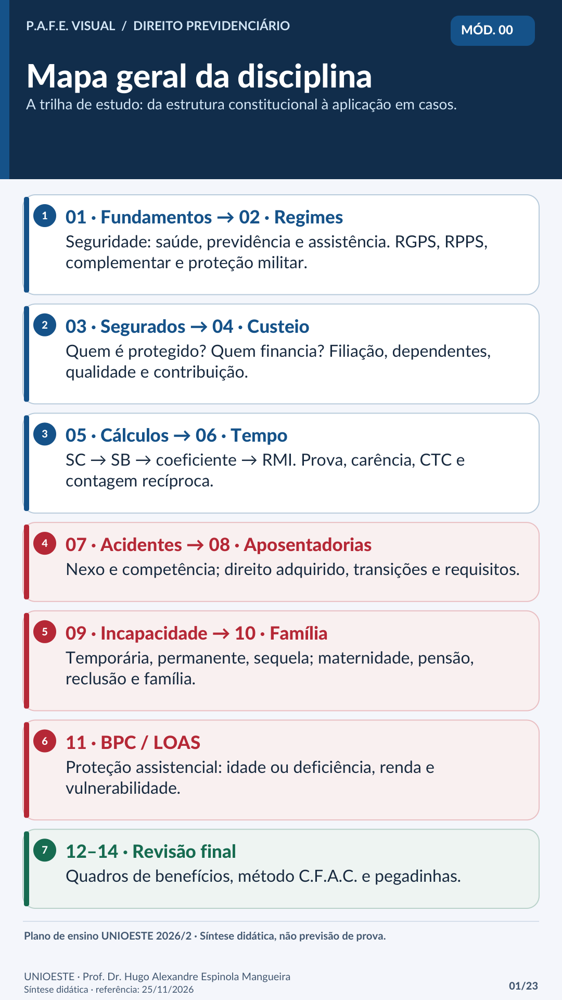
Texto pesquisável e base jurídica
A trilha de estudo: da estrutura constitucional à aplicação em casos. 01 · Fundamentos → 02 · Regimes Seguridade: saúde, previdência e assistência. RGPS, RPPS, complementar e proteção militar. 03 · Segurados → 04 · Custeio Quem é protegido? Quem financia? Filiação, dependentes, qualidade e contribuição. 05 · Cálculos → 06 · Tempo SC → SB → coeficiente → RMI. Prova, carência, CTC e contagem recíproca. 07 · Acidentes → 08 · Aposentadorias Nexo e competência; direito adquirido, transições e requisitos. 09 · Incapacidade → 10 · Família Temporária, permanente, sequela; maternidade, pensão, reclusão e família. 11 · BPC / LOAS Proteção assistencial: idade ou deficiência, renda e vulnerabilidade. 12–14 · Revisão final Quadros de benefícios, método C.F.A.C. e pegadinhas. Base: Plano de ensino UNIOESTE 2026/2 · Síntese didática, não previsão de prova.
12A — Comparativo dos benefícios
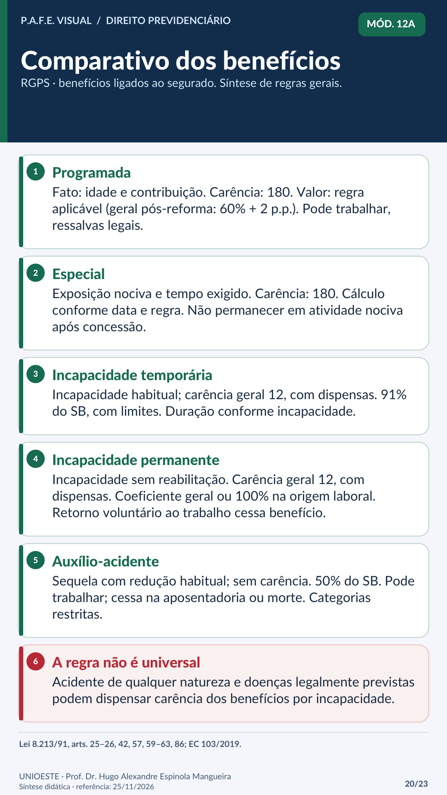
Texto pesquisável e base jurídica
RGPS · benefícios ligados ao segurado. Síntese de regras gerais. Programada Fato: idade e contribuição. Carência: 180. Valor: regra aplicável (geral pós-reforma: 60% + 2 p.p.). Pode trabalhar, ressalvas legais. Especial Exposição nociva e tempo exigido. Carência: 180. Cálculo conforme data e regra. Não permanecer em atividade nociva após concessão. Incapacidade temporária Incapacidade habitual; carência geral 12, com dispensas. 91% do SB, com limites. Duração conforme incapacidade. Incapacidade permanente Incapacidade sem reabilitação. Carência geral 12, com dispensas. Coeficiente geral ou 100% na origem laboral. Retorno voluntário ao trabalho cessa benefício. Auxílio-acidente Sequela com redução habitual; sem carência. 50% do SB. Pode trabalhar; cessa na aposentadoria ou morte. Categorias restritas. A regra não é universal Acidente de qualquer natureza e doenças legalmente previstas podem dispensar carência dos benefícios por incapacidade. Base: Lei 8.213/91, arts. 25–26, 42, 57, 59–63, 86; EC 103/2019.
12B — Comparativo: família e BPC
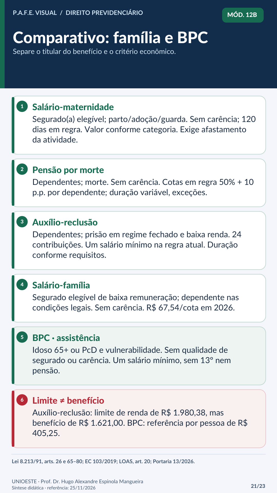
Texto pesquisável e base jurídica
Separe o titular do benefício e o critério econômico. Salário-maternidade Segurado(a) elegível; parto/adoção/guarda. Sem carência; 120 dias em regra. Valor conforme categoria. Exige afastamento da atividade. Pensão por morte Dependentes; morte. Sem carência. Cotas em regra 50% + 10 p.p. por dependente; duração variável, exceções. Auxílio-reclusão Dependentes; prisão em regime fechado e baixa renda. 24 contribuições. Um salário mínimo na regra atual. Duração conforme requisitos. Salário-família Segurado elegível de baixa remuneração; dependente nas condições legais. Sem carência. R$ 67,54/cota em 2026. BPC · assistência Idoso 65+ ou PcD e vulnerabilidade. Sem qualidade de segurado ou carência. Um salário mínimo, sem 13º nem pensão. Limite ≠ benefício Auxílio-reclusão: limite de renda de R$ 1.980,38, mas benefício de R$ 1.621,00. BPC: referência por pessoa de R$ 405,25. Base: Lei 8.213/91, arts. 26 e 65–80; EC 103/2019; LOAS, art. 20; Portaria 13/2026.
13 — Fluxograma de resolução
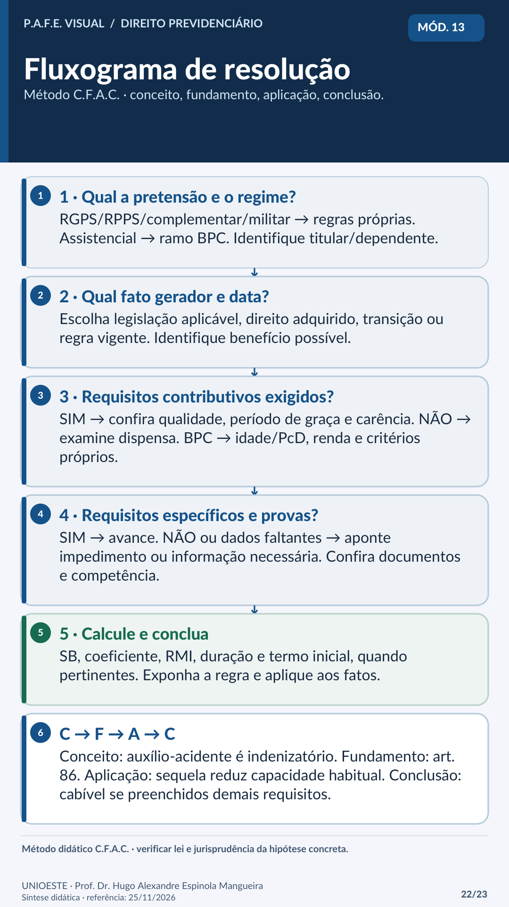
Texto pesquisável e base jurídica
Método C.F.A.C. · conceito, fundamento, aplicação, conclusão. 1 · Qual a pretensão e o regime? RGPS/RPPS/complementar/militar → regras próprias. Assistencial → ramo BPC. Identifique titular/dependente. 2 · Qual fato gerador e data? Escolha legislação aplicável, direito adquirido, transição ou regra vigente. Identifique benefício possível. 3 · Requisitos contributivos exigidos? SIM → confira qualidade, período de graça e carência. NÃO → examine dispensa. BPC → idade/PcD, renda e critérios próprios. 4 · Requisitos específicos e provas? SIM → avance. NÃO ou dados faltantes → aponte impedimento ou informação necessária. Confira documentos e competência. 5 · Calcule e conclua SB, coeficiente, RMI, duração e termo inicial, quando pertinentes. Exponha a regra e aplique aos fatos. C → F → A → C Conceito: auxílio-acidente é indenizatório. Fundamento: art. 86. Aplicação: sequela reduz capacidade habitual. Conclusão: cabível se preenchidos demais requisitos. Base: Método didático C.F.A.C. · verificar lei e jurisprudência da hipótese concreta.
14 — Pegadinhas e revisão final
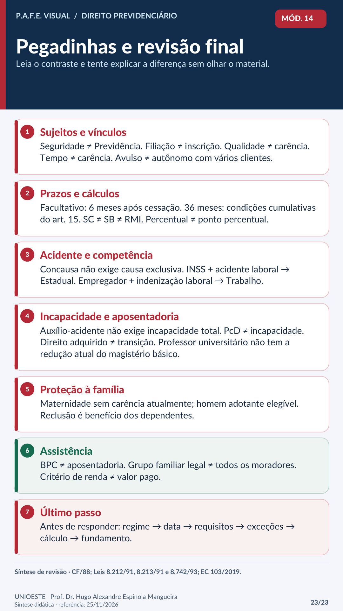
Texto pesquisável e base jurídica
Leia o contraste e tente explicar a diferença sem olhar o material. Sujeitos e vínculos Seguridade ≠ Previdência. Filiação ≠ inscrição. Qualidade ≠ carência. Tempo ≠ carência. Avulso ≠ autônomo com vários clientes. Prazos e cálculos Facultativo: 6 meses após cessação. 36 meses: condições cumulativas do art. 15. SC ≠ SB ≠ RMI. Percentual ≠ ponto percentual. Acidente e competência Concausa não exige causa exclusiva. INSS + acidente laboral → Estadual. Empregador + indenização laboral → Trabalho. Incapacidade e aposentadoria Auxílio-acidente não exige incapacidade total. PcD ≠ incapacidade. Direito adquirido ≠ transição. Professor universitário não tem a redução atual do magistério básico. Proteção à família Maternidade sem carência atualmente; homem adotante elegível. Reclusão é benefício dos dependentes. Assistência BPC ≠ aposentadoria. Grupo familiar legal ≠ todos os moradores. Critério de renda ≠ valor pago. Último passo Antes de responder: regime → data → requisitos → exceções → cálculo → fundamento. Base: Síntese de revisão · CF/88; Leis 8.212/91, 8.213/91 e 8.742/93; EC 103/2019.
Síntese didática produzida em 25/11/2026; prioridades de estudo não são previsão de prova. Consulte a legislação aplicável à hipótese.
Estudo por módulos
01Fundamentos, história e princípios
Objetivo: Entender o sistema de proteção social e reconhecer os princípios do art. 194.
Seguridade = saúde + previdência + assistência.
Estudo visual · 1 infográfico
01 — Fundamentos e princípios
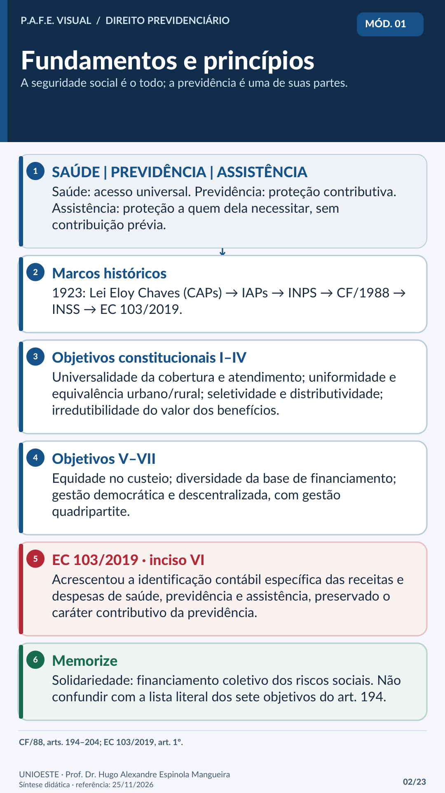
Texto pesquisável e base jurídica
A seguridade social é o todo; a previdência é uma de suas partes. SAÚDE | PREVIDÊNCIA | ASSISTÊNCIA Saúde: acesso universal. Previdência: proteção contributiva. Assistência: proteção a quem dela necessitar, sem contribuição prévia. Marcos históricos 1923: Lei Eloy Chaves (CAPs) → IAPs → INPS → CF/1988 → INSS → EC 103/2019. Objetivos constitucionais I–IV Universalidade da cobertura e atendimento; uniformidade e equivalência urbano/rural; seletividade e distributividade; irredutibilidade do valor dos benefícios. Objetivos V–VII Equidade no custeio; diversidade da base de financiamento; gestão democrática e descentralizada, com gestão quadripartite. EC 103/2019 · inciso VI Acrescentou a identificação contábil específica das receitas e despesas de saúde, previdência e assistência, preservado o caráter contributivo da previdência. Memorize Solidariedade: financiamento coletivo dos riscos sociais. Não confundir com a lista literal dos sete objetivos do art. 194. Base: CF/88, arts. 194–204; EC 103/2019, art. 1º.
A seguridade social reúne políticas diferentes. A saúde tem acesso universal; a assistência protege quem dela necessita, independentemente de contribuição prévia; a previdência organiza proteção contributiva contra riscos sociais. Por isso, não se exige contribuição pessoal prévia para todo serviço da seguridade.
Na evolução brasileira, o Decreto Legislativo 4.682/1923, conhecido como Lei Eloy Chaves, é um marco das caixas de aposentadorias e pensões dos ferroviários. Não significa inexistência absoluta de proteção anterior. Vieram institutos por categorias, unificação institucional e, com a Constituição de 1988, a concepção integrada de seguridade. Para a prova, relacionar o marco à mudança institucional é mais seguro que decorar uma sequência sem contexto.
Universalidade da cobertura diz respeito aos riscos e necessidades protegidos; universalidade do atendimento, às pessoas alcançadas. Seletividade permite escolher prestações conforme necessidades e recursos; distributividade orienta a proteção a reduzir desigualdades. São princípios que convivem, não promessas de qualquer benefício para qualquer pessoa.
A EC 103/2019 alterou o inciso VI do parágrafo único do art. 194. Preservou a diversidade do financiamento e acrescentou identificação contábil das receitas e despesas por área e preservação do caráter contributivo da previdência. Não tornou a assistência contributiva.
| Objetivo constitucional | Como reconhecer |
|---|---|
| Universalidade da cobertura e do atendimento | Riscos protegidos e pessoas atendidas. |
| Uniformidade e equivalência urbano/rural | Proteção equivalente, sem exigir identidade de todo requisito. |
| Seletividade e distributividade | Escolha de prestações e redução de desigualdades. |
| Irredutibilidade do valor | Proteção do valor; na previdência, conferir também preservação do valor real. |
| Equidade no custeio | Participação ajustada às diferenças relevantes de capacidade contributiva. |
| Diversidade da base de financiamento | Pluralidade de fontes, com a redação acrescida pela EC 103. |
| Gestão democrática e descentralizada | Gestão quadripartite: trabalhadores, empregadores, aposentados e governo. |
Linha do tempo — contexto de estudo, sem atribuição de fala
- 1923: Lei Eloy Chaves, Decreto 4.682, organiza caixas dos ferroviários; marco histórico, não primeira proteção social de toda a história brasileira.
- Décadas seguintes: expansão de caixas e institutos por categorias; LOPS em 1960; unificação no INPS em 1966; SINPAS em 1977.
- 1988: Constituição organiza saúde, previdência e assistência na seguridade social. INSS em 1990; Leis 8.212 e 8.213 em 1991.
- 2019: EC 103 modifica requisitos e cálculo; o marco geral de vigência relevante ao RGPS é 13/11/2019, com exceções expressas.
Onde a prova costuma confundir
- Não trocar os objetivos da seguridade pelos requisitos de um benefício.
- Gestão quadripartite tem quatro grupos; não é a mesma coisa que financiamento tripartite.
- A mudança de 2019 está no inciso VI, não no VII.
Recuperação rápida
Revisar estes cartões →Cobertura e atendimento significam o mesmo?
Não. Cobertura se refere aos riscos; atendimento, às pessoas.
Qual inciso do art. 194 foi alterado pela EC 103?
O VI: diversidade do financiamento, com segregação contábil por área e preservação da contributividade da previdência.
Origem deste assunto
Síntese didática desta revisão, com correções identificadas. Não é fala literal do docente.
- Registro 002: Princípios e avaliação, com explicação histórica complementar
- Registro 006: Roteiro unificado A/B; os blocos não são divisão oficial da prova
Conferir fundamento
Síntese acadêmica, sem transcrição literal dos dispositivos. O essencial está incorporado; os links permitem conferir a fonte oficial.
Fim do módulo 1 de 11.
Treinar este assunto02Regimes, repartição e capitalização
Objetivo: Identificar o regime antes de aplicar uma regra de benefício.
Regime define a proteção; técnica financeira define como custear.
Estudo visual · 1 infográfico
02 — Regimes previdenciários
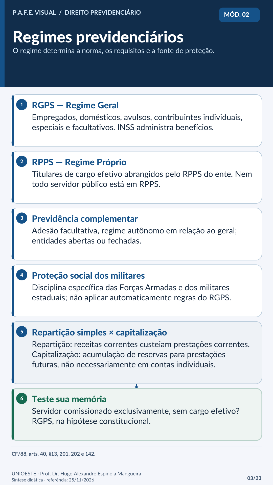
Texto pesquisável e base jurídica
O regime determina a norma, os requisitos e a fonte de proteção. RGPS — Regime Geral Empregados, domésticos, avulsos, contribuintes individuais, especiais e facultativos. INSS administra benefícios. RPPS — Regime Próprio Titulares de cargo efetivo abrangidos pelo RPPS do ente. Nem todo servidor público está em RPPS. Previdência complementar Adesão facultativa, regime autônomo em relação ao geral; entidades abertas ou fechadas. Proteção social dos militares Disciplina específica das Forças Armadas e dos militares estaduais; não aplicar automaticamente regras do RGPS. Repartição simples × capitalização Repartição: receitas correntes custeiam prestações correntes. Capitalização: acumulação de reservas para prestações futuras, não necessariamente em contas individuais. Teste sua memória Servidor comissionado exclusivamente, sem cargo efetivo? RGPS, na hipótese constitucional. Base: CF/88, arts. 40, §13, 201, 202 e 142.
O RGPS abrange trabalhadores da iniciativa privada e outras pessoas enquadradas em lei. O RPPS se destina aos titulares de cargo efetivo vinculados ao regime próprio do ente. Empregado de empresa pública, ocupante exclusivamente de cargo em comissão e contratado temporário não se tornam segurados de RPPS apenas porque trabalham para o poder público.
A previdência complementar tem autonomia em relação aos regimes básicos e adesão facultativa. Entidades abertas atendem o público nos termos de seus produtos; entidades fechadas atendem grupos delimitados, vinculados a patrocinadores ou instituidores. Complementação não substitui automaticamente a vinculação obrigatória ao regime básico.
A proteção dos militares possui disciplina específica. Abrange também os sistemas legalmente aplicáveis aos militares estaduais, não apenas as Forças Armadas. Não transplante requisitos do RGPS, nem trate todo militar como servidor civil sujeito ao art. 40.
Na repartição, receitas do período financiam obrigações correntes e há solidariedade entre grupos e gerações. Na capitalização, formam-se reservas para obrigações futuras. Capitalização não significa necessariamente conta estritamente individual ou contribuição exclusiva do trabalhador: há diferentes planos e formas de repartição de riscos.
| Sistema | Vínculo de referência | Cuidado de prova |
|---|---|---|
| RGPS | Categorias de segurados definidas em lei | Não é exclusivo de empregados com carteira. |
| RPPS | Titular de cargo efetivo e regime do ente | Não abrange indistintamente todo agente público. |
| Complementar | Adesão a plano aberto ou fechado | Facultativa e autônoma em relação ao regime básico. |
| Proteção militar | Legislação militar aplicável | Não confundir militares federais e estaduais com servidores civis. |
Onde a prova costuma confundir
- RGPS não é sinônimo de repartição como conceito econômico universal.
- RPPS e capitalização não são termos equivalentes.
- Previdência complementar fechada não é benefício assistencial.
Recuperação rápida
Revisar estes cartões →Um cargo exclusivamente comissionado leva automaticamente ao RPPS?
Não. A Constituição o submete ao RGPS.
Qual a diferença financeira central?
Repartição financia obrigações correntes; capitalização constitui reservas para obrigações futuras.
Origem deste assunto
Síntese didática desta revisão, com correções identificadas. Não é fala literal do docente.
- Registro 002: Regimes e repartição/capitalização
- Registro 006: Revisão do bloco inicial
Conferir fundamento
Síntese acadêmica, sem transcrição literal dos dispositivos. O essencial está incorporado; os links permitem conferir a fonte oficial.
Fim do módulo 2 de 11.
Treinar este assunto03RGPS: segurados, dependentes e proteção
Objetivo: Distinguir filiação, inscrição, qualidade, carência e período de graça.
Vínculo, cadastro, proteção e carência são perguntas diferentes.
Estudo visual · 3 infográficos + 2 cartoons
03A — Segurados do RGPS
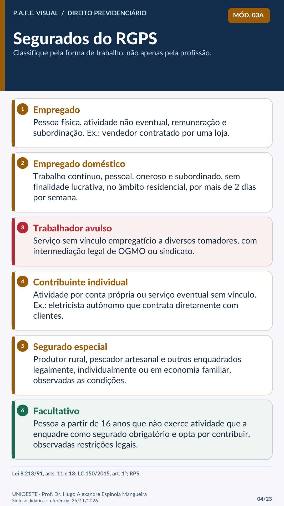
Texto pesquisável e base jurídica
Classifique pela forma de trabalho, não apenas pela profissão. Empregado Pessoa física, atividade não eventual, remuneração e subordinação. Ex.: vendedor contratado por uma loja. Empregado doméstico Trabalho contínuo, pessoal, oneroso e subordinado, sem finalidade lucrativa, no âmbito residencial, por mais de 2 dias por semana. Trabalhador avulso Serviço sem vínculo empregatício a diversos tomadores, com intermediação legal de OGMO ou sindicato. Contribuinte individual Atividade por conta própria ou serviço eventual sem vínculo. Ex.: eletricista autônomo que contrata diretamente com clientes. Segurado especial Produtor rural, pescador artesanal e outros enquadrados legalmente, individualmente ou em economia familiar, observadas as condições. Facultativo Pessoa a partir de 16 anos que não exerce atividade que a enquadre como segurado obrigatório e opta por contribuir, observadas restrições legais. Base: Lei 8.213/91, arts. 11 e 13; LC 150/2015, art. 1º; RPS.
03B — Trabalhador avulso
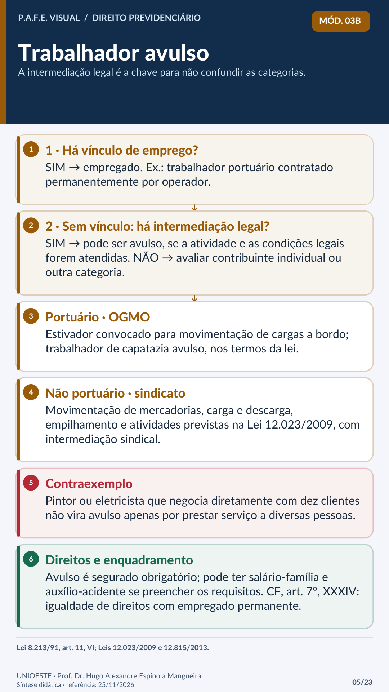
Texto pesquisável e base jurídica
A intermediação legal é a chave para não confundir as categorias. 1 · Há vínculo de emprego? SIM → empregado. Ex.: trabalhador portuário contratado permanentemente por operador. 2 · Sem vínculo: há intermediação legal? SIM → pode ser avulso, se a atividade e as condições legais forem atendidas. NÃO → avaliar contribuinte individual ou outra categoria. Portuário · OGMO Estivador convocado para movimentação de cargas a bordo; trabalhador de capatazia avulso, nos termos da lei. Não portuário · sindicato Movimentação de mercadorias, carga e descarga, empilhamento e atividades previstas na Lei 12.023/2009, com intermediação sindical. Contraexemplo Pintor ou eletricista que negocia diretamente com dez clientes não vira avulso apenas por prestar serviço a diversas pessoas. Direitos e enquadramento Avulso é segurado obrigatório; pode ter salário-família e auxílio-acidente se preencher os requisitos. CF, art. 7º, XXXIV: igualdade de direitos com empregado permanente. Base: Lei 8.213/91, art. 11, VI; Leis 12.023/2009 e 12.815/2013.
03C — Dependentes e período de graça
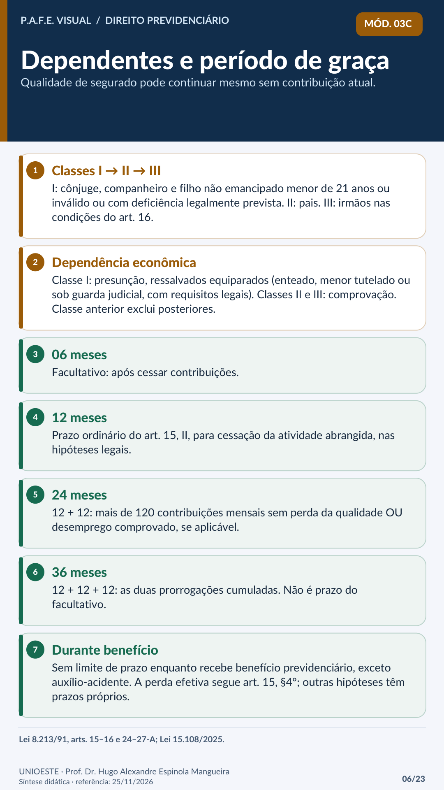
Texto pesquisável e base jurídica
Qualidade de segurado pode continuar mesmo sem contribuição atual. Classes I → II → III I: cônjuge, companheiro e filho não emancipado menor de 21 anos ou inválido ou com deficiência legalmente prevista. II: pais. III: irmãos nas condições do art. 16. Dependência econômica Classe I: presunção, ressalvados equiparados (enteado, menor tutelado ou sob guarda judicial, com requisitos legais). Classes II e III: comprovação. Classe anterior exclui posteriores. 06 meses Facultativo: após cessar contribuições. 12 meses Prazo ordinário do art. 15, II, para cessação da atividade abrangida, nas hipóteses legais. 24 meses 12 + 12: mais de 120 contribuições mensais sem perda da qualidade OU desemprego comprovado, se aplicável. 36 meses 12 + 12 + 12: as duas prorrogações cumuladas. Não é prazo do facultativo. Durante benefício Sem limite de prazo enquanto recebe benefício previdenciário, exceto auxílio-acidente. A perda efetiva segue art. 15, §4º; outras hipóteses têm prazos próprios. Base: Lei 8.213/91, arts. 15–16 e 24–27-A; Lei 15.108/2025.
Cartoon · Avulso ou autônomo?
Avulso: a intermediação legal liga o trabalhador aos tomadores.
Autônomo: negocia diretamente com seus clientes. Vários clientes, por si só, não o tornam avulso.
Empregado: vínculo de emprego. Observe a forma de contratação, não apenas a profissão.
Ilustração didática; não substitui os requisitos legais do módulo.
Cartoon · Período de graça: proteção sem recolher
O segurado deixa de exercer atividade abrangida pelo RGPS.
A qualidade pode ser mantida pelo prazo ordinário, nas hipóteses legais.
Mais de 120 contribuições sem perda da qualidade + desemprego comprovado, se aplicáveis. Facultativo: 6 meses.
Ilustração didática; não substitui os requisitos legais do módulo.
Novo: Exemplos de segurado avulso, OGMO, sindicato e comparação com contribuinte individual · 18 questões OAB/avulso.
Os segurados obrigatórios são empregado, empregado doméstico, trabalhador avulso, contribuinte individual e segurado especial. Quem exerce atividade remunerada abrangida pelo RGPS filia-se obrigatoriamente. A inscrição é o cadastro que formaliza informações; não é a causa universal da proteção do obrigatório.
O facultativo não exerce atividade que imponha filiação obrigatória e adere mediante inscrição e primeiro recolhimento válido e sem atraso. A referência operacional é idade mínima de 16 anos. O art. 13 da Lei 8.213 ainda conserva redação antiga de 14 anos: essa leitura isolada ignora a disciplina constitucional e regulamentar posterior.
Dependentes são beneficiários por vínculo com o segurado. Podem também ser segurados em direito próprio. Na primeira classe estão cônjuge, companheiro e filhos nas condições legais; na segunda, pais; na terceira, irmãos nas condições legais. A existência de dependente de classe anterior exclui as posteriores. A dependência econômica da primeira classe é presumida, ressalvados os requisitos próprios dos equiparados.
A Lei 15.108/2025 incluiu expressamente o menor sob guarda judicial entre os equiparados a filho, junto do enteado e do menor sob tutela, mediante declaração do segurado e falta de condições suficientes para sustento e educação. Não basta qualquer parentesco, convivência ou alegação informal de guarda.
Qualidade de segurado é a situação jurídica de cobertura. Carência é o mínimo de contribuições mensais exigidas para certa prestação. Tempo de contribuição é outro requisito, com regras próprias. A manutenção da qualidade sem contribuir é regulada pelo art. 15; não cria novas contribuições para carência ou tempo.
No período de graça há prazos de 3, 6 e 12 meses conforme a hipótese. Para quem deixou atividade abrangida pelo RGPS, os 12 meses podem chegar a 24 se houver mais de 120 contribuições sem perda da qualidade, e ganhar outros 12 com desemprego comprovado: até 36 meses nessa regra. Quem recebe benefício mantém a qualidade sem limite de prazo, exceto quando se trata de auxílio-acidente. A data efetiva de perda exige ainda o art. 15, § 4º.
| Hipótese | Manutenção da qualidade sem recolher |
|---|---|
| Benefício previdenciário, exceto auxílio-acidente | Sem limite de prazo enquanto perdurar a situação legal. |
| Cessação de atividade/contribuições do art. 15, II | 12 meses; prorrogações podem levar a 24 ou 36. |
| Segregação compulsória | Até 12 meses após cessar a segregação. |
| Segurado retido ou recluso | Até 12 meses após o livramento. |
| Licenciamento de serviço militar obrigatório | Até 3 meses. |
| Segurado facultativo | Até 6 meses após cessar as contribuições. |
Carências para memorizar
- Incapacidade temporária e permanente: em regra, 12 contribuições; existem dispensas.
- Aposentadorias: regra geral de 180 contribuições, sem substituir o tempo mínimo e os demais requisitos.
- Auxílio-reclusão: 24 contribuições na regra atual.
- Pensão por morte, auxílio-acidente e salário-família: sem carência.
- Salário-maternidade: não se exige a antiga carência de 10 contribuições, após a decisão do STF e a implementação administrativa.
Perda da qualidade: contribuições anteriores não desaparecem
- Conforme o benefício, a lei pode exigir novas contribuições para reaproveitar carência anterior. Na incapacidade comum, o art. 27-A exige metade da carência após nova filiação, sem dispensar o total legal nem os demais requisitos.
- A carência de aposentadorias não reinicia universalmente do zero. A Lei 10.666/2003 afasta a perda da qualidade como obstáculo nas aposentadorias abrangidas por seu art. 3º; cada espécie ainda exige seus próprios requisitos.
- Na pensão, examine a situação no óbito e eventual direito anterior à aposentadoria. Doença isolada não prova que a qualidade foi conservada por incapacidade.
Onde a prova costuma confundir
- Mais de 120 não é o mesmo que exatamente 120.
- 36 meses não é o teto de todas as hipóteses de manutenção da qualidade.
- Filho universitário não ganha automaticamente dependência até 24 anos.
- Deficiência não depende automaticamente de interdição civil.
Recuperação rápida
Revisar estes cartões →Qualidade de segurado e carência são equivalentes?
Não. Pode existir cobertura sem que esteja cumprida a carência exigida pelo benefício.
O máximo é sempre 36 meses?
Não. São 36 meses na soma das prorrogações da hipótese pertinente; há manutenção sem limite de prazo durante benefício, exceto auxílio-acidente.
Origem deste assunto
Síntese didática desta revisão, com correções identificadas. Não é fala literal do docente.
- Registro 002: Questionário, dúvidas e correções de carência/período de graça
- Registro 003: Qualidade do segurado na pensão
Conferir fundamento
Síntese acadêmica, sem transcrição literal dos dispositivos. O essencial está incorporado; os links permitem conferir a fonte oficial.
Fim do módulo 3 de 11.
Treinar este assunto04Custeio e salário de contribuição
Objetivo: Separar financiamento do sistema, base contributiva e benefício futuro.
SC é a base para contribuir; não é o benefício que será pago.
Estudo visual · 1 infográfico + 1 cartoon
04 — Financiamento e custeio
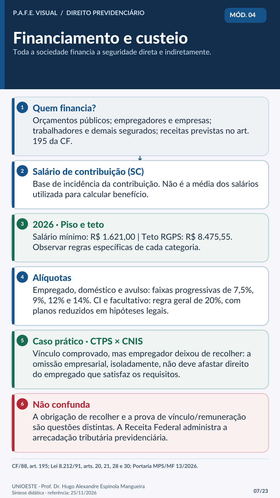
Texto pesquisável e base jurídica
Toda a sociedade financia a seguridade direta e indiretamente. Quem financia? Orçamentos públicos; empregadores e empresas; trabalhadores e demais segurados; receitas previstas no art. 195 da CF. Salário de contribuição (SC) Base de incidência da contribuição. Não é a média dos salários utilizada para calcular benefício. 2026 · Piso e teto Salário mínimo: R$ 1.621,00 | Teto RGPS: R$ 8.475,55. Observar regras específicas de cada categoria. Alíquotas Empregado, doméstico e avulso: faixas progressivas de 7,5%, 9%, 12% e 14%. CI e facultativo: regra geral de 20%, com planos reduzidos em hipóteses legais. Caso prático · CTPS × CNIS Vínculo comprovado, mas empregador deixou de recolher: a omissão empresarial, isoladamente, não deve afastar direito do empregado que satisfaz os requisitos. Não confunda A obrigação de recolher e a prova de vínculo/remuneração são questões distintas. A Receita Federal administra a arrecadação tributária previdenciária. Base: CF/88, art. 195; Lei 8.212/91, arts. 20, 21, 28 e 30; Portaria MPS/MF 13/2026.
Cartoon · CTPS regular, CNIS incompleto
Empregado comprova o vínculo por documentação regular.
O recolhimento não aparece no CNIS. Investigue prova do vínculo e remuneração.
A omissão empresarial, isoladamente, não deve afastar o direito do empregado que preenche os requisitos.
Ilustração didática; não substitui os requisitos legais do módulo.
A seguridade é financiada pela sociedade, direta e indiretamente, por orçamentos e contribuições sociais. A Constituição contempla empresas e equiparados, trabalhadores e segurados, concursos de prognósticos, importação e contribuição sobre bens e serviços. A execução da reforma tributária tem transições próprias; não apague fontes antigas apenas porque a Constituição recebeu nova redação.
Nenhum benefício ou serviço pode ser criado, majorado ou estendido sem fonte de custeio total. A exigência de contribuições sociais sujeita-se à anterioridade nonagesimal pertinente. Aposentadoria e pensão pagas pelo RGPS não sofrem a contribuição do segurado prevista no art. 195, II; isso não dispensa a contribuição do aposentado que volta a trabalhar em atividade abrangida.
O salário de contribuição varia conforme a categoria. Para empregado e avulso, a referência é a remuneração abrangida pela lei; para contribuinte individual, a remuneração da atividade; para facultativo, o valor declarado dentro dos limites. Nem todo ingresso financeiro integra a base: há exclusões legais. Salário líquido e salário de contribuição não são sinônimos.
Para empregado, doméstico e avulso, a tabela é progressiva: cada alíquota incide na sua faixa. Não se aplica a alíquota mais alta sobre a remuneração inteira. Contribuinte individual, facultativo e MEI têm regras próprias; não use a tabela progressiva do empregado para todos.
Os planos de 5% e 11% possuem pressupostos e efeitos específicos. O facultativo de baixa renda não se confunde com qualquer pessoa de renda baixa. Para contagem recíproca e determinadas utilizações contributivas, pode ser necessária complementação. Investigue o código e a categoria antes de tirar conclusão sobre um recolhimento.
| Empregado/doméstico/avulso — 2026 | Alíquota marginal |
|---|---|
| Até R$ 1.621,00 | 7,5% |
| R$ 1.621,01 a R$ 2.902,84 | 9% |
| R$ 2.902,85 a R$ 4.354,27 | 12% |
| R$ 4.354,28 a R$ 8.475,55 | 14% |
Onde a prova costuma confundir
- Alíquota marginal não é alíquota efetiva.
- O teto do RGPS não é teto de remuneração de todo trabalhador.
- Empregador e empregado têm obrigações diferentes; não somar tributos sem definir o objeto do cálculo.
Recuperação rápida
Revisar estes cartões →Uma remuneração na faixa de 12% é tributada inteira em 12%?
Não. A contribuição do empregado é progressiva por faixas.
SC, SB e RMI são intercambiáveis?
Não. SC serve ao recolhimento; SB à base de cálculo de certas prestações; RMI ao valor inicial devido.
Origem deste assunto
Síntese didática desta revisão, com correções identificadas. Não é fala literal do docente.
- Registro 006: Roteiro por datas; custeio é tema programado, sem transcrição integral recuperada
Conferir fundamento
Síntese acadêmica, sem transcrição literal dos dispositivos. O essencial está incorporado; os links permitem conferir a fonte oficial.
Fim do módulo 4 de 11.
Treinar este assunto05Cálculos: média, coeficiente e RMI
Objetivo: Compreender o fluxo do salário de contribuição ao valor inicial.
SCs atualizados → média/SB → coeficiente da regra → RMI.
Estudo visual · 1 infográfico + 1 cartoon
05 — Cálculos previdenciários
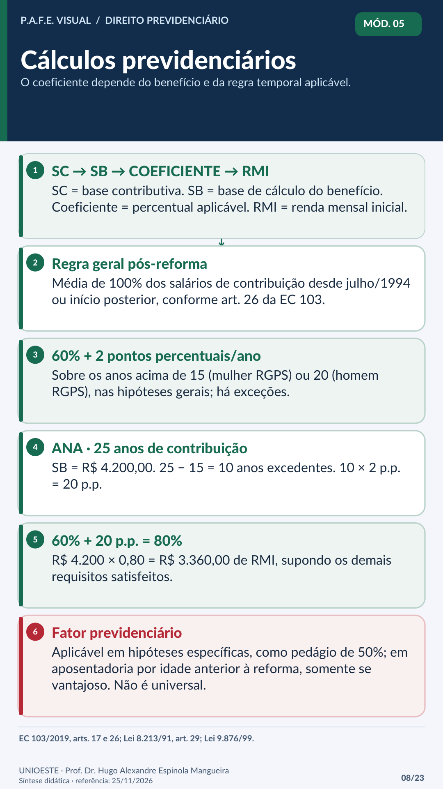
Texto pesquisável e base jurídica
O coeficiente depende do benefício e da regra temporal aplicável. SC → SB → COEFICIENTE → RMI SC = base contributiva. SB = base de cálculo do benefício. Coeficiente = percentual aplicável. RMI = renda mensal inicial. Regra geral pós-reforma Média de 100% dos salários de contribuição desde julho/1994 ou início posterior, conforme art. 26 da EC 103. 60% + 2 pontos percentuais/ano Sobre os anos acima de 15 (mulher RGPS) ou 20 (homem RGPS), nas hipóteses gerais; há exceções. ANA · 25 anos de contribuição SB = R$ 4.200,00. 25 − 15 = 10 anos excedentes. 10 × 2 p.p. = 20 p.p. 60% + 20 p.p. = 80% R$ 4.200 × 0,80 = R$ 3.360,00 de RMI, supondo os demais requisitos satisfeitos. Fator previdenciário Aplicável em hipóteses específicas, como pedágio de 50%; em aposentadoria por idade anterior à reforma, somente se vantajoso. Não é universal. Base: EC 103/2019, arts. 17 e 26; Lei 8.213/91, art. 29; Lei 9.876/99.
Cartoon · Ana: transforme tempo em coeficiente
Ana tem 25 anos de contribuição; o salário de benefício informado é R$ 4.200,00.
Na fórmula geral aplicável, são dez anos excedentes e vinte pontos percentuais adicionais.
RMI de R$ 3.360,00, supondo atendidos os outros requisitos. Nem todo benefício usa esta fórmula.
Ilustração didática; não substitui os requisitos legais do módulo.
Na regra da EC 103/2019, a média considera 100% do período contributivo desde julho de 1994, ou desde o início das contribuições se posterior, com atualização monetária. Não se calcula simplesmente a média nominal de todos os depósitos da vida. Há regras de transição, direitos anteriores e particularidades que precisam ser identificados antes da conta.
Na fórmula geral pertinente, o coeficiente começa em 60% e recebe 2 pontos percentuais por ano que exceder o marco legal. Para mulheres do RGPS, o marco usual é 15 anos; para homens, 20. Isso não transforma o requisito mínimo de acesso do homem já filiado antes da reforma em 20 anos em todas as regras.
Acrescentar 2 pontos percentuais não é aumentar 60% em 2%. Cinco anos excedentes acrescentam 10 pontos ao coeficiente: ele vai a 70%. Uma base de R$ 3.000,00, nessa hipótese, gera resultado de R$ 2.100,00 antes da análise de limites e demais regras.
Não existe uma fórmula única para todo benefício. Incapacidade temporária usa a disciplina de 91% e o limitador da média dos últimos 12 salários, quando aplicável; auxílio-acidente usa 50% do SB. A aposentadoria por incapacidade permanente de origem ocupacional tem a exceção de 100% da média. Os pedágios também têm regras próprias.
O fator previdenciário combina variáveis como idade, tempo e expectativa de sobrevida. Continua relevante em hipóteses de direito adquirido e na transição do pedágio de 50%. A reforma não o eliminou de toda situação. Na aposentadoria da pessoa com deficiência, sua incidência favorável segue legislação específica.
| Hipótese de estudo | Esquema de cálculo |
|---|---|
| Regra geral de aposentadoria sujeita ao art. 26 | Média × coeficiente de 60% + acréscimos legais. |
| Pedágio de 50% | Média × fator previdenciário. |
| Pedágio de 100% | 100% da média na hipótese legal. |
| Incapacidade permanente ocupacional | 100% da média, na regra pós-reforma correspondente. |
| Auxílio por incapacidade temporária | 91% do SB, com o limitador legal pertinente. |
| Auxílio-acidente | 50% do SB; natureza indenizatória. |
Mais dois cálculos recuperados e conferidos
- Média hipotética de R$ 4.000: homem com 25 anos tem 60% + 5 × 2 pontos = 70%; produto = R$ 2.800. Mulher com 20 anos chega aos mesmos 70%, nas hipóteses pertinentes.
- Auxílio temporário: 91% de SB hipotético de R$ 3.000 = R$ 2.730, sujeito ao limitador próprio e demais limites. Auxílio-acidente: 50% do mesmo SB = R$ 1.500. Não se aplica 50% ao auxílio anterior de R$ 2.730.
- Atividade especial de 15 anos: o acréscimo de 2 pontos parte do excedente a 15 anos, inclusive para homem. Exatamente 15 anos totais gera 60%; 16 anos, 62%. Tempo total e tempo mínimo de exposição são requisitos diferentes.
Como reconhecer uma pegadinha numérica
- A média usa, em regra, 100% dos salários do período básico pós-reforma. Isso não significa benefício de 100% da média.
- 60% + 2 pontos dá 62%. Aumentar 60% em 2% daria 61,2%, que é outra operação.
- Coeficiente acima de 100% da média não equivale a benefício acima do teto monetário do RGPS. Não crie limite percentual inexistente na fórmula.
Onde a prova costuma confundir
- 60% não é uma alíquota de contribuição.
- 100% da média pode ser inferior à última remuneração.
- Não aplicar o coeficiente geral a salário-maternidade, pensão e qualquer outra prestação indistintamente.
- Excluir salários que reduzem a média pode afetar o tempo aproveitável; não excluir automaticamente.
Recuperação rápida
Revisar estes cartões →60% mais 2 pontos por cinco anos excedentes resulta em quanto?
70% da base; não 60% multiplicado por 1,10.
Média de 100% dos salários significa benefício de 100% da média?
Não. A média e o coeficiente são etapas distintas.
Origem deste assunto
Síntese didática desta revisão, com correções identificadas. Não é fala literal do docente.
- Registro 002: Exemplos de 60% + 2 pontos e bases de cálculo
- Registro 005: RMI especial e limite percentual
- Registro 007: Cálculo da incapacidade temporária
Conferir fundamento
Síntese acadêmica, sem transcrição literal dos dispositivos. O essencial está incorporado; os links permitem conferir a fonte oficial.
Fim do módulo 5 de 11.
Treinar este assunto06Tempo de contribuição, prova e contagem recíproca
Objetivo: Saber o que deve ser provado e evitar contagem automática ou em duplicidade.
Ter registro, ter tempo e ter carência não são a mesma verificação.
Estudo visual · 1 infográfico
06 — Tempo de contribuição
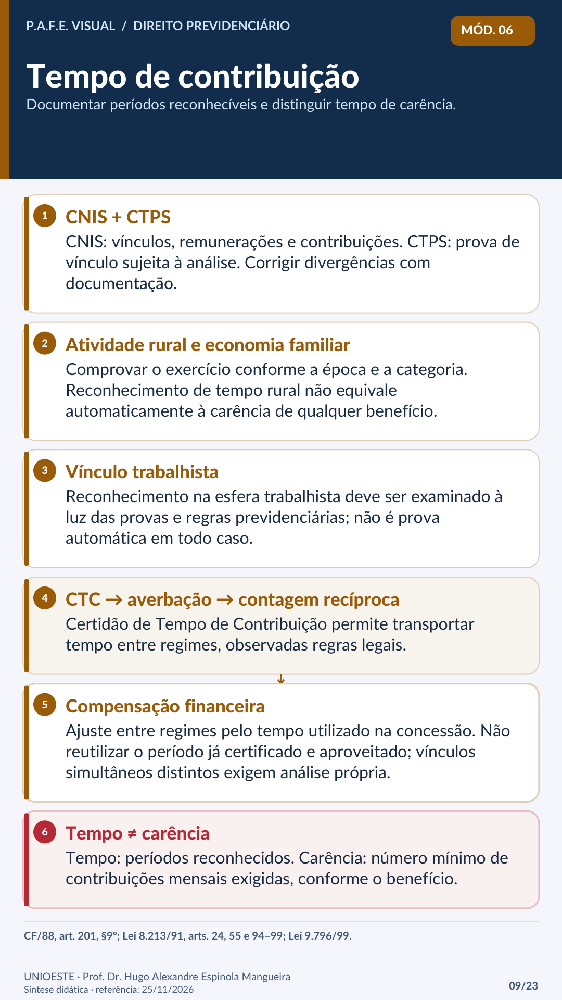
Texto pesquisável e base jurídica
Documentar períodos reconhecíveis e distinguir tempo de carência. CNIS + CTPS CNIS: vínculos, remunerações e contribuições. CTPS: prova de vínculo sujeita à análise. Corrigir divergências com documentação. Atividade rural e economia familiar Comprovar o exercício conforme a época e a categoria. Reconhecimento de tempo rural não equivale automaticamente à carência de qualquer benefício. Vínculo trabalhista Reconhecimento na esfera trabalhista deve ser examinado à luz das provas e regras previdenciárias; não é prova automática em todo caso. CTC → averbação → contagem recíproca Certidão de Tempo de Contribuição permite transportar tempo entre regimes, observadas regras legais. Compensação financeira Ajuste entre regimes pelo tempo utilizado na concessão. Não reutilizar o período já certificado e aproveitado; vínculos simultâneos distintos exigem análise própria. Tempo ≠ carência Tempo: períodos reconhecidos. Carência: número mínimo de contribuições mensais exigidas, conforme o benefício. Base: CF/88, art. 201, §9º; Lei 8.213/91, arts. 24, 55 e 94–99; Lei 9.796/99.
O CNIS é um ponto de partida para conferir vínculos, remunerações e contribuições. Indicadores, períodos ausentes e valores abaixo do mínimo podem exigir acerto. A simulação do Meu INSS não é decisão concessória. Compare CNIS, carteira de trabalho e documentos contemporâneos antes de concluir.
Vínculo de emprego e obrigação de recolhimento não podem ser examinados como se o empregado fosse sempre responsável por pagar sua própria contribuição. Para contribuinte individual e facultativo, recolhimento em atraso pode ter efeitos diferentes sobre tempo e carência; não se compra automaticamente carência anterior à primeira contribuição tempestiva.
Na atividade rural, identifique a categoria, o período e a espécie de benefício. A prova de trabalho rural não se confunde com recolhimento urbano. O art. 55, § 2º, permite aproveitamento de tempo rural anterior à vigência da lei, com a ressalva legal de carência; outras modalidades e entendimentos específicos, como aposentadoria híbrida, exigem análise própria.
A prova do tempo não deve ser exclusivamente testemunhal, ressalvadas as hipóteses legais excepcionais. Documentos de familiares, início de prova material e contemporaneidade precisam ser analisados no contexto. Autodeclaração e cadastros não dispensam automaticamente a verificação dos requisitos.
A contagem recíproca permite aproveitamento entre regimes, em regra mediante CTC e compensação financeira. O mesmo período não pode ser utilizado duas vezes para conceder benefícios em regimes diferentes. Períodos concomitantes exigem tratamento próprio: dez anos simultâneos não viram vinte anos de calendário para a mesma aposentadoria.
Tempo especial cumprido antes da EC 103 pode admitir conversão em comum na forma pertinente. A conversão de especial em comum é vedada para o tempo cumprido após a reforma. Reafirmação da DER, reconhecida pelo STJ no Tema 995, pode considerar implementação posterior de requisitos nos limites da tese e da causa de pedir; não autoriza inventar vínculos.
| Documento / dado | Utilidade e limite |
|---|---|
| CNIS | Conferir vínculos e remunerações; observar indicadores e ausências. |
| CTPS e documentos contemporâneos | Comprovar trabalho e complementar o cadastro. |
| PPP / documentação técnica | Investigar exposição para tempo especial; depende de conteúdo idôneo. |
| CTC | Transferência de tempo entre regimes, sem dupla utilização. |
| Documentação rural | Categoria, período e atividade; não presumir efeito uniforme sobre carência. |
Prova rural — articulação com a aula recuperada
- Na aposentadoria rural por idade, a referência é 60 anos para homem e 55 para mulher, com atividade rural pelo período legal, em regra 180 meses. Não transportar esses requisitos para aposentadoria urbana ou híbrida sem examinar a espécie.
- Segurado especial em economia familiar pode ter proteção no valor mínimo mediante comprovação da atividade, sem demonstrar cada recolhimento mensal individual nas hipóteses legais.
- Autodeclaração, bases públicas e documentos têm funções legais próprias. Prova testemunhal isolada, em regra, não supre início de prova material; documento sindical não concede automaticamente o benefício.
Onde a prova costuma confundir
- Não confundir ausência no CNIS com inexistência do trabalho.
- Recolhimento atrasado não tem efeito igual para todas as categorias e todos os requisitos.
- Tempo rural e aposentadoria híbrida têm regras que impedem respostas universais.
Recuperação rápida
Revisar estes cartões →Dez anos de dois empregos simultâneos viram vinte anos de tempo?
Não para uma mesma contagem temporal. A concomitância pode repercutir na base de contribuição, respeitados os limites.
Para que serve a CTC?
Para certificar tempo utilizável em outro regime, observadas compensação e vedação de dupla contagem.
Origem deste assunto
Síntese didática desta revisão, com correções identificadas. Não é fala literal do docente.
- Registro 006: Roteiro por datas e artigos
- Registro 005: Prova rural e direito adquirido
Conferir fundamento
Síntese acadêmica, sem transcrição literal dos dispositivos. O essencial está incorporado; os links permitem conferir a fonte oficial.
Fim do módulo 6 de 11.
Treinar este assunto07Acidente de trabalho, doença ocupacional e prevenção
Objetivo: Distinguir evento, nexo, incapacidade e dever de prevenção.
GRO é gestão; PGR reúne inventário de riscos e plano de ação.
Estudo visual · 2 infográficos + 2 cartoons
07A — Acidente de trabalho
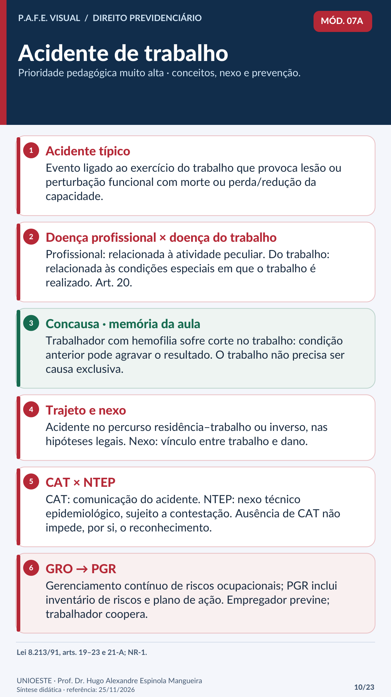
Texto pesquisável e base jurídica
Prioridade pedagógica muito alta · conceitos, nexo e prevenção. Acidente típico Evento ligado ao exercício do trabalho que provoca lesão ou perturbação funcional com morte ou perda/redução da capacidade. Doença profissional × doença do trabalho Profissional: relacionada à atividade peculiar. Do trabalho: relacionada às condições especiais em que o trabalho é realizado. Art. 20. Concausa · memória da aula Trabalhador com hemofilia sofre corte no trabalho: condição anterior pode agravar o resultado. O trabalho não precisa ser causa exclusiva. Trajeto e nexo Acidente no percurso residência–trabalho ou inverso, nas hipóteses legais. Nexo: vínculo entre trabalho e dano. CAT × NTEP CAT: comunicação do acidente. NTEP: nexo técnico epidemiológico, sujeito a contestação. Ausência de CAT não impede, por si, o reconhecimento. GRO → PGR Gerenciamento contínuo de riscos ocupacionais; PGR inclui inventário de riscos e plano de ação. Empregador previne; trabalhador coopera. Base: Lei 8.213/91, arts. 19–23 e 21-A; NR-1.
07B — Competência jurisdicional
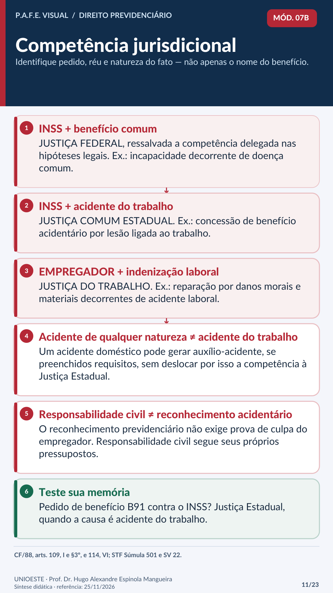
Texto pesquisável e base jurídica
Identifique pedido, réu e natureza do fato — não apenas o nome do benefício. INSS + benefício comum JUSTIÇA FEDERAL, ressalvada a competência delegada nas hipóteses legais. Ex.: incapacidade decorrente de doença comum. INSS + acidente do trabalho JUSTIÇA COMUM ESTADUAL. Ex.: concessão de benefício acidentário por lesão ligada ao trabalho. EMPREGADOR + indenização laboral JUSTIÇA DO TRABALHO. Ex.: reparação por danos morais e materiais decorrentes de acidente laboral. Acidente de qualquer natureza ≠ acidente do trabalho Um acidente doméstico pode gerar auxílio-acidente, se preenchidos requisitos, sem deslocar por isso a competência à Justiça Estadual. Responsabilidade civil ≠ reconhecimento acidentário O reconhecimento previdenciário não exige prova de culpa do empregador. Responsabilidade civil segue seus próprios pressupostos. Teste sua memória Pedido de benefício B91 contra o INSS? Justiça Estadual, quando a causa é acidente do trabalho. Base: CF/88, arts. 109, I e §3º, e 114, VI; STF Súmula 501 e SV 22.
Ressalva já registrada na v13: o pedido de pensão por morte que não discute o próprio acidente pode ser de competência federal, mesmo se o óbito decorreu de acidente laboral (STJ, CC 191.199/RS). Examine pedido e causa de pedir. Ver módulo 10.
Cartoon · Concausa: exemplo da hemofilia
Trabalhador possui hemofilia, condição anterior ao trabalho.
Sofre um corte durante a atividade laboral; a condição anterior pode agravar as consequências.
O trabalho não precisa ser causa exclusiva. Avalie a contribuição do evento laboral para o dano.
Ilustração didática; não substitui os requisitos legais do módulo.
Cartoon · Quem julga? Siga o pedido
Benefício comum contra INSS: Justiça Federal, ressalvada a competência delegada legal.
Benefício acidentário contra INSS: Justiça Comum Estadual.
Indenização decorrente da relação laboral contra empregador: Justiça do Trabalho.
Ilustração didática; não substitui os requisitos legais do módulo.
Ressalva já registrada na v13: o pedido de pensão por morte que não discute o próprio acidente pode ser de competência federal, mesmo se o óbito decorreu de acidente laboral (STJ, CC 191.199/RS). Examine pedido e causa de pedir. Ver módulo 10.
Acidente de trabalho relaciona o exercício do trabalho a lesão ou perturbação funcional que cause morte ou perda/redução da capacidade, temporária ou permanente. Doença profissional e doença do trabalho têm critérios próprios; a lei também trata de equiparações e concausa. Não basta o evento ocorrer em horário de expediente para resolver todo o nexo.
A CAT comunica o fato; não é, sozinha, decisão definitiva sobre natureza acidentária ou responsabilidade civil. Na omissão empresarial, outras pessoas e entidades legalmente previstas podem comunicar. A ausência de CAT não dispensa a análise do nexo e das provas.
O nexo técnico epidemiológico relaciona atividade econômica e agravo segundo o regime legal, admitindo controvérsia e prova em contrário. Diagnóstico, nexo ocupacional e incapacidade laboral são três perguntas diferentes. Uma doença pode existir sem incapacidade; uma incapacidade pode ser comum ou ocupacional.
A NR-1 estrutura o gerenciamento de riscos ocupacionais. GRO é o processo contínuo de identificar perigos, avaliar riscos e implantar medidas. O PGR deve conter, no mínimo, inventário de riscos e plano de ação. Um arquivo chamado PGR não comprova que as medidas foram efetivamente executadas.
A redação do capítulo 1.5 em vigor desde 26/05/2026 inclui expressamente fatores de risco psicossociais relacionados ao trabalho. O foco é a organização e gestão do trabalho, sem converter o diagnóstico individual de um trabalhador em prova automática de risco coletivo ou de nexo causal.
O empregador tem deveres de segurança e prevenção; o trabalhador deve colaborar, observar orientações e participar das capacitações pertinentes. A cooperação do trabalhador não transfere toda a responsabilidade preventiva do empregador. Lista sanitária de doenças relacionadas ao trabalho, hipóteses de dispensa de carência e reconhecimento previdenciário de nexo são instrumentos diferentes.
| Pergunta | O que precisa ser demonstrado |
|---|---|
| Existe agravo à saúde? | Diagnóstico e documentação clínica. |
| Há relação com o trabalho? | Nexo causal/concausal e elementos técnicos. |
| Há incapacidade ou sequela? | Limitação funcional para a atividade relevante. |
| Quais medidas preventivas são necessárias? | Avaliação de risco, medidas, responsáveis e acompanhamento. |
| O PGR foi executado? | Evidências de implementação, não só a existência do documento. |
Acidente típico, trajeto e equiparações
- Típico: exercício do trabalho com o resultado legal. Não precisa ocorrer dentro do prédio da empresa.
- Trajeto: deslocamento residência–trabalho e retorno, nas condições legais. Não há requisito universal de escolher o caminho mais curto; um desvio pessoal relevante pode modificar a análise do nexo.
- Equiparações incluem situações legais de agressão, contaminação acidental, viagem a serviço e outros eventos previstos no art. 21. Refeição ou descanso no contexto legal não excluem por si sós a proteção.
- Doenças têm marco legal próprio: para a data do acidente ocupacional, o art. 23 considera os eventos nele previstos, não apenas o dia em que o diagnóstico foi escrito.
Doenças e concausa — exemplos da aula contextualizados
- Doença profissional: produzida ou desencadeada pelo trabalho peculiar à atividade; tecnopatia/ergopatia. Doença do trabalho: ligada às condições especiais concretas; mesopatia.
- O rol oficial não é obstáculo absoluto: o art. 20, §2º, admite reconhecimento excepcional de doença não listada quando demonstrada a relação direta exigida.
- Doença degenerativa ou preexistente não elimina a possibilidade de agravamento laboral juridicamente relevante. Doença endêmica tem ressalva legal quando a exposição decorre da natureza do trabalho.
- Concausa é contribuição direta do trabalho para o resultado, ainda que não seja causa única. Hemofilia preexistente e corte no trabalho podem atuar conjuntamente; a condição preexistente não é o trauma.
- Infarto no expediente não prova automaticamente nexo. Infecção hospitalar após internação causada por acidente pode integrar cadeia concausal, conforme prova. Antes, durante e depois são classificações didáticas; a sequência temporal sozinha não prova causalidade.
Previdência, indenização e prevenção são perguntas diferentes
- Cobertura previdenciária não exige, em geral, demonstrar culpa patronal. Exige os requisitos da espécie e o nexo relevante. Dano isolado não concede automaticamente qualquer benefício.
- Indenização contra empregador examina responsabilidade civil; há hipóteses de responsabilidade objetiva conforme o risco e o entendimento constitucional aplicável. Não confundir com pagamento do INSS.
- Pagamento previdenciário não extingue automaticamente responsabilidade civil. A ação regressiva do INSS possui pressupostos próprios, inclusive a disciplina dos arts. 120 e 121.
- NR-1 é prevenção. GRO gerencia; PGR reúne, no mínimo, inventário e plano. Prioridade: eliminação → proteção coletiva → organização/medidas administrativas → proteção individual.
- Há dispensas documentais do PGR para MEI e condições específicas de micro/pequenas empresas. Dispensa do documento não dispensa todas as obrigações de prevenção. NR-9 continua existindo.
Onde a prova costuma confundir
- Acidente de qualquer natureza dispensa carência na incapacidade, mas não torna todo acidente ocupacional.
- CAT, PGR, PPP e laudo clínico têm funções diferentes.
- Não trocar lista de doenças do Ministério da Saúde por atualização automática de norma previdenciária.
Recuperação rápida
Revisar estes cartões →Quais documentos mínimos compõem o PGR?
Inventário de riscos e plano de ação.
GRO e PGR são sinônimos?
Não. GRO é o gerenciamento; o PGR documenta e organiza elementos desse processo.
Origem deste assunto
Síntese didática desta revisão, com correções identificadas. Não é fala literal do docente.
- Registro 006: Excertos de acidente, nexo, doenças e concausa
- Registro 009: Texto original sobre GRO/PGR, distinto da síntese transferida
Conferir fundamento
Síntese acadêmica, sem transcrição literal dos dispositivos. O essencial está incorporado; os links permitem conferir a fonte oficial.
Fim do módulo 7 de 11.
Treinar este assunto08Aposentadorias e regras de transição
Objetivo: Classificar o ingresso, o marco temporal e a modalidade antes de somar tempo e idade.
Direito adquirido → transição → regra para novos filiados.
Estudo visual · 2 infográficos
08A — Aposentadorias e transições
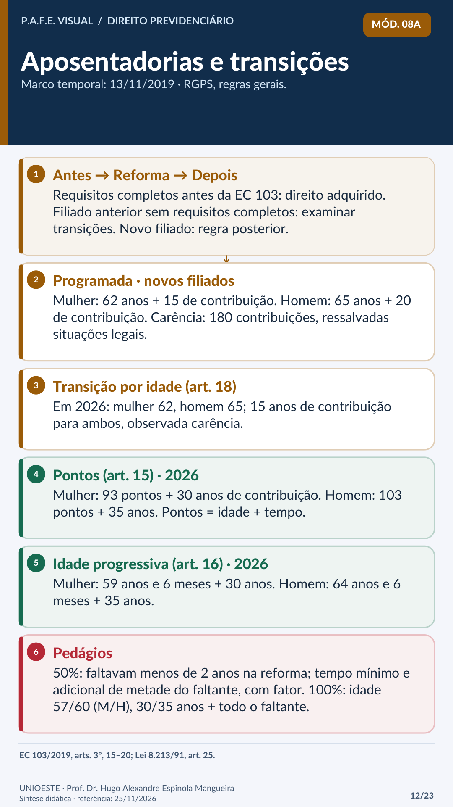
Texto pesquisável e base jurídica
Marco temporal: 13/11/2019 · RGPS, regras gerais. Antes → Reforma → Depois Requisitos completos antes da EC 103: direito adquirido. Filiado anterior sem requisitos completos: examinar transições. Novo filiado: regra posterior. Programada · novos filiados Mulher: 62 anos + 15 de contribuição. Homem: 65 anos + 20 de contribuição. Carência: 180 contribuições, ressalvadas situações legais. Transição por idade (art. 18) Em 2026: mulher 62, homem 65; 15 anos de contribuição para ambos, observada carência. Pontos (art. 15) · 2026 Mulher: 93 pontos + 30 anos de contribuição. Homem: 103 pontos + 35 anos. Pontos = idade + tempo. Idade progressiva (art. 16) · 2026 Mulher: 59 anos e 6 meses + 30 anos. Homem: 64 anos e 6 meses + 35 anos. Pedágios 50%: faltavam menos de 2 anos na reforma; tempo mínimo e adicional de metade do faltante, com fator. 100%: idade 57/60 (M/H), 30/35 anos + todo o faltante. Base: EC 103/2019, arts. 3º, 15–20; Lei 8.213/91, art. 25.
08B — Aposentadorias diferenciadas
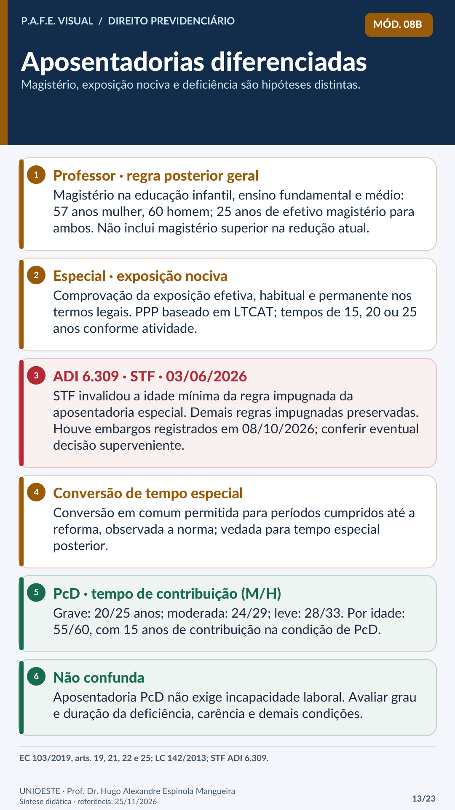
Texto pesquisável e base jurídica
Magistério, exposição nociva e deficiência são hipóteses distintas. Professor · regra posterior geral Magistério na educação infantil, ensino fundamental e médio: 57 anos mulher, 60 homem; 25 anos de efetivo magistério para ambos. Não inclui magistério superior na redução atual. Especial · exposição nociva Comprovação da exposição efetiva, habitual e permanente nos termos legais. PPP baseado em LTCAT; tempos de 15, 20 ou 25 anos conforme atividade. ADI 6.309 · STF · 03/06/2026 STF invalidou a idade mínima da regra impugnada da aposentadoria especial. Demais regras impugnadas preservadas. Houve embargos registrados em 08/10/2026; conferir eventual decisão superveniente. Conversão de tempo especial Conversão em comum permitida para períodos cumpridos até a reforma, observada a norma; vedada para tempo especial posterior. PcD · tempo de contribuição (M/H) Grave: 20/25 anos; moderada: 24/29; leve: 28/33. Por idade: 55/60, com 15 anos de contribuição na condição de PcD. Não confunda Aposentadoria PcD não exige incapacidade laboral. Avaliar grau e duração da deficiência, carência e demais condições. Base: EC 103/2019, arts. 19, 21, 22 e 25; LC 142/2013; STF ADI 6.309.
A análise começa pela data em que foram cumpridos os requisitos, não apenas pela data do pedido. Quem os completou antes da reforma pode ter direito adquirido. Quem já era filiado, mas não os completou, pode preencher uma transição. Novos filiados se submetem às regras aplicáveis a esse ingresso.
Na aposentadoria programada do RGPS para novos filiados após a reforma, a referência geral é 62 anos e 15 anos de contribuição para a mulher; 65 e 20 para o homem. Para o homem já filiado antes da EC 103, a transição por idade pode admitir 15 anos. Carência de 180 contribuições e tempo mínimo precisam ser conferidos separadamente.
Em 2026, na transição por pontos do art. 15, exigem-se 93 pontos e 30 anos contributivos para a mulher, e 103 pontos e 35 anos para o homem. Na idade progressiva do art. 16, 59 anos e seis meses com 30 de contribuição para a mulher; 64 anos e seis meses com 35 para o homem. O número do ano altera o escalonamento.
O pedágio de 50% exige enquadramento na situação de proximidade da aposentadoria na data da reforma e utiliza fator previdenciário. O pedágio de 100% tem idade mínima de 57/60 anos, tempo de 30/35 e período adicional igual ao que faltava no marco legal. Esses pedágios não devem ser calculados como percentual da vida contributiva inteira.
Professores da educação infantil, ensino fundamental e médio têm regras específicas, com comprovação das funções legalmente reconhecidas. No RGPS, não basta possuir diploma de professor nem lecionar no ensino superior. Aposentadoria rural, especial e da pessoa com deficiência também não se resolvem pela fórmula genérica da aposentadoria urbana.
Aposentadoria especial exige exposição legalmente relevante e prova técnica. A EC 103 previu idades de 55/58/60 anos para 15/20/25 anos especiais; o STF afastou a exigência do art. 19, §1º, I, alíneas a–c, na ADI 6.309, julgada em 03/06/2026. A vedação de converter tempo especial posterior à reforma e a nova fórmula de cálculo foram mantidas. Os pontos da transição do art. 21 constituem regra distinta; não deduzir sua revogação desse dispositivo. A modalidade PcD segue critérios próprios da LC 142/2013.
O aposentado programado pode voltar a trabalhar, com efeitos contributivos próprios; a aposentadoria por incapacidade permanente é incompatível com retorno voluntário que ativa a regra de cancelamento. Na especial, o Tema 709 do STF impede continuidade do pagamento com permanência ou retorno a atividade nociva. O Tema 503 não reconhece desaposentação/reaposentação sem previsão legal.
| Regra RGPS — 2026 | Mulher | Homem |
|---|---|---|
| Programada: novo filiado após a reforma | 62 anos + 15 de contribuição | 65 anos + 20 de contribuição |
| Transição por idade: filiado anterior | 62 anos + 15 de contribuição | 65 anos + 15 de contribuição |
| Pontos, art. 15 | 93 pontos + 30 de contribuição | 103 pontos + 35 de contribuição |
| Idade progressiva, art. 16 | 59 anos e 6 meses + 30 de contribuição | 64 anos e 6 meses + 35 de contribuição |
| Pedágio de 100%, requisitos básicos | 57 anos + 30 + pedágio | 60 anos + 35 + pedágio |
| Rural, requisitos etários e atividade pertinentes | 55 anos | 60 anos |
Pessoa com deficiência — tempo integral no grau, sujeito à avaliação
- Grau grave: 20 anos para mulher e 25 para homem.
- Grau moderado: 24 anos para mulher e 29 para homem.
- Grau leve: 28 anos para mulher e 33 para homem.
- Carência geral: 180 contribuições. Variações de grau e períodos sem deficiência exigem o tratamento legal pertinente.
- A modalidade por idade possui requisitos próprios; não substitua uma modalidade pela outra.
Especial — norma histórica, decisão de 2026 e limites
- Os tempos de 15, 20 e 25 anos variam com a exposição legalmente enquadrada. Mineração subterrânea em frente de produção é exemplo do grupo de 15 anos; profissão ou simples adicional de insalubridade não substituem comprovação previdenciária.
- Na ADI 6.309, a invalidade recaiu sobre as alíneas etárias do art. 19, §1º, I. Não afirmar que todo o sistema de transição foi invalidado nem aplicar os antigos números como regra atual sem ressalva.
- O resultado de mérito foi confirmado em notícia, informativo e registro oficial de julgamento. O inteiro teor dos eventuais embargos posteriores e eventual modulação não foram integralmente recuperados nesta revisão; para caso concreto, consultar o andamento atualizado.
- Tema 709: recebimento da especial é incompatível com continuidade/retorno ao trabalho nocivo. Atividade sem exposição tem tratamento distinto. Tema 503: novas contribuições do aposentado não criam automaticamente desaposentação/reaposentação.
Professor, rural e aposentado que trabalha
- Educação básica, na regra pós-reforma indicada: 57 anos mulher e 60 homem, com 25 anos nas funções de magistério legalmente reconhecidas. Educação infantil, fundamental e médio; ensino superior não recebe automaticamente essa redução. Conferir transições quando cabíveis.
- A aposentadoria programada não extingue automaticamente o mesmo contrato de trabalho. Na incapacidade permanente, a relação empregatícia fica suspensa; retorno voluntário tem consequência previdenciária própria.
- O aposentado que trabalha permanece sujeito à contribuição devida. A lei e o regulamento limitam as prestações decorrentes da atividade; o art. 173 do Decreto 3.048 menciona salário-família, reabilitação e salário-maternidade nas condições pertinentes.
- Direito adquirido à concessão segundo regra anterior não significa pagamento automático desde a data em que os requisitos foram completados: examinar DER, início financeiro e demais regras.
PcD por idade e avaliação — complemento da aula
- Por idade: homem 60 anos; mulher 55; 15 anos contributivos e comprovação da deficiência por igual período, independentemente de grau, com carência pertinente.
- Por tempo: 25/29/33 anos homem e 20/24/28 mulher para deficiência grave/moderada/leve. Os números não significam idade do segurado.
- Avaliação médica e funcional/social apura grau, início provável e variações. Impedimentos de longo prazo interagem com barreiras; diagnóstico não substitui avaliação, e deficiência não equivale a incapacidade total.
- Dirigir ou depender de transporte pode ilustrar barreiras, não é requisito autônomo que sozinho concede ou afasta aposentadoria. Não transportar sem análise esses critérios ao RPPS.
Onde a prova costuma confundir
- Não usar a tabela de 2025 para um caso com requisitos em 2026.
- 15 anos para homens pode ser correto em transição; 20 pode ser correto para novo filiado.
- Direito adquirido à prestação não é direito a congelar todo o regime para sempre.
- RMI de 100% da média não significa integralidade da última remuneração.
Recuperação rápida
Revisar estes cartões →Pontos substituem o tempo mínimo de contribuição?
Não. A pontuação e o tempo mínimo da regra devem ser cumpridos cumulativamente.
Ser pessoa com deficiência é o mesmo que estar incapaz para qualquer trabalho?
Não. A aposentadoria PcD admite trabalho e se baseia em requisitos e avaliação próprios.
55, 58 e 60 anos continuam sendo resposta universal para aposentadoria especial?
Não. Eram requisitos etários da EC 103 afastados nas alíneas julgadas pela ADI 6.309 em 2026; a regra de transição tem disciplina própria.
PcD por idade exige quanto tempo com deficiência?
Na modalidade por idade, 15 anos de contribuição e deficiência comprovada por igual período, além dos demais requisitos.
Origem deste assunto
Síntese didática desta revisão, com correções identificadas. Não é fala literal do docente.
- Registro 005: Aposentadorias, ADI 6.309 e correções
- Registro 008: Quatro falas de transição e PcD
Conferir fundamento
Síntese acadêmica, sem transcrição literal dos dispositivos. O essencial está incorporado; os links permitem conferir a fonte oficial.
- Constituição Federal — arts. 40, 194 a 204 — requer internet
- EC 103/2019 — acesso, transições e cálculo — requer internet
- INSS — escalonamento das regras de transição — requer internet
- INSS — quadro de regras de aposentadorias — requer internet
- INSS — aposentadoria por tempo da pessoa com deficiência — requer internet
- STF — Tema 709, aposentadoria especial e atividade nociva — requer internet
- STF — Tema 503, desaposentação e reaposentação — requer internet
- STF — ADI 6.309: idade mínima da aposentadoria especial, julgamento de 03/06/2026 — requer internet
- STF — Informativo 1.220: alcance do julgamento da ADI 6.309 — requer internet
- Decreto 3.048/1999 — Regulamento da Previdência Social — requer internet
- Lei 10.666/2003 — perda da qualidade e aposentadoria — requer internet
Fim do módulo 8 de 11.
Treinar este assunto09Incapacidade temporária, permanente e auxílio-acidente
Objetivo: Escolher a proteção conforme incapacidade, reabilitação e sequela.
Temporária substitui renda; permanente exige inviabilidade de reabilitação; auxílio-acidente indeniza sequela.
Estudo visual · 2 infográficos + 1 cartoon
09A — Benefícios por incapacidade
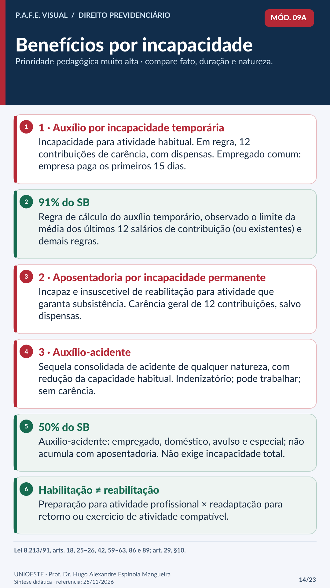
Texto pesquisável e base jurídica
Prioridade pedagógica muito alta · compare fato, duração e natureza. 1 · Auxílio por incapacidade temporária Incapacidade para atividade habitual. Em regra, 12 contribuições de carência, com dispensas. Empregado comum: empresa paga os primeiros 15 dias. 91% do SB Regra de cálculo do auxílio temporário, observado o limite da média dos últimos 12 salários de contribuição (ou existentes) e demais regras. 2 · Aposentadoria por incapacidade permanente Incapaz e insuscetível de reabilitação para atividade que garanta subsistência. Carência geral de 12 contribuições, salvo dispensas. 3 · Auxílio-acidente Sequela consolidada de acidente de qualquer natureza, com redução da capacidade habitual. Indenizatório; pode trabalhar; sem carência. 50% do SB Auxílio-acidente: empregado, doméstico, avulso e especial; não acumula com aposentadoria. Não exige incapacidade total. Habilitação ≠ reabilitação Preparação para atividade profissional × readaptação para retorno ou exercício de atividade compatível. Base: Lei 8.213/91, arts. 18, 25–26, 42, 59–63, 86 e 89; art. 29, §10.
09B — Incapacidade: cálculo e precedentes
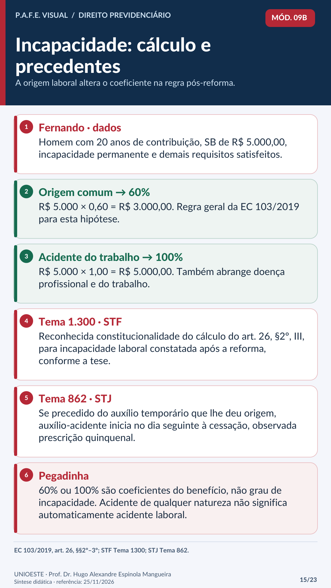
Texto pesquisável e base jurídica
A origem laboral altera o coeficiente na regra pós-reforma. Fernando · dados Homem com 20 anos de contribuição, SB de R$ 5.000,00, incapacidade permanente e demais requisitos satisfeitos. Origem comum → 60% R$ 5.000 × 0,60 = R$ 3.000,00. Regra geral da EC 103/2019 para esta hipótese. Acidente do trabalho → 100% R$ 5.000 × 1,00 = R$ 5.000,00. Também abrange doença profissional e do trabalho. Tema 1.300 · STF Reconhecida constitucionalidade do cálculo do art. 26, §2º, III, para incapacidade laboral constatada após a reforma, conforme a tese. Tema 862 · STJ Se precedido do auxílio temporário que lhe deu origem, auxílio-acidente inicia no dia seguinte à cessação, observada prescrição quinquenal. Pegadinha 60% ou 100% são coeficientes do benefício, não grau de incapacidade. Acidente de qualquer natureza não significa automaticamente acidente laboral. Base: EC 103/2019, art. 26, §§2º–3º; STF Tema 1300; STJ Tema 862.
Cartoon · Três situações, três respostas possíveis
Incapacidade para atividade habitual com recuperação esperada: avaliar auxílio por incapacidade temporária.
Incapacidade permanente para atividade que garanta subsistência, sem reabilitação possível: avaliar aposentadoria.
Sequela consolidada que reduz capacidade habitual após acidente: avaliar auxílio-acidente, nas categorias elegíveis.
Ilustração didática; não substitui os requisitos legais do módulo.
O auxílio por incapacidade temporária protege quem não consegue exercer seu trabalho ou atividade habitual por mais de 15 dias consecutivos, presentes os demais requisitos. Diagnóstico isolado não basta. Para empregado de empresa, os primeiros 15 dias têm disciplina remuneratória empresarial; não transfira essa mecânica indistintamente a todas as categorias.
A aposentadoria por incapacidade permanente exige incapacidade e insuscetibilidade de reabilitação para atividade que garanta subsistência, segundo avaliação pertinente. Não há uma conversão automática por determinado número de meses de auxílio temporário. Condições pessoais e profissionais podem importar na avaliação concreta.
A carência geral é de 12 contribuições nas duas modalidades, com dispensas para acidentes e hipóteses legais. Doença ou lesão pré-existente não se confunde com incapacidade pré-existente: progressão ou agravamento pode alterar a análise. Após perda da qualidade, a recuperação de contribuições antigas depende das condições legais de nova filiação.
Na regra pós-reforma, a incapacidade permanente comum segue o coeficiente geral pertinente; a de origem ocupacional tem a exceção de 100% da média. Acidente fora do trabalho pode dispensar carência sem ativar essa exceção ocupacional. São perguntas diferentes.
O auxílio-acidente é indenização por sequela consolidada que reduz a capacidade para o trabalho habitual, decorrente de acidente de qualquer natureza. Não exige incapacidade total e permite continuar trabalhando. Abrange empregado, doméstico, avulso e segurado especial nas condições legais; não é devido ao contribuinte individual e ao facultativo nessa disciplina.
O valor do auxílio-acidente é 50% do SB e sua natureza indenizatória permite valor inferior ao salário mínimo. Ele não se acumula com aposentadoria no regime atual pertinente e, sozinho, não mantém a qualidade sem prazo. O recebimento não dispensa exame de cobertura para uma prestação futura.
| Proteção | Situação central | Natureza / cálculo de referência |
|---|---|---|
| Temporária | Impedimento para trabalho ou atividade habitual | Substituição de renda; 91% do SB e limite legal. |
| Permanente | Incapacidade sem reabilitação viável para subsistência | Aposentadoria; regra geral e exceção ocupacional. |
| Auxílio-acidente | Sequela consolidada com redução da capacidade habitual | Indenização; 50% do SB; pode coexistir com trabalho. |
DII, DIB e DER — a linha do afastamento
- DII = início da incapacidade; DIB = início do benefício; DER = entrada do requerimento. A data do acidente pode ser anterior ao efetivo afastamento.
- Empregado de empresa, exceto doméstico: a empresa suporta os primeiros 15 dias; benefício em regra desde o 16º. Doméstico e demais segurados: desde o início da incapacidade nas condições legais, sem aplicar os 15 dias da empresa ao empregador doméstico.
- O requerimento tardio, após o prazo legal de 30 dias, pode deslocar o início para a DER. Recaídas pela mesma doença em 60 dias exigem a disciplina específica, não uma soma irrestrita.
- Exemplo hipotético: acidente no dia 1, afastamento no dia 5; primeiros 15 dias de afastamento, dias 5 a 19; marco seguinte no dia 20, se presentes todos os requisitos.
Duração, revisão e recuperação da capacidade
- O auxílio temporário pode ter prazo estimado. Sem prazo fixado, a lei prevê cessação supletiva após 120 dias da concessão/reativação, ressalvada prorrogação nos termos legais; não é máximo universal.
- Aposentadoria permanente pode ser concedida diretamente, sem auxílio temporário anterior. Permanente não é sinônimo de impossibilidade eterna de recuperação.
- Retorno voluntário: art. 46, cancelamento desde o retorno. Recuperação constatada: art. 47, com hipóteses distintas. Dentro de 5 anos, empregado com direito de voltar à mesma função pode ter cessação imediata; para os demais, a regra do inciso I, b, conta meses conforme anos de benefício.
- Recuperação parcial, após o prazo legal ou para trabalho diverso: quando enquadrada no art. 47, II, admite 6 meses integrais, 6 com pagamento de 50% e 6 com pagamento de 25%. Redução de 75% significa receber 25%, não receber 75%.
- Dispensas de reavaliação não dispensam a concessão inicial. A lei prevê hipóteses por idade/tempo e incapacidade permanente irreversível ou irrecuperável, com ressalva de suspeita fundamentada de fraude ou erro. Não chamar de alta definitiva irrestrita.
Violência doméstica — complemento jurídico, não conclusão da fala interrompida
- Lei Maria da Penha, art. 9º, §2º, II: manutenção do vínculo por até 6 meses quando necessário afastamento protetivo. Não é estabilidade genérica e indefinida.
- No REsp 1.757.775/SP, a Sexta Turma do STJ admitiu solução remuneratória por analogia: 15 dias pela empresa e período restante pelo INSS, com prova e aprovação pericial nas condições do caso. Não é precedente repetitivo nem dispensa universal dos requisitos previdenciários.
Onde a prova costuma confundir
- Uma doença grave não dispensa qualidade de segurado automaticamente.
- Dispensa de carência não significa dispensa de incapacidade ou de prova.
- Auxílio-acidente não é a mesma coisa que auxílio temporário acidentário.
Recuperação rápida
Revisar estes cartões →Acidente doméstico pode dispensar carência para incapacidade?
Sim, acidente de qualquer natureza é hipótese legal, sem transformar o evento em acidente de trabalho.
Auxílio-acidente impede continuar trabalhando?
Não. Seu caráter é indenizatório, desde que presentes os requisitos.
Quem paga os primeiros 15 dias ao empregado doméstico na lógica apresentada?
Não se aplica ao empregador doméstico a regra empresarial dos 15 dias; o benefício pode começar na DII, preenchidos os requisitos.
O bloco final da mensalidade de recuperação paga 75%?
Não. Quando cabível o escalonamento, a redução final é de 75%, restando pagamento de 25%.
Origem deste assunto
Síntese didática desta revisão, com correções identificadas. Não é fala literal do docente.
- Registro 004: Recuperação, auxílio-acidente e matriz comparativa
- Registro 007: DIB, carência e incapacidade permanente
Conferir fundamento
Síntese acadêmica, sem transcrição literal dos dispositivos. O essencial está incorporado; os links permitem conferir a fonte oficial.
- Lei 8.213/1991 — benefícios, texto atualizado — requer internet
- EC 103/2019 — acesso, transições e cálculo — requer internet
- INSS — auxílio por incapacidade temporária — requer internet
- INSS — auxílio-acidente: requisitos e categorias protegidas — requer internet
- STJ — REsp 1.757.775/SP, afastamento protetivo e remuneração — requer internet
Fim do módulo 9 de 11.
Treinar este assunto10Maternidade, família, morte e reclusão
Objetivo: Distinguir prestações do segurado das destinadas a dependentes.
Sem carência não significa sem requisitos.
Estudo visual · 2 infográficos
10A — Maternidade e pensão por morte
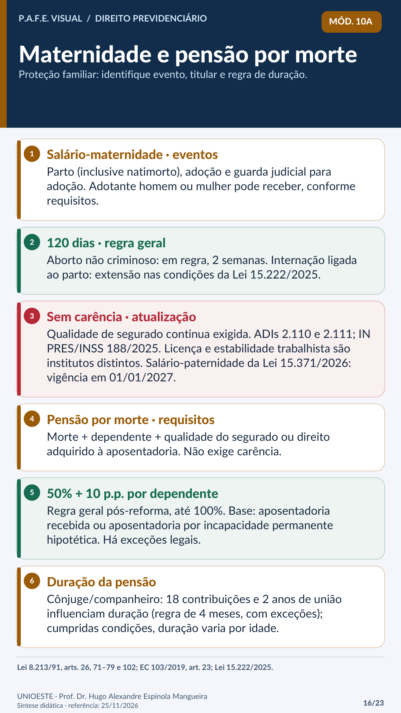
Texto pesquisável e base jurídica
Proteção familiar: identifique evento, titular e regra de duração. Salário-maternidade · eventos Parto (inclusive natimorto), adoção e guarda judicial para adoção. Adotante homem ou mulher pode receber, conforme requisitos. 120 dias · regra geral Aborto não criminoso: em regra, 2 semanas. Internação ligada ao parto: extensão nas condições da Lei 15.222/2025. Sem carência · atualização Qualidade de segurado continua exigida. ADIs 2.110 e 2.111; IN PRES/INSS 188/2025. Licença e estabilidade trabalhista são institutos distintos. Salário-paternidade da Lei 15.371/2026: vigência em 01/01/2027. Pensão por morte · requisitos Morte + dependente + qualidade do segurado ou direito adquirido à aposentadoria. Não exige carência. 50% + 10 p.p. por dependente Regra geral pós-reforma, até 100%. Base: aposentadoria recebida ou aposentadoria por incapacidade permanente hipotética. Há exceções legais. Duração da pensão Cônjuge/companheiro: 18 contribuições e 2 anos de união influenciam duração (regra de 4 meses, com exceções); cumpridas condições, duração varia por idade. Base: Lei 8.213/91, arts. 26, 71–79 e 102; EC 103/2019, art. 23; Lei 15.222/2025.
10B — Auxílio-reclusão e salário-família
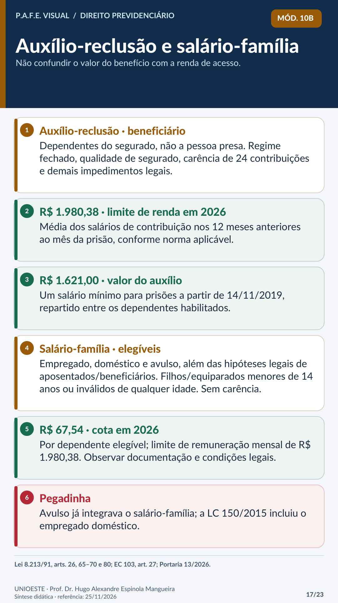
Texto pesquisável e base jurídica
Não confundir o valor do benefício com a renda de acesso. Auxílio-reclusão · beneficiário Dependentes do segurado, não a pessoa presa. Regime fechado, qualidade de segurado, carência de 24 contribuições e demais impedimentos legais. R$ 1.980,38 · limite de renda em 2026 Média dos salários de contribuição nos 12 meses anteriores ao mês da prisão, conforme norma aplicável. R$ 1.621,00 · valor do auxílio Um salário mínimo para prisões a partir de 14/11/2019, repartido entre os dependentes habilitados. Salário-família · elegíveis Empregado, doméstico e avulso, além das hipóteses legais de aposentados/beneficiários. Filhos/equiparados menores de 14 anos ou inválidos de qualquer idade. Sem carência. R$ 67,54 · cota em 2026 Por dependente elegível; limite de remuneração mensal de R$ 1.980,38. Observar documentação e condições legais. Pegadinha Avulso já integrava o salário-família; a LC 150/2015 incluiu o empregado doméstico. Base: Lei 8.213/91, arts. 26, 65–70 e 80; EC 103, art. 27; Portaria 13/2026.
O salário-maternidade protege o afastamento nas hipóteses legais de parto, adoção, guarda para adoção e outras situações previstas. A duração geral é de 120 dias, com disciplina específica para aborto e internação. O cálculo depende da categoria, e não do coeficiente geral de aposentadoria.
A antiga carência de 10 contribuições para categorias específicas foi afastada pelo STF nas ADIs 2.110 e 2.111 e implementada administrativamente. Não basta ler o inciso ainda reproduzido na lei sem conferir a decisão. Permanecem relevantes filiação/qualidade, validade das contribuições quando necessárias ao vínculo, fato gerador e afastamento pertinente.
Salário-família é vinculado a requisitos de baixa renda, categoria e filhos/equiparados, com cotas e limites atualizados. Não é benefício genérico para qualquer família nem se confunde com BPC. Para calcular, use a competência e a tabela oficial específica.
A pensão por morte protege dependentes. Em regra, exige óbito, condição de dependente e qualidade do falecido, ressalvadas hipóteses legais ligadas a direito à aposentadoria. Não há carência para concedê-la, mas número de contribuições e duração do casamento ou união podem influenciar o prazo de pagamento ao cônjuge.
Na fórmula pertinente da EC 103, há cota familiar de 50% mais 10 pontos percentuais por dependente, até 100%, sobre a aposentadoria recebida ou a base legalmente definida. Existem exceções para dependente inválido ou com deficiência prevista em lei. Não aplique a fórmula a qualquer óbito sem conferir o marco temporal.
A duração da pensão depende do beneficiário. Para cônjuge/companheiro, a regra ordinária pode ser de quatro meses se não atendidas as condições pertinentes; satisfeitos os requisitos, a tabela etária pode levar à vitaliciedade a partir de 45 anos na disciplina atual. Para filho, matrícula universitária não prorroga automaticamente os 21 anos.
Auxílio-reclusão é devido aos dependentes, não um salário pago ao preso. Na regra atual, verifique baixa renda do segurado, prisão em regime fechado, qualidade, carência de 24 contribuições e demais condições. A média de salários de contribuição dos 12 meses anteriores é relevante à aferição de baixa renda; não confunda a renda do segurado com a renda de cada dependente.
| Prestação | Beneficiário / cuidado principal |
|---|---|
| Salário-maternidade | Segurada ou segurado na hipótese legal; sem a antiga carência, com requisitos próprios. |
| Salário-família | Categorias e renda previstas em lei, com cotas por filho/equiparado. |
| Pensão por morte | Dependentes; sem carência para concessão, mas com regras de duração. |
| Auxílio-reclusão | Dependentes do segurado de baixa renda; 24 contribuições na regra atual. |
Maternidade — duração, documentação e exceções
- Parto, inclusive natimorto: em regra 120 dias. Adoção/guarda judicial para adoção: regra de 120 dias. Aborto não criminoso: em regra 14 dias. Guarda comum não se equipara automaticamente a guarda para adoção.
- 28 dias anteriores + dia do parto + 91 dias seguintes = 120. Essa é uma distribuição possível, não limite de 91 dias após todo parto. Início no parto conserva o total ordinário de 120 dias.
- Natimorto: documento específico é certidão de natimorto. Gestação múltipla não multiplica o salário-maternidade por bebê.
- Repousos podem ter acréscimo excepcional de duas semanas antes/depois sob os requisitos médicos e regulamentares. Empresa Cidadã e internação hospitalar são fundamentos distintos, não extensão automática para qualquer segurada.
- Lei 15.222/2025: internação da segurada ou recém-nascido por mais de duas semanas, por complicações relacionadas ao parto, permite benefício durante a internação e por 120 dias após alta, descontado o recebimento anterior ao parto, nos termos legais.
- Salário-maternidade é prestação previdenciária; licença é afastamento trabalhista. Pagamento pela empresa e compensação não se aplicam indistintamente a todas as categorias. Há exceções legais adicionais de duração que exigem enquadramento específico.
Pensão por morte — ex-cônjuge, separação e vínculos paralelos
- Ex-cônjuge que recebia alimentos pode concorrer nos termos do art. 76, §2º. Renúncia a alimentos não exclui por si só a possibilidade da pensão: a Súmula 336/STJ considera necessidade econômica superveniente comprovada.
- Tema 526/STF: relacionamento paralelo duradouro com pessoa casada não se equipara automaticamente a união estável para gerar pensão. A duração da relação, sozinha, não afasta o impedimento.
- Tema 529/STF: preexistência de casamento/união estável impede segundo vínculo no mesmo período para fins previdenciários, ressalvada a exceção do art. 1.723, §1º, CC, que contempla separação de fato/judicial. O problema é simultaneidade, não orientação sexual.
- EC 66/2010 e Tema 1.053/STF: separação judicial deixou de ser requisito para divórcio e instituto autônomo, preservados os estados jurídicos anteriores como ato perfeito. Escritura de separação de fato documenta situação; não equivale ao divórcio.
- O número oral “519” no registro corresponde à tese do Tema 529. A EC da separação é a 66/2010; EC 103/2019 trata da reforma previdenciária.
Pensão — jurisdição, morte presumida e incapacidade anterior
- STJ, CC 191.199/RS: pedido de concessão/revisão de pensão sem discutir o próprio acidente é federal mesmo quando o falecimento decorre de acidente laboral. Não usar regra universal “acidentária = estadual”. Verificar pedido e causa de pedir.
- Ações acidentárias previdenciárias abrangidas pela exceção constitucional e indenização contra empregador têm enquadramentos próprios; esta última pode ser trabalhista. Competência estadual delegada exige os requisitos legais, não apenas inexistência de vara no município.
- Lei 8.213, art. 78: pensão provisória por morte presumida admite, em regra, ausência reconhecida judicialmente após 6 meses; desaparecimento em acidente/desastre/catástrofe tem ressalva própria. Reaparecimento cessa a prestação; restituição exige verificar má-fé.
- Incapacidade anterior ao fim das contribuições pode fundamentar reconhecimento de direito preexistente e repercutir na pensão, conforme prova e datas. Um diagnóstico isolado não mantém automaticamente qualidade nem supre os requisitos do falecido.
- O precedente específico sobre declaração de ausência exclusivamente previdenciária e as referências históricas sobre viúvo antes de 1988 não tiveram inteiro teor confirmado aqui: não memorizar número ou regra temporal irrestrita a partir desses excertos.
Onde a prova costuma confundir
- Não confundir ausência de carência com pensão sempre vitalícia.
- Nova união do pensionista não deve ser tratada como cancelamento automático sem regra aplicável.
- Lei com vigência futura não altera antecipadamente os benefícios atuais.
Recuperação rápida
Revisar estes cartões →Auxílio-reclusão é pago a quem?
Aos dependentes do segurado, preenchidos os requisitos legais.
Pensão sem carência significa duração sempre vitalícia?
Não. Há condições de duração ligadas ao dependente e à situação do segurado.
91 dias após o parto é limite universal?
Não. É o restante quando o afastamento começa 28 dias antes e se conta o próprio dia do parto.
Relação homoafetiva é motivo de negar pensão?
Não. A questão dos Temas 526/529 é o vínculo simultâneo e seus impedimentos, preservada a exceção legal pertinente.
Toda pensão derivada de acidente laboral é estadual?
Não. O CC 191.199/RS distingue pedido previdenciário sem discussão do acidente e demandas que discutem o próprio acidente.
Origem deste assunto
Síntese didática desta revisão, com correções identificadas. Não é fala literal do docente.
- Registro 003: Pensão, competência e vínculos familiares
- Registro 004: Maternidade, natimorto e prorrogações
Conferir fundamento
Síntese acadêmica, sem transcrição literal dos dispositivos. O essencial está incorporado; os links permitem conferir a fonte oficial.
- Lei 8.213/1991 — benefícios, texto atualizado — requer internet
- EC 103/2019 — acesso, transições e cálculo — requer internet
- INSS — salário-maternidade e dispensa de carência — requer internet
- INSS — duração e termo inicial da pensão por morte — requer internet
- Lei 15.222/2025 — internação e proteção à maternidade — requer internet
- Decreto 3.048/1999 — Regulamento da Previdência Social — requer internet
- STJ — CC 191.199/RS, inteiro teor, 28/02/2024 — requer internet
- STF — Tema 526: concubinato de longa duração — requer internet
- STF — Tema 529: vínculos concomitantes — requer internet
- STF — Tema 1.053: separação judicial após EC 66/2010 — requer internet
- STJ — Súmula 336: necessidade econômica superveniente — requer internet
- STF — julgamento das ADIs 2.110 e 2.111 — requer internet
Fim do módulo 10 de 11.
Treinar este assunto11Assistência social, BPC e serviços do RGPS
Objetivo: Distinguir renda assistencial, benefício previdenciário e serviço.
O órgão pagador não define a natureza da prestação.
Estudo visual · 2 infográficos + 1 cartoon
11A — BPC / LOAS — requisitos
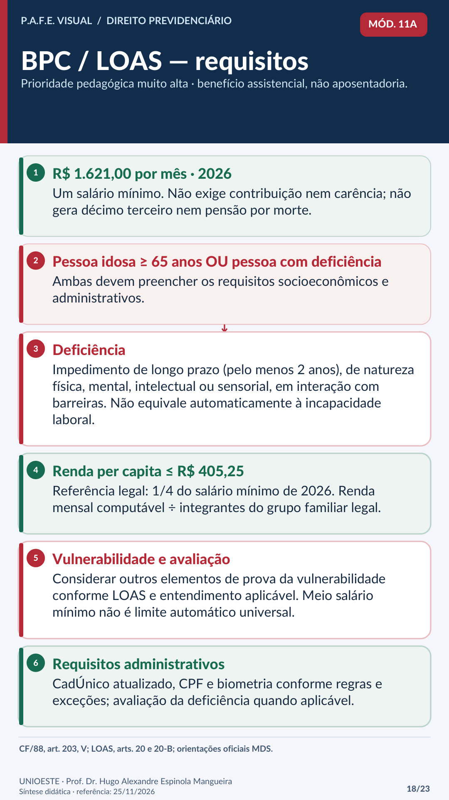
Texto pesquisável e base jurídica
Prioridade pedagógica muito alta · benefício assistencial, não aposentadoria. R$ 1.621,00 por mês · 2026 Um salário mínimo. Não exige contribuição nem carência; não gera décimo terceiro nem pensão por morte. Pessoa idosa ≥ 65 anos OU pessoa com deficiência Ambas devem preencher os requisitos socioeconômicos e administrativos. Deficiência Impedimento de longo prazo (pelo menos 2 anos), de natureza física, mental, intelectual ou sensorial, em interação com barreiras. Não equivale automaticamente à incapacidade laboral. Renda per capita ≤ R$ 405,25 Referência legal: 1/4 do salário mínimo de 2026. Renda mensal computável ÷ integrantes do grupo familiar legal. Vulnerabilidade e avaliação Considerar outros elementos de prova da vulnerabilidade conforme LOAS e entendimento aplicável. Meio salário mínimo não é limite automático universal. Requisitos administrativos CadÚnico atualizado, CPF e biometria conforme regras e exceções; avaliação da deficiência quando aplicável. Base: CF/88, art. 203, V; LOAS, arts. 20 e 20-B; orientações oficiais MDS.
11B — BPC / LOAS — grupo familiar
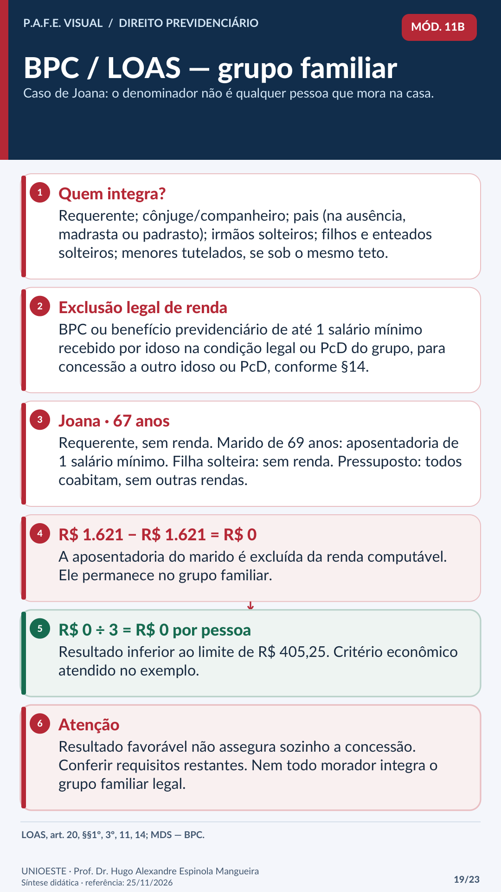
Texto pesquisável e base jurídica
Caso de Joana: o denominador não é qualquer pessoa que mora na casa. Quem integra? Requerente; cônjuge/companheiro; pais (na ausência, madrasta ou padrasto); irmãos solteiros; filhos e enteados solteiros; menores tutelados, se sob o mesmo teto. Exclusão legal de renda BPC ou benefício previdenciário de até 1 salário mínimo recebido por idoso na condição legal ou PcD do grupo, para concessão a outro idoso ou PcD, conforme §14. Joana · 67 anos Requerente, sem renda. Marido de 69 anos: aposentadoria de 1 salário mínimo. Filha solteira: sem renda. Pressuposto: todos coabitam, sem outras rendas. R$ 1.621 − R$ 1.621 = R$ 0 A aposentadoria do marido é excluída da renda computável. Ele permanece no grupo familiar. R$ 0 ÷ 3 = R$ 0 por pessoa Resultado inferior ao limite de R$ 405,25. Critério econômico atendido no exemplo. Atenção Resultado favorável não assegura sozinho a concessão. Conferir requisitos restantes. Nem todo morador integra o grupo familiar legal. Base: LOAS, art. 20, §§1º, 3º, 11, 14; MDS — BPC.
Cartoon · Joana: não some todos os rendimentos
Joana tem 67 anos; marido de 69 anos recebe 1 salário mínimo; filha solteira sem renda. Todos coabitam.
Nas condições legais, o benefício previdenciário de até um salário mínimo do marido idoso não integra a renda computável.
Resultado do caso: renda per capita zero, se não houver outros rendimentos computáveis. Conferir os demais requisitos do BPC.
Ilustração didática; não substitui os requisitos legais do módulo.
O BPC é assistencial, embora seja operacionalizado pelo INSS. Não exige contribuição anterior e não é aposentadoria. Garante um salário mínimo à pessoa idosa de 65 anos ou mais ou à pessoa com deficiência de qualquer idade, desde que presentes os requisitos socioeconômicos e demais condições.
Para a deficiência no BPC, considera-se impedimento de longo prazo em interação com barreiras; não basta transportar automaticamente o conceito de incapacidade laboral de outro benefício. A avaliação biopsicossocial e a situação do grupo familiar têm papel próprio.
A referência legal de renda é de até um quarto de salário mínimo por pessoa do grupo familiar, com critérios e exclusões previstos em lei. O grupo familiar do BPC não equivale necessariamente a todas as pessoas que moram no endereço. Outros elementos de vulnerabilidade e hipóteses legais precisam ser examinados: o número isolado não substitui a análise completa.
CadÚnico atualizado, CPF e exigências cadastrais/biométricas pertinentes devem ser conferidos no procedimento atual. O BPC não paga décimo terceiro e não gera pensão por morte. A renda do benefício não pode ser tratada como salário de contribuição.
Serviço social e reabilitação profissional são serviços da previdência. A reabilitação busca fornecer meios para reinserção ou exercício de atividade compatível. Não é promessa automática de vaga nem se confunde com cura clínica. A recuperação da capacidade, os serviços e o direito a benefício são etapas relacionadas, mas diferentes.
Na atuação prática, organize primeiro o tipo de proteção: contributiva, assistencial ou serviço. Depois identifique requisitos, provas e procedimento. Para prova acadêmica, esta classificação evita o erro de exigir carência do BPC ou chamar todo pagamento do INSS de aposentadoria.
| Item | BPC | Aposentadoria do RGPS |
|---|---|---|
| Natureza | Assistencial | Previdenciária |
| Contribuição anterior | Não é requisito | Regras contributivas pertinentes |
| Décimo terceiro | Não | Sim, na disciplina aplicável |
| Pensão aos dependentes | Não gera | Pode gerar, preenchidos os requisitos |
| Critério socioeconômico | Relevante ao acesso | Não é requisito universal de aposentadoria |
Onde a prova costuma confundir
- 65 anos não é a idade de toda aposentadoria nem de toda pessoa com direito ao BPC.
- Deficiência para o BPC não exige ter trabalhado anteriormente.
- Serviços previdenciários não são todos prestações em dinheiro.
Recuperação rápida
Revisar estes cartões →BPC exige carência de 180 contribuições?
Não. É prestação assistencial, sujeita a requisitos próprios.
O BPC deixa pensão por morte?
Não. Também não paga décimo terceiro.
Origem deste assunto
Síntese didática desta revisão, com correções identificadas. Não é fala literal do docente.
- Registro 006: Assistência e serviços no roteiro; sem transcrição integral da aula no consolidado
Conferir fundamento
Síntese acadêmica, sem transcrição literal dos dispositivos. O essencial está incorporado; os links permitem conferir a fonte oficial.
Fim do módulo 11 de 11.
Treinar este assuntoRelembrando as aulas do Prof. Hugo
Seleção de explicações e exemplos encontrados nas transcrições das aulas, para recuperar a memória antes dos exercícios. Não são trechos de áudio: a voz original e os minutos exatos não foram recuperados. Ênfase não garante cobrança na prova. Abra apenas a aula que deseja revisar.
07/10 Acidente de trabalho, nexo e NR-1 ênfase inferida
Lembrete da explicação: o exemplo do trabalhador com hemofilia que sofre um corte ajuda a compreender a concausa: uma condição anterior não elimina, por si, a contribuição do trabalho para o dano. Confira a relação entre atividade, evento, agravamento e consequência.
Ponto reiterado: GRO é o processo de gerenciamento de riscos ocupacionais; o PGR articula inventário de riscos e plano de ação. O professor retomou esses dois componentes nas transcrições.
Distinção que pode gerar erro: proteção previdenciária por risco social não pressupõe automaticamente culpa do empregador. Responsabilidade civil e ação regressiva têm requisitos próprios.
Correção jurídica posterior: não confundir doença profissional com doença do trabalho; infarto no expediente, sem demonstração de nexo ou concausa, não se torna automaticamente acidentário. Estude também as ressalvas do art. 20 da Lei 8.213/1991.
Base: transcrições textuais recuperadas da aula de 07/10; autoria acústica e minutagem não verificadas. Ir ao módulo de acidentes de trabalho.
14/10 Aposentadorias, RMI, transições e PcD ênfase inferida
Explicação destacada: uma pessoa aposentada pelo RGPS, em regra, pode continuar trabalhando. Isso não autoriza desaposentação; a aposentadoria especial e o trabalho nocivo exigem tratamento próprio.
Cálculo recuperado: na fórmula geral pertinente, parte-se de 60% da média legal e acrescentam-se 2 pontos percentuais por ano excedente ao marco aplicável. O coeficiente não se confunde com idade mínima, tempo mínimo ou carência.
Perguntas e retomadas: distinção entre professor da educação básica e professor universitário; prova do trabalho rural; modalidades de aposentadoria da pessoa com deficiência da LC 142/2013.
Correção jurídica posterior: a data central da EC 103 é 13/11/2019, e não “3 de novembro”; aferir direito adquirido, transição e fórmula específica. Não adotar como teto universal do coeficiente os “100%” mencionados oralmente.
Base: 17 segmentos de 14/10 e quatro segmentos adicionais sobre transições/PcD, sem áudio ou minutagem verificáveis. Ir ao módulo de aposentadorias.
21/10 Incapacidade, auxílio-acidente e maternidade ênfase inferida
Três situações diferentes: incapacidade temporária; incapacidade permanente sem reabilitação; e sequela consolidada que reduz a capacidade para o trabalho habitual (auxílio-acidente, indenizatório). Não escolher o benefício apenas pelo nome da doença.
Comparação retomada em aula: distinguir DII (início da incapacidade), DIB (início do benefício) e DER (entrada do requerimento). Para empregados não domésticos, examinar a regra dos primeiros 15 dias sob responsabilidade empresarial.
Exemplo falado: a mensalidade de recuperação da aposentadoria por incapacidade pode envolver blocos de 100%, 50% e 25%, conforme hipótese legal. Não confundir retorno voluntário ao trabalho com recuperação constatada.
Pergunta relevante: gravidez múltipla não gera, por si só, dois salários-maternidade pelo mesmo parto. Comparar parto, natimorto, adoção, aborto não criminoso e hipóteses de prorrogação.
Correção jurídica posterior: a fórmula de 91% para auxílio por incapacidade temporária não equivale à da aposentadoria permanente; para maternidade, os 120 dias são regra geral, com exceções. O trecho transcrito “princípio da economia” permanece incerto.
Base: transcrições e fotografias recuperadas da aula de 21/10; sem gravação original. Ir ao módulo de incapacidade.
28/10 Pensão por morte e competência judicial possível menção à prova
Distinção discutida com a turma: separar pedido de benefício acidentário contra o INSS (competência estadual nas hipóteses legais), benefício previdenciário comum contra o INSS (regra de competência federal) e indenização decorrente da relação de trabalho contra o empregador (competência trabalhista, conforme pedido).
Outros exemplos: qualidade de segurado diante de incapacidade reconhecida posteriormente; morte presumida; pensão de ex-cônjuge e relevância da dependência econômica.
Jurisprudência mencionada: Súmula 336/STJ, temas 526 e 529 do STF sobre situações distintas envolvendo pensão e vínculos afetivos. Conferir a tese oficial, em vez de reproduzir uma paráfrase oral como se fosse citação literal.
Ressalva sobre prova: aparece na transcrição a frase “É um ponto bom pra cair na prova”, no contexto da competência. Não se comprovou quem pronunciou a frase; portanto, isso é um sinal de atenção na aula, não promessa atribuída ao professor.
Base: seis segmentos de transcrição de 28/10; locutores e minutagem sem validação acústica. Ir ao módulo de proteção familiar.
Atividade Avaliativa 2 — prova aplicada
Questões 1 a 25 recuperadas das sete fotografias enviadas. As 17 alternativas assinaladas coincidem com as respostas juridicamente adequadas às hipóteses descritas; há marcas de correção em vermelho, mas não há nota geral legível. Os oito itens discursivos têm respostas manuscritas, algumas parcialmente cortadas. A data da avaliação não foi confirmada pelas imagens.
O que essa avaliação revela sobre a cobrança
O documento efetivamente aplicado confirma cobrança de aplicação da norma a casos concretos, interpretação de exceções, cálculos, competência jurisdicional e distinções conceituais. Trata-se de evidência sobre esta avaliação, não previsão de prova futura.
Relação previdenciária e custeio
1–4, 18–20: natureza contributiva, filiação, inscrição, período de graça, classes de dependentes, salário de contribuição e contagem recíproca.
RMI, aposentadorias e especial
5, 9 e 21: coeficientes e pontos percentuais, requisito da mulher após a reforma e prova da exposição nociva.
Trabalho, acidentes e incapacidade
6–8, 10–11 e 22: nexo e concausa, competência da Justiça Estadual, auxílio-acidente versus incapacidade temporária e primeiros 15 dias.
Maternidade, família e assistência
12–17 e 23–25: carência do salário-maternidade, cotas da pensão, reabilitação, BPC e auxílio-reclusão.
Pontos de atenção: 36 meses é hipótese máxima condicionada; 60% + 2 pontos percentuais depende da base e dos anos excedentes; pensão exige base de cálculo e número de dependentes; BPC é assistencial, enquanto reabilitação é serviço previdenciário.
Para treinar, abra uma questão objetiva, marque uma alternativa e use Conferir. O gabarito e a justificativa permanecem acessíveis mesmo sem JavaScript. As respostas de treino são suas e não alteram as marcações da prova fotografada.
Questões objetivas — 1 a 17
01Questão 1. Segundo a Constituição Federal, o Regime Geral de Previdência Social caracteriza-se por:
Ver resposta fundamentada
Resposta conferida para estudo: C. Art. 201 da CF: organização contributiva, filiação obrigatória nas atividades abrangidas e preservação do equilíbrio financeiro e atuarial. Não é uma prestação assistencial.
Na fotografia: opção C assinalada, com marcação vermelha compatível com correção favorável. Não é um gabarito oficial separado.
Conferir fonte oficial: CF, art. 201 (requer Internet) · Rever módulo 3
02Questão 2. A filiação ao RGPS do segurado empregado ocorre, em regra:
Ver resposta fundamentada
Resposta conferida para estudo: A. Para o empregado, filiação decorre do exercício da atividade remunerada abrangida. Inscrição é o cadastro; o recolhimento pelo empregador não condiciona a existência do vínculo previdenciário.
Na fotografia: opção A assinalada, com marcação vermelha compatível com correção favorável. Não é um gabarito oficial separado.
Conferir fonte oficial: Regulamento da Previdência Social (requer Internet) · Rever módulo 3
03Questão 3. Um segurado empregado foi dispensado sem justa causa e interrompeu suas contribuições. Possui 132 contribuições mensais consecutivas sem perda da qualidade e comprova desemprego involuntário. Qual é o período máximo de graça potencialmente aplicável?
Ver resposta fundamentada
Resposta conferida para estudo: D. 12 meses de regra geral + 12 meses pela série superior a 120 contribuições sem perda da qualidade + até 12 meses pela situação de desemprego comprovada. São prorrogações condicionadas, não um prazo geral automático.
Na fotografia: opção D assinalada, com marcação vermelha compatível com correção favorável. Não é um gabarito oficial separado.
Conferir fonte oficial: Lei 8.213/1991, art. 15 (requer Internet) · Rever módulo 3
04Questão 4. Um segurado falece deixando cônjuge e mãe economicamente dependente. Segundo as classes de dependentes do RGPS, é correto afirmar que:
Ver resposta fundamentada
Resposta conferida para estudo: B. A existência de dependente de classe anterior exclui os das classes posteriores. O cônjuge pertence à primeira classe; a mãe, à segunda.
Na fotografia: opção B assinalada, com marcação vermelha compatível com correção favorável. Não é um gabarito oficial separado.
Conferir fonte oficial: Lei 8.213/1991, art. 16 (requer Internet) · Rever módulo 3
05Questão 5. Uma segurada, cuja aposentadoria programada seja regida pela regra geral posterior à EC nº 103/2019, possui 25 anos de contribuição e salário de benefício de R$ 4.000,00. Desconsideradas outras regras mais vantajosas, sua RMI será:
Ver resposta fundamentada
Resposta conferida para estudo: C. Mulher: 60% + 2 pontos percentuais para cada um dos dez anos acima de 15 anos = 80%. Aplicando 80% sobre a média de R$ 4.000: R$ 3.200. É a hipótese delimitada pelo enunciado, não fórmula universal.
Na fotografia: opção C assinalada, com marcação vermelha compatível com correção favorável. Não é um gabarito oficial separado.
Conferir fonte oficial: EC 103/2019, art. 26 (requer Internet) · Rever módulo 5
06Questão 6. Conforme o art. 19 da Lei nº 8.213/1991, o acidente do trabalho é aquele que:
Ver resposta fundamentada
Resposta conferida para estudo: B. O nexo é com o exercício do trabalho, não apenas com o espaço físico da empresa. A caracterização previdenciária não depende necessariamente de prova de culpa e admite incapacidade temporária ou permanente.
Na fotografia: opção B assinalada, com marcação vermelha compatível com correção favorável. Não é um gabarito oficial separado.
Conferir fonte oficial: Lei 8.213/1991, art. 19 (requer Internet) · Rever módulo 7
07Questão 7. Um trabalhador apresenta enfermidade preexistente, posteriormente agravada pelas condições inadequadas do ambiente profissional. A participação do trabalho no agravamento da incapacidade:
Ver resposta fundamentada
Resposta conferida para estudo: A. A concausa admite associação entre condição anterior e fatores laborais. O trabalho não precisa ser a causa única, mas sua contribuição para o resultado precisa ser demonstrada.
Na fotografia: opção A assinalada, com marcação vermelha compatível com correção favorável. Não é um gabarito oficial separado.
Conferir fonte oficial: Lei 8.213/1991, art. 21, I (requer Internet) · Rever módulo 7
08Questão 8. Um empregado pretende ajuizar ação contra o INSS para obter o reconhecimento de benefício por incapacidade temporária de natureza acidentária. Considerando a competência jurisdicional constitucional e o Tema nº 414 do STF, a ação deverá ser proposta, em regra:
Ver resposta fundamentada
Resposta conferida para estudo: D. Benefício acidentário postulado pelo segurado contra o INSS: Justiça Comum Estadual. Não confundir com ação de indenização contra empregador, em regra da Justiça do Trabalho.
Na fotografia: opção D assinalada, com marcação vermelha compatível com correção favorável. Não é um gabarito oficial separado.
Conferir fonte oficial: STF, Tema 414 (requer Internet) · Rever módulo 7
09Questão 9. Para uma mulher filiada ao RGPS após a EC nº 103/2019, a aposentadoria programada urbana, pela disciplina geral aplicável em 2026, exige:
Ver resposta fundamentada
Resposta conferida para estudo: B. Nova filiação após a EC 103/2019: 62 anos de idade e 15 anos de contribuição para mulher, observada a carência. Não transferir requisitos do homem ou regimes próprios.
Na fotografia: opção B assinalada, com marcação vermelha compatível com correção favorável. Não é um gabarito oficial separado.
Conferir fonte oficial: INSS, aposentadoria programada (requer Internet) · Rever módulo 8
10Questão 10. O auxílio-acidente possui natureza:
Ver resposta fundamentada
Resposta conferida para estudo: D. Benefício previdenciário de natureza indenizatória, por sequela consolidada que reduz a capacidade para o trabalho habitual. Em regra, não impede o exercício de atividade remunerada; nem toda categoria de segurado é elegível.
Na fotografia: opção D assinalada, com marcação vermelha compatível com correção favorável. Não é um gabarito oficial separado.
Conferir fonte oficial: Lei 8.213/1991, art. 86 (requer Internet) · Rever módulo 9
11Questão 11. Um empregado fica incapacitado por doença comum durante 40 dias consecutivos, preenche os requisitos previdenciários e formula requerimento tempestivo. Em regra, a responsabilidade pelo pagamento dos primeiros 15 dias de afastamento será:
Ver resposta fundamentada
Resposta conferida para estudo: C. Para empregado abrangido pelo art. 60, §3º, da Lei 8.213/1991, a empresa paga o salário nos primeiros 15 dias consecutivos de afastamento; o benefício do INSS começa, em regra, no 16º dia. Não generalizar para todas as categorias.
Na fotografia: opção C assinalada, com marcação vermelha compatível com correção favorável. Não é um gabarito oficial separado.
Conferir fonte oficial: Lei 8.213/1991, art. 60 (requer Internet) · Rever módulo 9
12Questão 12. Uma segurada contribuinte individual, regularmente filiada ao RGPS, requer salário-maternidade em 2026. O INSS questiona o pedido exclusivamente porque ela possui apenas quatro contribuições mensais. Considerando o julgamento da ADI nº 2.110 pelo STF, assinale a alternativa correta.
Ver resposta fundamentada
Resposta conferida para estudo: B. O STF afastou a carência diferenciada para salário-maternidade na ADI 2.110 (julgada conjuntamente com a ADI 2.111). Permanecem qualidade de segurada e comprovação do evento protegido e demais requisitos.
Na fotografia: opção B assinalada, com marcação vermelha compatível com correção favorável. Não é um gabarito oficial separado.
Conferir fonte oficial: STF, ADI 2.110 (requer Internet) · Rever módulo 10
13Questão 13. Um segurado faleceu em 2026, sem estar aposentado, deixando cônjuge e dois filhos menores, todos dependentes habilitados. Não existem dependentes inválidos ou com deficiência intelectual, mental ou grave, nem outras hipóteses excepcionais. Segundo a regra geral de cálculo da pensão por morte estabelecida na EC nº 103/2019, o percentual aplicável à base de cálculo da pensão será:
Ver resposta fundamentada
Resposta conferida para estudo: D. 50% de cota familiar mais 10 pontos percentuais por dependente: cônjuge + dois filhos = três dependentes, logo 80% da base legal. A base exige apuração conforme a regra para o segurado falecido não aposentado.
Na fotografia: opção D assinalada, com marcação vermelha compatível com correção favorável. Não é um gabarito oficial separado.
Conferir fonte oficial: EC 103/2019, art. 23 (requer Internet) · Rever módulo 10
14Questão 14. Um segurado sofre acidente, perde parcialmente a capacidade de exercer sua profissão habitual e foi encaminhado a programa de reabilitação profissional. Nesse contexto, o serviço poderá envolver:
Ver resposta fundamentada
Resposta conferida para estudo: C. A reabilitação profissional reúne medidas para possibilitar retorno e integração/reintegração ao trabalho. Pode incluir avaliação, orientação, treinamento e recursos conforme o caso; não equivale à concessão obrigatória de aposentadoria.
Na fotografia: opção C assinalada, com marcação vermelha compatível com correção favorável. Não é um gabarito oficial separado.
Conferir fonte oficial: Lei 8.213/1991, arts. 89–93 (requer Internet) · Rever módulo 11
15Questão 15. Sobre a diferença entre habilitação e reabilitação profissional, assinale a alternativa correta.
Ver resposta fundamentada
Resposta conferida para estudo: B. A alternativa distingue preparação para atividade profissional e readaptação após limitação ou perda de capacidade. A lei organiza habilitação e reabilitação como serviços de apoio e integração ao trabalho.
Na fotografia: opção B assinalada, com marcação vermelha compatível com correção favorável. Não é um gabarito oficial separado.
Conferir fonte oficial: Lei 8.213/1991, art. 89 (requer Internet) · Rever módulo 11
16Questão 16. Um idoso de 68 anos requer BPC. Reside com a esposa, que possui 67 anos e recebe BPC no valor de um salário mínimo. Não existem outras rendas familiares. Quanto à avaliação econômica do novo requerimento:
Ver resposta fundamentada
Resposta conferida para estudo: C. O art. 20, §14, da LOAS exclui do cálculo da renda familiar, nas condições legais, o BPC já recebido pelo outro idoso ou pessoa com deficiência. Isso não dispensa os demais requisitos.
Na fotografia: opção C assinalada, com marcação vermelha compatível com correção favorável. Não é um gabarito oficial separado.
Conferir fonte oficial: Lei 8.742/1993, art. 20, §14 (requer Internet) · Rever módulo 11
17Questão 17. Para fins de concessão do BPC à pessoa com deficiência, considera-se impedimento de longo prazo aquele que:
Ver resposta fundamentada
Resposta conferida para estudo: D. Impedimento de natureza física, mental, intelectual ou sensorial, em interação com barreiras, com efeitos de pelo menos dois anos. Não equivale a incapacidade laboral permanente nem exige maioridade.
Na fotografia: opção D assinalada, com marcação vermelha compatível com correção favorável. Não é um gabarito oficial separado.
Conferir fonte oficial: Lei 8.742/1993, art. 20, §§2º e 10 (requer Internet) · Rever módulo 11
Questões discursivas — 18 a 25
Os enunciados impressos foram preservados. Abaixo, há modelos de resposta para revisão, que não são transcrição literal das respostas manuscritas nem justificativa atribuída ao avaliador. Observações sobre manuscritos indicam somente o que é legível nas fotografias.
18Questão 18. Explique a diferença entre filiação e inscrição no RGPS.
Ver resposta-modelo para estudo
Resposta proposta: Filiação é o vínculo jurídico com o RGPS. Para o segurado obrigatório, decorre do exercício de atividade remunerada abrangida. Inscrição é o procedimento cadastral de identificação do segurado ou dependente, não se confundindo com o nascimento da filiação obrigatória.
O que se observa na fotografia: Na fotografia, a resposta manuscrita distingue vínculo jurídico e cadastro. A marca vermelha é compatível com correção positiva; a parte esquerda da resposta está cortada.
Autocorreção C.F.A.C. — checklist didático
Conceito · fundamento · aplicação · conclusão. Não é espelho de nota do professor.
19Questão 19. Diferencie salário de contribuição, salário de benefício e renda mensal inicial.
Ver resposta-modelo para estudo
Resposta proposta: Salário de contribuição é a base legal sobre a qual incide a contribuição previdenciária, conforme a categoria e os limites. Salário de benefício é a base de cálculo de determinadas prestações, construída segundo a fórmula legal aplicável. Renda mensal inicial, RMI, é o valor do benefício na data de início, após aplicação dos coeficientes, pisos, tetos e demais regras pertinentes.
O que se observa na fotografia: A resposta manuscrita menciona as três ideias, mas apresenta trechos cortados e anotação do avaliador que não permite concluir, por si, uma nota ou erro específico.
Autocorreção C.F.A.C. — checklist didático
Conceito · fundamento · aplicação · conclusão. Não é espelho de nota do professor.
20Questão 20. Explique o instituto da contagem recíproca de tempo de contribuição.
Ver resposta-modelo para estudo
Resposta proposta: É o aproveitamento, para fins previdenciários, de tempo de contribuição entre regimes diferentes, especialmente RGPS e RPPS, mediante documentação própria, como CTC, e compensação financeira entre regimes. É vedado contar o mesmo período duas vezes; contribuições concomitantes exigem tratamento conforme a regra legal.
O que se observa na fotografia: A resposta manuscrita menciona CTC, compensação financeira e vedação de dupla utilização. Parte do texto está fora da fotografia; não atribuir avaliação numérica.
Autocorreção C.F.A.C. — checklist didático
Conceito · fundamento · aplicação · conclusão. Não é espelho de nota do professor.
21Questão 21. Explique o conceito de aposentadoria especial e a necessidade de comprovação da exposição a agentes nocivos.
Ver resposta-modelo para estudo
Resposta proposta: No RGPS, a aposentadoria especial protege quem preenche os requisitos legais de efetiva exposição a agentes nocivos, não sendo suficiente o nome da profissão. A comprovação exige documentos pertinentes, como PPP fundamentado em registros ambientais e laudos quando exigidos. Requisitos e cálculo dependem da data e da regra aplicável (direito adquirido, transição ou regra posterior à EC 103/2019). A continuidade ou retorno ao labor nocivo após a concessão exige observar o Tema 709 do STF.
O que se observa na fotografia: A resposta manuscrita cita PPP, LTCAT, agentes nocivos, 15/20/25 anos e Tema 709. Não transformar as idades de transição em requisitos universais.
Complemento v13: Atualização jurídica, separada da resposta histórica: na ADI 6.309 — Informativo 1220 do STF, julgamento concluído em 03/06/2026, o STF invalidou as idades mínimas do art. 19, § 1º, I, a–c, da EC 103/2019 e manteve os demais dispositivos impugnados. O resultado não autoriza eliminar genericamente as exigências da transição do art. 21. Verifique o enquadramento temporal.
Autocorreção C.F.A.C. — checklist didático
Conceito · fundamento · aplicação · conclusão. Não é espelho de nota do professor.
22Questão 22. Explique as principais diferenças entre auxílio por incapacidade temporária e auxílio-acidente.
Ver resposta-modelo para estudo
Resposta proposta: O auxílio por incapacidade temporária substitui renda durante incapacidade para o trabalho ou atividade habitual superior ao período legal, observados qualidade de segurado, carência ou sua dispensa e avaliação. Para empregado de empresa, os primeiros 15 dias têm disciplina remuneratória própria. O auxílio-acidente tem natureza indenizatória, pressupõe sequela consolidada que reduz a capacidade para o trabalho habitual, não exige incapacidade total e pode coexistir com remuneração, nas categorias legalmente abrangidas.
O que se observa na fotografia: A resposta manuscrita identifica proteção temporária e indenização por sequela, e ressalva que as regras dos primeiros 15 dias não se aplicam uniformemente a todas as categorias.
Autocorreção C.F.A.C. — checklist didático
Conceito · fundamento · aplicação · conclusão. Não é espelho de nota do professor.
23Questão 23. Explique a natureza jurídica e a finalidade do salário-maternidade.
Ver resposta-modelo para estudo
Resposta proposta: É benefício previdenciário de proteção à maternidade e situações equiparadas previstas em lei, destinado a proteger a renda durante o afastamento legal em razão de parto, adoção, guarda para adoção ou aborto não criminoso, entre as hipóteses legais. A duração é em regra de 120 dias para parto e adoção; o aborto não criminoso tem disciplina distinta. Após a ADI 2.110, a carência diferenciada foi afastada, sem excluir os demais requisitos.
O que se observa na fotografia: A resposta manuscrita identifica natureza previdenciária e principais fatos protegidos, com ressalva sobre a duração específica do aborto não criminoso.
Autocorreção C.F.A.C. — checklist didático
Conceito · fundamento · aplicação · conclusão. Não é espelho de nota do professor.
24Questão 24. Explique os requisitos fundamentais da pensão por morte.
Ver resposta-modelo para estudo
Resposta proposta: Em regra, exige morte real ou presumida nos termos legais, qualidade de dependente do requerente e qualidade de segurado do falecido na data do óbito. A perda da qualidade não impede necessariamente a pensão se o falecido já havia preenchido todos os requisitos para aposentadoria. Classes de dependentes, prova de vínculo/dependência e data do óbito afetam a conclusão.
O que se observa na fotografia: A resposta manuscrita apresenta os três requisitos essenciais e menciona ressalva ligada ao direito à aposentadoria. Não há base segura para afirmar nota.
Autocorreção C.F.A.C. — checklist didático
Conceito · fundamento · aplicação · conclusão. Não é espelho de nota do professor.
25Questão 25. Conceitue auxílio-reclusão e explique quem possui direito ao benefício.
Ver resposta-modelo para estudo
Resposta proposta: Auxílio-reclusão é benefício previdenciário devido aos dependentes habilitados do segurado de baixa renda recolhido à prisão, observados regime fechado para prisões regidas pela disciplina vigente, qualidade de segurado, carência de 24 contribuições e os demais requisitos. O pagamento é aos dependentes, não à pessoa presa; para reclusões desde 14/11/2019, a renda mensal inicial corresponde a um salário mínimo.
O que se observa na fotografia: A resposta manuscrita identifica dependentes, baixa renda, regime fechado, carência e pagamento não destinado ao preso. A avaliação gráfica não permite concluir nota.
Autocorreção C.F.A.C. — checklist didático
Conceito · fundamento · aplicação · conclusão. Não é espelho de nota do professor.
Fontes e limites desta análise
A fonte primária da avaliação são as fotografias recebidas nesta conversa, na sequência das questões. O texto impresso foi reproduzido na ordem 1–25, com correção de espaçamento decorrente da fotografia, sem adicionar alternativas. As respostas manuscritas não foram integralmente transcritas, porque algumas linhas não estão inteiras nas imagens. O gabarito apresentado é análise jurídica independente, não declaração de nota. Os links oficiais são referências de conferência normativa e jurisprudencial.
Fontes normativas principais: Constituição; Lei 8.213/1991; EC 103/2019; LOAS; STF Tema 414; STF ADI 2.110.
Atividade de revisão — casos simulados e BPC
As 15 questões do PDF Direito Previdenciário — Resolução de Questões e Casos Simulados foram incorporadas na ordem original, com enunciados preservados e respostas de estudo em campos separados. O anexo não apresenta gabarito ou respostas preenchidas: as soluções abaixo são propostas fundamentadas e verificadas independentemente, não correções atribuídas ao professor.
O que a revisão acrescenta ao estudo
O anexo trabalha casos com fatos, datas, provas e exceções normativas. Os casos concretos exigem resolver o enquadramento antes do cálculo ou da conclusão jurídica; a simples memorização de números não basta.
Vínculo, solidariedade e aposentadoria
Questões 1–3: CTPS versus CNIS, responsabilidade do empregador, solidariedade e RMI de Ana.
Filiação · RMIAcidente, incapacidade e maternidade
Questões 4–7: trajeto, termo inicial do auxílio-acidente, incapacidade permanente e pai adotante.
Acidentes · Incapacidade · MaternidadeProteção familiar e assistência
Questões 8–15: auxílio-reclusão em 2026; natureza, idade, valor, exclusão de renda e deficiência no BPC.
Auxílio-reclusão · LOASPara não confundir: esta é uma atividade de revisão, não a prova aplicada das 25 questões. Os comentários jurídicos são separados do enunciado original. A fonte normativa pode ter mudado em diferentes datas; as respostas analisam as hipóteses temporais indicadas no documento.
Revisão: ainda não iniciada.
Objetivas — cinco questões
Escolha uma alternativa e clique em Conferir. O gabarito fica recolhido até você abrir a fundamentação; permanece disponível também sem JavaScript.
04Questão 4. Um empregado sofre acidente de trânsito no percurso habitual entre o trabalho e sua residência. Não houve interrupção relevante para interesse pessoal. Segundo a legislação previdenciária, a ocorrência:
Ver resposta-modelo e fundamento
Alternativa correta para estudo: C. C — acidente de trajeto pode ser equiparado a acidente do trabalho.
O art. 21, IV, d, da Lei 8.213/1991 prevê a equiparação do evento ocorrido no deslocamento residência–trabalho ou trabalho–residência. No caso descrito não há desvio pessoal relevante. Local interno da empresa, culpa patronal e transporte fornecido não são requisitos universais de equiparação.
A caracterização do evento para fins previdenciários não deve ser confundida com eventual responsabilidade civil do empregador, que segue requisitos próprios. Para fatos históricos, importa verificar a norma na data do acidente; houve período controvertido envolvendo a MP 905/2019, posteriormente revogada.
Fontes: Lei 8.213/1991, art. 21, IV, d (opcionais; exigem Internet). Rever o módulo.
05Questão 5. Uma segurada empregada sofreu acidente e recebeu auxílio por incapacidade temporária. Após a cessação, verificou-se sequela consolidada que reduziu sua capacidade para o trabalho habitual, embora permitisse o retorno à atividade profissional. Considerando o art. 86 da Lei nº 8.213/1991 e o Tema nº 862 do STJ, o auxílio-acidente:
Ver resposta-modelo e fundamento
Alternativa correta para estudo: D. D — dia seguinte à cessação do auxílio anterior, ressalvada prescrição.
Na hipótese com auxílio por incapacidade temporária anterior, o auxílio-acidente é devido desde o dia seguinte à cessação do benefício que lhe deu origem. A conclusão coincide com o Tema repetitivo 862 do STJ, observando-se a prescrição quinquenal das parcelas.
O auxílio-acidente é indenizatório, exige sequela consolidada com redução da capacidade laboral habitual e não pressupõe incapacidade total. O termo inicial depende da hipótese: a situação sem auxílio anterior tem tratamento específico, que não altera a resposta deste enunciado.
Fontes: Lei 8.213/1991, art. 86, §2º · STJ, Tema 862 (opcionais; exigem Internet). Rever o módulo.
09Questão 9. O Benefício de Prestação Continuada (BPC), previsto na Lei Orgânica da Assistência Social, possui natureza:
Ver resposta-modelo e fundamento
Alternativa correta para estudo: D. D — benefício assistencial, sem contribuição anterior.
O BPC é prestação assistencial, prevista na Lei 8.742/1993, art. 20, inserida na assistência social e não em aposentadoria do RGPS. Não exige contribuição previdenciária prévia; depende de idade ou deficiência e requisitos econômicos e cadastrais.
Fontes: LOAS, art. 20 (opcionais; exigem Internet). Rever o módulo.
10Questão 10. A idade mínima para obtenção do BPC destinado à pessoa idosa é:
Ver resposta-modelo e fundamento
Alternativa correta para estudo: B. B — 65 anos.
A pessoa idosa pode requerer BPC a partir dos 65 anos de idade, se presentes os requisitos socioeconômicos e demais condições legais. Não se confunde com as idades de aposentadoria programada do RGPS.
Fontes: LOAS, art. 20 (opcionais; exigem Internet). Rever o módulo.
11Questão 11. O valor mensal do BPC corresponde a:
Ver resposta-modelo e fundamento
Alternativa correta para estudo: A. A — um salário mínimo mensal.
O BPC garante um salário mínimo mensal ao beneficiário elegível. Não é calculado como percentual de salário de contribuição, não gera pensão por morte e não possui décimo terceiro como aposentadoria previdenciária.
Fontes: LOAS, art. 20 (opcionais; exigem Internet). Rever o módulo.
Discursivas — dez casos e conceitos
Pense na resposta, se desejar registre um rascunho local, e só depois expanda a resposta-modelo. Marque Revisei para acompanhar o progresso. O rascunho é salvo apenas neste navegador quando o armazenamento local estiver disponível.
01Questão 1. João trabalhou como empregado de uma construtora entre janeiro de 2022 e dezembro de 2025. Sua CTPS contém anotação regular do contrato, mas o CNIS apresenta apenas parte das remunerações, em razão da omissão da empresa no recolhimento das contribuições. Em março de 2026, João requereu benefício por incapacidade, preenchidos os demais requisitos legais. O INSS questionou sua qualidade de segurado porque determinados meses não apresentavam recolhimentos. Analise a situação jurídica de João. Diferencie filiação, inscrição, qualidade de segurado e obrigação de recolhimento. Explique se a omissão empresarial pode, por si só, justificar o indeferimento e indique os fundamentos legais e os meios probatórios pertinentes.
Ver resposta-modelo comentada
Síntese: Filiação automática; omissão da empresa não desfaz o vínculo.
Filiação é o vínculo jurídico previdenciário decorrente do trabalho remunerado abrangido pelo RGPS; para João, empregado obrigatório, surge com o exercício da atividade. Inscrição é o cadastro do trabalhador. Qualidade de segurado é a condição de protegido pelo regime, mantida durante o vínculo e, após a cessação, no período de graça aplicável.
O recolhimento das contribuições do empregado compete à empresa (Lei 8.212/1991, art. 30, I). A omissão patronal, por si só, não deve prejudicar o vínculo comprovado nem justificar o indeferimento. De janeiro de 2022 a dezembro de 2025, a CTPS anotada e a atividade real são relevantes; em março de 2026, João encontra-se, em princípio, no prazo ordinário de manutenção da qualidade, se não houver outro fator modificador.
Provas: CTPS idônea, contrato, holerites, FGTS, dados eSocial, registros de jornada e empregador, retificação do CNIS e documentos contemporâneos. Cabe apurar a autenticidade do vínculo e os demais requisitos de incapacidade; o CNIS incompleto não impede, sozinho, a análise.
Fundamentos e consulta: Lei 8.213/1991, arts. 11, 15 e 29-A · Lei 8.212/1991, art. 30 (Internet opcional). Rever o módulo.
Complemento v13: Complemento: a Súmula 75 da TNU reconhece a presunção relativa de veracidade da CTPS formalmente idônea, mesmo sem registro do vínculo no CNIS. Não torna qualquer anotação imune a prova contrária.
Autocorreção C.F.A.C. — checklist didático
Conceito · fundamento · aplicação · conclusão. Não é espelho de nota do professor.
02Questão 2. Explique o princípio da solidariedade no financiamento da Seguridade Social.
Ver resposta-modelo comentada
Síntese: A sociedade inteira participa do custeio, conforme capacidade e bases legais.
A solidariedade orienta o financiamento coletivo da seguridade social: a sociedade participa direta e indiretamente, por receitas orçamentárias e contribuições previstas na Constituição (art. 195). Não existe correspondência individual obrigatória entre cada contribuição e a prestação de assistência ou saúde que alguém receberá.
A equidade na forma de participação no custeio e a diversidade das fontes permitem distribuir os encargos segundo a estrutura constitucional. A previdência mantém, contudo, seu caráter contributivo, diferentemente da assistência social.
Fundamentos e consulta: CF, arts. 194 e 195 (Internet opcional). Rever o módulo.
Autocorreção C.F.A.C. — checklist didático
Conceito · fundamento · aplicação · conclusão. Não é espelho de nota do professor.
03Questão 3. Ana possui 62 anos de idade, 25 anos de contribuição ao RGPS e salário de benefício de R$ 4.200,00, calculado segundo a sistemática geral posterior à EC nº 103/2019. Requereu aposentadoria em outubro de 2026. O atendente informou que sua aposentadoria corresponderia necessariamente a 60% da média e que seria desnecessário examinar contribuições anteriores ou eventuais regras de transição. Analise a orientação recebida por Ana. Calcule a RMI pela regra geral posterior à reforma, explique os efeitos do tempo contributivo sobre o coeficiente e indique por que devem ser examinados o direito adquirido e as regras de transição antes da definição do benefício.
Ver resposta-modelo comentada
Síntese: RMI geral: R$ 3.360,00 (80% de R$ 4.200,00).
Na regra geral aplicável à mulher, o coeficiente parte de 60% da média e cresce 2 pontos percentuais por ano completo que exceder 15 anos de contribuição. Ana tem 25 anos: 25 − 15 = 10 anos excedentes; 10 × 2 p.p. = 20 p.p.; 60% + 20 p.p. = 80%. Logo: R$ 4.200,00 × 0,80 = R$ 3.360,00.
A orientação do atendente está errada: 60% é a base do coeficiente, não o resultado necessário. Deve-se examinar a história contributiva, eventual direito adquirido antes da EC 103/2019, regras de transição e a hipótese mais vantajosa para a situação comprovada. Os fatos do enunciado só autorizam calcular a regra geral solicitada, não afirmar que ela será sempre a melhor.
Fundamentos e consulta: EC 103/2019, arts. 3º, 15–20 e 26 (Internet opcional). Rever o módulo.
Autocorreção C.F.A.C. — checklist didático
Conceito · fundamento · aplicação · conclusão. Não é espelho de nota do professor.
06Questão 6. Fernando, segurado empregado, possui 45 anos de idade e 20 anos de contribuição ao RGPS. Em julho de 2026, tornou-se permanentemente incapacitado para qualquer atividade que pudesse garantir sua subsistência, sem possibilidade de reabilitação. Seu salário de benefício é de R$ 5.000,00. Para fins de comparação, considere duas hipóteses alternativas: na primeira, a incapacidade decorre de doença comum sem nexo ocupacional; na segunda, resulta diretamente de acidente do trabalho, devidamente comprovado. Analise os requisitos e calcule a renda mensal inicial em ambas as situações, segundo a EC nº 103/2019. Explique os fundamentos do tratamento diferenciado.
Ver resposta-modelo comentada
Síntese: Doença comum: R$ 3.000,00; acidente do trabalho: R$ 5.000,00.
Com incapacidade permanente e insuscetibilidade de reabilitação, devem ser verificados filiação, qualidade de segurado, requisitos médicos e carência, observadas dispensas legais. Para homem com 20 anos de contribuição, o coeficiente geral é de 60%, sem anos excedentes a 20: R$ 5.000,00 × 60% = R$ 3.000,00 na doença comum.
Na hipótese de acidente do trabalho comprovado, a EC 103/2019, art. 26, §3º, II, prevê 100% da média: R$ 5.000,00 × 100% = R$ 5.000,00. A diferença decorre da regra constitucional específica de cálculo, não de mera escolha do beneficiário nem de confundir incapacidade com acidente.
Fundamentos e consulta: EC 103/2019, art. 26, §§2º e 3º · Lei 8.213/1991, arts. 42 e 26 (Internet opcional). Rever o módulo.
Complemento v13: Atualização: o Tema 1.300 do STF (mérito em 18/12/2025) confirmou a constitucionalidade da fórmula do art. 26, § 2º, III, da EC 103/2019 quando a incapacidade é constatada depois da reforma. Não transforma doença grave comum em acidente de trabalho.
Autocorreção C.F.A.C. — checklist didático
Conceito · fundamento · aplicação · conclusão. Não é espelho de nota do professor.
07Questão 7. Ricardo, segurado empregado do RGPS, obteve guarda judicial para fins de adoção de uma criança de quatro anos em fevereiro de 2026. Requereu salário-maternidade para acompanhar o período de adaptação da criança. O empregador afirmou que somente mulheres podem receber esse benefício e que o afastamento deveria ser limitado a cinco dias, por se tratar de pai adotante. Ricardo também informou que a mãe biológica havia recebido salário-maternidade por ocasião do nascimento da criança. Analise a pretensão do segurado, os efeitos da adoção sobre o benefício e a compatibilidade da negativa empresarial com a Constituição Federal e a legislação previdenciária.
Ver resposta-modelo comentada
Síntese: Adoção/guarda para adoção por homem: possibilidade de 120 dias.
O salário-maternidade também pode ser concedido ao segurado do sexo masculino que adote ou obtenha guarda judicial para fins de adoção de criança, na forma do art. 71-A da Lei 8.213/1991. A criança de quatro anos atende ao recorte narrado; o período geral é 120 dias, vinculado ao afastamento legal.
O recebimento de salário-maternidade pela mãe biológica no nascimento, quatro anos antes, corresponde a evento distinto e não afasta automaticamente o direito no processo de adoção. Por outro lado, o mesmo processo de adoção/guarda não autoriza duplicar o benefício para mais de um adotante. A negativa apenas por ser homem, ou a redução a cinco dias, é incompatível com a disciplina previdenciária aplicável.
Fundamentos e consulta: Lei 8.213/1991, art. 71-A · INSS, salário-maternidade em adoção (Internet opcional). Rever o módulo.
Autocorreção C.F.A.C. — checklist didático
Conceito · fundamento · aplicação · conclusão. Não é espelho de nota do professor.
08Questão 8. André, segurado empregado do RGPS, foi recolhido à prisão em regime fechado em setembro de 2026. Na data do recolhimento, possuía 36 contribuições mensais válidas, qualidade de segurado e não recebia remuneração da empresa nem benefício incompatível. A média dos salários de contribuição considerada para aferição da baixa renda era de R$ 1.750,00. André deixou esposa e uma filha de sete anos, ambas economicamente dependentes. O INSS negou o auxílio-reclusão, argumentando que o benefício é incompatível com a finalidade punitiva da prisão e que o valor pago equivaleria a uma recompensa pelo crime. Examine a situação conforme a legislação vigente em 2026. Explique a natureza jurídica do auxílio-reclusão, a condição econômica, a carência, os beneficiários e a limitação legal de seu valor.
Ver resposta-modelo comentada
Síntese: Requisitos narrados preenchidos em tese; benefício é dos dependentes.
O auxílio-reclusão visa proteger os dependentes de segurado de baixa renda recolhido à prisão em regime fechado; não é remuneração ou prêmio ao preso. André tinha qualidade de segurado, 36 contribuições, mais que a carência de 24 contribuições, e não recebia pagamento incompatível, conforme o enunciado.
Em 2026, a renda-limite indicada pelo INSS é R$ 1.980,38. A média informada, R$ 1.750,00, situa-se abaixo desse limite. Esposa e filha menor integram, em regra, a primeira classe de dependentes, com dependência econômica presumida nos termos legais. Para recolhimento em 2026, o benefício corresponde ao valor de um salário mínimo (R$ 1.621,00 em 2026), sujeito à demonstração do cárcere e demais requisitos.
O motivo do indeferimento apresentado pelo INSS é juridicamente inadequado. O quadro permite concluir pelo direito potencial dos dependentes, condicionado à confirmação documental dos fatos e da média legal, não por benefício ao encarcerado.
Fundamentos e consulta: INSS: limite de baixa renda em 2026 · INSS: requisitos do auxílio-reclusão · INSS: valor do benefício (Internet opcional). Rever o módulo.
Complemento v13: Em 2026, limite oficial de baixa renda R$ 1.980,38 refere-se à média dos salários de contribuição dos 12 meses anteriores ao mês da prisão; R$ 1.621,00 é o salário mínimo de 2026 e, nesta hipótese, o valor mensal total do benefício, não por dependente.
Autocorreção C.F.A.C. — checklist didático
Conceito · fundamento · aplicação · conclusão. Não é espelho de nota do professor.
12Questão 12. Joana possui 67 anos de idade e vive com seu marido, de 69 anos, e uma filha solteira de 32 anos, sem renda, em residência modesta. O marido recebe aposentadoria previdenciária no valor de um salário mínimo. A família não possui outras fontes de renda, está inscrita no CadÚnico e apresenta documentação atualizada. Joana requereu BPC, mas o INSS indeferiu administrativamente o pedido sob o argumento de que a renda de um salário mínimo recebida pelo marido deveria ser integralmente computada, afastando a condição de baixa renda. Analise a decisão. Explique a natureza do BPC, a composição do grupo familiar, as regras de exclusão de rendimentos e a possibilidade de concessão do benefício à requerente.
Ver resposta-modelo comentada
Síntese: A aposentadoria mínima do marido idoso deve ser excluída da renda para esse fim.
Para a análise do BPC, o grupo familiar legal que vive sob o mesmo teto inclui, neste caso, Joana (67), o marido (69) e a filha solteira (32). O art. 20, §14, da LOAS determina que benefício previdenciário de até um salário mínimo recebido por idoso de 65 anos ou mais ou por pessoa com deficiência não seja computado para a concessão do BPC a outro idoso ou pessoa com deficiência da mesma família.
Se a aposentadoria do marido é de exatamente um salário mínimo e a filha não tem renda, a renda computável do grupo, nos dados fornecidos, é zero. Não é válido indeferir apenas pela inclusão integral daquela aposentadoria. A documentação atualizada, a inscrição no CadÚnico e as demais verificações devem ser apreciadas; o resultado favorável decorre da hipótese narrada, sem dispensar a conferência administrativa dos requisitos.
Fundamentos e consulta: LOAS, art. 20, §§1º, 3º e 14 (Internet opcional). Rever o módulo.
Complemento v13: Na hipótese dada: Joana, marido e filha solteira que vive no domicílio integram o grupo (3 pessoas). Exclui-se a aposentadoria mínima do marido idoso; renda computável = R$ 0; renda per capita = R$ 0 ÷ 3 = R$ 0. Não excluir o membro do denominador automaticamente.
Autocorreção C.F.A.C. — checklist didático
Conceito · fundamento · aplicação · conclusão. Não é espelho de nota do professor.
13Questão 13. Explique a natureza jurídica e a finalidade do Benefício de Prestação Continuada.
Ver resposta-modelo comentada
Síntese: Prestação assistencial personalíssima para subsistência e inclusão social.
O Benefício de Prestação Continuada é prestação assistencial de um salário mínimo por mês assegurada à pessoa idosa a partir de 65 anos ou à pessoa com deficiência que, nas hipóteses legais, não disponha de meios de prover a própria manutenção nem de tê-la provida pela família.
Busca garantir um mínimo de proteção à dignidade e à inclusão social, sem exigir contribuições anteriores ao RGPS. Não é aposentadoria, não é vitalício incondicional e não gera automaticamente pensão ou décimo terceiro.
Fundamentos e consulta: CF, art. 203, V · LOAS, art. 20 (Internet opcional). Rever o módulo.
Autocorreção C.F.A.C. — checklist didático
Conceito · fundamento · aplicação · conclusão. Não é espelho de nota do professor.
14Questão 14. Explique o conceito de pessoa com deficiência para fins de concessão do BPC.
Ver resposta-modelo comentada
Síntese: Impedimento de longo prazo associado a barreiras, com avaliação biopsicossocial.
Para o BPC, pessoa com deficiência é aquela que apresenta impedimento de longo prazo, de natureza física, mental, intelectual ou sensorial, que, em interação com uma ou mais barreiras, pode obstruir sua participação plena e efetiva na sociedade em igualdade de condições.
A LOAS caracteriza longo prazo como efeitos por pelo menos dois anos. A avaliação é biopsicossocial: não basta confundir deficiência com diagnóstico isolado ou com incapacidade permanente para qualquer trabalho; é necessário avaliar impedimento e barreiras na situação concreta.
Fundamentos e consulta: LOAS, art. 20, §§2º e 10 (Internet opcional). Rever o módulo.
Autocorreção C.F.A.C. — checklist didático
Conceito · fundamento · aplicação · conclusão. Não é espelho de nota do professor.
15Questão 15. Explique o critério econômico para concessão do BPC e a possibilidade de análise da vulnerabilidade para além da renda matemática.
Ver resposta-modelo comentada
Síntese: A regra objetiva de 1/4 do mínimo não esgota a avaliação de vulnerabilidade.
O critério legal geral considera renda familiar mensal por pessoa igual ou inferior a 1/4 do salário mínimo, observadas exclusões de renda legalmente previstas e a composição do grupo familiar. A LOAS também admite outros elementos probatórios de vulnerabilidade, e seu art. 20, §11-A e art. 20-B disciplinam critérios específicos para ampliação até 1/2 salário mínimo, conforme os requisitos pertinentes.
A análise envolve renda, CadÚnico, despesas e necessidades juridicamente relevantes, inclusive custos de saúde previstos na legislação, sem criar deduções arbitrárias. O Tema 185 do STJ reconhece a possibilidade de demonstrar necessidade por outros meios quando a renda per capita supera o limiar objetivo. A conclusão depende das provas efetivas.
Fundamentos e consulta: LOAS, art. 20, §§3º, 11, 11-A, e art. 20-B · STJ, Tema 185 (Internet opcional). Rever o módulo.
Complemento v13: O limite objetivo de 1/4 do salário mínimo em 2026 é R$ 405,25 por pessoa. A eventual ampliação até 1/2 depende da disciplina legal e regulamentar, não sendo aprovação automática. Avaliar elementos probatórios, inclusive os critérios do art. 20-B, e evitar deduções não previstas na lei.
Autocorreção C.F.A.C. — checklist didático
Conceito · fundamento · aplicação · conclusão. Não é espelho de nota do professor.
Quadro final — cálculos e distinções mais importantes
| Questão | Hipótese | Resultado |
|---|---|---|
| 3 | Ana: mulher, 25 anos, média de R$ 4.200 | 80% = R$ 3.360 na regra geral |
| 6 | Fernando: doença comum, 20 anos, média de R$ 5.000 | 60% = R$ 3.000 |
| 6 | Fernando: acidente de trabalho comprovado | 100% = R$ 5.000 |
| 8 | Baixa renda 2026: R$ 1.750 versus limite R$ 1.980,38 | Hipótese elegível; pagamento de 1 mínimo aos dependentes |
| 12 | BPC do outro idoso; aposentadoria mínima do marido idoso excluída | Renda considerada zero no caso narrado |
Não aplique esses cálculos a outros regimes, datas ou casos sem reexaminar a norma de regência.
Fonte material: Previdenciário — Atividade de Revisão.pdf, quatro páginas, quinze questões. A folha não contém respostas preenchidas nem gabarito. A reprodução textual preserva enunciados e alternativas; espaços tipográficos e quebras de linha foram normalizados.
RGPS na prática — trabalhador avulso
Distinção-chave: trabalhador avulso é segurado obrigatório do RGPS, presta serviços sem vínculo empregatício a diversos tomadores e depende da intermediação obrigatória do Órgão Gestor de Mão de Obra (OGMO), nas hipóteses portuárias, ou do sindicato, nas atividades não portuárias previstas em lei. Não é sinônimo de autônomo nem de trabalhador eventual.
É possível ser avulso sem ser associado ao sindicato: a associação sindical não se confunde com a intermediação necessária. O art. 7º, XXXIV, da Constituição assegura igualdade de direitos entre o trabalhador com vínculo empregatício permanente e o trabalhador avulso.
Estiva, capatazia, conferência de carga, conserto de carga, vigilância de embarcação e bloco, nas condições legais, com intermediação do OGMO.
Movimentação de mercadorias, como carga, descarga, ensaque e outras operações tipificadas, com intermediação do sindicato.
Quem organiza seu próprio trabalho e atende clientes diretamente, sem intermediação legal do avulso, em regra é contribuinte individual, salvo vínculo empregatício efetivo.
Oito exemplos para distinguir as categorias
| Situação concreta | Categoria provável | Por quê? |
|---|---|---|
| Estivador escalado pelo OGMO para operadores do porto de Paranaguá, sem contrato de emprego. | Avulso portuário | A atividade portuária é intermediada pelo OGMO. |
| Grupo que descarrega grãos em armazéns de empresas diferentes por escala sindical. | Avulso não portuário | Movimentação de mercadorias com intermediação sindical. |
| Ensacador de café enviado por sindicato a tomadores distintos, sem vínculo. | Avulso não portuário | Ensaque nas atividades legalmente tipificadas. |
| Conferente contratado diretamente por terminal portuário com vínculo permanente. | Empregado | Trabalhar em porto não torna alguém avulso. |
| Eletricista que negocia serviços diretamente com vários clientes. | Contribuinte individual | Pluralidade de clientes não substitui OGMO/sindicato. |
| Carregador que presta serviço sob subordinação e jornada impostas por um depósito. | Empregado, se comprovado o vínculo | A realidade da relação de emprego prevalece sobre o rótulo. |
| Portuário intermediado pelo OGMO que não é associado a sindicato. | Pode ser avulso | Não se exige sindicalização, mas intermediação. |
| Avulsa não portuária com lacunas no CNIS, mas folhas de remuneração e escalas do sindicato. | Avulsa; exigir apuração documental | CNIS não é o único meio de prova; confira registros e responsabilidades. |
Como resolver um caso de enquadramento
- Identifique a atividade real, não apenas o nome do cargo.
- Veja se há vínculo empregatício, subordinação e contratação permanente.
- Se não houver vínculo, verifique a intermediação legal: OGMO ou sindicato da categoria, conforme o caso.
- Confira a prova: inscrição, registros de escala, folhas, informações ao eSocial/CNIS e remunerações.
- Não confunda avulso previdenciário com o benefício assistencial específico ao portuário avulso.
Fundamentos consultados: Lei 8.213/1991, art. 11, VI; Decreto 3.048/1999, art. 9º, VI; IN RFB 2.110/2022; INSS — tipos de filiação; INSS — inscrição. Quadro de estudo autoral; casos hipotéticos, não transcrição das aulas.
OAB/FGV — questões verificadas e treino de RGPS
Seleção de 20 questões adaptadas de provas oficiais da OAB (2023–2026), com gabarito definitivo e caderno original. Inclui 8 autorais sobre avulso. As adaptações não são transcrições literais nem cobertura exaustiva.
Treine uma questão de cada vez. A explicação e a letra do gabarito aparecem apenas após conferir. Os arquivos originais da FGV e os gabaritos oficiais são links opcionais; o treino funciona sem internet.
Questões em formato consultável (sem JavaScript)
1. 41º Exame • 2024 • Tipo 1 • questão 69 — Um advogado recolhia ao RGPS por atuar autonomamente e, em 2023, assumiu cargo efetivo na Advocacia-Geral da União. Como fica seu vínculo previdenciário após a posse?
Mostrar resposta e fundamento
Alternativa D. O cargo federal efetivo vincula o servidor ao RPPS aplicável. O tempo anterior no RGPS pode ser objeto de contagem recíproca, sob as condições legais; ingresso não produz aposentadoria automática.
2. 41º Exame • 2024 • Tipo 1 • questão 70 — Após acidente de trânsito no trajeto para casa, um empregado recebeu benefício por incapacidade e retornou ao trabalho com redução permanente da capacidade habitual. Qual benefício indenizatório poderá ser examinado?
Mostrar resposta e fundamento
Alternativa A. Sequelas consolidadas com redução da capacidade habitual podem justificar auxílio-acidente, preenchidos os requisitos da categoria e da lei. Não exige incapacidade total.
3. 42º Exame • 2024 • Tipo 1 • questão 69 — Um segurado falece deixando uma filha estudante de 19 anos e a mãe dele, que dependia economicamente do filho. Quem integra a classe prioritária da pensão por morte?
Mostrar resposta e fundamento
Alternativa A. A filha não emancipada menor de 21 anos integra, em regra, a primeira classe; a existência de dependente nessa classe exclui os pais, mesmo economicamente dependentes.
4. 42º Exame • 2024 • Tipo 1 • questão 70 — Um aposentado por incapacidade permanente recebe acréscimo de 25% por necessitar de assistência permanente. Qual afirmação sobre o acréscimo corresponde à lei?
Mostrar resposta e fundamento
Alternativa B. O art. 45 da Lei 8.213/1991 prevê reajuste do adicional com o benefício principal; o acréscimo não integra a pensão por morte. Hipótese específica de aposentadoria por incapacidade permanente.
5. 43º Exame • 2025 • Tipo 2 • questão 69 — Empregada doméstica sofre acidente no trajeto de transporte até o serviço e fica incapacitada para trabalhar por período superior a 15 dias. Qual orientação é juridicamente adequada?
Mostrar resposta e fundamento
Alternativa B. O empregado doméstico integra o RGPS; evento com nexo acidentário pode afastar carência. O pagamento dos primeiros 15 dias segue disciplina distinta da do empregado de empresa.
6. 43º Exame • 2025 • Tipo 2 • questão 70 — Segurado de baixa renda é recolhido em regime fechado após preencher a carência legal. Qual proposição sobre o auxílio-reclusão pode ser considerada correta?
Mostrar resposta e fundamento
Alternativa D. O benefício destina-se aos dependentes. A aferição de baixa renda e demais condições legais permanece; o mero exercício de atividade remunerada pelo recluso em regime fechado não gera perda automática no quadro regulamentado.
7. 44º Exame • 2025 • Tipo 1 • questão 69 — Um segurado participa de reabilitação profissional ofertada pelo INSS. Que apoio pode estar abrangido quando necessário ao processo?
Mostrar resposta e fundamento
Alternativa A. A reabilitação profissional envolve avaliação, orientação e meios necessários, que podem compreender transporte e outros recursos legais. Não equivale a estabilidade quinquenal automática.
8. 44º Exame • 2025 • Tipo 1 • questão 70 — Eletricista autônomo atende diferentes pessoas físicas, sem emprego e sem sindicato ou OGMO organizando o trabalho. Qual seu enquadramento básico?
Mostrar resposta e fundamento
Alternativa A. O prestador por conta própria é contribuinte individual obrigatório, não trabalhador avulso. Para o avulso, a intermediação por OGMO ou sindicato é elemento distintivo.
9. 46º Exame • 2026 • Tipo 1 • questão 69 — Homem de 65 anos esteve empregado formalmente por 30 anos seguidos no RGPS. No cenário proposto, qual avaliação preliminar é adequada?
Mostrar resposta e fundamento
Alternativa B. Em 2026, os 65 anos e 30 anos de trabalho empregado abrangido superam os marcos gerais de idade e carência aplicáveis à hipótese. Não se exige, como regra universal, 35 anos.
10. 46º Exame • 2026 • Tipo 1 • questão 70 — Empregada doméstica fica temporariamente incapacitada em consequência de acidente de trabalho, mas ainda não possui 12 contribuições. A falta de carência impede obrigatoriamente o benefício?
Mostrar resposta e fundamento
Alternativa A. A legislação dispensa a carência do benefício por incapacidade temporária nas hipóteses acidentárias previstas. Continuam exigidos qualidade de segurada, incapacidade e comprovação cabível.
11. Questão autoral • segurado avulso • exemplo portuário — No porto de Paranaguá, um estivador cadastrado no OGMO é escalado a vários operadores portuários, sem vínculo de emprego. Qual categoria do RGPS representa o caso?
Mostrar resposta e fundamento
Alternativa C. Estiva com intermediação do OGMO, para operadores diversos e sem vínculo, é exemplo típico de trabalhador avulso portuário. Ser sindicalizado não é requisito de filiação.
12. Questão autoral • avulso não portuário • sindicato — Uma equipe realiza carga, descarga e movimentação de mercadorias em armazéns para diversas empresas; as escalas passam pelo sindicato da categoria, sem vínculo de emprego. O enquadramento provável é:
Mostrar resposta e fundamento
Alternativa B. A intermediação obrigatória sindical nas atividades tipificadas de movimentação de mercadorias distingue o avulso não portuário. Examinar as funções concretas e a documentação.
13. Questão autoral • sindicalização versus intermediação — Um trabalhador portuário avulso não é filiado ao sindicato, mas seus serviços continuam intermediados pelo OGMO. Essa ausência de sindicalização afasta necessariamente o RGPS?
Mostrar resposta e fundamento
Alternativa D. O trabalhador avulso pode ser sindicalizado ou não. O elemento legal é a intermediação da força de trabalho pelo OGMO ou sindicato, conforme a atividade.
14. Questão autoral • contrato de emprego no porto — Operador de terminal contrata diretamente, com vínculo empregatício a prazo indeterminado, um conferente para integrar sua equipe fixa. O fato de o trabalho ser no porto o torna necessariamente avulso?
Mostrar resposta e fundamento
Alternativa A. O local do trabalho não basta para classificar. O vínculo de emprego distingue o segurado empregado do avulso portuário intermediado sem vínculo.
15. Questão autoral • contribuinte individual versus avulso — Um carregador combina por conta própria fretes e descarregamentos diretamente com clientes, sem escala feita por OGMO ou sindicato. Apenas por atender vários clientes ele será avulso?
Mostrar resposta e fundamento
Alternativa C. Pluralidade de clientes, isoladamente, não caracteriza avulso. Sem intermediação legal é preciso verificar subordinação e autonomia para classificar o caso.
16. Questão autoral • inscrição e prova — Trabalhadora avulsa não portuária deseja demonstrar o período trabalhado ao INSS. Qual documentação é especialmente pertinente?
Mostrar resposta e fundamento
Alternativa B. A comprovação depende da atividade e da época: cadastros, escalas, folhas de pagamento, informações ao eSocial/CNIS e registros do sindicato ou OGMO são meios relevantes.
17. Questão autoral • igualdade constitucional — Um tomador afirma que o trabalhador avulso não tem direitos sociais constitucionais comparáveis aos empregados por não ter vínculo contínuo. Qual orientação é correta?
Mostrar resposta e fundamento
Alternativa C. O art. 7º, XXXIV, da Constituição estabelece igualdade de direitos entre o trabalhador com vínculo permanente e o trabalhador avulso; a operacionalização concreta deve observar a legislação.
18. Questão autoral • natureza do benefício — Um avulso portuário de 60 anos com baixa renda pergunta sobre o benefício assistencial específico ao trabalhador portuário avulso. Qual cautela é adequada?
Mostrar resposta e fundamento
Alternativa D. Há benefício assistencial específico ao trabalhador portuário avulso que reúna requisitos legais; isso não altera sua categoria de segurado nem dispensa analisar condições do benefício.
19. 39º Exame • 2023 • Tipo 1 • questão 70 — Cônjuge de segurada falecida em março de 2022 requer pensão cerca de 60 dias depois. Qual termo inicial?
- A. Data do pedido necessariamente.
- B. Óbito, pois o pedido ocorreu no prazo de 90 dias.
- C. Somente decisão judicial.
- D. Óbito em qualquer prazo.
Mostrar resposta e fundamento
B. Art. 74 da Lei 8.213: para esse dependente, pedido em até 90 dias permite início no óbito; outras hipóteses têm prazos próprios.
20. 45º Exame • 2025 • Tipo 1 • questão 69 — Doméstica demitida por justa causa após cinco anos de emprego sofre acidente seis meses depois e fica permanentemente incapaz para trabalho remunerado.
- A. Pode obter aposentadoria por incapacidade permanente, presentes os requisitos.
- B. Justa causa extingue toda proteção imediata.
- C. Só se tiver recolhido como facultativa.
- D. A proteção termina em três meses.
Mostrar resposta e fundamento
A. Período de graça preserva qualidade; acidente dispensa carência. Avaliar incapacidade permanente e inviabilidade de reabilitação.
21. 45º Exame • 2025 • Tipo 1 • questão 70 — Empregada sofre acidente ao realizar entregas em serviço, recebe auxílio por incapacidade temporária por um ano e recupera-se totalmente.
- A. Aposentadoria permanente.
- B. Auxílio-acidente mesmo sem sequela.
- C. Salário normal do empregador durante todo o benefício.
- D. Estabilidade provisória de 12 meses após cessação do benefício acidentário.
Mostrar resposta e fundamento
D. Art. 118: garantia de manutenção contratual após benefício acidentário; recuperação plena afasta auxílio-acidente por falta de sequela redutora.
22. 47º Exame • 2026 • Tipo 1 • questão 69 — Autônomo segurado sofre acidente esportivo sem vínculo laboral e fica afastado por longo período, ainda com perspectiva temporária.
- A. Auxílio-acidente é devido a qualquer autônomo.
- B. Auxílio por incapacidade temporária pode ser concedido sem carência por acidente.
- C. Um ano de afastamento presume incapacidade permanente.
- D. Ausência de nexo laboral exclui qualquer prestação.
Mostrar resposta e fundamento
B. Acidente de qualquer natureza dispensa carência; contribuinte individual não integra categorias do auxílio-acidente.
23. 47º Exame • 2026 • Tipo 1 • questão 70 — Servidor federal vinculado ao RPPS deseja também proteção no RGPS. Em que situação pode ocorrer?
- A. Inscrição facultativa por simples vontade.
- B. Nunca há filiação simultânea.
- C. Como empregador doméstico, por essa condição.
- D. Se exercer outra atividade remunerada lícita abrangida pelo RGPS.
Mostrar resposta e fundamento
D. Atividade abrangida gera filiação obrigatória simultânea, observadas regras do cargo. CF art. 201, §5º veda filiação facultativa ao RGPS de participante de RPPS.
24. 38º Exame • 2023 • Tipo 1 • questão 69 — Empregada doméstica com sete contribuições mensais dá à luz. Tem direito ao salário-maternidade?
- A. Sim, a categoria não exigia carência para essa prestação.
- B. Precisa completar dez contribuições.
- C. Não, por não cumprir carência.
- D. Doméstica não tem direito.
Mostrar resposta e fundamento
A. Gabarito histórico: a empregada doméstica já era dispensada de carência. Posteriormente, a ADI 2.110 afastou a carência diferenciada das outras categorias; qualidade e demais requisitos permanecem.
25. 38º Exame • 2023 • Tipo 1 • questão 70 — Sócio administrador recebe pró-labore e também realiza voluntariado. Qual seu enquadramento previdenciário pela atividade remunerada?
- A. Facultativo adicional pelo voluntariado.
- B. Segurado obrigatório como contribuinte individual.
- C. Não pode receber aposentadoria por incapacidade permanente.
- D. Se parar de trabalhar, nunca pode contribuir.
Mostrar resposta e fundamento
B. Pró-labore pelo trabalho de administração gera filiação obrigatória como contribuinte individual. Voluntariado não autoriza filiação facultativa concomitante.
26. 39º Exame • 2023 • Tipo 1 • questão 69 — Empregada doméstica e trabalhador avulso de baixa renda têm filhos de 7 e 15 anos, o mais velho inválido. Ambos têm direito a salário-família?
- A. Avulso deve cumprir carência mínima.
- B. Nenhum recebe por existir filho acima de 14 anos.
- C. Ambos podem receber cotas pelos filhos elegíveis, preenchidos os requisitos.
- D. Avulso está excluído.
Mostrar resposta e fundamento
C. Salário-família abrange empregado, doméstico e avulso de baixa renda; não exige carência; filho inválido pode gerar cota independentemente da idade. Conferir comprovações e remuneração.
27. 40º Exame • 2024 • Tipo 1 • questão 69 — Segurado mecânico fica totalmente incapacitado após acidente de trabalho. Se, posteriormente, recuperar a capacidade e voltar voluntariamente ao trabalho, o que ocorre com a aposentadoria por incapacidade permanente?
- A. Exige-se carência de 24 meses, mesmo no acidente.
- B. O adicional de assistência permanente é de até 50%.
- C. O retorno voluntário cancela a aposentadoria a partir da data do retorno.
- D. Lesão preexistente sempre exclui o benefício, mesmo com agravamento posterior.
Mostrar resposta e fundamento
C. Art. 46 da Lei 8.213: retorno voluntário à atividade determina cancelamento automático desde o retorno. Não confundir com regras de recuperação constatada e mensalidades de recuperação do art. 47.
28. 40º Exame • 2024 • Tipo 1 • questão 70 — Segurado de baixa renda preso em regime fechado em janeiro de 2022 tem apenas 12 contribuições e filho de 19 anos como único dependente. O filho pode obter auxílio-reclusão?
- A. Não, pois o segurado não cumpriu a carência de 24 contribuições.
- B. Não, pois a idade máxima do filho é sempre 18 anos.
- C. Trabalho exercido pelo preso em regime fechado sempre extingue o benefício.
- D. Dispensa-se a certidão de recolhimento à prisão.
Mostrar resposta e fundamento
A. A carência de 24 contribuições é exigida no caso. Filho de 19 anos não é automaticamente excluído pela idade: em regra, o limite previdenciário de filho é 21 anos, ressalvadas as condições legais.
Edições incorporadas: 38ª a 47ª, duas questões de cada edição. As questões são reformulações didáticas; confira o caderno e o gabarito definitivo vinculados.
Preparação direcionada — professor Hugo
Base: 25 questões da Avaliativa 2 e 15 da atividade de revisão. Exercícios novos são autorais, não previsões nem enunciados atribuídos ao docente. Cronograma institucional recuperado: atividade avaliativa prevista em 25/11/2026 e avaliação escrita prevista em 02/12/2026; confirme alterações com a turma.
Escolha seu percurso
Revisão rápida — fatos que mudam a resposta
Prioridade documentada: BPC corresponde a 7/15 questões da revisão. Nas duas atividades, incapacidade/acidentes e assistência concentram muitos itens. Isso não prevê o próximo exame.
- RGPS
- Empregado: atividade → filiação. Avulso: intermediação legal. Autônomo: contribuinte individual. Facultativo: inscrição e primeira contribuição válida. Qualidade e carência são distintas.
- Mapa de decisão
- Incapacidade temporária → auxílio temporário; incapacidade permanente sem reabilitação → aposentadoria; sequela consolidada com redução habitual → auxílio-acidente. Nexo laboral muda competência e, em incapacidade permanente, coeficiente.
- Família
- Óbito → pensão. Prisão de segurado de baixa renda → auxílio-reclusão aos dependentes. Parto/adoção/guarda → salário-maternidade. Primeiro verifique requisitos e exceções.
- BPC
- Idoso ≥65 ou pessoa com impedimento de longo prazo em interação com barreiras; assistência, não contribuição. Família legal, renda computável, exclusões e prova de vulnerabilidade. Em 2026: salário mínimo R$ 1.621; 1/4 R$ 405,25.
- Cálculo
- SC ≠ SB ≠ RMI; 60% + 2 pontos percentuais por ano excedente a 15 (mulher) ou 20 (homem), na fórmula geral pertinente. Não é regra de elegibilidade. Incapacidade ocupacional: 100% da média, na hipótese legal.
Fontes de atualização: Tema 1300 STF · ADI 6309 STF · Súmula 75 TNU · Salário mínimo 2026 · LOAS.
Simulados — 30 questões inéditas
Três blocos mistos de 10 questões, sem correção visível antes de entregar. Após a entrega, veja o resultado por tema e os comentários. Cada bloco pode ser reiniciado independentemente.
Simulado 1 — 10 questões objetivas
Simulado 2 — 10 questões objetivas
Simulado 3 — 10 questões objetivas
15 casos discursivos — mudança de um fato
Responda primeiro. Abra a solução e faça a autocorreção; os critérios são propostos para treino.
01. Compare João empregado com autônomo que recolhe por conta própria e tem lacunas no CNIS.
Autoral · RGPS · referência: Revisão 1
Resposta-modelo
No emprego, a empresa recolhe; vínculo comprovado e período de graça devem ser examinados. No autônomo por conta própria, responsabilidade de recolher é do segurado, com regras próprias de atraso, carência e prova. Não transportar automaticamente a conclusão de João. Fundamento oficial
Autocorreção C.F.A.C. — checklist didático
Conceito · fundamento · aplicação · conclusão. Não é espelho de nota do professor.
02. Compare estivador chamado pelo OGMO, empregado fixo do terminal e eletricista autônomo com muitos clientes.
Autoral · RGPS · referência: Avaliativa 2, Q2
Resposta-modelo
Primeiro: avulso quando presentes intermediação legal e ausência de vínculo. Segundo: empregado se presentes requisitos. Terceiro: contribuinte individual se autônomo. Número de clientes não basta. Fundamento oficial
Autocorreção C.F.A.C. — checklist didático
Conceito · fundamento · aplicação · conclusão. Não é espelho de nota do professor.
03. Compare segurado obrigatório com 132 contribuições sem perda, desemprego provado, e facultativo que parou de pagar.
Autoral · RGPS · referência: Avaliativa 2, Q3
Resposta-modelo
Obrigatório: 12+12+12=36 meses potenciais. Facultativo: 6 meses ordinários. A perda ocorre segundo o art. 15, §4º, e não simplesmente no último dia da janela. Fundamento oficial
Autocorreção C.F.A.C. — checklist didático
Conceito · fundamento · aplicação · conclusão. Não é espelho de nota do professor.
04. Empregado sofre acidente no trajeto, mas antes fez longo desvio exclusivamente pessoal. Como investigar o nexo?
Autoral · Incapacidade · referência: Revisão 4
Resposta-modelo
O trajeto habitual pode ser equiparado a acidente do trabalho. Desvio pessoal relevante exige apuração do percurso, finalidade, tempo e eventual ruptura do nexo; não cabe conclusão automática com fatos insuficientes. Fundamento oficial
Autocorreção C.F.A.C. — checklist didático
Conceito · fundamento · aplicação · conclusão. Não é espelho de nota do professor.
05. Empregado com doença anterior agrava quadro por exposição laboral, e quer benefício acidentário do INSS e indenização do empregador.
Autoral · Incapacidade · referência: Avaliativa 2, Q7
Resposta-modelo
Concausa pode caracterizar acidente quando o trabalho contribui diretamente para o resultado. Benefício acidentário contra INSS: Justiça Estadual. Reparação decorrente da relação laboral contra empregador: Justiça do Trabalho; responsabilidade civil exige requisitos próprios. Fundamento oficial
Autocorreção C.F.A.C. — checklist didático
Conceito · fundamento · aplicação · conclusão. Não é espelho de nota do professor.
06. Dois empregados recebem auxílio temporário: um recupera-se totalmente; outro fica com sequela consolidada que reduz capacidade habitual.
Autoral · Incapacidade · referência: Revisão 5
Resposta-modelo
Só o segundo tem hipótese de auxílio-acidente. Benefício indenizatório permite trabalho; se originado do temporário, início no dia seguinte à cessação, observada prescrição (Tema 862/STJ). Fundamento oficial
Autocorreção C.F.A.C. — checklist didático
Conceito · fundamento · aplicação · conclusão. Não é espelho de nota do professor.
07. Mulher com 21 anos de contribuição, SB R$ 6.000, incapacidade permanente comum em 2026. Compare nexo ocupacional comprovado.
Autoral · Cálculos · referência: Revisão 6
Resposta-modelo
Comum: 60+2×(21−15)=72%, R$ 4.320. Ocupacional: 100%, R$ 6.000. Conferir qualidade, incapacidade, reabilitação e carência/dispensa. Fundamento oficial
Autocorreção C.F.A.C. — checklist didático
Conceito · fundamento · aplicação · conclusão. Não é espelho de nota do professor.
08. Homem com 30 anos e SB R$ 4.800. Calcule o coeficiente geral, sem afirmar que ele já pode se aposentar.
Autoral · Cálculos · referência: Revisão 3
Resposta-modelo
60+2×(30−20)=80%; 4.800×0,80=R$ 3.840 antes de limites. A fórmula não comprova elegibilidade; verificar idade, tempo, data de filiação e regras de transição/direito adquirido. Fundamento oficial
Autocorreção C.F.A.C. — checklist didático
Conceito · fundamento · aplicação · conclusão. Não é espelho de nota do professor.
09. Trabalhador apresenta apenas o nome da profissão e diz que a ADI 6.309 eliminou toda exigência da aposentadoria especial.
Autoral · Aposentadoria · referência: Avaliativa 2, Q21
Resposta-modelo
Nome da profissão não basta na disciplina atual. Exposição efetiva e prova pertinente (PPP, laudos quando exigidos). ADI 6.309 afastou as idades impugnadas, não as demais exigências; identificar direito adquirido/transição/regra aplicável. Fundamento oficial
Autocorreção C.F.A.C. — checklist didático
Conceito · fundamento · aplicação · conclusão. Não é espelho de nota do professor.
10. Pai adotante e mãe adotante, ambos segurados, pretendem salário-maternidade pelo mesmo processo, enquanto a mãe biológica recebeu benefício no parto.
Autoral · Família · referência: Revisão 7
Resposta-modelo
Adoção é evento próprio e admite segurado homem. Benefício anterior pelo parto não impede por si só o da adoção. Em regra, não se concede a mais de um adotante no mesmo processo; 120 dias na hipótese geral. Fundamento oficial
Autocorreção C.F.A.C. — checklist didático
Conceito · fundamento · aplicação · conclusão. Não é espelho de nota do professor.
11. Pensão de óbito de 2026 com base de R$ 5.000 e três dependentes comuns; compare se um filho for inválido nas condições legais.
Autoral · Família · referência: Avaliativa 2, Q13
Resposta-modelo
Sem exceção: 80%, R$ 4.000. Com dependente inválido ou com deficiência intelectual, mental ou grave: 100% até o teto do RGPS, e regra de cotas para parcela excedente, quando pertinente. Reexaminar quando cessar a condição. Fundamento oficial
Autocorreção C.F.A.C. — checklist didático
Conceito · fundamento · aplicação · conclusão. Não é espelho de nota do professor.
12. Segurado de baixa renda em regime fechado tem 18 contribuições e filho de 10 anos. O filho é dependente, mas isso basta?
Autoral · Família · referência: Revisão 8
Resposta-modelo
Não. Dependência presumida na classe I não substitui carência de 24 contribuições, qualidade, regime fechado, baixa renda e demais requisitos. Não se paga ao preso. Fundamento oficial
Autocorreção C.F.A.C. — checklist didático
Conceito · fundamento · aplicação · conclusão. Não é espelho de nota do professor.
13. Joana de 67 anos vive com marido de 69 que recebe aposentadoria de um mínimo e filha solteira que recebe R$ 1.200. Calcule a renda por pessoa.
Autoral · BPC · referência: Revisão 12
Resposta-modelo
Exclui-se a aposentadoria mínima do marido idoso. Três membros; renda computável de R$ 1.200 ÷ 3 = R$ 400,00, abaixo do limite objetivo de R$ 405,25 em 2026. Conferir demais condições. Fundamento oficial
Autocorreção C.F.A.C. — checklist didático
Conceito · fundamento · aplicação · conclusão. Não é espelho de nota do professor.
14. Idosa vive com marido de 64 anos, aposentado por tempo de contribuição de um mínimo, sem deficiência. Há exclusão automática como idoso?
Autoral · BPC · referência: Revisão 12 e 15
Resposta-modelo
Não presumir exclusão do §14: marido não atende ao recorte de idade e não há deficiência informada. Se somente os dois integram a família, R$ 1.621 ÷ 2 = R$ 810,50, acima de 1/4; examinar demais hipóteses legais e prova de vulnerabilidade. Fundamento oficial
Autocorreção C.F.A.C. — checklist didático
Conceito · fundamento · aplicação · conclusão. Não é espelho de nota do professor.
15. Pessoa com deficiência sensorial de longa duração tem alguma capacidade laboral. Isso basta para negar BPC?
Autoral · BPC · referência: Revisão 14
Resposta-modelo
Não. O conceito não é incapacidade laboral total: avaliar impedimento com efeitos de pelo menos dois anos, barreiras e participação em igualdade. Examinar renda e demais requisitos; eventual trabalho remunerado e regras de suspensão/auxílio-inclusão exigem análise separada. Fundamento oficial
Autocorreção C.F.A.C. — checklist didático
Conceito · fundamento · aplicação · conclusão. Não é espelho de nota do professor.
Laboratório — 4 cálculos complementares
Parâmetros de 2026: mínimo R$ 1.621,00; teto RGPS R$ 8.475,55. Simulações didáticas, não reconhecimento de direito.
RMI — aposentadoria / incapacidade permanente
Não testa carência, elegibilidade, direito adquirido, transições ou todas as exceções. O coeficiente geral não é artificialmente limitado a 100%; o teto do benefício é distinto.
Pensão por morte — cotas
Óbito submetido à EC 103; base já apurada, limitada ao teto RGPS. Valor total da pensão, não valor individual; não simula acumulação ou duração.
BPC — renda familiar por pessoa
Inclua somente membros do rol legal. Informe apenas exclusões previstas na lei; não retire o membro automaticamente do denominador. Critério objetivo não equivale à concessão.
Período de graça — duração potencial
Não calcula data exata de perda (art. 15, §4º), nem hipóteses de benefícios, segregação, prisão ou serviço militar.
Rascunhos e simulados: salvos no navegador quando o armazenamento estiver disponível. Não há sincronização entre arquivos ou dispositivos.
Flashcards · revisão ativa
Um conceito por vez. Pense na resposta, confira e marque o que merece outra revisão.
Com foco no cartão: Espaço vira · ← → navegam · 1 e 2 marcam após conferir.
As 20 questões do material
Enunciados preservados com a numeração original. As respostas abaixo são revisadas para estudo; não constituem gabarito oficial do professor. Abra cada item para conferir resposta e ressalva.
1. Quais são os princípios da Seguridade Social na CF/88? E qual foi alterado com a EC 103/19?
Resposta revisada para estudo
São os sete objetivos do art. 194, parágrafo único: universalidade; uniformidade/equivalência urbano-rural; seletividade/distributividade; irredutibilidade; equidade no custeio; diversidade do financiamento; e gestão democrática/descentralizada quadripartite. A EC 103 alterou o inciso VI.
Ajuste / ressalva: Preserve a redação atual do VI, com identificação contábil por área e contributividade da previdência.
Conferir fundamento
Síntese acadêmica, sem transcrição literal dos dispositivos. O essencial está incorporado; os links permitem conferir a fonte oficial.
2. Quais são os tipos de segurados do Regime Geral de Previdência Social (RGPS)? Dê exemplos de cada um deles.
Resposta revisada para estudo
Obrigatórios: empregado (celetista); doméstico (trabalho residencial sem finalidade lucrativa, nas condições legais); avulso (intermediação legal); contribuinte individual (autônomo); especial (atividade rural/pesca artesanal nas condições legais). Há também facultativo, como estudante sem atividade de filiação obrigatória.
Ajuste / ressalva: Os exemplos exigem enquadramento concreto. Ser familiar de produtor rural não basta sem cumprir os pressupostos legais.
Conferir fundamento
Síntese acadêmica, sem transcrição literal dos dispositivos. O essencial está incorporado; os links permitem conferir a fonte oficial.
3. O que significa inscrição do segurado para a Previdência Social?
Resposta revisada para estudo
É o cadastramento e formalização de informações perante a previdência. Não substitui a filiação automática do segurado obrigatório pela atividade.
Ajuste / ressalva: Cadastro e vínculo jurídico são conceitos diferentes.
Conferir fundamento
Síntese acadêmica, sem transcrição literal dos dispositivos. O essencial está incorporado; os links permitem conferir a fonte oficial.
4. O que significa filiação do segurado da Previdência Social e quando isso ocorre?
Resposta revisada para estudo
É o vínculo jurídico com o regime. Para o obrigatório, decorre do exercício da atividade abrangida; para o facultativo, exige adesão e primeiro recolhimento válido e tempestivo, conforme a disciplina aplicável.
Ajuste / ressalva: O dia de vencimento da contribuição não é a definição de filiação.
Conferir fundamento
Síntese acadêmica, sem transcrição literal dos dispositivos. O essencial está incorporado; os links permitem conferir a fonte oficial.
5. O que é salário de contribuição?
Resposta revisada para estudo
É a base legal utilizada para calcular o recolhimento previdenciário do segurado, com regras de composição e limites conforme a categoria.
Ajuste / ressalva: Não confundir com remuneração líquida nem com benefício a receber.
Conferir fundamento
Síntese acadêmica, sem transcrição literal dos dispositivos. O essencial está incorporado; os links permitem conferir a fonte oficial.
6. O que é salário de benefício?
Resposta revisada para estudo
É a base para calcular determinadas prestações. Na regra pertinente da EC 103, considera-se a média atualizada de 100% do período contributivo desde julho de 1994 ou início posterior; depois se aplica o coeficiente da prestação.
Ajuste / ressalva: O material junta média e coeficiente. Os 60% + 2 pontos não são a definição de SB nem fórmula universal de todo benefício.
Conferir fundamento
Síntese acadêmica, sem transcrição literal dos dispositivos. O essencial está incorporado; os links permitem conferir a fonte oficial.
7. O que significa ter qualidade de segurado perante a Previdência Social?
Resposta revisada para estudo
É estar juridicamente coberto pelo regime, por filiação e pelas situações legais de manutenção dessa cobertura.
Ajuste / ressalva: Estar apenas cadastrado não garante proteção para toda prestação.
Conferir fundamento
Síntese acadêmica, sem transcrição literal dos dispositivos. O essencial está incorporado; os links permitem conferir a fonte oficial.
8. O que significa o período de carência para a Previdência Social?
Resposta revisada para estudo
É o número mínimo de contribuições mensais exigidas para acesso a determinada prestação, conforme sua disciplina.
Ajuste / ressalva: Carência não é sinônimo de tempo de contribuição ou período de graça.
Conferir fundamento
Síntese acadêmica, sem transcrição literal dos dispositivos. O essencial está incorporado; os links permitem conferir a fonte oficial.
9. Quanto tempo de carência é exigido para o recebimento do benefício de incapacidade temporária/permanente?
Resposta revisada para estudo
Em regra, 12 contribuições mensais. Existem dispensas, como acidente de qualquer natureza, doença ocupacional e hipóteses legais de doenças/afecções.
Ajuste / ressalva: A dispensa da carência não afasta qualidade de segurado, incapacidade ou os demais requisitos.
Conferir fundamento
Síntese acadêmica, sem transcrição literal dos dispositivos. O essencial está incorporado; os links permitem conferir a fonte oficial.
10. Quanto tempo de carência é exigido para o recebimento do benefício de aposentadoria?
Resposta revisada para estudo
A regra geral é de 180 contribuições mensais, sem prejuízo de direitos anteriores, tabelas e disciplinas próprias.
Ajuste / ressalva: Isso não substitui os requisitos de idade e tempo. Novo filiado homem na regra geral pós-reforma pode precisar de 20 anos.
Conferir fundamento
Síntese acadêmica, sem transcrição literal dos dispositivos. O essencial está incorporado; os links permitem conferir a fonte oficial.
11. Quanto tempo de carência é exigido para o recebimento do benefício de auxílio-reclusão?
Resposta revisada para estudo
24 contribuições mensais na regra atual.
Ajuste / ressalva: É prestação dos dependentes, com baixa renda e demais pressupostos legais.
Conferir fundamento
Síntese acadêmica, sem transcrição literal dos dispositivos. O essencial está incorporado; os links permitem conferir a fonte oficial.
12. Quais os casos de dispensa de carência?
Resposta revisada para estudo
Pensão por morte, salário-família, auxílio-acidente e serviços indicados na lei; incapacidade nas hipóteses de acidente, doença ocupacional e doenças/afecções legalmente previstas; regras próprias do especial. Salário-maternidade não está sujeito à antiga carência de 10 contribuições após a decisão do STF.
Ajuste / ressalva: Não transformar uma lista resumida em dispensa geral de todos os requisitos.
Conferir fundamento
Síntese acadêmica, sem transcrição literal dos dispositivos. O essencial está incorporado; os links permitem conferir a fonte oficial.
13. O que é um dependente do INSS?
Resposta revisada para estudo
É beneficiário do RGPS por relação legal com o segurado, que pode ter direito às prestações destinadas aos dependentes.
Ajuste / ressalva: Também pode contribuir em direito próprio; “dependente” não significa necessariamente pessoa sem contribuição ou sem renda.
Conferir fundamento
Síntese acadêmica, sem transcrição literal dos dispositivos. O essencial está incorporado; os links permitem conferir a fonte oficial.
14. Como é feita a divisão de dependentes do INSS?
Resposta revisada para estudo
Em três classes. Dependentes da mesma classe concorrem conforme a prestação; a existência de classe anterior exclui as seguintes. A dependência econômica da primeira é presumida, com requisitos próprios para os equiparados; para as demais deve ser demonstrada.
Ajuste / ressalva: A habilitação e a prova da condição de dependente continuam necessárias.
Conferir fundamento
Síntese acadêmica, sem transcrição literal dos dispositivos. O essencial está incorporado; os links permitem conferir a fonte oficial.
15. Quem são as pessoas, quais os graus de parentesco de cada classe de dependentes do INSS?
Resposta revisada para estudo
Primeira: cônjuge, companheiro e filho não emancipado menor de 21 anos ou nas hipóteses legais de invalidez/deficiência. Segunda: pais. Terceira: irmão nas condições etárias e de invalidez/deficiência previstas na lei. Há equiparação de enteado, tutelado e menor sob guarda judicial com requisitos próprios.
Ajuste / ressalva: A Lei 15.108/2025 exige atualizar a parte dos equiparados. Curso universitário não amplia automaticamente a idade.
Conferir fundamento
Síntese acadêmica, sem transcrição literal dos dispositivos. O essencial está incorporado; os links permitem conferir a fonte oficial.
16. Quando ocorre a perda da qualidade de dependente?
Resposta revisada para estudo
Depende da relação e da prestação: morte, cessação das condições legais, idade-limite ou outras causas aplicáveis. Para cônjuge separado/divorciado, verifique alimentos e demais hipóteses legalmente relevantes; para filho/irmão, idade, emancipação e exceções pertinentes.
Ajuste / ressalva: Não reproduzir a afirmação de que deficiência grave se extingue automaticamente pelo levantamento de interdição: capacidade civil e condição previdenciária são verificações distintas.
Conferir fundamento
Síntese acadêmica, sem transcrição literal dos dispositivos. O essencial está incorporado; os links permitem conferir a fonte oficial.
17. Quais são os principais tipos de regime de previdência no Brasil e qual é a diferença entre eles?
Resposta revisada para estudo
RGPS: regime geral das categorias legais. RPPS: titulares de cargos efetivos vinculados ao regime do ente. Complementar: planos autônomos e facultativos, abertos ou fechados. Proteção militar: disciplina específica dos militares federais e estaduais.
Ajuste / ressalva: A proteção militar não se restringe às Forças Armadas; nem todo agente público pertence ao RPPS.
Conferir fundamento
Síntese acadêmica, sem transcrição literal dos dispositivos. O essencial está incorporado; os links permitem conferir a fonte oficial.
18. O que significa período de graça para a Previdência Social?
Resposta revisada para estudo
É a manutenção da qualidade de segurado independentemente de recolhimentos, nos prazos e situações do art. 15.
Ajuste / ressalva: Durante o benefício pertinente há manutenção sem limite de prazo, exceto auxílio-acidente; não limitar a definição apenas a quem está sem benefício.
Conferir fundamento
Síntese acadêmica, sem transcrição literal dos dispositivos. O essencial está incorporado; os links permitem conferir a fonte oficial.
19. Qual o período que compreende o período de graça para a Previdência Social?
Resposta revisada para estudo
Há hipóteses de 3, 6 e 12 meses. A regra de cessação contributiva pode chegar a 24/36 com as prorrogações legais. Durante benefício, exceto auxílio-acidente, há manutenção sem limite de prazo. A data de perda depende também do § 4º do art. 15.
Ajuste / ressalva: “De 3 a 36 meses” resume certos prazos, mas não é máximo universal de manutenção da qualidade.
Conferir fundamento
Síntese acadêmica, sem transcrição literal dos dispositivos. O essencial está incorporado; os links permitem conferir a fonte oficial.
20. Quais são as principais características do regime de capitalização e como ele difere do regime de repartição simples?
Resposta revisada para estudo
Capitalização constitui reservas para obrigações futuras. Repartição utiliza recursos correntes para financiar prestações correntes, com solidariedade. Existem modelos e formas de compartilhamento de riscos diferentes.
Ajuste / ressalva: Não afirmar que toda capitalização é necessariamente uma conta só do trabalhador ou que não admite custeio patronal/coletivo.
Conferir fundamento
Síntese acadêmica, sem transcrição literal dos dispositivos. O essencial está incorporado; os links permitem conferir a fonte oficial.
Cálculos para compreender a regra
Exemplos didáticos. Cada ferramenta tem escopo delimitado; não calcula concessão individual nem escolhe a regra mais vantajosa.
Contribuição progressiva — 2026
Para segurado empregado, doméstico ou avulso. A entrada representa a remuneração que efetivamente integra o salário de contribuição, antes do limite máximo.
Exemplo inicial: R$ 3.000,00 de base → R$ 248,60 de contribuição, com arredondamento final.
Conferir fundamento
Síntese acadêmica, sem transcrição literal dos dispositivos. O essencial está incorporado; os links permitem conferir a fonte oficial.
Coeficiente de 60% e acréscimo de 2 pontos
Esquema geral do art. 26 da EC 103: marco de 15 anos para mulheres do RGPS e de 20 para homens nas hipóteses pertinentes. Não se aplica indistintamente a todo benefício.
Exemplo: média de R$ 3.000,00 e 25 anos → 70% para homem e 80% para mulher, nas hipóteses indicadas, antes de limites e demais requisitos.
Conferir fundamento
Síntese acadêmica, sem transcrição literal dos dispositivos. O essencial está incorporado; os links permitem conferir a fonte oficial.
Treino com resposta comentada
Iniciar ou retomar as 44 questões
Questões autorais de revisão. Uma por vez, sem gabarito antecipado. As questões permanecem disponíveis após o fim; “Rever erros” usa as respostas registradas.
Modo de leitura sem recursos interativos: abra a questão para ver o gabarito proposto, o fundamento e a pegadinha. O gabarito não é oficial do docente.
Qual objetivo do art. 194 foi alterado pela EC 103/2019?
Resposta proposta: B) Diversidade da base de financiamento, inciso VI.
Fundamento: O inciso VI recebeu a identificação contábil por área e a preservação da contributividade previdenciária.
Pegadinha: Trocar VI por VII.
A falta de contribuições impede necessariamente atendimento pelo SUS?
Resposta proposta: C) Não: o acesso à saúde tem lógica universal.
Fundamento: A contributividade da previdência não se estende como requisito pessoal universal ao SUS.
Pegadinha: Confundir os três ramos da seguridade.
Pessoa ocupa exclusivamente cargo em comissão. Qual a referência constitucional?
Resposta proposta: A) RGPS.
Fundamento: O art. 40, § 13, aponta o RGPS para essa situação.
Pegadinha: Equiparar todo agente público a titular de cargo efetivo.
Capitalização significa necessariamente contribuição exclusiva do trabalhador em conta individual?
Resposta proposta: B) Não: há diferentes estruturas de planos e custeio.
Fundamento: A formação de reservas não define, sozinha, quem contribui nem se a estrutura é individual ou coletiva.
Pegadinha: Confundir técnica financeira e regime jurídico.
Segurado obrigatório tem 130 contribuições sem perda da qualidade e comprova desemprego após cessar a atividade. Qual prazo do art. 15, II, com prorrogações, pode alcançar?
Resposta proposta: C) 36 meses, observados requisitos e regra da data de perda.
Fundamento: Há prorrogação pelo histórico superior a 120 contribuições e acréscimo pelo desemprego comprovado.
Pegadinha: Não é um prazo universal de todos os segurados.
Carência e tempo de contribuição são sempre equivalentes?
Resposta proposta: B) Não; têm funções e regras de cômputo distintas.
Fundamento: Carência é contagem contributiva mínima por prestação; tempo tem disciplina própria.
Pegadinha: Transformar período de cobertura em tempo contribuído.
Filho universitário sem invalidez/deficiência legal completa 21 anos. A graduação prorroga automaticamente a dependência para 24?
Resposta proposta: C) Não.
Fundamento: A condição universitária não cria essa prorrogação automática no RGPS.
Pegadinha: Importar regra de outro contexto para a dependência previdenciária.
Em 2026, base tributável mensal de R$ 3.000 para empregado, com arredondamento somente ao final. Qual contribuição aproximada?
Resposta proposta: A) R$ 248,60.
Fundamento: Somam-se as parcelas de cada faixa progressiva da tabela de 2026.
Pegadinha: Confundir alíquota marginal e efetiva.
Salário de contribuição é:
Resposta proposta: B) A base legal do recolhimento, com composição e limites próprios.
Fundamento: A lei define a base conforme categoria e parcelas incluídas/excluídas.
Pegadinha: Trocar SC por SB ou RMI.
Base de R$ 3.000 e coeficiente de 60% + 2 pontos por cinco anos excedentes. Resultado didático?
Resposta proposta: C) R$ 2.100,00.
Fundamento: 60% + 10 pontos = 70%; 70% de 3.000 = 2.100.
Pegadinha: Aplicar aumento percentual sobre os 60% em vez de somar pontos.
A média de 100% dos salários garante sempre RMI igual a 100% dessa média?
Resposta proposta: A) Não. O coeficiente é etapa distinta.
Fundamento: A regra de formação da média não determina sozinha o coeficiente da prestação.
Pegadinha: Fundir duas etapas de cálculo.
Dois vínculos simultâneos de dez anos produzem vinte anos de calendário para a mesma aposentadoria?
Resposta proposta: B) Não; examinam-se concomitância e bases sem duplicar calendário.
Fundamento: Concomitância não dobra o tempo cronológico para a mesma contagem.
Pegadinha: Somar períodos sobrepostos como sucessivos.
CTC já usada em benefício de outro regime pode ser reaproveitada automaticamente?
Resposta proposta: C) Não; há vedação de dupla utilização e procedimentos próprios.
Fundamento: É necessário verificar destinação, averbação e utilização do período.
Pegadinha: Tratar certidão como tempo novo.
Qual formulação é correta?
Resposta proposta: A) GRO é o gerenciamento; PGR contém, no mínimo, inventário e plano de ação.
Fundamento: A gestão contínua de riscos é documentada e executada por instrumentos que incluem o PGR.
Pegadinha: Confundir processo de gestão e documento.
Uma CAT, sozinha, prova definitivamente nexo, incapacidade e responsabilidade civil?
Resposta proposta: B) Não. É comunicação, cuja análise depende dos fatos e provas.
Fundamento: Comunicar o acidente não resolve automaticamente todas as consequências jurídicas.
Pegadinha: Atribuir força probatória universal a um único documento.
Transição por pontos do RGPS em 2026, requisitos gerais:
Resposta proposta: C) 93/103 pontos, com 30/35 anos de contribuição.
Fundamento: A pontuação cresce anualmente e não elimina o tempo contributivo mínimo.
Pegadinha: Usar ano errado.
Homem já filiado antes da reforma, na transição por idade, precisa sempre de 20 anos de contribuição?
Resposta proposta: A) Não; essa transição pode exigir 15 anos, além dos demais requisitos.
Fundamento: É preciso distinguir transição do filiado antigo e regra para novo filiado.
Pegadinha: Generalizar os 20 anos.
Acidente fora do trabalho dispensa carência para incapacidade e garante sempre cálculo ocupacional de 100%?
Resposta proposta: B) Pode dispensar carência, mas não ativa por isso a exceção de cálculo ocupacional.
Fundamento: A causa da dispensa e a exceção do coeficiente têm pressupostos diferentes.
Pegadinha: Confundir acidente de qualquer natureza com acidente do trabalho.
Auxílio-acidente tem natureza:
Resposta proposta: C) Indenizatória por sequela com redução da capacidade habitual.
Fundamento: Ele admite continuidade laboral e não exige incapacidade total.
Pegadinha: Trocar indenização por substituição integral de renda.
Na disciplina atual, a antiga carência de 10 contribuições do salário-maternidade deve ser aplicada isoladamente porque ainda aparece no texto legal?
Resposta proposta: A) Não. Deve-se observar o julgamento do STF e a implementação administrativa.
Fundamento: Texto reproduzido e norma aplicável não são equivalentes quando há controle de constitucionalidade.
Pegadinha: Ignorar a decisão pertinente.
Auxílio-reclusão é destinado:
Resposta proposta: B) Aos dependentes do segurado, presentes os requisitos.
Fundamento: A proteção é da dependência econômica juridicamente reconhecida, com requisitos próprios.
Pegadinha: Confundir titularidade.
Qual afirmação sobre o BPC é correta?
Resposta proposta: C) É assistencial, não exige contribuição prévia e não gera pensão por morte.
Fundamento: O BPC tem pressupostos assistenciais, embora operacionalizado pelo INSS.
Pegadinha: Definir natureza pelo órgão que paga.
Para a renda do BPC, basta dividir todos os ingressos de todos os moradores da casa, sem analisar exclusões?
Resposta proposta: A) Não. Há grupo familiar e rendimentos definidos legalmente.
Fundamento: A composição familiar e as exclusões legais antecedem a conta.
Pegadinha: Confundir domicílio e grupo familiar legal.
Um corte laboral agrava hemorragia de trabalhador com hemofilia. A condição preexistente exclui automaticamente o acidente?
Resposta proposta: B) Não; a contribuição causal do trabalho pode configurar concausa.
Fundamento: Examina-se contribuição direta do trabalho e demais pressupostos, sem exigir causa única.
Pegadinha: Confundir condição anterior com ausência de nexo.
Doença não incluída na lista oficial nunca pode ser reconhecida como doença do trabalho?
Resposta proposta: A) Pode haver reconhecimento excepcional com a relação exigida pelo art. 20, §2º.
Fundamento: A lei admite a hipótese excepcional, dependente de demonstração.
Pegadinha: Transformar lista de referência em exclusão absoluta ou em dispensa de prova.
O PGR basta para provar que todas as medidas preventivas foram executadas?
Resposta proposta: C) Não; documento e implementação precisam ser distinguidos.
Fundamento: Inventário e plano registram o gerenciamento; execução exige evidência.
Pegadinha: Confundir previsão com medida aplicada.
Na ADI 6.309, julgada em junho de 2026, qual exigência foi afastada nas alíneas do art. 19, §1º, I?
Resposta proposta: B) A idade mínima de 55/58/60 anos.
Fundamento: O julgamento invalidou as alíneas etárias, mantendo os demais dispositivos impugnados.
Pegadinha: Reproduzir a idade histórica como requisito atual irrestrito.
A ADI 6.309 restaurou automaticamente a conversão de todo tempo especial pós-reforma em comum?
Resposta proposta: C) Não; a vedação de conversão pós-reforma foi mantida.
Fundamento: A decisão foi parcial e não invalidou esse dispositivo.
Pegadinha: Ampliar o alcance do julgamento além dos dispositivos decididos.
Pessoa com deficiência pode trabalhar e ainda assim preencher a aposentadoria PcD?
Resposta proposta: A) Sim; deficiência e incapacidade total são conceitos distintos.
Fundamento: LC 142 utiliza graus, tempo/idade e avaliação específicos.
Pegadinha: Importar o conceito de incapacidade permanente.
Na aposentadoria PcD por idade, mulher com 55 anos já cumpre tudo apenas pela idade?
Resposta proposta: B) Não; deve cumprir contribuição, período com deficiência e carência, entre outros requisitos.
Fundamento: A idade é um dos requisitos; não substitui os demais.
Pegadinha: Converter exemplo de barreira social em critério autônomo.
Empregado doméstico deve receber automaticamente 15 dias de salário do empregador antes do benefício?
Resposta proposta: C) Não; o início do benefício segue a regra própria dos demais segurados.
Fundamento: A mecânica empresarial dos primeiros 15 dias não se transfere ao doméstico.
Pegadinha: Confundir classificação de segurado com responsabilidade empresarial.
Se nenhum prazo de duração foi fixado no auxílio temporário, 120 dias é máximo absoluto sem prorrogação?
Resposta proposta: A) Não; é regra supletiva com ressalva legal de prorrogação.
Fundamento: Art. 60, §9º, disciplina prazo supletivo e pedido de prorrogação.
Pegadinha: Confundir prazo supletivo com duração máxima universal.
No último bloco da mensalidade de recuperação, redução de 75% significa receber quanto do valor original?
Resposta proposta: B) 25%.
Fundamento: 100% menos 75 pontos resulta em 25% do valor original.
Pegadinha: Trocar redução e prestação remanescente.
A regra dos 18 meses de recuperação aplica-se automaticamente a qualquer retorno voluntário?
Resposta proposta: C) Não; retorno voluntário e recuperação constatada têm hipóteses distintas.
Fundamento: Arts. 46 e 47 não são a mesma situação jurídica.
Pegadinha: Estender o escalonamento a toda cessação.
Auxílio temporário anterior de R$ 2.730 e SB de R$ 3.000: qual base usar no auxílio-acidente do exemplo?
Resposta proposta: A) 50% de R$ 3.000: R$ 1.500.
Fundamento: O coeficiente de 50% recai sobre o salário de benefício.
Pegadinha: Aplicar percentual ao benefício anterior, que já teve coeficiente.
O afastamento começa no parto. A segurada recebe no máximo 91 dias após o parto?
Resposta proposta: B) Não; 91 dias é saldo específico da distribuição que começa 28 dias antes.
Fundamento: A distribuição 28 + 1 + 91 corresponde a 120 dias.
Pegadinha: Converter exemplo de calendário em teto universal.
O nascimento de gêmeos gera dois salários-maternidade pelo mesmo parto?
Resposta proposta: C) Não; o número de bebês não multiplica o benefício do evento.
Fundamento: A gestação múltipla não gera duplicação por criança.
Pegadinha: Confundir duração/proteção do evento com número de cotas.
Internação relacionada ao parto por mais de duas semanas deve ser resolvida sempre apenas com duas semanas extras?
Resposta proposta: A) Não; a Lei 15.222/2025 tem disciplina própria de internação e período após alta.
Fundamento: O regime de internação não se confunde com repouso excepcional de duas semanas.
Pegadinha: Somar prorrogações sem identificar seu fundamento.
Pensão sem discussão do acidente, embora o falecido tenha morrido em acidente laboral: o CC 191.199/RS aponta qual competência?
Resposta proposta: B) Federal, ressalvadas hipóteses legais de competência delegada.
Fundamento: O pedido previdenciário foi distinguido de controvérsia sobre o próprio acidente.
Pegadinha: Classificar jurisdição só pela causa da morte.
Após renunciar a alimentos, a ex-cônjuge está sempre impedida de pedir pensão por morte?
Resposta proposta: C) Não; a Súmula 336 admite análise da necessidade econômica superveniente comprovada.
Fundamento: O enunciado impede a exclusão automática nesse contexto.
Pegadinha: Confundir possibilidade condicionada com concessão automática.
O Tema 529 impede pensão pelo fato de a união ser homoafetiva?
Resposta proposta: A) Não; o ponto é a concomitância de vínculos e a exceção legal pertinente.
Fundamento: A tese alcança simultaneidade, independentemente da orientação sexual.
Pegadinha: Trocar impedimento de vínculo por discriminação.
A emenda relacionada ao fim da separação judicial como instituto autônomo no Tema 1.053 é qual?
Resposta proposta: B) EC 66/2010.
Fundamento: O Tema 1.053 examina a EC 66/2010 e preserva atos anteriores.
Pegadinha: Reproduzir troca de números da transcrição oral.
Perder a qualidade faz a carência de toda aposentadoria voltar automaticamente a zero?
Resposta proposta: C) Não; as regras de reaproveitamento e perda de qualidade dependem da espécie.
Fundamento: A Lei 10.666/2003 e o art. 27-A têm escopos diferentes.
Pegadinha: Universalizar regra de refiliação.
Glossário essencial
- Trabalhador avulso
- Segurado obrigatório do RGPS que presta serviço a diversos tomadores, sem vínculo empregatício, com intermediação legal do OGMO ou sindicato.
- OGMO
- Órgão Gestor de Mão de Obra: intermedeia e gerencia mão de obra portuária avulsa conforme as normas aplicáveis.
- Intermediação obrigatória
- Requisito distintivo do trabalhador avulso, diferente da filiação sindical facultativa.
- RGPS
- Regime Geral de Previdência Social.
- RPPS
- Regime Próprio de Previdência Social.
- SC
- Salário de contribuição: base do recolhimento.
- SB
- Salário de benefício: base de cálculo de determinadas prestações.
- RMI
- Renda mensal inicial: valor inicial do benefício.
- Carência
- Número mínimo de contribuições mensais exigidas para a prestação.
- Qualidade de segurado
- Situação jurídica de cobertura previdenciária.
- Período de graça
- Manutenção da qualidade independentemente de recolhimentos, na hipótese legal.
- CNIS
- Cadastro Nacional de Informações Sociais.
- CTC
- Certidão de Tempo de Contribuição.
- DER
- Data de Entrada do Requerimento.
- DIB
- Data de Início do Benefício.
- DII
- Data de Início da Incapacidade.
- CAT
- Comunicação de Acidente de Trabalho.
- PPP
- Perfil Profissiográfico Previdenciário.
- LTCAT
- Laudo Técnico das Condições Ambientais do Trabalho.
- GRO
- Gerenciamento de Riscos Ocupacionais.
- PGR
- Programa de Gerenciamento de Riscos.
- BPC
- Benefício de Prestação Continuada da assistência social.
- Nexo / concausa
- Relação do trabalho com o agravo; concausa é contribuição relevante sem exclusividade causal.
- DII / DIB / DER
- Início da incapacidade / início do benefício / entrada do requerimento. Não são necessariamente a mesma data.
- Concausa
- Fator que contribui diretamente para o resultado junto a outras causas; a cronologia sozinha não prova esse nexo.
- Doença profissional e doença do trabalho
- A primeira se liga ao trabalho peculiar da atividade; a segunda, às condições especiais concretas de realização.
- Mensalidade de recuperação
- Manutenção transitória, nas hipóteses legais de recuperação, com escalonamento próprio; diferente de retorno voluntário.
- Direito adquirido e expectativa
- Requisitos já integralmente cumpridos preservam a regra aplicável; filiação antiga sem todos os requisitos pode gerar acesso a transição, não ao regime integral anterior.
- Transcrição, resposta original e correção
- O que foi dito/enviado; o que foi respondido à época; a revisão posterior. São camadas diferentes, identificadas no material de origem.
Correções que mudam respostas de prova
Afirmação recuperada e resposta revisada
Quadro de revisão posterior. A primeira coluna registra simplificação, lapso ou dúvida existente na base; não é texto normativo nem recomendação de resposta.
| Afirmação / dúvida | Revisão | Consultar |
|---|---|---|
| Especial: 55/58/60 | Requisitos etários históricos afastados nas alíneas julgadas pela ADI 6.309; não generalizar à transição. | Estudo · Origem 005 |
| Carência sempre reinicia | A espécie importa; contribuições antigas não são apagadas universalmente. | Estudo · Origem 005 |
| Coeficiente máximo 100% | Não criar limite percentual universal; distinguir teto monetário. | Estudo · Origem 005 |
| Incapacidade: 100% em qualquer acidente | Acidente comum pode dispensar carência sem acionar cálculo ocupacional de 100%. | Estudo · Origem 007 |
| Auxílio-acidente até morrer | No regime atual, em regra cessa com aposentadoria ou óbito. | Estudo · Origem 004 |
| Auxílio-acidente: metade do benefício anterior | Base é o salário de benefício, não o valor já reduzido pelo coeficiente anterior. | Estudo · Origem 004 |
| Recuperação: último bloco 75% | Redução de 75% deixa pagamento de 25%, quando cabível o escalonamento. | Estudo · Origem 004 |
| 120 dias de auxílio como teto | Prazo supletivo sem fixação, com ressalva de prorrogação. | Estudo · Origem 007 |
| 91 dias pós-parto como máximo | É saldo na distribuição 28 + 1 + 91; não máximo universal. | Estudo · Origem 004 |
| Pensão acidentária sempre estadual | CC 191.199/RS: analisar pedido e discussão do próprio acidente. | Estudo · Origem 003 |
| Tema oral 519 | A tese recuperada corresponde ao Tema 529; simultaneidade, não orientação sexual. | Estudo · Origem 003 |
| EC da separação = 103 | Tema 1.053 corresponde à EC 66/2010; não confundir com reforma previdenciária. | Estudo · Origem 003 |
| 3/11/2019 | Marco geral relevante: 13/11/2019, com ressalvas de vigência da emenda. | Estudo · Origem 008 |
| “Economia” = isonomia confirmada | Interpretação histórica foi condicional; expressão permanece duvidosa sem áudio/contexto. | Estudo · Origem 004 |
| NR-4/NR-9 virou NR-1 | NR-1 tem história própria; NR-9 não foi extinta. | Estudo · Origem 009 |
| 36 meses como máximo absoluto | Maior prazo fixo das prorrogações usuais; benefício compatível pode manter qualidade por mais tempo. | Estudo · Origem 002 |
Revisão antes de encerrar
- Classificar seguridade, regime e prestação.
- Distinguir qualidade, carência, tempo e período de graça.
- Confirmar a data da regra de transição.
- Separar média, coeficiente e valor inicial.
- Conferir origem ocupacional sem confundi-la com acidente de qualquer natureza.
- Evitar generalizações: 36 meses, 180 contribuições e 60% + 2 pontos não resolvem todos os casos.
- Rever as respostas erradas e conseguir justificar a correção.
Primeiro classificar. Depois verificar os requisitos. Só então calcular.
Base recuperada: registros e adendo
Documento de origem preservado para consulta
A cópia abaixo contém todo o texto recuperado do documento central nesta revisão, sem transformar sínteses em transcrições. Preserve a classificação feita pela própria fonte. Os blocos identificados como históricos podem conter afirmações corrigidas nos módulos de estudo.
Os registros não comprovam nove conversas integrais: títulos editoriais e IDs ausentes continuam assim. O Registro 009 preserva texto de GRO/PGR relacionado à síntese transferida no 006. O assunto de história constitucional do 001 permanece como contexto, sem previsão de cobrança.
Abrir documento central — requer internet
Fonte histórica — Apresentação, índice e alcance do documento
Documento recuperado: mistura de transcrições, excertos, respostas históricas e sínteses. Não usar afirmação isolada como gabarito atualizado. As correções jurídicas desta revisão estão nos módulos.
DIR. PREVIDENCIÁRIO — ARQUIVO CENTRAL DE CONSOLIDAÇÃO PARA PROVA UNIOESTE | Disciplina: Direito Previdenciário | 2026/2 | Versão inicial: 07/11/2026 STATUS: CONSOLIDAÇÃO INCREMENTAL EM ANDAMENTO — outras conversas já estão incorporadas; a cobertura de todas as mensagens e conversas NÃO está comprovada. 1. FINALIDADE, COBERTURA E REGRAS Documento único para incorporar progressivamente conteúdos recuperáveis de conversas deste mesmo projeto, com prioridade para estudo da prova: questões, enunciados, alternativas, explicações, correções, transcrições de aulas, legislação, cálculos, trabalhos e fontes. Esta versão contém somente a conversa atual até o pedido de criação do arquivo, além do diagnóstico do anexo library.html. A existência de outras conversas não comprova que foram recuperadas ou consolidadas. Cada nova incorporação deve identificar a conversa de origem (título, URL/ID quando disponível), o recorte efetivamente lido, a data e o status. Preservar conteúdo anterior e distinguir transcrição literal, resumo, inferência, afirmação ainda não verificada e norma conferida. Não atribuir a uma fonte material ausente. Antes de editar: ler documento inteiro/estrutura, verificar se a conversa já consta, obter revisão vigente, acrescentar a seção ao final com controle de conflito (requiredRevisionId), reler a seção gravada e conferir que nenhuma seção anterior foi removida. Em conflito, reler e tentar novamente sem sobrepor. Não declarar conteúdo recuperado quando não acessível. Fontes institucionais do projeto conhecidas: Relatorio_rlt_514.pdf (plano de ensino 2026/2); Aulas - Conteudos.pdf (lançamentos de conteúdos/cronograma); Bibliografias.pdf (indicações bibliográficas). Estas fontes permanecem no projeto; não se presume que os livros citados estejam acessíveis na íntegra. 2. ÍNDICE DE REGISTROS 001 | Entrevista de Gilmar Mendes no podcast Reconversa: referência à Constituição de 1891 versus Constituição de 1988; exame do library.html | Origem: esta conversa | Estado: histórico recuperado aqui. 002 | Revisão das 20 questões, conceitos do RGPS, período de graça e avaliação | Registro 002 | Incorporado em 07/11/2026. 003 | Pensão por morte, competência, incapacidade, dependentes, divórcio, alimentos e uniões concomitantes | Registro 003 | Incorporado em 07/11/2026. 004 | Aula 21/10/2026: incapacidade permanente, auxílio-acidente, matriz comparativa, salário-maternidade, natimorto, prorrogações e gestação múltipla | Registro 004 | Incorporado em 07/11/2026. 005 | Aula 14/10/2026: aposentadoria programada, especial, rural e magistério; desaposentação; direito adquirido; Tema 709 e ADI 6309; RMI e carência | Registro 005 | Incorporado em 07/11/2026. 006 | Aula de 07/10/2026: acidente do trabalho, doenças ocupacionais, concausa, NR-1/GRO/PGR e roteiro unificado dos Blocos A/B | Registro 006 | Incorporado em 07/11/2026. 007 | Aula 21/10/2026: auxílio temporário, DIB, carência, Lei Maria da Penha e aposentadoria permanente | Registro 007 | Incorporado em 07/11/2026. 008 | Aula 14/10/2026: EC 103 e aposentadoria PcD (LC 142/2013, perícia médica/social) | Registro 008, marcador ORIGEM_LOCAL_PREV_AULA1410_PCD_4FALAS | Incorporado em 07/11/2026. 009 | NR-1, GRO e PGR — transcrição da conversa de origem, distinta da síntese do Registro 006 | Registro 009 | Incorporado em 07/11/2026. PRÓXIMOS REGISTROS: verificar numeração disponível e reconciliar colisões de outras seções antes de acrescentar novos registros, preservando este índice; registrar a origem e o grau de cobertura. Histórico recuperado não equivale automaticamente a transcrição integral. 3. ANEXO HTML — PRESERVAÇÃO E ALCANCE Original enviado pelo usuário: library.html; cópia literal separada no Google Drive: https://drive.google.com/file/d/1MeyH2h1CHu1huXFH4wPnSQOfgg-tobbw/view?usp=drivesdk Tamanho local verificado: 711.297 bytes. SHA-256 local: 83ad24b716c04a78be98dc02bf7db20df89f1f50ee9afdbd9272cb62878b7bd1. Diagnóstico textual do arquivo: HTML de uma interface da Biblioteca do ChatGPT durante carregamento, com estilos, scripts, configuração e estrutura do aplicativo, incluindo 'Biblioteca', 'Plugins', 'Explorar' e 'Carregando perfil'. Não contém o histórico do diálogo, nem as expressões 'Gilmar Mendes', 'Reconversa', 'Constituição de 1891' ou 'Constituição de 1988'. Para evitar poluir o material de prova e replicar metadados de sessão, os 711.297 bytes de HTML não foram transcritos para dentro deste Google Doc; o original integral está preservado como arquivo independente no Drive, pelo endereço acima. Não confundir armazenamento do HTML original com recuperação de conversas do ChatGPT.
Fonte histórica — 4. REGISTRO 001 — GILMAR MENDES / RECONVERSA / CONSTITUIÇÕES
Documento recuperado: mistura de transcrições, excertos, respostas históricas e sínteses. Não usar afirmação isolada como gabarito atualizado. As correções jurídicas desta revisão estão nos módulos.
4. REGISTRO 001 — GILMAR MENDES / RECONVERSA / CONSTITUIÇÕES ORIGEM: conversa atual do projeto 'Dir. Previdenciario', mensagens legíveis até o pedido de criação do presente arquivo. URL/ID desta conversa: não fornecido nesta troca. Data de consolidação: 07/11/2026. Tema não é matéria previdenciária específica, mas trata de História Constitucional e permanece por solicitação expressa. [USUÁRIO — MENSAGEM 1] Por que o ministro do STF , Gilmar Mendes, não fala Constituição de 1988? Ele fala Constituição de 1991 ou 1992 ou algo assim [ASSISTENTE — RESPOSTA 1, texto histórico; alegações não verificadas de novo nesta incorporação] Provavelmente você ouviu o ministro Gilmar Mendes falar da Constituição de 1891, e não de 1991 ou 1992. Ele costuma mencionar essa Constituição porque ela foi fundamental para a formação do sistema constitucional brasileiro. A diferença é a seguinte: Constituição de 1891: primeira Constituição republicana do Brasil. Consolidou o federalismo, organizou o Supremo Tribunal Federal na República e estabeleceu as bases do controle judicial de constitucionalidade. Constituição de 1988: é a Constituição atualmente vigente, promulgada em 5 de outubro de 1988, após o regime militar. Em 2012, por exemplo, Gilmar Mendes proferiu uma palestra no STF sobre a evolução do controle de constitucionalidade brasileiro, começando justamente pela Constituição de 1891. [A resposta original continha uma citação dinâmica não preservada como URL verificável.] Mas ele também fala expressamente em Constituição de 1988. Em discurso oficial de 2008, durante as comemorações dos 20 anos da Constituição Cidadã, utilizou essa denominação diversas vezes. [A resposta original continha uma citação dinâmica não preservada como URL verificável.] Portanto, não encontrei evidências de que Gilmar Mendes evite mencionar a Constituição de 1988. Uma pergunta: você ouviu essa referência durante um julgamento recente do STF, em uma entrevista ou em uma palestra? Isso pode ajudar a identificar a Constituição e o contexto exato a que ele se referia. [USUÁRIO — MENSAGEM 2] Encontrei em entrevista, no podcast reconversa [ASSISTENTE — RESPOSTA 2, composta de duas partes exibidas ao usuário; identificação do episódio ainda não confirmada por transcrição] Localizei a entrevista de Gilmar Mendes no podcast Reconversa, episódio 80, apresentado por Reinaldo Azevedo e Walfrido Warde, divulgado em 11 de fevereiro de 2025. Entrevista completa informada na resposta: https://www.youtube.com/watch?v=ukRal2pK6D4 Minha principal hipótese continua sendo que você ouviu Constituição de 1891, e não de 1991. Isso faria sentido porque Gilmar Mendes costuma recuperar a história constitucional brasileira para explicar a origem, as competências e a evolução do STF. A Constituição de 1891 teve papel decisivo na organização do Supremo durante a República. [Referência dinâmica de citação não exportada.] Encontrei também um trabalho acadêmico do próprio ministro, intitulado Evolução do Direito Constitucional brasileiro e o controle de constitucionalidade da lei, no qual ele examina separadamente as Constituições de 1891 e de 1988. [Referência dinâmica de citação não exportada.] Ainda não consegui confirmar a expressão exata usada no podcast, pois não obtive uma transcrição integral da entrevista. Além disso, ele participou de outras edições do Reconversa, inclusive em 2023. Você se lembra se ele estava falando da história do STF, do poder dos ministros ou da Constituição atual? Com esse detalhe, consigo restringir melhor a passagem e verificar se era mesmo 1891. [USUÁRIO — MENSAGEM 3] /mpe+ releia toda essa conversa, e verifique se Todo conteudo dessa conversa esta no arquivo anexo tambem. Anexo: library.html. [ASSISTENTE — RESPOSTA 3, resultado da conferência do anexo] Não. O arquivo library.html não contém o histórico desta conversa. Verificações relatadas: arquivo analisado; tamanho de 711.297 bytes; 0 mensagens desta conversa; 0 referências a Gilmar Mendes; 0 referências ao podcast Reconversa; 0 referências às Constituições de 1891 e 1988; histórico recuperável da conversa: não. O arquivo é uma captura do código HTML da interface da Biblioteca do ChatGPT, aparentemente realizada enquanto a página ainda carregava. Para preservar a conversa, a resposta sugeriu salvar a página da conversa como PDF via Ctrl+P ou solicitar exportação de dados do ChatGPT. Conclusão registrada: o arquivo anexado não serve como cópia da conversa; ele não comprovou preservação das mensagens. [USUÁRIO — MENSAGEM 4 — PEDIDO QUE ORIGINOU ESTE DOCUMENTO] /mpe+ Gere um arquivo, no google drive, e salve o conteudo dessa conversa, e do html, e entre uma tarefa via uma caixa de texto, com o comando "/tarefa ....", para eu copiar apenas essa linha de comando e colar nas demais conversas desse projeto, para consolidar todas informações nesse arquivo que voce vai gerar no google drive, para essa prova de direito previdenciario 5. ESTADO JURÍDICO/ACADÊMICO — NÃO CONFUNDIR HIPÓTESE COM PROVA Fato jurídico geral apresentado na conversa: a Constituição de 1891 foi a primeira constituição republicana; a Constituição de 1988 é a Constituição Federal vigente. A hipótese de que o ministro disse '1891' no episódio citado NÃO foi validada contra uma transcrição ou marcação temporal do áudio. O episódio e as datas mencionados nas respostas anteriores são preservados como alegações históricas do assistente, não como conferência documental independente. Pendência para eventual aprofundamento: obter trecho e marca temporal da fala no Reconversa, confirmar edição e contexto, e só então atribuir a expressão literal ao entrevistado. 6. PROTOCOLO PARA OUTRAS CONVERSAS — APÊNDICES INCREMENTAIS Registrar cada conversa adicional em seção própria e numerada com: fonte (título/URL/ID, se disponível); alcance exato da leitura; mensagens recuperadas ou trecho fiel suficientemente abrangente; síntese por assunto para a prova; questões e respectivos enunciados/alternativas/gabarito conforme origem; fórmulas e parâmetros; fontes normativas/jurisprudenciais e seus estados de verificação; divergências, dúvidas, correções e pendências. Anexos de cada conversa: incorporar apenas o conteúdo efetivamente acessível; arquivos originais extensos podem ser preservados separadamente no Drive e referenciados no índice, sem afirmar que integram o texto do documento. Registros novos: leitura integral do documento -> deduplicação por identidade/origem e trecho -> acréscimo não destrutivo -> verificação por releitura. Se não for possível gravar, produzir conteúdo pronto e informar bloqueio, sem alegar sucesso. Não alterar documentos de outros projetos. FIM DO REGISTRO INICIAL — manter futuras adições abaixo desta linha. 7. TAREFA CURTA PARA INCORPORAR OUTRAS CONVERSAS TASK_ID: T-PREV-20261107-001 EXECUTION_COMMAND: /tarefa executar T-PREV-20261107-001 TASK_SPEC: https://drive.google.com/file/d/1YtfODVlCHoYbgdbM325Mv7v8AdjXpyVi/view?usp=drivesdk O texto integral da tarefa foi salvo separadamente; este índice preserva a referência. A tarefa é um registro reutilizável do projeto Dir. Previdenciario; não é uma TASK registrada na caixa postal específica do projeto I.A.s. Execute apenas nas conversas deste projeto e verifique acesso, gravação e readback em cada uso.
Fonte histórica — 8. REGISTRO 002 — 20 QUESTÕES, CONCEITOS DO RGPS, PERÍODO DE GRAÇA E ATIVIDADE AVALIATIVA
Documento recuperado: mistura de transcrições, excertos, respostas históricas e sínteses. Não usar afirmação isolada como gabarito atualizado. As correções jurídicas desta revisão estão nos módulos.
Estudo relacionado: módulo 1, módulo 2, módulo 3, módulo 5
8. REGISTRO 002 — 20 QUESTÕES, CONCEITOS DO RGPS, PERÍODO DE GRAÇA E ATIVIDADE AVALIATIVA ORIGEM: conversa deste projeto Dir. Previdenciario em que foi executado /tarefa executar T-PREV-20261107-001. Título descritivo atribuído para organização: “20 questões — RGPS, carência, salário de benefício e período de graça”. URL/ID específico da conversa: NÃO DISPONÍVEL nesta execução; não inventado. Consolidação: 07/11/2026. Alcance: mensagens desta conversa visíveis neste turno, do envio das 20 perguntas até a ordem de execução; não equivale à recuperação de todas as demais conversas do projeto. ESTADO: incorporação incremental; nenhuma seção anterior deve ser apagada. No índice, considerar: 002 | Revisão das 20 questões e estudo dirigido da avaliação de 19/08/2026 | origem: esta conversa | conteúdo e anexos contextualizados. 8.1. FONTES EFETIVAMENTE DISPONÍVEIS E CONTEXTO (a) O usuário colou na conversa 20 perguntas com respostas de Direito Previdenciário. Em seguida, anexou “20 QUESTÕES - DIREITO PREVIDENCIÁRIO (1).pdf” (3 páginas), cujo texto corresponde ao material colado. É a fonte do exercício original; não se confunde com a redação revisada pelo assistente. (b) O usuário anexou anteriormente “Plano_Estagio_NUMAPE_Fabio_Dozza_2026_PREENCHIDO_REV5_FINAL.pdf”; constatou-se que trata de estágio, NÃO das 20 questões. Evitar trazer seus dados pessoais para material de estudo. (c) Foi apresentado um registro de imagem de “Atividade avaliativa de Direito Previdenciário”, datada, segundo leitura anterior do assistente, de 19/08/2026, com 11 questões e orientação para escolher 10. A imagem integral não é objeto de nova transcrição aqui; não atribuir a ela texto literal não recuperado. A descrição das 11 questões foi preservada adiante. (d) Fontes institucionais disponíveis no projeto: “Relatorio_rlt_514.pdf” — Plano de Ensino da UNIOESTE, Direito Previdenciário, 2026/2, FOZ1516, 68 h, docente cadastrado Hugo Alexandre Espinola Mangueira com entrada em 01/09/2026; “Aulas - Conteudos.pdf” — lançamentos de conteúdo por datas; “Bibliografias.pdf” — indicações bibliográficas, não o texto integral dos livros. Como o docente entrou formalmente em 01/09/2026, não inferir que a avaliação de 19/08/2026 foi ministrada por ele. O cronograma não prova que cada atividade ocorreu conforme registrada. (e) O plano institucional descreve avaliação como AV1 15 pontos, AV2 15 pontos e prova semestral 70 pontos; contém tópicos sobre princípios, RGPS, filiação, custeio, cálculos, tempo contributivo, acidente de trabalho, aposentadoria e benefícios. O cronograma registra atividade avaliativa em 19/08/2026, cálculos em 16/09/2026, e prova escrita em 02/12/2026. (f) Bibliografia básica indicada: Castro e Lazzari, Direito previdenciário, 5. ed. (2026); Santos e Lenza, Direito previdenciário, 16. ed. (2026); Agostinho, Manual de direito previdenciário, 4. ed. (2026). Não se afirma leitura dos livros nem número de páginas específicas. 8.2. BASE ORIGINAL DO EXERCÍCIO — 20 ENUNCIADOS NUMERADOS E RESPOSTAS DO MATERIAL (REPRODUÇÃO FIEL DO SENTIDO; NÃO TRANSCRIÇÃO LITERAL COMPLETA) 01. “Quais são os princípios da Seguridade Social na CF/88? E qual foi alterado com a EC 103/19?” Material: art. 194, parágrafo único, CF; I universalidade da cobertura e atendimento; II uniformidade e equivalência entre urbanos e rurais; III seletividade e distributividade; IV irredutibilidade; V equidade no custeio; VI diversidade da base de financiamento; VII gestão democrática e descentralizada, quadripartite. Aponta alteração do inciso VI pela EC 103/2019, com rubricas contábeis específicas das receitas e despesas de saúde, previdência e assistência. 02. “Quais são os tipos de segurados do Regime Geral de Previdência Social (RGPS)? Dê exemplos de cada um deles.” Material lista cinco grupos obrigatórios: empregado (CLT e outras hipóteses); doméstico (motorista particular, caseiro, vigia, jardineiro); contribuinte individual (advogado, empresário, autônomo, sacerdote, síndico remunerado, taxista, diarista, pintor, eletricista, cooperado); trabalhador avulso (vigilante de embarcação, operador portuário); especial (produtor rural, pescador artesanal e família em economia familiar; indígena em condições pertinentes). A resposta de origem omitiu a categoria facultativa, tratada pelo assistente. 03. “O que significa inscrição do segurado para a Previdência Social?” Material: cadastramento no RGPS; chamou de formalização da filiação. 04. “O que significa filiação do segurado da Previdência Social e quando isso ocorre?” Material: vínculo com a Previdência; para obrigatório nasce com a atividade remunerada; para facultativo exige inscrição e primeira contribuição sem atraso; acrescentou “dia 15 de cada mês” em referência a recolhimento, separada conceitualmente pelo assistente. 05. “O que é salário de contribuição?” Material: valor que serve de base de cálculo para contribuição previdenciária. 06. “O que é salário de benefício?” Material: base para calcular benefícios; compara regra antiga de média dos 80% maiores salários de contribuição à regra pós-EC 103/2019, média de 100%; associa “60% + 2% por ano que exceder 20 anos para homem / 15 para mulher”. Assistente distinguiu a média do coeficiente e da renda mensal inicial (RMI), com exceções conforme aposentadoria e regra de transição. 07. “O que significa ter qualidade de segurado perante a Previdência Social?” Material: condição de pessoa inscrita e protegida, com cobertura dos benefícios. Complemento: pode estar protegida sem contribuição atual durante o período de graça. 08. “O que significa o período de carência para a Previdência Social?” Material: número mínimo de contribuições mensais indispensáveis ao benefício (Lei 8.213/1991, art. 24); diferenciar de tempo de contribuição. 09. “Quanto tempo de carência é exigido para o recebimento do benefício de incapacidade temporária/permanente?” Material: 12 contribuições mensais; assistente ressalvou hipóteses de dispensa. 10. “Quanto tempo de carência é exigido para o recebimento do benefício de aposentadoria?” Material: 180 contribuições mensais; assistente corrigiu a generalização, pois a aposentadoria por incapacidade permanente tem 12 contribuições em regra, com dispensas. 11. “Quanto tempo de carência é exigido para o recebimento do benefício de auxílio-reclusão?” Material: 24 contribuições mensais. 12. “Quais os casos de dispensa de carência?” Material: acidente de qualquer natureza, doença profissional/do trabalho, certas doenças graves, pensão por morte e salário-maternidade. Assistente acrescentou salário-família, auxílio-acidente, outros serviços e atualização jurisprudencial/administrativa acerca de salário-maternidade; checar normas vigentes quando usar. 13. “O que é um dependente do INSS?” Material: pessoa com direito a certas prestações previdenciárias por vínculo de dependência com segurado, mesmo sem contribuir; assistente observou que dependente pode também possuir contribuições próprias. 14. “Como é feita a divisão de dependentes do INSS?” Material: três classes; mesma classe concorre; classe anterior exclui posteriores; dependência econômica da classe I presumida e das demais comprovada. 15. “Quem são as pessoas, quais os graus de parentesco de cada classe de dependentes do INSS?” Material: I cônjuge/companheiro e filho não emancipado menor de 21 anos ou inválido/com deficiência intelectual, mental ou grave; II pais; III irmão não emancipado menor de 21 anos ou inválido/com deficiência legal. Assistente acrescentou equiparação de enteado/tutelado e menor sob guarda judicial, com referência à Lei 15.108/2025. 16. “Quando ocorre a perda da qualidade de dependente?” Material: fim do casamento/união estável nas condições legais, emancipação ou 21 anos de filhos/irmãos salvo exceções, cessação de invalidez e falecimento; contém afirmação “filhos e irmãos com deficiência grave: pelo levantamento da interdição”, assinalada pelo assistente como tecnicamente incorreta/desatualizada. 17. “Quais são os principais tipos de regime de previdência no Brasil e qual é a diferença entre eles?” Material: RGPS, RPPS, previdência complementar aberta/fechada e regime militar; revisão: falar em sistema de proteção social dos militares e não importar regras do RGPS ou do RPPS. 18. “O que significa período de graça para a Previdência Social?” Material: período sem recolhimento e sem recebimento de benefício no qual continua a qualidade de segurado. Assistente distinguiu manutenção da qualidade enquanto em gozo de benefício (exceto auxílio-acidente) de prazo fixo de manutenção após cessação de contribuições. 19. “Qual o período que compreende o período de graça para a Previdência Social?” Material: 3 meses após licenciamento militar; 6 meses facultativo; 12 meses após livramento do preso; 12 após segregação compulsória; obrigatório em regra 12 meses, prorrogáveis a 24 com mais de 120 contribuições sem perda da qualidade e, havendo desemprego comprovado, a 36 meses. Discussão posterior sobre o máximo está na seção 8.4. 20. “Quais são as principais características do regime de capitalização e como ele difere do regime de repartição simples?” Material: no modelo de capitalização, contribuições constituem reservas investidas para benefícios futuros; na repartição, contribuição dos ativos financia benefícios correntes. Assistente ressalvou que capitalização não exige necessariamente conta individual isolada. 8.3. ESTUDO DIRIGIDO — SEQUÊNCIA DA CONVERSA EFETIVAMENTE DISPONÍVEL A. Usuário submeteu as 20 perguntas com respostas; pediu avaliação como advogado previdenciarista atualizado. Assistente produziu revisão extensa, apontando itens 2, 6, 10, 12, 15, 16, 17 e 19 como mais sensíveis, com links a Planalto e INSS. B. Usuário: “refaça, com respostas sucintas/objetivas”. Assistente entregou 20 definições compactas, preservando a numeração. C. Usuário: “Veja se consegue ler o PDF original / o que são esses 60% + 2 pontos percentuais por ano excedente? / Melhore as respostas anteriores e deixe-as mais sucintas”. Foi anexado por engano PDF de Plano de Estágio NUMAPE. Assistente identificou o descompasso e respondeu com 20 itens mais compactos, incluindo explicação do coeficiente. D. Usuário: “Veja se esse arquivo é”. Novo anexo: “20 QUESTÕES - DIREITO PREVIDENCIÁRIO (1).pdf”, reconhecido como arquivo correto e correspondente ao texto colado. O item 6, na passagem entre as páginas 1 e 2, contém a fórmula de 60% acrescidos de 2 por ano excedente. E. Usuário: “o que é salário de contribuição?” Assistente: base sobre a qual se calcula contribuição ao INSS. Usuário respondeu “a e b” para comparar com salário de benefício e ver exemplo; assistente: salário de contribuição = base da contribuição; salário de benefício = base de cálculo do benefício; exemplo hipotético de R$ 3.000 como salário de contribuição, média do histórico como salário de benefício, aplicação de coeficiente para chegar à RMI. F. Usuário escolheu “a” para aprofundar 60% + 2 pontos. Assistente mostrou média hipotética de R$ 4.000: homem com 20 anos = 60%, 21 = 62%, 22 = 64%, 25 = 70% (R$ 2.800); mulher com 15 anos = 60%, 16 = 62%, 17 = 64%, 20 = 70% (R$ 2.800). “2 pontos percentuais” adiciona 2 à porcentagem (60%→62%), não 2% de 60%. Regra sujeita a requisitos e exceções. G. Usuário: “o que é o período da Graça?” Assistente explicou proteção sem contribuição e prazos 3, 6, 12, 24 ou 36 meses. Usuário escolheu “c” (ambas as diferenças): carência é número mínimo de contribuições; qualidade de segurado é vínculo de proteção; período de graça é manutenção temporária da qualidade sem contribuições. H. Usuário registrou “periodo de graça vai de meses à 36 meses 3” e depois pediu “/mpe+ no meu material sim, e na tua conferência?”. Assistente confirmou os prazos determinados de 3 a 36 meses nas condições legais, com ressalva para hipóteses sem limite fixo enquanto em gozo de benefício previdenciário, em regra, excetuado auxílio-acidente. I. Usuário: “Quem está recebendo benefício previdenciário mantém, em regra, a qualidade de segurado sem limite de prazo enquanto durar o benefício, exceto no caso de auxílio-acidente, então na prática qual é o maior intervalo?” E depois: “qual é o máximo?” Assistente distinguiu: máximo com prazo fixo em regra = 36 meses, se satisfeitas prorrogações; sem máximo fixo em benefício que mantém qualidade de segurado, durante sua duração. Exemplo hipotético: aposentadoria por incapacidade permanente por 8 anos; depois da cessação, examinar novo prazo legal. J. Usuário enviou imagem (apresentada com aviso “Image unavailable: file not found” no histórico desta execução). Assistente anterior relatou ter lido avaliação de 19/08/2026, com comando “escolha 10 para responder” e 11 questões: 1 princípios/EC 103; 2 tipos de segurados; 3 inscrição; 4 filiação; 5 salário de contribuição; 6 dependente; 7 qualidade de segurado; 8 carência; 9 carência incapacidade; 10 carência aposentadoria; 11 período de graça. Esta lista é uma DESCRIÇÃO HISTÓRICA DO ASSISTENTE, não uma nova conferência literal da imagem original. K. Usuário escolheu “a” para respostas das 10 mais fáceis. Assistente recomendou excluir a questão 2, por exigir lista com exemplos, e respondeu sucintamente às questões 1 e 3–11. Respostas essenciais: 1 sete objetivos do art. 194 e VI alterado pela EC 103/2019; 3 inscrição = cadastro; 4 filiação = vínculo; 5 salário de contribuição = base do recolhimento; 6 dependente = pessoa legalmente relacionada ao segurado; 7 qualidade = proteção RGPS; 8 carência = mínimo de contribuições; 9 incapacidade = 12 em regra; 10 aposentadorias programadas = 180 em regra; 11 período de graça = 3–36 meses conforme situação, com ressalva de manutenção sem limite fixo em benefício compatível. L. Usuário: “/tarefa executar T-PREV-20261107-001”. Nesta execução a especificação foi encontrada no Google Drive e determina a incorporação aditiva desta conversa ao presente documento; a ordem não é uma autorização para editar conversas alheias ou para criar tarefas em outro projeto. 8.4. RESUMO PARA PROVA — RESPOSTAS ADOTADAS NA CONVERSA Conceitos essenciais: INSCRIÇÃO = cadastro no RGPS; FILIAÇÃO = vínculo jurídico (automática para segurado obrigatório que inicia atividade abrangida; facultativo requer inscrição e contribuição válida); SALÁRIO DE CONTRIBUIÇÃO = base do recolhimento; SALÁRIO DE BENEFÍCIO = base para apuração da renda de determinados benefícios; COEFICIENTE = percentual aplicado à média; RMI = valor inicial do benefício. CARÊNCIA = número mínimo de contribuições mensais para certos benefícios, não sinônimo de tempo de contribuição. QUALIDADE DE SEGURADO = condição de proteção. PERÍODO DE GRAÇA = manutenção da qualidade sem contribuição, observadas hipóteses e prazos. Exemplos de carência no material: incapacidade temporária/permanente, 12 em regra com dispensas; auxílio-reclusão, 24; aposentadoria programada/por idade, 180 em regra. Não generalizar 180 para aposentadoria por incapacidade. Regra de cálculo ilustrada (RGPS, determinados benefícios sob EC 103/2019): média hipotética = R$ 4.000; coeficiente = 60% + 2 PONTOS PERCENTUAIS por ano completo acima de 20 anos (homem) ou 15 anos (mulher) nas hipóteses aplicáveis. Homem com 25 anos ou mulher com 20: excedente de 5 anos × 2 pontos = +10 pontos; 70% de R$ 4.000 = R$ 2.800. A fórmula não substitui checagem de espécie, transição, direito adquirido, teto/piso e demais exceções. Prazos fixos do período de graça destacados: 3 meses para incorporado às Forças Armadas após licenciamento; 6 meses para facultativo; 12 meses em regra para obrigatórios; 24 meses com mais de 120 contribuições sem interrupção que implique perda; 36 meses ao cumular condição para 24 meses com prorrogação por desemprego comprovado. Segurado em gozo de benefício que mantenha a qualidade: sem prazo máximo fixo enquanto durar, exceto auxílio-acidente. “36 meses” é o maior prazo fixo didaticamente apresentado, NÃO um máximo absoluto de toda manutenção da qualidade. Dependentes RGPS: classe I cônjuge, companheiro(a), filhos menores de 21 anos ou inválidos/com deficiência legal; equiparações conforme requisitos; classe II pais; classe III irmãos nas condições legais. Classe anterior exclui posterior; classe I tem dependência econômica presumida. Tipos de segurados RGPS: cinco categorias obrigatórias (empregado, doméstico, individual, avulso, especial) e facultativo. Regimes: RGPS, RPPS, previdência complementar e sistemas de proteção social dos militares. Repartição financia benefícios correntes com receitas atuais; capitalização constitui reservas para benefícios futuros. 8.5. PROBLEMAS, DIVERGÊNCIAS E LIMITAÇÕES 01. A resposta original da questão 2 omite segurado facultativo. Algumas classificações de exemplos dependem de fatos (p. ex., caseiro, empregado doméstico/empregado rural). 02. O material confunde inscrição e filiação e acrescenta prazo de recolhimento na questão 4; não se deve reproduzir sem separar conceitos. 03. A questão 6 mistura salário de benefício com coeficiente de RMI; a antiga regra dos 80% maiores e a regra da média integral devem ser situadas temporalmente. 04. A questão 10 (“180 para aposentadoria”) é incompleta para aposentadoria por incapacidade. 05. A questão 12 e a classificação de dependentes exigem atenção a normas e decisões posteriores; respostas prévias mencionaram ADIs 2.110/2.111 e Lei 15.108/2025, mas os textos integrais e os estados de aplicação NÃO FORAM REABERTOS E CONFERIDOS neste ato de consolidação. 06. A questão 16 contém referência a “levantamento da interdição” para perda da condição de dependente com deficiência; o assistente apontou erro técnico. 07. A expressão “regime previdenciário dos militares” foi refinada para sistema de proteção social dos militares, sem equipará-lo ao RPPS. 08. A questão 19 e respostas anteriores podem gerar a impressão de máximo absoluto de 36 meses; a resposta contextualizada distingue prazo fixo de manutenção enquanto perdurar benefício que conserva a qualidade de segurado. 09. A fotografia da atividade avaliativa não foi novamente lida de fonte original durante esta execução; a lista de 11 questões e a ordem “escolha 10” são leitura previamente relatada pelo assistente. A folha não foi tratada como nova transcrição literal. 10. O conteúdo original do PDF das 20 questões foi preservado aqui por síntese fiel numerada, não como reprodução integral tipográfica; o arquivo físico permaneceu como anexo desta conversa. Esta incorporação não afirma possuir histórico integral de outras conversas, nem acesso integral aos livros da bibliografia. 11. As respostas anteriores continham vários links Planalto/INSS. Neste ato a consolidação recuperou essas referências como histórico de estudo, NÃO como nova verificação independente de redações legais, datas de publicação ou jurisprudência. 12. Neste registro não houve correção do material docente por substituição silenciosa: enunciados e respostas da origem permanecem distinguíveis das explicações do assistente. 8.6. REFERÊNCIAS E STATUS Fontes primárias institucionais LIDAS NESTA EXECUÇÃO: plano de ensino UNIOESTE 2026/2 (“Relatorio_rlt_514.pdf”); distribuição de aulas/atividades (“Aulas - Conteudos.pdf”); lista de bibliografias (“Bibliografias.pdf”). Fonte original de exercícios DISPONÍVEL NESTA CONVERSA: “20 QUESTÕES - DIREITO PREVIDENCIÁRIO (1).pdf”, 3 páginas, além de texto colado pelo usuário. NÃO há link persistente ao anexo confirmado no Google Drive; não inventado. Normas citadas ao longo do estudo, exigindo conferência pontual para novas conclusões jurídicas: Constituição Federal, art. 194; EC 103/2019, art. 26; Lei 8.213/1991, especialmente arts. 15, 24–26 e 16; Decreto 3.048/1999; Lei 15.108/2025; ADIs 2.110 e 2.111 (menção histórica). Fonte oficial de consulta legislativa: https://www.planalto.gov.br/ccivil_03/leis/l8213compilado.htm ; https://www.planalto.gov.br/ccivil_03/constituicao/constituicao.htm ; https://www.planalto.gov.br/ccivil_03/constituicao/emendas/emc/emc103.htm . Estado do registro: transcrição e síntese de conteúdo disponível, SEM reivindicar que cada fonte normativa foi revalidada em 07/11/2026. Não há gabarito oficial além das respostas apresentadas no exercício. FIM DO REGISTRO 002 — INCORPORAÇÃO INDIVIDUAL DESTA CONVERSA.
Fonte histórica — 9. REGISTRO 003 — PENSÃO POR MORTE, JURISDIÇÃO, DEPENDENTES E UNIÕES CONCOMITANTES
Documento recuperado: mistura de transcrições, excertos, respostas históricas e sínteses. Não usar afirmação isolada como gabarito atualizado. As correções jurídicas desta revisão estão nos módulos.
Estudo relacionado: módulo 3, módulo 10
9. REGISTRO 003 — PENSÃO POR MORTE, JURISDIÇÃO, DEPENDENTES E UNIÕES CONCOMITANTES ORIGEM: conversa atual do projeto “Dir. Previdenciario”, na qual o usuário enviou seis segmentos sucessivos de transcrição de aula e, em seguida, o comando “/tarefa executar T-PREV-20261107-001”. Título organizacional atribuído: “Pensão por morte — competência, qualidade de segurado, ex-cônjuges e Temas 526/529”. URL e ID nativo da conversa: NÃO FORNECIDOS NESTA EXECUÇÃO. Data de incorporação: 07/11/2026. A data de aula 28/10/2026 foi indicada pelas respostas anteriores e coincide com o contexto de envio dos trechos; não foi conferido áudio original nem registro autônomo da sessão. Docente identificado no plano vigente: Hugo Alexandre Espinola Mangueira. Regime principal: RGPS/INSS; algumas teses do STF têm abrangência constitucional mais ampla. ESCOPO RECUPERADO: a sequência visível desta conversa, composta de seis mensagens do usuário com transcrições longas, seis respostas analíticas do assistente e a ordem atual. Isto NÃO equivale a todas as conversas do projeto, à íntegra do áudio, a material do professor não anexado nem a uma transcrição literal integral de cada resposta do assistente. Foram preservados abaixo fragmentos literais significativos das falas e uma consolidação temática extensa, com identificação de divergências. Sem questões numeradas, alternativas, provas corrigidas ou cálculos próprios nesta conversa; os exemplos são hipotéticos ou argumentativos. ÍNDICE INCREMENTAL: 003 | Pensão por morte: causas comum/acidentária, competência, segurado incapacitado, morte presumida, isonomia, separação, alimentos, concubinato, Temas STF 526/529 e 1.053 | Origem: esta conversa | Consolidação: 07/11/2026 | Fonte: transcrições enviadas pelo usuário + respostas identificadas e verificações seletivas. 9.1. FONTE, AUTORIA E CRONOLOGIA DAS FALAS — CONTEÚDO ORIGINAL [MENSAGEM DO USUÁRIO 1 — competência e pensão por morte] Trechos literais representativos: “a pensão por morte pode ter origem comum ou acidentária”; “Acidentária é quando? É quando houver o falecimento e a causa do falecimento é um acidente de trabalho, uma doença ocupacional”; “se for acidente do trabalho... é estadual”; “se a gente for solicitar indenização, não a pensão [...] o foro para discutir isso é a Justiça do Trabalho”. O professor contrapôs Justiça Federal (INSS como autarquia federal) e Justiça Estadual (litígios acidentários), introduziu a exceção de competência estadual e diferenciou pedido de benefício contra o INSS de pedido de indenização trabalhista contra o empregador. A interlocução professor/alunos incluiu perguntas repetidas para confirmar a distinção e uma indicação expressa de possível relevância para a prova. Uma fala generalizou que município sem jurisdição federal teria competência estadual; essa formulação não trazia os requisitos legais específicos de competência delegada. [MENSAGEM DO USUÁRIO 2 — incapacidade, período de graça, morte presumida e isonomia] Trechos literais: “a sentença do caso não cria direito, apenas reconhece que, à época, o segurado preenchia as condições para o deferimento”; “comprovado que o segurado estava doente e, somente por tal razão deixou de contribuir”; “ele estava em período de graça”; “STJ firmou entendimento de que essa declaração de ausência para fins previdenciários pode ser feita pelo juiz federal”; “com base no princípio da isonomia, o STF admitiu como autoaplicável a norma constitucional [...] devida a pensão por morte ao cônjuge varão [...] independentemente da comprovação da invalidez”. Foi relatado caso de indeferimento de antigo auxílio-doença, posterior reconhecimento judicial da incapacidade e falecimento pela mesma doença, com interrupção de contribuições involuntária. O docente mencionou art. 15 da Lei 8.213/1991 e manutenção da qualidade de segurado no gozo de benefício. Para morte presumida, mencionou arts. 6º/7º do Código Civil, prova de desaparecimento, e conflito negativo de competência relativo a ausência apenas previdenciária, sem bens a arrecadar. Para pensão de marido antes da CF/1988, expôs a desigualdade histórica (exigência de invalidez do viúvo) e um entendimento do STF por isonomia. Ao final ocorreu conversa lateral sobre Gilmar Mendes e as datas “1991”, “1891” e CF/1988; não houve confirmação documental do que foi dito pelo ministro em entrevista. [MENSAGEM DO USUÁRIO 3 — relações conjugais e separação] Trechos literais: “uma união estável ou homoafetiva”; “as dúvidas [...] quando [...] chegou ao fim uma união [...] uma separação de fato”; “o STF [...] chegou à conclusão que a separação judicial no Brasil, enquanto instituto jurídico autônomo, acabou”; “preservou o ato jurídico perfeito”; “pode ser lavrada uma escritura pública de separação de fato”. O professor distinguiu relação afetiva vigente de ex-cônjuges e nova união, explicou a eliminação da separação judicial autônoma e a conservação dos estados jurídicos antigos. Na fala houve hesitação e troca de números de emendas constitucionais: “103”, “2003”, “2017”, “2010”. Não tratar essas hesitações como fonte normativa. Foi mencionada documentação por escritura de separação de fato, diferente de divórcio e de separação judicial autônoma. [MENSAGEM DO USUÁRIO 4 — alimentos, ex-cônjuge e concubinato] Trechos literais: “igualdade de condições com dependência”; “por conta dessa dependência econômica, essa vulnerabilidade da pessoa”; “o STJ editou a súmula 336”; “a mulher que renunciou [...] aos alimentos na separação judicial tem direito à pensão previdenciária por morte [...] comprovada a necessidade econômica”; “o falecido [...] mantinha ao mesmo tempo relação conjugal e vivia também com concubina”. O professor explicou que pensão alimentar entre ex-cônjuges é excepcional, mas sua percepção pode fundamentar concorrência previdenciária porque evidencia ajuda para subsistência. Apresentou a Súmula 336 do STJ como exceção para necessidade econômica superveniente após renúncia e indagou se concubina em relação paralela poderia dividir pensão com a viúva; a pergunta foi respondida nos trechos seguintes. [MENSAGEM DO USUÁRIO 5 — Tema 526] O professor identificou expressamente o “tema da repercussão geral [...] 526” e leu, com imprecisões naturais de fala, tese que considera incompatível com a CF conceder direitos previdenciários a pessoa em relação de aparência familiar duradoura com outra casada. Registro literal parcial: “é incompatível com a Constituição Federal o reconhecimento de direito previdenciário em pensão por morte à pessoa que manteve durante um longo período [...] união com a outra casada”. A frase oral “a segunda união desestabiliza a primeira” é ambígua e NÃO equivale à tese oficial; o STF não declara que a relação paralela extingue automaticamente o casamento. Comentários informais sobre outros assuntos não têm relevância jurídica confirmada. [MENSAGEM DO USUÁRIO 6 — Tema 529, referido oralmente como 519] O trecho começa com “É o 519”, mas o enunciado da questão e a tese lida são do Tema 529/STF. Trechos representativos: “possibilidade de reconhecimento de vínculo de união estável e de relação homoafetiva concomitantes, com consequente [rateio] de pensão por morte”; “a preexistência de casamento ou de união estável [...] impede o reconhecimento de novo vínculo [...] referente ao mesmo período, inclusive para fins previdenciários”; “nesse caso aqui, a tese é contrária ao reconhecimento. Não é?”. Resposta: SIM, o Tema 529 rejeita o segundo vínculo simultâneo para o mesmo período, ressalvada a exceção legal do art. 1.723, § 1º, do Código Civil. A vedação decorre da concomitância, não da orientação sexual das pessoas. 9.2. RESPOSTAS DO ASSISTENTE HISTORICAMENTE PRODUZIDAS NESTA CONVERSA RESPOSTA 1: quadro de pensão comum/fundamento constitucional e acidentária, competência federal/estadual e indenização trabalhista. Em adendo incluiu CC 191.199/RS do STJ, segundo o qual pedido de concessão ou revisão de pensão sem discussão do próprio acidente pode ser federal, além da competência federal delegada. A primeira tabela, isolada, é excessivamente categórica; ver 9.4. RESPOSTA 2: incapacidade e manutenção da qualidade de segurado, sentença declaratória de direito preexistente, morte presumida (art. 78), isonomia para cônjuge varão, hipóteses de jurisdição federal em declaração de ausência exclusivamente previdenciária. Foram citados julgados STF RE 880.521 AgR e TNU Tema 204, mas NÃO reabertos nesta execução. RESPOSTA 3: relação homoafetiva, EC 66/2010, STF Tema 1.053 (RE 1.167.478), escritura pública de separação de fato (Res. CNJ 571/2024) e art. 76, § 2º, da Lei 8.213/1991; identificou corretamente o equívoco oral sobre a EC 103/2019. RESPOSTA 4: dependência econômica de ex-cônjuge alimentando, Súmula 336/STJ, repercussão de concubinato nas teses STF 526 e 529, com ressalva de separação de fato. RESPOSTA 5: confirmação do Tema 526 (RE 883.168/SC), julgamento e fundamento, com distinção de Tema 529 e da exceção do art. 1.723, § 1º. RESPOSTA 6: correção do “519” oral para Tema 529 (RE 1.045.273/SE), explicação de simultaneidade das uniões e resposta negativa ao reconhecimento de segunda união estável. CITAÇÕES DAS RESPOSTAS HISTÓRICAS: algumas remissões dinâmicas em mensagens anteriores eram identificadores não persistentes ou URLs não reabertos. Não converter essas citações antigas em prova nova. As fontes oficiais efetivamente verificadas neste registro estão em 9.6. 9.3. SÍNTESE TEMÁTICA PARA A PROVA (RGPS, salvo indicação) A) PENSÃO POR MORTE: benefício aos dependentes do segurado falecido, aposentado ou não (CF art. 201, V; Lei 8.213/1991, art. 74). Diferenciar morte efetiva e presumida. Dependência e qualidade de segurado, ou hipóteses legais em que requisitos anteriores estavam satisfeitos, são elementos a examinar no caso concreto. B) NATUREZA COMUM/ACIDENTÁRIA: morte relacionada causalmente a acidente de trabalho/doença ocupacional foi chamada de “acidentária”; as demais, de “comum”. Não confundir natureza do fato com regra automática de jurisdição. Indenização por danos decorrentes da relação de trabalho contra empregador é pretensão distinta da ação previdenciária contra o INSS (CF, art. 114, VI; ressalvadas peculiaridades da causa de pedir). C) QUALIDADE DE SEGURADO NA INCAPACIDADE: exemplo da aula envolve pessoa que deixou de contribuir exclusivamente por incapacidade laboral preexistente, benefício indeferido pelo INSS e reconhecido judicialmente, seguido de morte. O reconhecimento judicial pode declarar situação jurídica já existente. Art. 15, I, da Lei 8.213/1991: gozo de benefício previdenciário, salvo auxílio-acidente, mantém qualidade de segurado sem limite enquanto perdurar. Não bastam mera doença ou alegação informal de incapacidade; provas da incapacidade, continuidade e nexo com interrupção das contribuições importam. “Período de graça” foi expressão didática usada na fala, não substitui enquadrar precisamente a hipótese legal. D) MORTE PRESUMIDA: Código Civil arts. 6º e 7º tratam de hipóteses civis distintas. Lei 8.213/1991, art. 78, prevê pensão provisória por morte presumida, em regra após seis meses de ausência reconhecida judicialmente; acidente, desastre ou catástrofe, com prova idônea do desaparecimento, pode dispensar prazo e declaração judicial conforme § 1º. Reaparecimento faz cessar prestação e a restituição depende de má-fé. O professor citou competência federal para pedido de ausência exclusivamente previdenciária, sem bens a arrecadar; nome/número do conflito do STJ NÃO constaram da transcrição e permanecem por confirmar. E) ISONOMIA HISTÓRICA: o professor relatou que no regime anterior à CF/1988 o viúvo precisava demonstrar invalidez em hipóteses que não exigiam condição equivalente da viúva; mencionou jurisprudência constitucional de igualdade. Não generalizar efeitos temporais sem conferir espécie de regime e precedente correspondente. A frase sobre “Constituição de 1991” não foi confirmada. F) CÔNJUGES/COMPANHEIROS: casamento e união estável, inclusive homoafetiva, podem gerar qualidade de dependente, sujeito a requisitos legais. Ex-cônjuge divorciado ou separado de fato/judicialmente que recebia alimentos pode concorrer com dependentes da classe I (art. 76, § 2º, Lei 8.213/1991), porque a relação de dependência econômica subsiste. Renúncia anterior a alimentos não elimina necessariamente pensão: Súmula 336/STJ exige demonstração de necessidade econômica superveniente. Não afirmar direito automático de todo ex-cônjuge nem de qualquer pessoa economicamente dependente. G) SEPARAÇÃO JUDICIAL E DIVÓRCIO: EC 66/2010 alterou art. 226, § 6º, CF. STF Tema 1.053: após a EC 66, separação judicial deixa de ser requisito ou instituto autônomo, mas atos judiciais/notariais anteriores permanecem protegidos como ato jurídico perfeito. Escritura de separação de fato apenas documenta uma situação; não equivale à dissolução do vínculo matrimonial por divórcio. H) CONCUBINATO SIMULTÂNEO AO CASAMENTO: STF Tema 526 (RE 883168) não reconhece ao concubino/concubina direitos previdenciários com base em relacionamento duradouro mantido com pessoa casada cuja relação conjugal não tenha sido encerrada de fato. A duração e a aparência familiar, por si sós, não convertem concubinato em união estável com pensão. I) UNIÕES CONCOMITANTES: STF Tema 529 (RE 1045273) obsta segundo vínculo no mesmo período quando já há casamento/união estável, inclusive união homoafetiva, ressalvada hipótese do art. 1.723, § 1º, Código Civil para casado separado de fato/judicialmente. Separar proteção das relações homoafetivas da questão jurídica de simultaneidade de vínculos. 9.4. DIVERGÊNCIAS E ALERTAS QUE NÃO DEVEM SER CORRIGIDOS SILENCIOSAMENTE 01. COMPETÊNCIA — ALERTA JURISPRUDENCIAL MATERIAL: o docente disse, em síntese, “pensão acidentária = Justiça Estadual”. O STJ, CC 191.199/RS, Primeira Seção, 28/02/2024, confirmou a Justiça Federal para concessão/revisão de pensão por morte quando a causa de pedir não discute o próprio acidente, ainda que o falecimento ou aposentadoria de origem decorra de acidente de trabalho. O voto diferencia demanda que exige demonstração do acidente ou perícia acidentária. Assim, NÃO utilizar quadro simples “comum=federal / acidentária=estadual” como resposta universal; analisar pedido, causa de pedir e jurisprudência específica. Ressalva da competência estadual delegada nos estritos requisitos legais. Esta correção é EXPLICAÇÃO JURÍDICA POSTERIOR, não fala do professor. 02. MORTE POR INCAPACIDADE: distinguir segurado que estava efetivamente em gozo de benefício e segurado cujo direito ao benefício foi reconhecido posteriormente; manter qualidade pode depender de prova e da data relevante. Verificar condições da pensão na data do óbito e redação histórica, quando aplicável. 03. MORTE PRESUMIDA: declaração civil de ausência, morte presumida sem ausência e morte presumida previdenciária não são sinônimos. Não afirmar número de precedente do STJ ausente da fala. 04. STF TEMA 526: a frase oral “segunda união desestabiliza a primeira” NÃO é a tese. A conclusão correta é ausência de reconhecimento previdenciário do concubinato paralelo no contexto do precedente; não dissolução automática do casamento. 05. STF TEMA 529: o professor falou “519” e em seguida leu a tese do 529. Número oficial = 529. Não confundir 526 com 529. 06. EC DA SEPARAÇÃO: hesitações orais “103/2003/2017/2010” não são equivalentes. Norma correta = EC 66/2010; Tema 1.053/STF. EC 103/2019 é da reforma previdenciária, não da extinção da separação judicial. 07. ISONOMIA DO VIÚVO PRÉ-1988: precedentes específicos foram citados pelo assistente anterior, mas alcance temporal e aplicação a eventos pré-1988 devem ser revistos com inteiro teor antes de enunciar regra irrestrita. Não reduzir a questão à data de 1988 isoladamente. 08. PRÁTICA E CRONOGRAMA: registro da grade “Aulas - Conteudos.pdf” para 28/10/2026 aponta “serviços do RGPS / benefícios assistenciais” (pág. 3), e não o tópico pensão por morte. A transcrição fornecida demonstra discussão sobre pensão, mas não comprova por si só que o cronograma institucional foi alterado ou que essa foi a totalidade do conteúdo da sessão. 09. TRANSCRIÇÃO: há expressões imprecisas de reconhecimento automático de fala, interrupções, debates, perguntas e palavras truncadas. Os fragmentos de 9.1 são preservados como seleção fiel, NÃO como reprodução integral de gravação nem como citação oficial de acórdãos. 10. REFERÊNCIAS ANTERIORES: CC 132.034/SP, RE 880.521 AgR, TNU Tema 204 e conflito de competência sobre ausência foram citados em respostas anteriores, sem inteiro teor reaberto nesta consolidação. Status: PENDENTE DE VERIFICAÇÃO ESPECÍFICA, não autoridade agora certificada. 9.5. QUADRO DE REVISÃO E PEGADINHAS PERGUNTA: Pensão por morte de segurado cujo falecimento decorreu de acidente de trabalho é necessariamente de competência estadual? RESPOSTA: NÃO. Há precedentes do STJ diferenciando existência de discussão sobre o próprio acidente e o pedido de pensão previdenciária em si; conferir CC 191.199/RS. Não confundir com ação contra empregador. PERGUNTA: A perda de contribuições durante doença sempre faz perder qualidade de segurado? RESPOSTA: NÃO NECESSARIAMENTE. Se incapacidade e direito ao benefício forem comprovados para o período relevante, a situação jurídica pode ser reconhecida judicialmente e repercutir na pensão. Não presumir incapacidade laboral de simples diagnóstico. PERGUNTA: A pensão alimentícia ao ex-cônjuge pode resultar em concorrência com viúva/companheira? RESPOSTA: SIM, conforme a Lei 8.213/1991, art. 76, § 2º; examinar efetivo direito e condições. Súmula 336: renúncia a alimentos não exclui automaticamente pensão quando comprovada necessidade econômica superveniente. PERGUNTA: Após EC 66/2010, a separação judicial subsiste como novo instituto autônomo? RESPOSTA: NÃO, segundo o Tema 1.053, preservados os estados jurídicos anteriores. PERGUNTA: Uma segunda união simultânea, homoafetiva ou heteroafetiva, gera necessariamente rateio da pensão? RESPOSTA: NÃO, nos termos do Tema 529, ressalvada separação de fato/judicial conforme art. 1.723, § 1º. Tema 526 trata de concubinato paralelo a casamento. 9.6. FONTES EFETIVAMENTE CONFERIDAS NESTA INCORPORAÇÃO INSTITUCIONAIS DO PROJETO: — “Relatorio_rlt_514.pdf” (Plano de Ensino UNIOESTE, FOZ1516, 2026/2): docente Hugo Alexandre Espinola Mangueira, 68 horas, metodologia com casos e jurisprudência; plano não é transcrição da aula. — “Aulas - Conteudos.pdf” (p. 3): lançamento de 28/10/2026 “serviços do RGPS / benefícios assistenciais”; distinguir programação de relato docente efetivamente transcrito. — “Bibliografias.pdf”: livros de Castro/Lazzari; Santos/Lenza; Agostinho, entre outros; listados como bibliografia, SEM leitura integral das obras. PÁGINAS OFICIAIS PESQUISADAS: — STF, Tema 526, RE 883168: https://portal.stf.jus.br/jurisprudenciaRepercussao/verAndamentoProcesso.asp?classeProcesso=RE&incidente=4757390&numeroProcesso=883168&numeroTema=526 — tese, relator e julgamento confirmados. — STF, Tema 529, RE 1045273: https://portal.stf.jus.br/jurisprudenciaRepercussao/verAndamentoProcesso.asp?classeProcesso=RE&incidente=5181220&numeroProcesso=1045273&numeroTema=529 — tese e exceção art. 1.723, §1º conferidas. — STF, Tema 1053, RE 1167478: https://portal.stf.jus.br/jurisprudenciaRepercussao/verAndamentoProcesso.asp?classeProcesso=RE&incidente=5562994&numeroProcesso=1167478&numeroTema=1053 — EC 66/2010, estado civil anterior preservado, julgado 08/11/2023, trânsito 16/03/2024. — STJ, Súmula 336: https://scon.stj.jus.br/SCON/sumstj/doc.jsp?b=SUMU&i=1&l=10&livre=%22336%22+INPATH%28NUM%29&operador=AND&ordenacao=-%40NUM&p=false — texto e exigência de necessidade econômica superveniente conferidos. — STJ, CC 191.199/RS (Primeira Seção, julgamento 28/02/2024, DJe 04/03/2024), texto e primeira página do PDF institucional visualizados: https://scon.stj.jus.br/SCON/GetInteiroTeorDoAcordao?dt_publicacao=04%2F03%2F2024&num_registro=202202703988 — competência federal para concessão/revisão sem discussão sobre o próprio acidente. — STJ, CC 197.182/RN (julgamento 12/06/2024): https://scon.stj.jus.br/SCON/GetInteiroTeorDoAcordao?num_registro=202301628948 — encontrado como reforço posterior do entendimento de competência federal, sem análise integral nesta incorporação. — INSS, orientação oficial de pensão por morte, inclusive uniões homoafetivas: https://www.gov.br/inss/pt-br/direitos-e-deveres/pensoes/pensao-por-morte . NORMAS A CONSULTAR EM VERSÃO VIGENTE OU HISTÓRICA CONFORME DATA DO ÓBITO: CF/1988 arts. 109, 114, 201, 226; Lei 8.213/1991 arts. 15, 16, 74, 76 e 78; CC arts. 6º, 7º, 1.723; EC 66/2010; EC 103/2019, se repercutir na espécie/data. O uso dessas remissões não equivale à revisão de todas as redações históricas. 9.7. COBERTURA, PRESERVAÇÃO E LIMITAÇÕES O trecho acima conserva seis falas sucessivas do usuário em ordem, com fragmentos literais identificados; seis respostas anteriores do assistente sintetizadas e contextualizadas; dúvidas e divergências classificadas; referências jurídicas oficiais seletivamente verificadas; e relação com o plano institucional. Não houve leitura do áudio bruto nem anexo de enunciados de prova nesta conversa. Não foi inferido URL/ID nativo da conversa. Registros 001 e 002 do documento central devem permanecer inalterados. Esta incorporação não certifica a conclusão de outras conversas do projeto. FIM DO REGISTRO 003 — INCORPORAÇÃO INDIVIDUAL DA CONVERSA SOBRE PENSÃO POR MORTE.
Fonte histórica — 10. REGISTRO 004 — AULA 21/10/2026: BENEFÍCIOS POR INCAPACIDADE, AUXÍLIO-ACIDENTE E SALÁRIO-MATERNIDADE
Documento recuperado: mistura de transcrições, excertos, respostas históricas e sínteses. Não usar afirmação isolada como gabarito atualizado. As correções jurídicas desta revisão estão nos módulos.
Estudo relacionado: módulo 9, módulo 10
10. REGISTRO 004 — AULA 21/10/2026: BENEFÍCIOS POR INCAPACIDADE, AUXÍLIO-ACIDENTE E SALÁRIO-MATERNIDADE TASK: T-PREV-20261107-001 | Origem: aula 21/10/2026, esta conversa de “Dir. Previdenciario” (título editorial, NÃO nome nativo verificado). IDENTIFICAÇÃO: conversa em que o usuário enviou quatro trechos extensos de fala docente, uma imagem de slide, a frase “Violação ao princípio da economia” e o comando de consolidação. URL/ID nativo desta conversa: NÃO DISPONÍVEL nesta execução. Período do conteúdo: aula relatada em 21/10/2026; incorporação em 07/11/2026. ESCOPO EFETIVAMENTE ACESSÍVEL: mensagens textuais visíveis nesta conversa e imagem fornecida pelo usuário. Não há arquivo de áudio bruto, transcrição com carimbo temporal nem acesso a mensagens anteriores às aqui exibidas. Nenhum enunciado numerado de exercício foi apresentado nesta conversa. As respostas do assistente estão presentes, com algumas citações dinâmicas antigas que NÃO equivalem a URLs verificadas agora. REGIME: RGPS, para as prestações previdenciárias descritas. Aspectos de suspensão e licença são de Direito do Trabalho; isonomia é tema constitucional. Referência temporal normativa: explanação em 21/10/2026, interpretação jurídica objeto de conferência seletiva em 07/11/2026. 10.1. FALAS ORIGINAIS DO USUÁRIO — TRANSCRIÇÕES TEXTUAIS (PRESERVADAS SEM CORREÇÃO SILENCIOSA) [USUÁRIO — TRECHO 1, fala docente sobre aposentadoria por incapacidade permanente; texto original disponível] Aposentadoria por incapacidade permanente cessa... Desculpa, vou colocar o que você falou. Aposentadoria por incapacidade permanente suspende. Vamos colocar logo isso, porque é importante o que você falou. Suspende o contrato de trabalho. Isso tá na CLT, tá? Não tá na lei, na lei nossa. Tá na CLT. Suspende o contrato de trabalho e cessa com a recuperação da capacidade de trabalho. Por isso, o aposentado que retornar voluntariamente à atividade terá sua aposentadoria cancelada a partir do retorno. Terá a sua aposentadoria cancelada a partir do retorno. Então ele retornou sozinho, porque ele voluntariamente, tá? Agora vamos falar da recuperação, que é um outro instituto, que não é o retorno. O retorno é voluntário; ele quis, é voluntário. Retornou, sem perícia. Então isso que a gente tá falando não era recuperação? Não. Agora a gente vai falar da recuperação. Mas tá dentro, né? Porque eu falei do retorno voluntário, mas agora a gente vai falar do retorno, que é recuperação, tá? constatada a recuperação por perícia médica, porque ele pode, ao invés de retornar, pedir a perícia. Ele pode solicitar a perícia. Ou pode retornar voluntariamente, como foi o caso agora. A recuperação via perícia, o segurado empregado, porque ele estava suspenso, né? Então o segurado empregado pode ser considerado apto para a mesma função ou função diversa da que exercia. Nesse caso, uma recuperação parcial. Se fosse recuperação total, ele voltava para a função que exercia. Não sendo esse o caso, ou seja, ele não tinha o contrato suspenso, tá? Não sendo esse o caso, o que eu quero dizer é que ele não tinha o contrato suspenso. Se sobrevier tempo superior a cinco anos, se sobrevier tempo superior a cinco anos da concessão do benefício, será assegurada a percepção do benefício por mais dezoito meses. por mais dezoito meses. da mesma maneira aqui, ó. Os primeiros seis meses, 100%. Eu pensava que era 75%, mas é 60%, tá? 75% aqui é a redução. Eu me confundi. Primeiro seis meses, 100%. Os próximos seis meses, depois dos seis iniciais, 50%, e mais 25% nos últimos seis meses para completar os dezoito meses, tá bom? [USUÁRIO — TRECHO 2, fala docente sobre auxílio-acidente; texto original disponível] O benefício previdenciário pago mensalmente ao segurado acidentado, atenção, verifiquem aí, como forma de indenização. Vamos frisar isso, como forma de indenização, vírgula, vamos frisar isso, sem caráter substitutivo do salário. Ele é indenizatório, tá? Então, ajudando, é sem caráter substitutivo do salário. Por isso ele é recebido de maneira cumulativa com o salário. Cumulativa. Em geral? Não, nesse caso não. Porque indenização, tá? Recebido sem caráter substitutivo do salário. Quando? Quando? A gente falou recebido, sem caráter substitutivo do salário. Quando? Após a consolidação das lesões decorrentes de acidente. Quando? Após a consolidação das lesões decorrentes de acidente de qualquer natureza. Quando? Após a consolidação das lesões decorrentes de acidente de qualquer natureza, resultarem sequelas que impliquem redução da capacidade para o trabalho que habitualmente exercia. Que impliquem redução da capacidade de trabalho que habitualmente exercia. Atenção, aqui é uma indenização porque a capacidade de trabalho dele reduziu. Por isso que ele não entra nesse momento aqui. Ele não recebe o benefício de capacidade temporária. Ele não recebe, porque ele não está sem capacidade laboral de maneira temporária ou permanente. Não é o caso aqui. É diferente, tá? Então aqui a gente não pode confundir com o auxílio por incapacidade temporária. Ele tem capacidade laboral, só que essa capacidade laboral dele foi reduzida depois de um acidente. E aí pode ter sido um acidente de trabalho ou não. Não importa. Ele teve um acidente. Depois das sequelas do acidente, resultar numa redução da capacidade de trabalho laboral, ele faz jus a esse benefício, que também muitas pessoas desconhecem. Muitos segurados desconhecem. Então o evento gerador é o quê? É um acidente de qualquer natureza. Depois do evento acidentário, consolidou-se uma sequela, ali, ó. Então essa sequela resultou numa capacidade reduzida laboral, ele faz jus a receber o auxílio-acidente. O que é uma redução parcial? No caso parcial é irreversível, né? Porque senão ele ia para reabilitação também. Por que é uma redução parcial? Porque se for uma redução permanente, aí ele não está aqui, né? Tá bom? Uma redução permanente, ou ele vai entrar no auxílio por incapacidade temporária, ou aposentado por incapacidade permanente. Porque nesses casos aí ele ainda tem plenitude para trabalhar. Nos demais casos. Aqui não. Indenização fixa aqui para todos. O RMI é 50% do benefício que ele recebia. O salário de benefício que ele recebe, o último. Então essa perícia era feita após a alta médica. Não é durante o tempo que ele está de recuperação, não. que ele está ainda acidentado. É depois que ele tem alta. E aí vai se constatar que houve uma redução na capacidade de trabalho. Não é total. Redução parcial. Características importantes, nós já falamos, né? Não substitui a renda, é indenizatório, então ele recebe de maneira cumulativa com a renda dele, com o salário normal que ele recebe, e não é para todos os contribuintes, não. Os contribuintes individuais e facultativos, eles não são beneficiários desse auxílio-acidente. Indeferentemente. Infelizmente, não é? Iria se e não. E tem período que ele foi concedido? Não, porque essa sequela é permanente, até morrer. Até morrer. Até morrer. Faz jus. Então, é bom a gente até colocar uma observação relacionada à carência, tá? Carência. Na verdade, ausência, né? A concessão do auxílio-acidente independe do número de contribuições pagas. Inclusive a pessoa no período de graça, ela tem direito. Independe do número de contribuições pagas. É preciso apenas a qualidade de segurado. Quando a gente fala de qualidade de segurado, tirando o contribuinte individual e facultativo. Assim, a gente falou a RMI é 50%, não é? 50%, nós falamos. Mas é claro que o valor do benefício pode ser inferior ao salário mínimo. [USUÁRIO — TRECHO 3, imagem de slide enviada; TRANSCRIÇÃO VISUAL RECONSTITUÍDA DA IMAGEM, NÃO texto original digitado] Título da lâmina: “A Grande Matriz Diagnóstica da Incapacidade”. Colunas: “Temporário” | “Permanente” | “Auxílio-Acidente”. Linha “Evento Gerador”: “Incapacidade provisória” | “Incapacidade total, permanente, insuscetível de reabilitação” | “Sequela permanente limitante após alta médica”. Linha “Carência (Regra)”: “12 meses” | “12 meses” | “Isento”. Linha “Renda Inicial (Pós-EC 103)”: “91%” | “60% + 2% ao ano (Comum) ou 100% (Acidentário)” | “50% (Natureza indenizatória)”. Linha “Substitui Salário?”: “Sim” | “Sim” | “Não (Pode ser acumulado)”. Linha “Marco Final”: “Recuperação ou Conversão” | “Recuperação ou Óbito” | “Aposentadoria ou Óbito”. Limitação: foto do slide, não arquivo de apresentação nativo; a transcrição textual foi confrontada visualmente com a imagem disponível. A imagem física permanece no contexto desta conversa, não foi incorporada como figura no Google Docs. [USUÁRIO — TRECHO 4, pergunta curta literal] Violação ao princípio da economia [USUÁRIO — TRECHO 5, fala docente sobre salário-maternidade, original disponível] É o benefício devido, claro, ao segurado do RGPS, nesse caso aqui, né? por motivo de parto, devido por motivo de parto, aborto, mas aborto no caso, aborto espontâneo, ou seja, faz uma expulsão do aborto criminoso. Parto, aborto, adoção ou guarda para fins de adoção. Desde antes da Constituição, ele passou a ser válido como benefício previdenciário, usando quem vai arcar com esses custos é o INSS. Agora, no caso do empregado, o empregador paga e depois ele restitui, ele faz um encontro de contas. Mas desde antes da Constituição, se desonerou o empregador de pagar o salário-maternidade. Mas olha, quando a gente pensa em salário-maternidade, não é só parto. Também é de aborto, claro, o período vai mudar, tá? Mas também é para caso de aborto não criminoso, adoção ou guarda para fins de adoção. Guarda para fins de adoção, não é qualquer guarda. Então, regra geral, né? Regra geral. Então, a proteção à maternidade, especialmente da gestante, regra geral, tem duração de licença de 120 dias. Isso é constitucional, tá? A gente vai ver que tem o caso do programa Empresa Cidadã, que é 180 e tal, e também que a licença pode ser estendida por mais ou menos duas semanas, mas vamos iniciar pela regra geral: 120 dias, proteção à maternidade por 120 dias, sem prejuízo do salário e do emprego. Por que eu tô falando aqui do emprego? Porque a gente sai do previdenciário, né? Porque a pessoa tem uma atividade. sem prejuízo do trabalho e do emprego. [USUÁRIO — TRECHO 6, fala docente sobre contagem, natimorto, prorrogações e múltiplos; original disponível] Em caso de gestação, é devido à pessoa segurada durante 120 dias. podendo iniciar até 28 dias, para realizar o parto, e podendo finalizar até 91 dias após o parto. Contudo, é bom colocar aí, tá? 91 dias, no máximo. Isso regra geral, tá? Agora, se houver necessidade de um parto antecipado, isso pelo médico, atestado, direitinho, o benefício ele vai ser pago por 120 dias após o parto, tá? E aí considera-se o dia do parto ali o início do lapso temporal. Natimorto. Caso ocorra parto de natimorto, e aí a comprovação nesse caso é por certidão de óbito. A segurada terá direito aos 120 dias. Olha só que interessante, sem necessidade de passar por perícia. Sem necessidade de passar por perícia. aquelas duas semanas, vamos colocar isso também, talvez depois, quando houver risco, risco não, vamos colocar efetivo risco. Quando houver efetivo risco para a vida do feto, da criança ou da mãe, os períodos de repouso anteriores ou posteriores ao parto poderão ser prorrogados de maneira excepcional por duas semanas. Mediante atestado médico, aí nesse caso precisa passar por perícia. Então 120 dias, mais duas antes e pode ter até mais duas depois, sempre por ordem médica. Se for gravidez múltipla, gêmeos, ganha dois benefícios? Não, né? É um benefício só, tá? Se fosse assim era bom, né? Inclusive... [USUÁRIO — TRECHO 7, comando que deu origem a esta edição] /tarefa executar T-PREV-20261107-001 10.2. HISTÓRICO DAS RESPOSTAS DO ASSISTENTE — SÍNTESE DOCUMENTAL (NÃO APRESENTADA COMO FALA DO DOCENTE) A. Após o primeiro trecho, o assistente explicou: suspensão do contrato do empregado (art. 475 da CLT), retorno voluntário com cancelamento desde o retorno (art. 46 da Lei 8.213/1991), recuperação pericial e regras do art. 47; mensalidade de recuperação em três blocos de 6 meses: 100%, 50% e 25%; ressalvou que a redução do último bloco é de 75%, enquanto a prestação é de 25%. B. Após o segundo trecho, o assistente organizou conceito, requisitos, natureza indenizatória, carência dispensada, categorias beneficiárias e RMI de 50% do salário de benefício, com exemplo hipotético de R$ 3.000,00 de salário de benefício e R$ 1.500,00 de auxílio-acidente. Distinguiu benefício indenizatório de incapacidade temporária/permanente. Acrescentou que o benefício não é, em regra, cumulável com aposentadoria e que as restrições à cumulação dependem da espécie do outro benefício. Apresentou temas 416 e 862 do STJ. C. Após a fotografia, o assistente transcreveu a matriz 3×5 e acresceu ressalvas sobre dispensas de carência (acidente/doenças legais), teto para auxílio por incapacidade temporária, cálculo da aposentadoria por incapacidade permanente e a interrupção do auxílio-acidente na aposentadoria. D. Em resposta à frase “Violação ao princípio da economia”, o assistente considerou, CONDICIONALMENTE, que a expressão pretendida fosse “princípio da isonomia”, relacionado à equivalência de proteção para mães biológicas e adotantes, citando CF art. 5º e art. 227, §6º, e STF Tema 782; distinguiu “economicidade” (CF art. 70). Não há confirmação posterior do usuário quanto à interpretação correta da frase. E. No primeiro trecho de salário-maternidade, o assistente separou prestação do RGPS e licença trabalhista; registrou parto, aborto não criminoso, adoção e guarda judicial para adoção; pagamento pelo empregador com compensação nos casos previstos, duração comum de 120 dias, 14 dias para aborto não criminoso e possível prorrogação pelo Programa Empresa Cidadã. F. No último trecho, o assistente apresentou calendário 28 dias antes + dia do parto + 91 dias após = 120 dias, parto antecipado com preservação da duração total, certidão de natimorto, até duas semanas antes/depois sob atestado e avaliação médica, gestação múltipla gerando um benefício e extensão hospitalar introduzida pela Lei 15.222/2025. Cuidado: “91 dias” só corresponde à hipótese de começo 28 dias antes; NÃO é máximo universal do tempo pós-parto. 10.3. SÍNTESE TEMÁTICA PARA PROVA — RGPS; DIREITO TRABALHISTA QUANDO INDICADO 1) Aposentadoria por incapacidade permanente: pressupõe incapacidade e insuscetibilidade de reabilitação, nos termos legais. Para o empregado, a CLT, art. 475, prevê suspensão do contrato durante o benefício. Retorno VOLUNTÁRIO à atividade acarreta cancelamento do benefício desde a data do retorno; recuperação CONSTATADA por perícia submete a cessação ao regime próprio do art. 47 da Lei 8.213/1991, com eventual mensalidade de recuperação. 2) Recuperação: o professor apresentou cessação em 18 meses com 100% nos primeiros seis, 50% nos seguintes e 25% nos finais. A regra não se limita ao empregado sem contrato suspenso; verificar as hipóteses do art. 47, inclusive recuperação parcial, capacidade para trabalho diverso e recuperação após o prazo legal. Na comparação de percentuais: 75% de REDUÇÃO resulta em pagamento de 25%; “60%” dito na correção oral é um lapso que não corresponde ao escalonamento indicado. 3) Auxílio por incapacidade temporária: exige incapacidade temporária para o trabalho/atividade habitual; no quadro do docente, carência comum de 12 meses e coeficiente de 91% do salário de benefício, sujeito a limites da lei e exceções de carência. 4) Aposentadoria por incapacidade permanente pós-EC 103/2019: no quadro, renda comum = 60% mais 2 pontos percentuais anuais excedentes, conforme sexo/tempo contributivo, e 100% para incapacidade decorrente de acidente de trabalho, doença profissional ou doença do trabalho nos termos do art. 26 da EC 103/2019. “Acidentário” aqui NÃO significa todo acidente extralaboral; analisar regra temporal e direito adquirido. 5) Auxílio-acidente: indenização por sequelas consolidadas de acidente de qualquer natureza que reduzam capacidade para trabalho habitual (Lei 8.213/1991, art. 86); NÃO exige incapacidade total. Sem carência, mas exige condição de segurado em categoria abrangida. Empregado, empregado doméstico, trabalhador avulso e segurado especial são categorias indicadas; contribuinte individual e facultativo não estão abrangidos. RMI = 50% do SALÁRIO DE BENEFÍCIO, não “50% do último benefício” nem necessariamente do último salário. Pode ser inferior ao mínimo e recebido com remuneração. Termina, em regra, com aposentadoria ou óbito; a fala “até morrer” é incompleta. 6) Exemplo aritmético do assistente: salário de benefício R$ 3.000,00 × 50% = R$ 1.500,00 por mês. É exemplo hipotético, não cálculo referente a segurado real. 7) Salário-maternidade: prestação previdenciária por parto (inclusive natimorto), aborto não criminoso, adoção ou guarda judicial PARA FINS DE ADOÇÃO. Licença-maternidade e salário-maternidade são institutos distintos. Duração ordinária 120 dias no parto e adoção/guarda; aborto não criminoso em regra 14 dias. Empregador paga e compensa quando aplicável; não se generaliza essa mecânica a todas as categorias. 8) Contagem para parto: pode iniciar 28 dias antes; quando começa nessa data, são 28 dias anteriores, o DIA DO PARTO e 91 DIAS SEGUINTES = 120. Se o afastamento começar no parto, não há limite máximo de 91 dias depois. Prematuridade não diminui a duração normal. Natimorto: 120 dias e documento próprio (certidão de natimorto), sem perícia ordinária apenas para reconhecer o parto. 9) Prorrogações: repousos anterior/posterior podem aumentar em até duas semanas cada em casos excepcionais por atestado médico específico submetido à avaliação médico-pericial (Decreto 3.048/1999, art. 93, §3º). Programa Empresa Cidadã pode aumentar a licença conforme adesão e requisitos. Lei 15.222/2025 prevê tratamento próprio da internação materna/neonatal prolongada e não se confunde com as duas semanas. 10) Gestação múltipla: um salário-maternidade por evento de parto, não um benefício por bebê. Guarda comum não é equivalente a guarda judicial para fins de adoção. 10.4. DIVERGÊNCIAS, FALHAS DE LINGUAGEM E PONTOS A CONFERIR — Fala sobre “recuperação parcial” e “redução permanente” no auxílio-acidente misturou conceitos. A sequela definitiva pode REDUZIR permanentemente a capacidade sem implicar incapacidade total. O adjetivo “permanente” refere-se à sequela, não automaticamente à aposentadoria. — O professor associou art. 47 e suspensão contratual de modo simplificado; conferir cada hipótese legal, a expressão “5 anos” e critérios do segurado empregado apto à mesma função ou atividade diversa. — O trecho “50% do benefício que ele recebia. O salário de benefício ... o último” é hesitante e impreciso. Para estudo, separar salário de benefício, benefício anteriormente recebido e RMI. — “Até morrer” para auxílio-acidente é incompleto pela cessação em aposentadoria. Carência zero não elimina qualidade de segurado e categoria autorizada; período de graça depende da situação na data do acidente. — A coluna da lâmina “60% + 2% ao ano” deve ser lida como acréscimo de DOIS PONTOS PERCENTUAIS por ano excedente aplicável, não 2% multiplicativo. — Expressão “91 dias, no máximo” exige contextualização; não apresentar a distribuição opcional 28 + 1 + 91 como limite geral. — Natimorto: fala usou “certidão de óbito”; fonte INSS identifica “certidão de natimorto”. Não há perícia ordinária obrigatória para comprovar o evento, sem excluir avaliação de outros requisitos quando aplicável. — Na primeira fala de maternidade consta “expulsão do aborto criminoso”, provavelmente hesitação/transcrição imperfeita; não equiparar aborto criminoso a aborto não criminoso. — “Violação ao princípio da economia”: a resposta anterior sugeriu isonomia, mas a fala isolada NÃO resolve qual princípio foi dito. Preservar dúvida; sem áudio/contexto suficiente, não atribuir ao professor a correção. — Datas e fontes: o plano de ensino institucional identifica professor Hugo Alexandre Espinola Mangueira, entrada 01/09/2026; cronograma “Aulas - Conteudos.pdf” tem lançamento de benefícios por incapacidade/proteção à maternidade em 21/10/2026. Cronograma sozinho não prova execução: aqui há falas fornecidas pelo usuário para documentar a aula. — O assistente anterior apresentou fontes com marcadores de citação dinâmicos e alguns detalhes sem link verificável. Não tratá-los como comprovação documental integral de normas/julgados. — Jurisprudência Tema 416 do STJ: lesão mesmo mínima pode gerar auxílio-acidente se reduz capacidade habitual; tese formal foca acidente laboral, mas art. 86 admite acidente de qualquer natureza. Tema 862: dia seguinte à cessação do auxílio por incapacidade temporária que lhe deu origem. Não generalizar esta última tese a casos sem benefício predecessor. — A duração de salário-maternidade da empregada, benefício do RGPS, e prorrogação de licença do Programa Empresa Cidadã não são automaticamente o mesmo pagamento para todas as seguradas. 10.5. REFERÊNCIAS DOCUMENTAIS E GRAU DE VERIFICAÇÃO FONTES DO PROJETO EFETIVAMENTE ACESSÍVEIS: “Relatorio_rlt_514.pdf”, plano institucional, FOZ1516, 2026/2 (docente, programa, avaliação: AV1 15, AV2 15, PS 70); “Aulas - Conteudos.pdf”, página 3, lançamento de 21/10/2026 para proteção à maternidade/benefícios por incapacidade; “Bibliografias.pdf”, indicação de Castro/Lazzari, Santos/Lenza e Agostinho, entre outras obras. Não foram acessados os livros integrais. FONTES PRIMÁRIAS EXTERNAS CONFERIDAS SELETIVAMENTE EM 07/11/2026: — INSS, serviço “Salário-Maternidade”: hipóteses, prova documental, 120 dias para parto/natimorto/adoção e 14 dias para aborto não criminoso; fonte https://www.gov.br/inss/pt-br/direitos-e-deveres/salario-maternidade/salario-maternidade . — INSS, notícia “Salário-maternidade: proteção previdenciária no momento da chegada de mais uma vida” (2026), orientações sobre início e internação: https://www.gov.br/inss/pt-br/assuntos/noticias/salario-maternidade-protecao-previdenciaria-no-momento-da-chegada-de-mais-uma-vida . — STJ, Tema 416, verbete de repetitivos, lesão de grau mínimo, condicionado a redução da capacidade de trabalho: https://processo.stj.jus.br/repetitivos/temas_repetitivos/pesquisa.jsp?cod_tema_final=416&cod_tema_inicial=416&novaConsulta=true&tipo_pesquisa=T . — STJ, Tema 862, verbete de repetitivos, termo inicial após cessação do auxílio-doença que lhe deu origem: https://processo.stj.jus.br/repetitivos/temas_repetitivos/pesquisa.jsp?cod_tema_final=862&cod_tema_inicial=862&novaConsulta=true&tipo_pesquisa=T . — Planalto, lista de leis de 2025, Lei 15.222, de 29/09/2025, alteração da CLT e Lei 8.213 para internação relacionada ao parto: https://planalto.gov.br/ccivil_03/_ato2023-2026/2025/lei/_leis2025.htm . — Planalto, Decreto 3.048/1999, art. 93, §3º, prorrogação excepcional de repouso até duas semanas antes/depois mediante atestado e avaliação: https://www.planalto.gov.br/ccivil_03/decreto/d3048.htm . NORMAS IDENTIFICADAS, SEM LEITURA ARTIGO A ARTIGO/INTEIRO TEOR NESTA INCORPORAÇÃO: CF/1988 arts. 5º, 7º XVIII, 70, 194 e 227, §6º; CLT arts. 392, 395 e 475; Lei 8.213/1991 arts. 18, 26, 42, 46, 47, 59, 61, 71–73 e 86; EC 103/2019 art. 26; Decreto 3.048/1999 arts. 47–49 e 93; Lei 11.770/2008. STF Tema 782 (igualdade licença de adotante e gestante) foi mencionado na resposta anterior, mas o processo/tese NÃO foram reabertos nesta incorporação. As qualificações normativas da síntese são orientações de estudo e requerem confronto pontual com redação vigente, histórica ou de transição quando usadas em casos concretos. 10.6. PRESERVAÇÃO E DELIMITAÇÃO Esta seção 004 foi gerada a partir dos seis conteúdos de usuário prévios (quatro trechos docentes, uma imagem, uma frase curta), das respostas do assistente visíveis e do comando final. Os trechos de usuário aparecem literalmente quando textuais; o slide está transcrito em estrutura de linhas. As respostas do assistente foram sintetizadas, não copiadas integralmente, para evitar duplicação. Não houve recuperação de gravação original, ID/URL da conversa, imagem em resolução nativa nem da integralidade dos livros. Nenhuma mensagem ou tema de outra conversa foi apresentado como originado aqui. Preservar os registros 001–003. FIM DO REGISTRO 004 — INCORPORAÇÃO INDIVIDUAL DA CONVERSA DA AULA DE 21/10/2026.
Fonte histórica — 11. REGISTRO 005 — AULA DE 14/10/2026: APOSENTADORIAS
Documento recuperado: mistura de transcrições, excertos, respostas históricas e sínteses. Não usar afirmação isolada como gabarito atualizado. As correções jurídicas desta revisão estão nos módulos.
Estudo relacionado: módulo 5, módulo 6, módulo 8
11. REGISTRO 005 — AULA DE 14/10/2026: APOSENTADORIAS PROJETO: Dir. Previdenciario | Disciplina UNIOESTE FOZ1516, 2026/2 | DATA DA AULA REGISTRADA: 14/10/2026 | INCORPORAÇÃO: 07/11/2026. ORIGEM: esta conversa, com segmentos sucessivos de exposição oral enviados pelo usuário e respostas do assistente; docente identificado no plano institucional: Hugo Alexandre Espinola Mangueira. Título editorial desta conversa: “Aula 14/10 — aposentadoria programada, especial, desaposentação e RMI”. URL/ID nativo não fornecido nesta sessão; NÃO INVENTADO. Regime predominante: RGPS, com distinção explícita do BPC assistencial e menções ao Direito do Trabalho. Estado da incorporação: seção nova, exclusivamente aditiva; registros 001–004 mantidos. ALCANCE: 17 mensagens do usuário com partes de fala/transcrição e 17 respostas explicativas do assistente, desde “ser benefício concedido mediante contribuição” até a explicação da regra diferenciada de 15 anos da aposentadoria especial; mais o comando de execução. Não se presume acesso ao áudio, slides integrais, gravação original ou mensagens ocultas. Os trechos literais a seguir são EXCERTOS RELEVANTES DA TRANSCRIÇÃO COLADA PELO USUÁRIO, não reprodução contínua ou gravação auditada. As respostas do assistente são organizadas por assunto e não transcritas integralmente. 11.1. REGISTRO DE CONTEÚDO DOCENTE — ORDEM DE APRESENTAÇÃO E EXCERTOS U01 — natureza da aposentadoria como seguro contributivo e corrente de universalização: “muito embora ... posições de vanguarda ... sustentarem a ampliação do conceito de aposentadoria a todo e qualquer indivíduo ... como um benefício de seguridade social”; “majoritariamente na doutrina ... dentro do conceito de seguro”; BPC/LOAS citado como proteção não contributiva. O docente também ditou: “as aposentadorias concedidas pela Previdência Social são irrenunciáveis e irreversíveis ... não ser possível a desaposentação”. U02 — explicação de desaposentação: “a pessoa se aposentava, continuava trabalhando e, por continuar trabalhando, ela contribuía”; pedia cancelamento da aposentadoria e aproveitamento das contribuições antigas e posteriores para “novo RMI”; “Aí o STF ... não”. U03 — “Um aposentado pelo RGPS pode continuar a trabalhar”. U04 — exceções e prestações após aposentadoria: incapacidade permanente (“por invalidez”), atividade nociva após aposentadoria especial; “não fazendo jus à prestação da previdência social em decorrência do exercício dessa atividade”; docente ditou “exceto ao salário-maternidade e à reabilitação profissional, enquanto estiver empregado”. Reabilitação exemplificada com acidente, perda de membro e fornecimento de prótese. U05 — direito adquirido: “mesmo que tenha perdido a qualidade de segurado” pode obter benefício quando “conquistado os requisitos ... ao tempo em que ainda era detentor da qualidade”; aplicar requisitos e legislação da época do preenchimento, não da data do pedido. U06 — aposentadoria e contrato de trabalho: aposentado programado pode seguir na mesma empresa; professor defende manutenção do contrato, não contratação automaticamente nova; aposentado especial pode mudar de setor para trabalhar sem agentes nocivos; debate com doutrina trabalhista. U07 — divergência sobre suposto prejuízo a fundos previdenciários: posição que reputa aposentadoria e continuidade como danosas versus argumento docente de que “quem tá contribuindo tá trabalhando ... ele tá contribuindo”, sem conclusão atuarial demonstrada. U08 — EC 103/2019: aposentadoria programada urbana passou a unir idade e tempo mínimo contributivo, substituindo a comparação clássica aposentadoria por idade urbana/aposentadoria por tempo de contribuição; aposentadoria rural por idade permanece com tratamento próprio. U09 — fragmento incompleto “O urbano ... A aposentadoria programada exige atenção ...”; não completar a fala sem áudio. U10 — regra geral da aposentadoria programada urbana: “65 anos, homem ... 62 anos, mulher”; “20 anos para homem e 15 para mulher”; referência ao art. 201 da Constituição/EC 103. U11 — distinção professor educação básica e professor universitário; menção oral a “RE ... um milhão ... 1.546.957”, discussão de carência de 180 meses; salário de benefício como média aritmética de 100% dos salários de contribuição corrigidos desde julho de 1994 ou início posterior; RMI “60% ... acréscimo de 2 pontos percentuais ... exceder 20 anos para homem ou 15 para mulher”; docente disse “pode atingir no máximo ... 100%”. U12 — magistério: “25 anos” para professores do ensino fundamental e médio; nível superior segue regra geral. Rural: “15 anos”; prova documental e testemunhal mais flexível pela economia familiar; falou em registro do sindicato, prova testemunhal e salário mínimo para segurado especial sem recolhimentos mensais próprios. U13 — conceito de aposentadoria especial: exposição a agentes “químicos, físicos e biológicos”; caráter protetivo, STF Tema 709; “submetido rotineiramente ... condições de trabalho insalubres, perigosas ou penosas”; fala é paráfrase docente, não texto literal certificado do STF. U14 — tempo mínimo especial: “15 anos, 20 anos ou 25 anos” segundo nocividade; mineração subterrânea em frente de produção como exemplo da atividade de 15 anos. U15 — carência 180 meses e idades mínimas introduzidas em 2019: 15 anos especiais/55 anos de idade, 20/58, 25/60; docente afirmou que idade não era exigida anteriormente e aventou mudança “agora no dezembro”, sem identificar ato ou espécie de reforma. U16 — distinção “carência não é tempo de contribuição”; professor descreveu manutenção da qualidade no período de graça, não contagem automática desse período como tempo de contribuição e afirmou que carência “vai reiniciar” após perda da qualidade. Passou ao coeficiente da RMI e à hipótese especial de 15 anos. U17 — cálculo especial pós-EC 103: “60% do salário de benefício, com acréscimo de 2% para cada ano de contribuição que exceder ... 20 anos ... homens e 15 ... mulheres”; exceção de atividades especiais de 15 anos: acréscimo acima de 15 anos para ambos os sexos; docente referiu “MP 103” em um trecho, contexto inequívoco de EC 103/2019. U18 — ordem “/tarefa executar T-PREV-20261107-001”, executada APENAS nesta conversa; não é transcrição docente. 11.2. SÍNTESE TEMÁTICA PARA PROVA — LEITURA ORIENTADA PELA AULA 1) RGPS x seguridade: aposentadoria previdenciária tem caráter contributivo; saúde, previdência e assistência compõem a seguridade (CF, arts. 194, 201 e 203). A universalização da aposentadoria mencionada pelo docente foi apresentada como proposta doutrinária, NÃO como direito subjetivo universal vigente. BPC/LOAS é assistência social não contributiva, sujeito a requisitos de idade/deficiência e vulnerabilidade, e não uma aposentadoria. 2) Desaposentação/reaposentação: aposentado que continuava trabalhando pretendia cancelar aposentadoria antiga e somar novas contribuições para recalcular RMI. STF Tema 503, RE 661.256: no RGPS não há previsão legal de desaposentação/reaposentação; aposentado em atividade abrangida continua sujeito a contribuição, mas sem direito automático a uma nova aposentadoria por ela. 3) Trabalho após aposentadoria: permitido em regra na aposentadoria programada, inclusive no mesmo emprego. Aposentadoria por incapacidade permanente: retorno voluntário ao trabalho cancela benefício (Lei 8.213/1991, art. 46). Aposentadoria especial: STF Tema 709, RE 791.961, impede manutenção da percepção enquanto houver continuidade/retorno a atividade especial nociva; mudança de função/setor sem exposição é possível. Não generalizar impedimento a toda atividade. 4) Prestações ao aposentado trabalhador: a exposição docente mencionou salário-maternidade e reabilitação. Decreto 3.048/1999, art. 173, inclui também salário-família nas condições aplicáveis, além de reabilitação e salário-maternidade; distinguir da redação do art. 18, §2º, da Lei 8.213/1991. Reabilitação profissional não significa nova aposentadoria. 5) Direito adquirido: preenchimento integral dos requisitos em momento anterior preserva o direito sob regras daquele momento, ainda que o requerimento seja posterior e tenha ocorrido perda posterior da qualidade (CF 5º XXXVI; Lei 8.213/1991, art. 102, §1º). Separar direito ao benefício de início de pagamento e DER. 6) Contrato de trabalho: a aposentadoria espontânea NÃO extingue automaticamente vínculo do empregado que segue trabalhando; docente defendeu continuidade do mesmo contrato. Cuidado ao transpor essa conclusão para hipóteses específicas de rompimento contratual por outro fundamento. 7) Aposentadoria programada urbana após EC 103/2019 (RGPS, novos filiados): homem 65 anos + 20 anos contribuição; mulher 62 anos + 15 anos; carência em regra 180 contribuições mensais. Para homem filiado antes de 13/11/2019, a transição do art. 18 admite 15 anos, exigindo exame do caso. Não confundir aposentadoria rural por idade e regras de professores com essa regra geral. 8) Docência na educação básica: na regra do art. 19, §1º, II, da EC 103, 25 anos de contribuição exclusivamente em efetivo exercício de funções de magistério na educação infantil e nos ensinos fundamental/médio; idades 60 homem e 57 mulher; carência 180 meses, com possíveis regras de transição. Ensino superior não recebe automaticamente redução constitucional dessa modalidade. 9) Rural: aposentadoria rural por idade, homem 60 e mulher 55, 15 anos/180 meses de atividade rural conforme enquadramento. Segurado especial em economia familiar pode obter benefício de salário mínimo sem comprovar cada recolhimento mensal individual, mediante prova legal da atividade. Prova oral complementar não substitui em regra início de prova material; sindicato isoladamente não valida automaticamente o período. 10) Média e RMI programada: na regra geral da EC 103, salário de benefício = média aritmética de 100% dos salários de contribuição a partir de julho/1994 ou início posterior, atualizados; coeficiente básico 60%, com acréscimo de 2 PONTOS PERCENTUAIS por ano completo acima de 20 anos homem ou 15 mulher nas hipóteses correspondentes. A RMI é produto da média pelo coeficiente, respeitados teto/piso e regras especiais. 11) Aposentadoria especial: regime RGPS por exposição comprovada a agentes nocivos, tempo efetivo especial de 15, 20 ou 25 anos conforme enquadramento (não mera profissão); proteção da saúde, exposição permanente, não ocasional/intermitente nos termos legais; 180 meses de carência e tempo especial são requisitos diferentes, que podem correr simultaneamente. Hipótese 15 anos: mineração subterrânea em frente de produção. Para idade mínima originalmente acrescentada pela EC 103 ver nota jurisprudencial em 11.4. 12) RMI especial pós-reforma: regra 60% + 2 pontos por ano que excede 20 anos para homem nas atividades de 20/25 anos; excede 15 anos para mulher e para HOMEM da atividade especial de 15 anos (EC 103, art. 26, §5º). O tempo total de contribuição pode exceder o tempo mínimo especial; tempo comum não substitui os 15/20/25 anos de efetiva exposição. 13) Direito intertemporal: antes da EC 103 verificar direito adquirido e regra histórica da aposentadoria especial; depois da emenda distinguir direito adquirido, transições e regras de novos filiados. A exposição do docente sobre a reforma é história normativa, a ADI 6309 é decisão de controle de constitucionalidade de 2026. 11.3. QUADROS COMPARATIVOS E CÁLCULOS — EXEMPLOS DIDÁTICOS A) Aposentadoria programada urbana, regra geral para novos filiados: homem 65 anos/20 anos de contribuição; mulher 62 anos/15 anos; carência 180 meses. Homem pré-reforma (transição art. 18) pode ter mínimo de 15 anos. B) Magistério da educação básica, regra citada: homem 60 anos/25 anos magistério; mulher 57 anos/25 anos magistério. Ensino superior segue requisitos gerais se não houver enquadramento próprio. C) Rural por idade: homem 60 anos/15 anos atividade; mulher 55 anos/15 anos atividade; regime do segurado especial distingue período de atividade de recolhimento mensal. D) Especial: 15/20/25 anos de efetiva exposição; idades 55/58/60 foram previstas em 2019, mas INCONSTITUCIONAIS para as hipóteses discutidas na ADI 6309, julgamento 03/06/2026. E) Coeficiente programado com média hipotética de R$ 3.000: homem 25 anos => 60% + (25−20)×2 pontos = 70%; RMI ilustrativa R$ 2.100. Mulher 20 anos => 60% + (20−15)×2 = 70%; RMI ilustrativa R$ 2.100. Não são valores extraídos de histórico real. F) Coeficiente especial, tempo total de contribuição: homem atividade especial de 15 anos e total 15 anos => 60%; com 16 => 62%; 20 => 70%. Homem modalidade especial 25 anos com total de 25 anos => 70% (60% + 5×2); mulher com total 25 anos => 80% (60% +10×2). É preciso cumprir separadamente o tempo especial exigido, mesmo quando o tempo total é maior. G) O docente afirmou “máximo 100%”; a fórmula do art. 26 da EC 103 não estabelece teto absoluto de 100% DO SALÁRIO DE BENEFÍCIO: coeficiente pode superar 100% quando há contribuição excedente suficiente, respeitado teto monetário do RGPS e demais limites. Não confundir percentual e limite financeiro do benefício. H) CARÊNCIA ≠ TEMPO: 180 meses de carência e 15/20/25 anos de especialidade não devem ser somados aritmeticamente como períodos sucessivos. 11.4. DIVERGÊNCIAS, CORREÇÕES EXPLÍCITAS E PONTOS DE ATENÇÃO 01. IDADE MÍNIMA NA APOSENTADORIA ESPECIAL — fala do professor: 55/58/60 introduzidas pela EC 103. STF, ADI 6309/DF, decisão final de 03/06/2026, declarou inconstitucional a exigência nas alíneas a–c do art. 19, §1º, I, mantendo a vedação de conversão de tempo especial em comum pós-reforma e a nova forma de cálculo. Não apresentar idade como regra atual sem ressalvar a decisão. A notícia STF, informativo 1220 e Ministério da Previdência confirmam o resultado (fontes em 11.5). 02. CARÊNCIA “REINICIA” APÓS PERDA DA QUALIDADE — generalização oral incorreta para aposentadoria especial: art. 3º da Lei 10.666/2003 afasta perda da qualidade como obstáculo à aposentadoria especial e a outras aposentadorias abrangidas; contribuições pretéritas não se apagam automaticamente. O art. 27-A da Lei 8.213/1991 disciplina hipóteses específicas de nova carência, não recria do zero carência de toda aposentadoria. Cotejar requisito do benefício. 03. SALÁRIO-FAMÍLIA OMITIDO NA EXPOSIÇÃO ORAL — no Decreto 3.048/1999, art. 173, aparecem salário-família, reabilitação profissional e salário-maternidade nas condições aplicáveis. Não corrigir silenciosamente a fala; registrar diferença. 04. LIMITE DE 100% DA MÉDIA — docente disse “não passa dos 100%”; esse limite não consta da regra geral do coeficiente citado. Distinguir teto do RGPS, piso e coeficiente. 05. “62% COM 15 ANOS” — para atividade especial de 15 anos, exatamente 15 anos TOTAIS dá 60%; 62% pressupõe 16 anos de contribuição total. A fala foi aproximativa; cálculo verificado pela fórmula. 06. CARÁTER PROTETIVO — o Tema 709 não transforma toda atividade perigosa/penosa em enquadramento automático para aposentadoria especial; a categoria de risco deve ter amparo legal, documentação e exposição nos termos exigidos. Exposição habitual não exige contato ininterrupto cada segundo, mas não pode ser puramente eventual. 07. RURAL — prova testemunhal isolada, via de regra, não basta (Súmula 149 STJ); início de prova documental/autodeclaração e mecanismos pertinentes devem ser examinados. Documento de sindicato não é automaticamente prova suficiente. 08. PROFISSIONAL QUE CONTINUA TRABALHANDO — aposentadoria programada admite continuidade; incapacidade permanente e especial têm consequências diferentes. Tema 709 trata da continuidade de trabalho NOCIVO; não impede trabalho não nocivo. 09. ATIVIDADE COMUM — tempo comum pode influenciar tempo contributivo total/coeficiente e pontos em transição quando aplicável, mas não substitui tempo mínimo de exposição para benefício especial. Conversão de tempo especial em comum após EC 103 foi mantida vedada pela ADI 6309; não é a mesma coisa que contar tempo comum total no cálculo. 10. RE 1.546.957 — número ouvido com hesitação na fala e atribuído em resposta anterior à controvérsia de carência. Não foi aberto inteiro teor nem confirmada tese vinculante nesta incorporação; classificar referência como PENDENTE DE CONFERÊNCIA, não como fundamento decisivo. 11. FALA SOBRE “REFORMA EM DEZEMBRO” — sem identificação do ato e sem base probatória na transcrição; NÃO registrada como reforma efetivamente ocorrida ou prevista. 12. APOSENTADORIA “SEGURO NÃO SEGURIDADE” — correção conceitual: previdência contributiva é um DOS três pilares da seguridade social do art. 194 da CF; tese doutrinária referia-se à universalização do direito à aposentadoria, não à exclusão constitucional da previdência. 13. NÚMERO E CONTEÚDO DO TEMA 709 — o professor enunciou finalidade protetiva em paráfrase. Só tratar como citação literal a tese oficial quando conferida; aqui as palavras do docente são dele. 14. NATUREZA DO VÍNCULO CONTRATUAL — os comentários sobre doutrinadores e “evento danoso” são posições expostas em aula; não constituem conclusão atuarial nem todos os seus opositores foram identificados. 15. A “MP 103” na fala final corresponde, pelo contexto, à EC 103/2019; preservar o lapso, sem criar Medida Provisória nº 103 como fundamento. 16. Primeiros fragmentos de áudio transcrito contêm hesitações, interjeições e frases sem fechamento. Não foram inventadas palavras para completar o texto. 11.5. FONTES, JURISPRUDÊNCIA E NÍVEIS DE VERIFICAÇÃO FONTES INSTITUCIONAIS DO PROJETO CONSULTADAS: plano institucional “Relatorio_rlt_514.pdf”, FOZ1516, 2026/2, docente Hugo Alexandre Espinola Mangueira, programa de aposentadoria programada e demais benefícios; “Aulas - Conteudos.pdf” p. 2–3 (14/10/2026, tema programada: idade/tempo/professor; o registro cronológico NÃO é sozinho prova de presença); “Bibliografias.pdf” (Castro/Lazzari; Santos/Lenza; Agostinho; bibliografia complementar). A presença das obras na lista não comprova leitura das obras na íntegra. FONTES PRIMÁRIAS EXTERNAS CONFERIDAS SELETIVAMENTE NESTA INCORPORAÇÃO, 07/11/2026: — STF, ADI 6309, informativo 1220 (16/06/2026), decisão 03/06/2026, idade mínima declarada inconstitucional e demais regras impugnadas mantidas: https://www.stf.jus.br/arquivo/informativo/documento/informativo1220.htm — STF, notícia oficial (03/06/2026), invalidade da idade mínima: https://noticias.stf.jus.br/postsnoticias/stf-invalida-idade-minima-para-aposentadoria-especial-em-atividades-insalubres/ — Ministério da Previdência, ficha ADI 6309 (26/06/2026), idade mínima/conversão/cálculo: https://www.gov.br/previdencia/pt-br/assuntos/rpps/julgamentos/adi-6309-idade-minima-para-aposentadoria-especial-no-rgps-conversao-de-tempo-e-calculo-dos-proventos — STF, Tema 503, RE 661.256, tese oficial contra desaposentação/reaposentação sem lei: https://portal.stf.jus.br/jurisprudenciaRepercussao/verAndamentoProcesso.asp?classeProcesso=RE&incidente=4157562&numeroProcesso=661256&numeroTema=503 — STF, Tema 709, RE 791.961, tese oficial sobre trabalho nocivo após aposentadoria especial: https://portal.stf.jus.br/jurisprudenciaRepercussao/verAndamentoProcesso.asp?classeProcesso=RE&incidente=4518055&numeroProcesso=791961&numeroTema=709 — Planalto, Decreto 3.048/1999, art. 173, prestações de aposentado que volta ao RGPS: https://www.planalto.gov.br/ccivil_03/decreto/d3048.htm FONTES NORMATIVAS IDENTIFICADAS, SEM CONFERÊNCIA INDIVIDUAL ARTIGO A ARTIGO NESTA INCORPORAÇÃO: CF arts. 5º XXXVI, 194, 201 e 203 V; EC 103/2019 arts. 18, 19, 21, 25 e 26; Lei 8.213/1991 arts. 15, 18, 24, 27-A, 46, 57, 58 e 102; Lei 10.666/2003 art. 3º; Decreto 3.048/1999 Anexo IV; STF ADIs 1.721 e 1.770 sobre aposentadoria espontânea e contrato; STJ Súmula 149 sobre prova rural. Normas devem ser reabertas na aplicação a casos concretos. O número RE 1.546.957 não recebeu confirmação do inteiro teor neste ato. STATUS DOS LINKS acima: endereços oficiais consultados em busca pública para o ponto indicado; não se afirma leitura de todas as páginas do processo ou da obra doutrinária integral. 11.6. CONTROLE DE COBERTURA, AUTORIA E PRESERVAÇÃO Este Registro 005 corresponde SOMENTE à conversa da aula de 14/10/2026; não incorpora as aulas de 21/10, a prova de 20 questões ou a conversa sobre pensão, já tratadas nos registros 002–004. Mensagens do professor são recuperadas indiretamente dos blocos enviados pelo usuário; notas da IA são complementos identificados, não fala atribuída ao docente. Não foram conferidos slides ou áudio originais. Não houve questões com alternativas numeradas específicas nesta conversa. Não foram criados documentos paralelos, novas tarefas, watchers ou alterações de configuração. ÍNDICE ADITIVO (mantendo o índice histórico existente): 005 | Aula 14/10/2026 — seguro/seguridade e BPC, desaposentação, continuidade do trabalho, direito adquirido, programada urbana, professores, rural, especial, ADI 6309, carência e cálculos da RMI | Incorporação local 07/11/2026 | Origem sem URL/ID nativo disponível. FIM DO REGISTRO 005 — INCORPORAÇÃO INDIVIDUAL DA CONVERSA DA AULA DE 14/10/2026.
Fonte histórica — 12. REGISTRO 006 — CONSOLIDAÇÃO DE 07/10 — ACIDENTE DO TRABALHO E ROTEIRO A/B
Documento recuperado: mistura de transcrições, excertos, respostas históricas e sínteses. Não usar afirmação isolada como gabarito atualizado. As correções jurídicas desta revisão estão nos módulos.
Estudo relacionado: módulo 1, módulo 2, módulo 4, módulo 6, módulo 7, módulo 11
12. REGISTRO 006 — CONSOLIDAÇÃO DE 07/10 — ACIDENTE DO TRABALHO E ROTEIRO A/B ORIGEM E ALCANCE Projeto: Dir. Previdenciario (UNIOESTE, Direito Previdenciário, FOZ1516, 2026/2). Docente correto: PROFESSOR HUGO ALEXANDRE ESPINOLA MANGUEIRA, conforme retificação expressa do usuário e Plano de Ensino. Conversa fonte: esta, com sequência de transcrições orais de aula sobre acidente do trabalho, vários pedidos de reorganização, escolha de alternativas “1” e “3”, material de NR-1 trazido de outra conversa e solicitação de integração dos Blocos A/B. URL ou ID nativo específico: NÃO OBSERVADO; não inventado. Data da incorporação: 07/11/2026. Fonte de conteúdo: mensagens efetivamente visíveis nesta conversa, PDF do Plano de Ensino e cronograma, e questionário localizado na Biblioteca. Sem áudio original acessado. Os fragmentos entre aspas abaixo provêm do texto digitado/transcrito pelo usuário, não de gravação autenticada. STATUS: síntese incremental desta conversa; NÃO substitui REGISTROS 001–004. Não presume que outras conversas do projeto tenham sido integralmente recuperadas. ÍNDICE INCREMENTAL: REGISTRO 006 | aula de 07/10, acidente do trabalho, in itinere, doenças ocupacionais, nexo, concausa, risco social, responsabilidade civil, NR-1, GRO/PGR; roteiro consolidado dos Blocos A/B; preservação de pesquisa médica distinta ainda inconclusa. 12.1. CRONOLOGIA REAL DO HISTÓRICO DESTA CONVERSA 1. A abertura visível é um pedido específico de pesquisa profunda sobre Lei 15.378/2026 (Estatuto dos Direitos do Paciente) e Resolução CFM 2.454/2026, com quatro consultas jurídicas, preferência por peças/acórdãos públicos e status COM_CITAÇÃO_DA_LEI, SÓ_FATO_ANTERIOR, ZERO_RESULTADO e NAO_ABERTO. Assistente anunciou achados preliminares sem apresentar ao usuário o quadro final exigido; o usuário mudou de tema. ESTADO: pesquisa NÃO CONCLUÍDA e nenhum precedente do suposto resultado é certificado por este registro. Não confundir com material da prova previdenciária. 2. O usuário enviou transcrições longas da aula do professor Hugo: conceito do art. 19; perícia e nexo; teoria do risco social e culpa; acidente de trajeto e equiparações; doença profissional e do trabalho; Anexo II; exclusões e doenças endêmicas/degenerativas; nexo causal; concausa e suas três classificações temporais. Respostas anteriores do assistente organizaram cada trecho em fichas e separaram afirmações docentes de correções jurídicas. 3. O usuário perguntou sobre a palavra “inintere”; assistente identificou *in itinere*, do acidente de trajeto. Duas seleções “1” pediram inserir a explicação e consolidar acidente típico, trajeto e equiparações. Outra seleção “1” pediu integrar risco social. 4. O usuário corrigiu “Não é professora , é o professor Hugo”; o assistente passou a atribuir corretamente as aulas ao professor HUGO. Esta correção de destinatário NÃO modifica os conceitos normativos. 5. O usuário trouxe síntese originada de OUTRA CONVERSA sobre NR-1, GRO e PGR, com data indicada de 09/10/2026: NR-1 desde 1978; GRO/PGR exigíveis a partir de 03/01/2022; inventário e plano de ação; prevenção, dispensas documentais e riscos psicossociais desde 26/05/2026. O texto foi recebido como síntese transferida, NÃO como transcrição literal do professor. 6. O usuário pediu roteiro detalhado organizado conforme o Plano de Ensino, distinguindo primeira/segunda avaliação. O assistente consultou plano e cronograma e explicou que o plano prevê AV1=15, AV2=15 e prova semestral presencial PS=70, sem dividir oficialmente o programa por prova 1 e prova 2; o calendário registra atividades em 19/08 e 25/11 e prova em 02/12. Os blocos A/B são ferramenta pedagógica, não delimitação de cobrança. 7. O usuário escolheu “3” e recebeu revisão ampliada do Bloco A (história previdenciária, art. 194 CF, RGPS/RPPS/complementar/militar, repartição/capitalização). Em seguida ordenou integrar os Blocos A e B em material único, por datas/artigos, eliminando duplicações; o roteiro produzido contém dez unidades e quadro de correções. 8. O usuário enviou o comando de tarefa T-PREV-20261107-001; esta execução localiza a especificação persistida no Google Drive e incorpora esta conversa no documento central sem substituir os registros de terceiros. 12.2. CONTEÚDO ORIGINAL DA AULA — EXCERTOS E EXEMPLOS [AULA, art. 19] “Acidente de trabalho é o que ocorre pelo exercício do trabalho, a serviço de empresa ou de empregador doméstico [...] provocando lesão corporal ou perturbação funcional que cause a morte ou a perda ou redução permanente ou temporária da capacidade para o trabalho.” O docente reiterou que “pelo exercício do trabalho” não se reduz ao ambiente físico da empresa. [AULA, perícia] “para o INSS, o acidente de trabalho será caracterizado quando verificado pelo perito o nexo entre o trabalho e o infortúnio, ou o trabalho e o agravo”. Observou dificuldades práticas e criticou relatórios padronizados; crítica à prática pericial é relato do docente, não previsão legal. [AULA, risco social] “É devido o benefício [...] independentemente da existência de dolo ou culpa da vítima”; “Do ponto de vista previdenciário, basta identificar o dano [...] que traga repercussão na capacidade laboral”. Essas frases foram preservadas como explicação oral, mas qualificadas juridicamente: dano isolado não gera automaticamente todo benefício, nem a ideia de risco social elimina análise de nexo e espécie. [AULA, trajeto] “ocorre o deslocamento do segurado entre a sua residência [...] e o local de trabalho [...] Vice-versa. A volta também está presente”; “a jurisprudência não exige que a pessoa eleja o caminho mais curto”. O termo recuperado foi ACIDENTE IN ITINERE. Desvio pequeno não rompe automaticamente o nexo; interrupções relevantes e finalidade exclusivamente pessoal exigem análise concreta. [AULA, equiparações] Exemplos de agressão, sabotagem, terrorismo, incêndio e força maior durante o trabalho, contaminação acidental no exercício da atividade, viagem a serviço e deslocamentos relacionados à ordem empresarial. [AULA, doenças] “As doenças ocupacionais podem ser divididas em doenças profissionais e doenças de trabalho.” O docente citou poeira de mina, ruído em casa noturna e distúrbios osteomusculares por repetitividade/ergonomia. O trecho oral associou “mesopatia” de forma imprecisa a doença profissional; a correção consta abaixo. [AULA, listas] “Mesmo que não esteja no Anexo 2, se comprovar essa relação com o trabalho [...]”; segue-se expressão contraditória “não é exaustivo [...] ele é exaustivo”. Conclusão jurídica: art. 20, §2º, admite excepcionalmente doenças fora da relação. [AULA, exclusões] Doenças degenerativas, de grupo etário, sem incapacidade laborativa e endêmicas da região; docente ressalvou agravamento por condições ocupacionais e doenças de agentes de saúde por exposição específica e câncer relacionado ao amianto. [AULA, concausa] “Não importa se ela veio antes, se ela veio ao mesmo tempo, ou se ela veio depois”. Exemplos: hemofilia e corte laboral, estresse e infarto, internação após acidente e infecção hospitalar. Hemofilia é condição preexistente, corte é trauma e hemorragia pode ser consequência do conjunto; não confundir. [AULA, responsabilidade] “teoria do risco social tem relação com o quê? O segurado recebeu o benefício. Responsabilidade civil tem a ver com o quê? Uma reparação de danos materiais ou imateriais, por meio de indenização”. A aula articulou prevenção por NR-1 e possibilidade de ação regressiva do INSS. 12.3. SÍNTESE TEMÁTICA ORIENTADA À PROVA — RGPS, LEI 8.213/1991 ART. 19 — Acidente típico: vínculo com exercício do trabalho, lesão corporal ou perturbação funcional, morte ou perda/redução permanente ou temporária da capacidade, conforme definição legal. Não confundir acidente com direito automático à prestação específica. ART. 20, I — Doença profissional, tradicionalmente tecnopatia/ergopatia: produzida ou desencadeada por trabalho peculiar a determinada atividade. Ex.: silicose em atividade com exposição à sílica. ART. 20, II — Doença do trabalho, tradicionalmente mesopatia: adquirida ou desencadeada pelas condições especiais concretas de execução. Ex.: perda auditiva por ruído ocupacional ou DORT quando demonstrado nexo. ART. 20, §1º — Exclusões: doença degenerativa, inerente a grupo etário, sem incapacidade laboral ou endêmica da região na hipótese legal. Endemia pode ser ocupacional se exposição/contato direto decorrer da natureza do trabalho; agravamento laboral de doença preexistente demanda exame de concausa. ART. 20, §2º — Doença fora da lista oficial pode ser excepcionalmente reconhecida por nexo direto com condições especiais de trabalho; não tratar Anexo II como limite absoluto. ART. 21, I — Concausa: contribuição direta do trabalho ainda que não seja a única causa do resultado. Exemplos pré-existente (hemofilia + corte laboral), concomitante (fatores concomitantes comprovados), superveniente (infecção hospitalar relacionada à internação por acidente). Simultaneidade temporal não comprova nexo automaticamente. ART. 21, II — Agressão, sabotagem, terrorismo, ofensa relacionada ao trabalho, conduta de terceiros/colegas, ato de pessoa privada da razão, desabamento/inundação/incêndio e casos fortuitos ou de força maior, nas condições legais. ART. 21, III — Contaminação acidental do empregado no exercício da atividade; não exige que a exposição ocorra dentro do estabelecimento. ART. 21, IV — Serviço sob ordem/autoridade, prestação espontânea em proveito da empresa, viagem a serviço e ACIDENTE IN ITINERE, do trajeto residência ⇄ trabalho. Uma mudança razoável de itinerário não rompe necessariamente o nexo, mas deslocamentos para fins exclusivamente pessoais podem rompê-lo. ART. 21, §1º — Refeição, descanso ou necessidades fisiológicas no local/durante o trabalho considerados exercício do trabalho para os efeitos da lei. ART. 21-A — NTEP e investigação do nexo técnico; o nexo pode ser questionado nos termos legais. No estudo aparecem NTP/T e NTDEAT como categorias técnico-periciais; estabelecer distinção entre prova técnica e decisão judicial. ARTS. 22 E 23 — CAT e data legal do acidente nas doenças ocupacionais. Ausência de CAT não é prova definitiva de inexistência do acidente. ARTS. 120 E 121 — Ação regressiva em hipótese de negligência quanto a normas padrão de segurança/higiene e preservação da responsabilidade civil apesar do pagamento previdenciário. DECRETO 3.048/1999, ANEXO II — listas técnicas de fatores de risco/doenças/CNAE–CID; NÃO se confunde com Lista de Doenças Relacionadas ao Trabalho do Ministério da Saúde, atualizada pela Portaria GM/MS 1.999/2023 (referência de 165 patologias acrescidas). MANUAL DE PERÍCIA MÉDICA 2018 — referência histórica oral do docente a evento fortuito, inesperado, exógeno/traumático. Não equiparar definição pericial histórica à exclusão absoluta de infarto/AVC do campo das doenças ocupacionais. Infarto durante expediente não basta; fatores ocupacionais relevantes precisam ser demonstrados. RISCO SOCIAL — Benefício acidentário não exige culpa patronal. Culpa do próprio segurado não afasta automaticamente cobertura, mas lesão dolosamente autoprovocada não pode ser presumida coberta; examinar evento, nexo e requisitos da espécie. RESPONSABILIDADE CIVIL — Em regra subjetiva, com hipóteses objetivas conforme Tema 932/STF (RE 828.040); distinta da responsabilidade previdenciária e da ação regressiva. NR-1 — GRO (processo de gestão) e PGR (inventário de riscos ocupacionais + plano de ação). Considerar riscos físicos, químicos, biológicos, ergonômicos, acidentes e fatores psicossociais relacionados ao trabalho; prevenção prioriza eliminação, proteção coletiva, medidas administrativas, e EPI. Dispensas de PGR não eliminam toda obrigação preventiva. NR-9 não extinta. Inclusão expressa de fatores de risco psicossociais na nova redação do item 1.5 em 26/05/2026, conforme síntese da outra conversa. EXEMPLOS DE PROVA: corte com hemofilia; infarto no expediente com/sem nexo; infecção hospitalar após acidente; ruído em casa noturna; silicose em mina; dengue/endemia com exposição profissional; desvio de trajeto; PGR com risco identificado e medida omitida. 12.4. DIVERGÊNCIAS E CORREÇÕES EXPRESSAS — Docente é Hugo, não “professora”. — “Sem incapacidade nunca há acidente de trabalho” é generalização imprópria; distinguir evento, hipóteses equiparadas e condições específicas dos benefícios (inclusive art. 21, I, sobre lesão que exija atenção médica). — “Basta o dano” não substitui nexo, qualidade e demais requisitos do benefício. — “Dolo ou culpa do segurado irrelevantes em qualquer hipótese”: culpa não exclui automaticamente proteção; a provocação dolosa exige análise própria. — “Mesopatia” = doença DO TRABALHO; doença PROFISSIONAL = tecnopatia/ergopatia. — Anexo II é referência e não rol fechado como obstáculo absoluto (art. 20, §2º). — Neoplasia não equivale genericamente a doença degenerativa. Câncer ocupacional demanda exposição/nexo. — AVC/infarto de causa interna não são necessariamente acidente ocupacional; podem ter nexo/concausa demonstrados, e mera coincidência de horário não basta. — Responsabilidade civil patronal não é sempre subjetiva; Tema 932/STF. — Descumprimento de NR-1 não implica automaticamente indenização sem exame dos pressupostos cabíveis. — 165 novas patologias em 2023: LDRT do Ministério da Saúde, não ato modificador automaticamente idêntico ao Anexo II previdenciário. — “60%+2%” refere-se a coeficiente de determinadas espécies sob EC 103/2019: incremento de 2 PONTOS PERCENTUAIS por ano excedente ao patamar relevante, não de 2% do percentual. Salário de contribuição, salário de benefício e renda mensal inicial são objetos distintos. — Período de graça 36 meses é máximo fixo de determinadas prorrogações, não máximo absoluto de toda manutenção da qualidade de segurado; benefício que mantém qualidade pode durar mais. Exceção do auxílio-acidente deve ser observada. — Fonte em cronograma não prova aula integral ministrada; enunciado no PDF de questões não prova que tenha sido cobrado em prova aplicada. 12.5. ROTEIRO ÚNICO A/B CONFORME PLANO DE ENSINO — DATAS E ARTIGOS A avaliação vigente prevista no Plano de Ensino é AV1 15 pontos, AV2 15 pontos, PS 70 pontos (prova escrita semestral). Cronograma registra avaliação 19/08 e 25/11 e escrita 02/12/2026. Identificar AV1 e AV2 com as duas datas é inferência cronológica. Os blocos A e B são organização didática, não recorte oficial obrigatório de questões. BLOCO A: 05/08 — História da Previdência; Lei Eloy Chaves/CAPs (1923), IAPs, LOPS 1960, INPS, SINPAS, CF/1988 e Seguridade, INSS, Leis 8.212/8.213 e EC 103/2019 (complementação histórica, sem transcrição integral desta aula). 12/08 — Seguridade social e sete objetivos do art. 194 da CF; art. 194, VI alterado pela EC 103/2019; CF art. 201 RGPS, art. 40 RPPS, art. 202 previdência complementar; proteção social militar; financiamento por repartição simples e capitalização. O questionário inclui questões 1, 17 e 20 relacionadas diretamente. 19/08 — Atividade avaliativa no cronograma; as 20 questões de estudo extrapolam temas de aulas anteriores, não constituem gabarito da AV1. 26/08 — Jurisciência. BLOCO B: 02/09 — RGPS, filiação/inscrição, segurados obrigatórios/facultativos e dependentes: Lei 8.213 arts. 11, 13, 15 e 16; carência e período de graça, arts. 24–26, como conteúdos de revisão associados ao questionário. 09/09 — Fontes de custeio de pessoas físicas e jurídicas, CF art. 195, Lei 8.212/1991. 16/09 — salário de contribuição × salário de benefício × RMI; fator previdenciário e regras pertinentes da EC 103/2019 art. 26. 23/09 — Semana de Ciências Sociais Aplicadas. 30/09 — tempo de contribuição, prova de vínculos e atividade rural/familiar, contagem recíproca RGPS/RPPS, certidão CTC, vedação de contagem dupla. 07/10 — acidente do trabalho e doenças ocupacionais; aula com EXTENSA transcrição nesta conversa. Lei 8.213 arts. 19–23, 120–121; Anexo II Decreto 3.048/1999; normas de segurança NR-1. 14/10 — aposentadoria programada, modalidades e transições pós-EC 103/2019: cronograma, SEM transcrição integral aqui. 21/10 — benefícios por incapacidade e maternidade: cronograma, SEM transcrição integral aqui. 28/10 — benefícios assistenciais e serviços RGPS: cronograma, SEM transcrição integral aqui. 25/11 — atividade avaliativa; 02/12 — prova semestral escrita, 70 pontos. ÍNDICE ARTIGO → AULA: CF 40 (12/08), 194 (05/08 e 12/08), 195 (09/09), 201 e 202 (12/08 e 02/09); EC 103 art. 26 (16/09; aposentadoria 14/10); Lei 8.212 (09/09); Lei 8.213 arts. 11/13/15/16/24–26 (02/09, revisão); art. 19 (07/10 acidente típico); art. 20 (07/10 doenças e exclusões); art. 21 (07/10 concausa, in itinere e equiparações); art. 21-A (07/10 NTEP); art. 22 CAT e art. 23 data da doença (07/10, complementos); arts. 120–121 (07/10 responsabilidade/regresso); Decreto 3.048 Anexo II (07/10); NR-1 item 1.5 e NR-9 (material trazido de outra conversa). O questionário completo das 20 questões, suas respostas e correções pertence ao REGISTRO 002; manter esse índice referencial, sem repetir sua íntegra. Os casos de pensão por morte recuperados de outra conversa pertencem ao REGISTRO 003; não transplantá-los para esta origem. 12.6. FONTES, ARTEFATOS, LIMITAÇÕES E ESTADO FONTE INSTITUCIONAL LIDA: “Relatorio_rlt_514.pdf” (Plano de Ensino UNIOESTE 2026/2, docente, ementa, programa, avaliação e bibliografia); “Aulas - Conteudos.pdf” (datas e tópicos em três páginas); “Bibliografias.pdf” (autores e edições indicados, NÃO conteúdo integral dos livros). O plano organiza a disciplina; a lei e precedentes oficiais são fundamento normativo quando conferidos. ORIGINAL DE OUTRA CONVERSA: síntese de NR-1/GRO/PGR trazida pelo usuário; não há acesso nesta execução ao áudio de 09/10. ARQUIVOS DE TRABALHO: roteiro integrado local “direito_previdenciario_roteiro_2026.md” e artefato “Direito_Previdenciario_Roteiro_Unificado_UNIOESTE_2026.html” estavam presentes na sessão local; não há prova de instalação ou publicação externa. Não são uma transcrição integral de todas as conversas do projeto. REFERÊNCIAS JURÍDICAS CITADAS NA SEQUÊNCIA: CF/1988 https://www.planalto.gov.br/ccivil_03/constituicao/constituicao.htm ; EC 103/2019 https://www.planalto.gov.br/ccivil_03/constituicao/emendas/emc/emc103.htm ; Lei 8.213 https://www.planalto.gov.br/ccivil_03/leis/l8213compilado.htm ; Decreto 3.048 https://www.planalto.gov.br/ccivil_03/decreto/d3048compilado.htm ; NR-1 MTE https://www.gov.br/trabalho-e-emprego/pt-br/acesso-a-informacao/participacao-social/conselhos-e-orgaos-colegiados/comissao-tripartite-partitaria-permanente/normas-regulamentadora/normas-regulamentadoras-vigentes/nr-1 ; LDRT Portaria GM/MS 1.999/2023 https://bvsms.saude.gov.br/bvs/saudelegis/gm/2023/prt1999_29_11_2023.html ; STF Tema 932 RE 828.040. Links são referências documentadas nas respostas anteriores, e NÃO uma nova leitura de todas as páginas nesta tarefa. LIMITES: histórico visível desta conversa e fontes pertinentes, não áudio bruto nem mensagens de outras conversas; recortes falados têm falhas de transcrição; transcrições completas não estão disponíveis para as datas iniciais e posteriores; o roteiro organizado pelo cronograma inclui complementos, não atribuir todos ao professor Hugo; pesquisa sobre Lei 15.378/2026 ficou sem tabela final; não há identificação nativa da URL/ID de origem. Nenhuma decisão judicial, artigo, edição/página doutrinária ou gabarito oficial foi inventado. FIM DO REGISTRO 006 — INCORPORAÇÃO DESTA CONVERSA, SEM EXCLUSÃO DE REGISTROS PREEXISTENTES.
Fonte histórica — 13. REGISTRO 007 — AULA 21/10/2026: AUXÍLIO POR INCAPACIDADE TEMPORÁRIA, DIB, CARÊNCIA, LEI MARIA DA PENHA E APOSENTADORIA PERMANENTE
Documento recuperado: mistura de transcrições, excertos, respostas históricas e sínteses. Não usar afirmação isolada como gabarito atualizado. As correções jurídicas desta revisão estão nos módulos.
Estudo relacionado: módulo 5, módulo 9
13. REGISTRO 007 — AULA 21/10/2026: AUXÍLIO POR INCAPACIDADE TEMPORÁRIA, DIB, CARÊNCIA, LEI MARIA DA PENHA E APOSENTADORIA PERMANENTE ORIGEM: conversa do projeto “Dir. Previdenciario” na qual foi colado o comando /tarefa executar T-PREV-20261107-001. Título descritivo atribuído para organização: “Aula 21/10/2026 — auxílio temporário, cálculo e aposentadoria permanente”. URL/ID nativo da conversa: NÃO DISPONÍVEL neste acesso. Incorporação: 07/11/2026. Data de aula indicada na sequência de mensagens: 21/10/2026. Docente identificado no plano institucional: Hugo Alexandre Espinola Mangueira. Regime: RGPS, com referências incidentais a CLT e Lei Maria da Penha. ESCOPO RECUPERADO: nesta conversa estavam visíveis 8 trechos textuais de fala de aula enviados pelo usuário, 3 fotografias de slides, as respostas e complementações anteriores do assistente e o comando atual. Este registro inclui trechos fiéis representativos, transcrição estruturada dos 3 slides e síntese do conjunto; NÃO é reprodução palavra por palavra de todas as intervenções, nem acesso ao áudio integral, nem comprovante de que todo o conteúdo programado foi efetivamente ministrado. Identificação de conversa não inventada. Sem questões numeradas ou alternativas nesta conversa. O REGISTRO 004 abrange OUTRA sequência da mesma data, sobre recuperação, auxílio-acidente e maternidade; este REGISTRO 007 é complemento, não substituição. 13.1. TRILHA ORIGINAL — MENSAGENS E FOTOGRAFIAS DA CONVERSA [USUÁRIO — FALA 1: conceito do auxílio temporário; trechos fiéis] “benefício concedido, ao segurado impedido temporariamente [...] de trabalhar por doença ou acidente”; “Ou ainda por prescrição médica”; “uma gravidez de risco, que não é doença nem acidente”; “segregação compulsória, uma suspeita de doença”. CONTEÚDO: o docente apresentou proteção em situações de incapacidade laboral temporária e exemplificou afastamento recomendado por médico. Ressalva jurídica de leitura: recomendação/prescrição médica isolada não é uma categoria legal autônoma que dispensa comprovação de incapacidade e demais requisitos. Em gravidez de risco ou afastamento sanitário, analisar fundamento e enquadramento concretos. Fala preservada como ilustração docente, não texto da lei. [USUÁRIO — FALAS 2 e 4: início do benefício; trechos fiéis] “para o segurado que é empregado, começa quando o benefício? A partir do décimo sexto dia”; “quando a gente tá falando do segurado empregado, a gente não tá falando de doméstico”; “para os demais segurados, da data que começou o evento, a incapacidade”. CONTEÚDO: diferença DIB (data de início do benefício), DII (data de início da incapacidade) e DER (data de entrada do requerimento). Para empregado de empresa, em regra os primeiros 15 dias de afastamento são remunerados pela empresa; INSS desde o 16º dia. Empregado doméstico e demais categorias: benefício desde DII, sob condições legais, sem os 15 primeiros dias pagos por empregador doméstico. Requerimento após 30 dias pode deslocar DIB para DER. A incapacidade, para configurar auxílio por incapacidade temporária, deve ultrapassar 15 dias, ressalvada aplicação legal e probatória ao caso. [USUÁRIO — FALA 5: acidente sem afastamento imediato; trechos fiéis] “se o acidentado é empregado. Excetuado o doméstico”; “Ele não se afasta no dia do acidente”; “os 15 dias vão começar a contar a partir da data em que ocorrer o efetivo afastamento das atividades laborais”; “O empregador [doméstico] vai...” [FALA INTERROMPIDA]. CONTEÚDO: dia do acidente não se confunde automaticamente com início do afastamento efetivo. Os 15 dias de responsabilidade da empresa vinculam-se ao afastamento do trabalho. Exemplo hipotético previamente proposto pelo assistente: acidente no dia 1, afastamento começando no dia 5, salário pela empresa nos dias 5 a 19 e benefício pelo INSS no dia 20, se presentes requisitos. Resposta do assistente: empregador doméstico não paga os primeiros 15 dias como uma empresa. NÃO atribuir a resposta à conclusão oral, que foi interrompida. [USUÁRIO — FALA 3: carência; trechos fiéis] “a carência é sempre incabível no auxílio acidentário”; “12 contribuições mensais, que nem sempre é 12 meses”; “Vai servir [...] também para aposentadoria por incapacidade permanente”; “se não for acidente de trabalho de qualquer natureza, doenças graves, doenças contagiosas, incuráveis [...] carência de 12 meses”. CONTEÚDO: o professor contrapôs modalidade previdenciária comum e acidentária e destacou dispensa em acidente de qualquer natureza, doença profissional/do trabalho e hipóteses legais. CORREÇÃO NECESSÁRIA: acidente de qualquer natureza dispensa carência mesmo sem vínculo ao trabalho e mesmo sem caracterizar benefício acidentário; doença grave/contagiosa/incurável não é lista aberta de isenções. Carência comum = 12 CONTRIBUIÇÕES MENSAIS, não necessariamente 12 meses corridos. Bases legais: arts. 25, I, e 26, II, da Lei 8.213/1991. [USUÁRIO — FALA 3, continuação: Lei Maria da Penha; trecho fiel] “proteção da mulher vítima de violência doméstica disciplinada pela Lei Maria da Penha”; “no seu artigo 9º [...] manutenção do vínculo trabalhista por até seis meses”; “Quem é que arca?”; “Aí o STJ...” [TRECHO INTERROMPIDO/INAUDÍVEL]. CONTEÚDO: art. 9º, § 2º, II, da Lei 11.340/2006, afastamento necessário com manutenção do vínculo trabalhista por até seis meses. O professor apresentou o problema do pagamento, sem conclusão integralmente audível no trecho enviado. COMPLEMENTO EXTERNO VERIFICADO: STJ, REsp 1.757.775/SP, 6ª Turma, julgado 20/08/2019, DJe 02/09/2019, reconheceu, naquela hipótese, pagamento dos primeiros 15 dias pelo empregador e do restante pelo INSS, por analogia com auxílio-doença, com atestado de incapacidade e aprovação pericial. Distinguir manutenção do vínculo de estabilidade indeterminada e da disciplina contratual geral. Fonte oficial STJ: https://scon.stj.jus.br/SCON/pesquisar.jsp?O=JT&b=ACOR&i=1&livre=%28%28%27RESP%27.clas.+e+%40num%3D%271757775%27%29+ou+%28%27REsp%27+adj+%271757775%27%29.suce.%29 ; informativo: https://scon.stj.jus.br/jurisprudencia/externo/informativo/?acao=pesquisarumaedicao&livre=%270655%27.cod. . A afirmação do STJ é COMPLEMENTAÇÃO JURÍDICA POSTERIOR, não fala comprovada do professor. [USUÁRIO — FOTO 1, slide “Auxílio por Incapacidade Temporária (O Nó Central)”] Transcrição visual da foto, não da apresentação original: — “O antigo ‘auxílio-doença’. É a porta de entrada para a maioria dos segurados incapacitados temporariamente.” — CAIXA RMI: “91% do Salário de Benefício”; “Base calculada sobre 100% da média das contribuições desde 07/1994”; “Teto limitador aplicável”. — CAIXA PERÍCIA: “Exige exame por médico perito após os 15 primeiros dias de responsabilidade da empresa (para celetistas urbanos/rurais)”. — CAIXA DURAÇÃO: “Duração indeterminada. Cessa por: recuperação, conversão em aposentadoria ou óbito. Fim automático em 120 dias se não fixado prazo pelo INSS”. Limitação: foto sem arquivo PPT/PDF nativo. A expressão “exige perícia” descreve a lâmina; é incompleta à luz de modalidades administrativas de análise documental existentes. “120 dias” tem ressalva de pedido de prorrogação e de regras legais aplicáveis. “Duração indeterminada” não significa ausência obrigatória de prazo estimado. [USUÁRIO — FALA 6: cálculo, perícia, duração e requerimento; trechos fiéis] “91% do salário-benefício para todos [...] seja auxílio por incapacidade temporária acidentária ou previdenciária”; “Média aritmética de 100% de todos os salários de contribuição corrigidos monetariamente”; “antes do plano real, que é em setembro de 94, eles são desprezados”; “Lá [na aposentadoria permanente], se for acidentário, vai ser 100%”; “se o INSS na perícia não fixar prazo, eles colocam 120 dias [...] pode requerer prorrogação”; “Esse benefício pode ser requerido tanto pelo segurado como pelo empregador”. CONTEÚDO: coeficiente legal de 91% do salário de benefício no auxílio por incapacidade temporária, independentemente da natureza comum/acidentária. O cálculo da média pós-EC 103 considera em regra 100% dos salários de contribuição do período básico a partir de JULHO DE 1994 (não setembro) ou início posterior. Limitação específica do auxílio temporário à média dos últimos 12 salários de contribuição nos termos do art. 29, §10, da Lei 8.213/1991, quando aplicável. Requerimento pela empresa em nome do empregado não transfere automaticamente para a empresa o direito ao benefício. Extinção/cessação podem decorrer de recuperação, aposentadoria, óbito ou demais hipóteses legais. A fala “converte-se em auxílio-acidente de incapacidade permanente” aparece em trechos da conversa com terminologia trocada: AUXÍLIO-ACIDENTE ≠ APOSENTADORIA POR INCAPACIDADE PERMANENTE. [USUÁRIO — FOTO 2, slide “A Linha do Tempo do Afastamento (Fixação da DIB)”] Transcrição visual estruturada: — Linha “Segurado Empregado (Exceto Doméstico)”: Dias 1–15 “Responsabilidade da Empresa (Salário)”; dia 16 em diante “Responsabilidade do INSS (Benefício)”; “Requerimento até o 30º dia garante pagamento retroativo ao 16º dia”. — Linha “Empregado Doméstico e Demais Segurados”: desde “Dia 01”, “Responsabilidade Imediata do INSS (Benefício)”; “Requerimento até o 30º dia garante pagamento desde o 1º dia”. — Nota da lâmina: “Se o segurado retornar antes de 15 dias, mas se afastar novamente pelo mesmo motivo em até 60 dias, os períodos de afastamento são somados.” RESSALVA: regras de afastamentos sucessivos dependem das condições normativas para mesma doença e intervalos; não tratar soma como operação irrestrita a qualquer segurado/situação. [USUÁRIO — FOTO 3, slide “Aposentadoria por Incapacidade Permanente”] Subtítulo: “A transição da provisoriedade para a definitividade omniprofissional.” 1. Conceito Omniprofissional: “Incapacidade laborativa total, com prazo indefinido, e insuscetível de reabilitação para qualquer atividade que garanta a subsistência (não apenas a profissão original).” 2. Obrigações Contínuas: “Sob pena de suspensão, o segurado deve submeter-se a exames periódicos do INSS e a processo de reabilitação. Tratamentos cirúrgicos e transfusões são facultativos.” 3. Isenção de Perícia (A Alta Definitiva): “Dispensados de revisão médica periódica: (a) Impedimento reconhecido como irreversível; (b) Segurados com 55+ anos e 15+ anos de benefício; (c) Segurados com 60+ anos.” RESSALVA: a dispensa de reavaliação não equivale à dispensa da avaliação inicial e possui requisitos/exceções legais. A expressão “alta definitiva” é título didático, não dispensa absoluta de todo exame em qualquer hipótese. [USUÁRIO — FALA 7: conceito e recuperação; trechos fiéis] “O benefício decorrente da incapacidade do segurado para o trabalho, sem perspectiva de reabilitação para o exercício de atividade capaz de lhe assegurar a subsistência”; “o nome [...] dá a entender que é uma incapacidade que vai perdurar para sempre. Mas pode não ser”; “fica suspenso o contrato”; “não houve um retorno, porque a legislação faz uma distinção entre o retorno, que é voluntário [...] e a reabilitação constatada na perícia”; “primeiros seis meses [...] 100% [...] próximos seis meses [...] 50%, e mais 25% nos últimos seis meses” [a fala contém autocorreções numéricas]. O professor também assinalou que doenças mentais podem resultar em incapacidade e que a aposentadoria pode ser concedida diretamente na primeira perícia sem auxílio temporário anterior. Comentou que a incapacidade deve levar em conta gravidade, irreversibilidade, incerteza de prazo de recuperação e repercussão laborativa. Usou analogia informal “é eterno enquanto dure” para explicar que permanente não é necessariamente vitalício. Não atribuir a brincadeira ao texto normativo. COMPLEMENTO: arts. 42, 46 e 47 da Lei 8.213/1991; art. 475 da CLT. Retorno voluntário pode cancelar a aposentadoria desde o retorno; recuperação reconhecida em avaliação submete-se a hipóteses distintas de cessação, inclusive mensalidade de recuperação (6 meses a 100%, 6 a 50%, 6 a 25% quando cabível). Não aplicar esse escalonamento automaticamente à recuperação total em até cinco anos com retorno à função. [USUÁRIO — FALA 8: acidente de qualquer natureza; trecho fiel] “a palavra [...] ‘inválido’ [...] não é a palavra mais apropriada”; “em razão de acidente [...] de qualquer natureza, qualquer causa, até mesmo aquele deu causa também pode ser”. CONTEÚDO: evitar denominar a pessoa como “inválida”, embora a legislação histórica utilize a expressão. Acidente de qualquer natureza dispensa a carência da aposentadoria por incapacidade permanente, se presentes os demais requisitos; não significa automaticamente natureza ACIDENTÁRIA ocupacional nem renda inicial de 100% da média. Causalidade, dados do evento, filiação e eventual comportamento doloso/fraude exigem exame do caso concreto. Não generalizar eventual culpa do segurado como impedimento automático. 13.2. SÍNTESE PARA PROVA — RGPS; EVENTO DE INCAPACIDADE A) DEFINIÇÃO: Auxílio por incapacidade temporária ampara segurado temporariamente incapaz para o trabalho ou atividade habitual nos termos da lei. Aposentadoria por incapacidade permanente pressupõe incapacidade e insuscetibilidade de reabilitação para atividade de subsistência; não se reduz à impossibilidade da função anterior e não precisa ser vitalícia. B) CARÊNCIA: em regra 12 contribuições mensais para auxílio por incapacidade temporária e aposentadoria por incapacidade permanente. Dispensa no acidente de QUALQUER natureza ou causa, doença profissional/do trabalho e hipóteses enumeradas na lei. Dispensa de carência ≠ natureza ocupacional ≠ coeficiente de RMI. C) DIB: empregado não doméstico — 16º dia do afastamento; empresa paga salário dos 15 dias iniciais. Demais segurados, inclusive empregado doméstico — desde DII, preenchidos os requisitos, sem os 15 dias iniciais pagos pelo empregador doméstico. DER depois de 30 dias do afastamento altera, em regra, termo inicial do benefício. Data do acidente pode anteceder data do afastamento. Recaída pela mesma doença em 60 dias: verificar normas específicas. D) AUXÍLIO TEMPORÁRIO — CÁLCULO: salário de benefício = média definida na legislação pós-EC 103/2019 considerando 100% dos salários de contribuição do período básico a contar de julho/1994, corrigidos. RMI, em regra, 91% do salário de benefício, com limitador próprio da média dos últimos 12 salários de contribuição e limites previdenciários. Igual coeficiente nas modalidades comum e ocupacional. E) TEMPORÁRIO — DURAÇÃO: perícia/avaliação e estimativa da duração, com modalidades administrativas cabíveis. Na falta de prazo, regra legal supletiva de cessação aos 120 dias desde a concessão/reativação, ressalvado pedido de prorrogação. Cessação por recuperação, conversão em aposentadoria quando cabível, falecimento e hipóteses legais. F) APOSENTADORIA PERMANENTE — INÍCIO E RECUPERAÇÃO: concessão pode ocorrer desde avaliação inicial. Contrato de trabalho do empregado fica suspenso (CLT 475). Retorno voluntário e recuperação constatada pelo INSS geram efeitos distintos (Lei 8.213 arts. 46 e 47). Escalonamento de 18 meses, QUANDO CABÍVEL: 6×100%; 6×50%; 6×25% do valor original. G) APOSENTADORIA PERMANENTE — CÁLCULO: diferente do auxílio temporário. Regra comum pós-EC 103/2019: coeficiente geral de 60% da média, mais 2 PONTOS PERCENTUAIS por ano que exceder limites de tempo aplicáveis (em regra homem: 20; mulher: 15). Regra especial de 100% para incapacidade decorrente de ACIDENTE DE TRABALHO, DOENÇA PROFISSIONAL ou DO TRABALHO, com exame da data do fato e do regime. Acidente comum pode dispensar carência SEM acionar o coeficiente de 100%. H) LEI MARIA DA PENHA: manutenção do vínculo até 6 meses por necessidade protetiva (art. 9º, §2º, II). STJ REsp 1.757.775/SP tratou da remuneração e analogia previdenciária. A medida não corresponde a “estabilidade” genérica. 13.3. DIVERGÊNCIAS E CAUTELAS 01. Marco do Plano Real: fala oral “setembro de 94” versus slide “07/1994”; para o período básico da média, marco legal é julho de 1994. 02. “12 meses” para carência: tecnicamente 12 contribuições mensais. 03. A afirmação oral “auxílio acidentário sempre sem carência” não basta para explicar que acidentes COMUNS também dispensam a carência; não confundir categoria do evento e origem ocupacional. 04. “Doenças graves, contagiosas, incuráveis”: o professor enunciou genericamente; lista e critérios legais não são indeterminados nem dispensam carência de modo universal. 05. “Prescrição médica” e “segregação compulsória”: são exemplos de situações alegadas; a concessão depende de requisitos específicos e análise concreta. 06. “Auxílio-acidente de incapacidade permanente”: confusão de nomes na fala; auxílio-acidente é indenizatório por sequela redutora da capacidade, aposentadoria por incapacidade permanente é substitutiva da renda no regime próprio. 07. “Perícia obrigatória após 15 dias”: não excluir automaticamente análise documental permitida nas condições administrativas aplicáveis. 08. “120 dias automáticos”: regra supletiva, não prazo máximo universal e existe possibilidade de prorrogação. 09. “Incapacidade permanente” não é sinônimo de incapacidade eterna nem exige ter recebido auxílio temporário antes; há disciplina de reavaliações/dispensas. 10. Regra de retorno voluntário não deve ser mesclada com recuperação atestada e cessação progressiva. A indicação oral de 75% pode ser percentual de REDUÇÃO, correspondendo a pagamento de 25% no bloco final. 11. Cálculo de 91% de auxílio temporário ≠ 100% da aposentadoria acidentária. Diferenciar percentual, base de cálculo e limitação. 12. Registro 004 já contém outra parte da mesma aula (recuperação, auxílio-acidente e maternidade); aqui há repetição temática controlada apenas para estabelecer contexto. Seções 001–004 devem permanecer íntegras. 13.4. FONTES E STATUS DE CONFERÊNCIA FONTES PRIMÁRIAS DESTA CONVERSA: 8 mensagens textuais de transcrição digitadas/ditadas pelo usuário, 3 fotografias de slides, respostas analíticas anteriores e comando de execução. Autoria das falas atribuída ao professor no contexto da aula; as complementações são do assistente. Fotografias sem arquivo de slide original; não estão incorporadas como imagens no documento. FONTES INSTITUCIONAIS DO PROJETO: Plano de ensino “Relatorio_rlt_514.pdf”, 2026/2, disciplina FOZ1516, 68 h, docente Hugo Alexandre Espinola Mangueira e avaliação AV1 15/AV2 15/PS 70; “Aulas - Conteudos.pdf”, p. 3, registra benefícios por incapacidade/proteção à maternidade em 21/10/2026; bibliografia institucional indica CASTRO/LAZZARI, SANTOS/LENZA, AGOSTINHO, mas NÃO comprova leitura dos livros. REFERÊNCIAS LEGAIS PARA CONFERÊNCIA: Lei 8.213/1991, arts. 25, 26, 29, §10, 42, 46, 47, 59 a 62 e 101: https://www.planalto.gov.br/ccivil_03/leis/l8213cons.htm ; Decreto 3.048/1999, arts. 72 e 75: https://www.planalto.gov.br/ccivil_03/decreto/d3048.htm ; EC 103/2019, art. 26: https://www.planalto.gov.br/ccivil_03/constituicao/emendas/emc/emc103.htm ; CLT, art. 475: https://www.planalto.gov.br/ccivil_03/decreto-lei/del5452.htm ; Lei 11.340/2006, art. 9º, §2º, II: https://www.planalto.gov.br/ccivil_03/_ato2004-2006/2006/lei/l11340.htm . URL da Lei 8.213 consultada em busca oficial em 07/11/2026; NÃO foi feita conferência exaustiva artigo por artigo, inclusive alterações supervenientes e transições. Referências são fonte para auditoria, não certificação plena de cada afirmação. JURISPRUDÊNCIA ESPECIFICAMENTE CONFERIDA EM FONTE OFICIAL NESTE TURNO: STJ REsp 1.757.775/SP, 6ª Turma, 20/08/2019, DJe 02/09/2019; ementa e informativo oficiais consultados, incluindo afastamento da vítima de violência doméstica, remuneração dos primeiros 15 dias pela empresa e responsabilidade posterior do INSS mediante requisitos, por analogia. A conclusão refere-se ao julgado, sem generalização não demonstrada para toda hipótese. PENDENTE: exame artigo a artigo das redações vigentes e de transição, eventuais exceções administrativas mais recentes, integralidade de precedentes citados por respostas históricas e identificação nativa/URL desta conversa. 13.5. PRESERVAÇÃO / PROVENIÊNCIA Este registro não incorpora transcrições completas de mensagens de outros chats, áudio bruto nem conteúdo de bibliografia não lida. Não sobrescreve a sessão sobre Gilmar Mendes e Reconversa (001), as questões RGPS (002), a pensão por morte (003) nem o registro distinto da aula de 21/10 (004). Atribuições de fala e de complementação jurídica permanecem separadas. FIM DO REGISTRO 007 — INCORPORAÇÃO INDIVIDUAL DA CONVERSA DE AUXÍLIO TEMPORÁRIO E APOSENTADORIA PERMANENTE.
Fonte histórica — 14. REGISTRO 008 — AULA 14/10/2026: TRANSIÇÕES DA EC 103 E APOSENTADORIA PcD
Documento recuperado: mistura de transcrições, excertos, respostas históricas e sínteses. Não usar afirmação isolada como gabarito atualizado. As correções jurídicas desta revisão estão nos módulos.
Estudo relacionado: módulo 8
14. REGISTRO 008 — AULA 14/10/2026: TRANSIÇÕES DA EC 103 E APOSENTADORIA PcD MARCADOR DE ORIGEM: ORIGEM_LOCAL_PREV_AULA1410_PCD_4FALAS TAREFA: T-PREV-20261107-001 (revisão 1), execução exclusivamente nesta conversa do projeto "Dir. Previdenciario". IDENTIFICAÇÃO DA CONVERSA: conversa em que o usuário enviou quatro falas contínuas sobre transição da EC 103/2019, LC 142/2013 e perícias médica/social, seguidas do comando "/tarefa executar T-PREV-20261107-001". Título editorial: "Aula 14/10 — transição EC 103, aposentadoria programada e aposentadoria PcD". Título nativo, URL/ID da conversa: NÃO DISPONÍVEIS nesta execução; não inferidos. COBERTURA OBSERVADA: quatro mensagens textuais de transcrição de fala docente e quatro respostas organizadoras do assistente, todas visíveis nesta conversa antes do comando; uma mensagem posterior com o comando. Não houve acesso a áudio original, carimbo temporal de cada fala ou slides nativos; nenhuma questão numerada ou cálculo individual foi apresentado neste recorte. Data da aula: 14/10/2026 (coerente com "Aulas - Conteudos.pdf", mas confirmado como fala ocorrida apenas pelos textos fornecidos, não pela grade). Data de incorporação: 07/11/2026. AUTORIA: falas atribuídas ao docente Hugo Alexandre Espinola Mangueira no contexto da disciplina, cuja identificação consta no Plano de Ensino 2026/2. As respostas em itens 14.2–14.4 são sínteses e complementações do assistente, e NÃO falas do professor. REGIME CENTRAL: RGPS (aposentadoria por tempo de contribuição e aposentadoria da pessoa com deficiência). A referência lateral à magistratura abrange possível RPPS/teto remuneratório e NÃO fornece regra de cálculo de RGPS. 14.1. TRANSCRIÇÕES DE USUÁRIO — TEXTO ORIGINAL DISPONÍVEL, SEM CORREÇÃO SILENCIOSA [USUÁRIO — FALA 1: tempo de serviço, reforma e transições] de serviço, passando a valer um tempo de contribuição efetiva para o regime previdenciário. Então, quando ele saiu essa defesa de serviço, entrou o tempo de contribuição. Então agora, mais uma observação, mais um ponto. Com a entrada em vigor da Emenda 103, que é essa, a aposentadoria por tempo de contribuição foi suprimida por quem? pela aposentadoria programada. Contudo, em respeito às expectativas de direito, contudo, em respeito às expectativas de direito, olha só, foram criadas quatro regras de transição, só para essa, tá? Foram criadas quatro regras de transição para quem era filiado à Previdência antes da entrada em vigor da Emenda Constitucional 103, ou seja, 3 de novembro de 2019. O seu avô, você aposentou? O professor, o seu avô, ele ganhava acima do teto depois de aposentado? É. É. Porque ele era desembargador, não era? E eles ganham vários a mais do que... Porque os juízes agora estão brigando com o Flávio Dino, porque o Flávio Dino quer tirar todos esses acima do teto. Ninguém vai ganhar acima do teto. Na verdade não vai poder acima do teto. E vários juízes estão... A presidente da Federação de Juízes falando que eles não vão conseguir viver mais. Contudo, em respeito às expectativas de direito, não é o direito. O cara tem expectativa de direito e já se aposentado, mesmo requerendo depois. Contudo, com respeito, em respeito às expectativas de direito, foram criadas quatro regras de transição, quatro, só para quem estava, para quem era filiado ao regime geral antes da entrada em vigor da Emenda Constitucional 103, de 2019. Ou seja, quem era filiado até 3 de novembro de 2019. Não entra nas regras de transição de toda sorte. Essas a gente tá falando, gente? Por quê? Porque existe mais cada regra de transição, mais o que hoje é programada. Como era essa aposentadoria no tempo de contribuição? Era 35 anos de tempo de contribuição para homem, 30 para a mulher. Ainda assim, não? Era o tempo de contribuição. O tempo de contribuição, sim, não era unidade. 35 anos, quantos anos? 40? [USUÁRIO — FALA 2: LC 142 e aposentadoria PcD] ela é, assim, a emenda constitucional aqui, ela exigiu, não. Ela determinou que fosse regulamentada a aposentadoria da pessoa com deficiência. A emenda constitucional nova pediu que fosse regulamentada. Mas como não houve a regulamentação de uma lei nova, então continua em vigor a Lei Complementar 142, que regulamentava antes. Porque não houve ainda uma regulamentação nova, que a emenda constitucional exigeu. Vamos colocar isso. Então a aposentadoria voltada à segurados com deficiência, foi mantida a possibilidade da Lei Complementar 142 de 2013 definir os critérios, até que uma nova, enquanto uma nova lei complementar não for aprovada. Então os critérios vão estar aí na 142. Quais são os critérios? Aí tem dois critérios: um é o tempo de contribuição e o outro critério é a qualidade. O tempo de contribuição: 25 anos, se a deficiência for grave; 29 anos, se for moderada. Mas será deficiência de 15 anos. [USUÁRIO — FALA 3: tempos e conceito legal] Que com relação específico tem? Convergidade. 25 anos, 29, 33, né? Dentro de contribuição. 25, 29, 33, isso. 25, se for grave, 29, se for moderada e 33, se for leve. Hiponidade. Para homem e mulher. Não, desculpa, para homem e mulher não. Isso é para homem. Não dizer para mulher. Tá? Para mulher, 20, 24 e 28. Para mulher, 20, 24 e 28. Ou seja, 20, se for grave, 24, se for moderada e 28, se for leve. E cumprimento de contribuição. Qualidade, 60 para homem, 55 para mulher. E aí, independente do grau. Qualquer grau. 60 se for homem e 55 se for mulher, independente do grau. Desde que cumprindo o tempo de contribuição de 15 anos. Que é o que se aceita, né? Observação, tá? Para efeito da lei complementar 142, vamos dizer o que é deficiência, como a gente falou ali, mas para efeito da lei complementar 142 de 2013, o conceito de pessoa com deficiência é aquela, é aquela pessoa, né? O conceito de pessoa com deficiência é aquela que tem impedimentos. Impedimentos da natureza física, mental, intelectual ou sensorial, os quais, os impedimentos, podem obstruir ou diminuir a sua participação plena na sociedade. [USUÁRIO — FALA 4: avaliação médica e social] Perícia social são os três. Porque, na verdade, é uma perícia que são dois momentos, né? É uma perícia complexa. O objeto da perícia médica e a perícia social reconhecer o grau de deficiência. A gente viu, pode ser o quê? Leve, moderado ou grave. Então, o objeto dessa perícia aqui é reconhecer o grau de deficiência, bem como fixedar a provável data de início. A provável data de início. Então vai verificar o quê? Se a pessoa está em igualdade de condições ou não, além demais pessoas. Então é uma perícia que não é só médica, física, psicológica. Não, porque a perícia vai ver também as condições, inclusive se a pessoa consegue dirigir um carro ou tem que pegar ônibus. Até isso vai influenciar. Então, assim, aqui a gente tá ali, né? energia. Olha, olha... O que é problema? Mas pode enviar pelo Teams, professor? O senhor pode enviar para todos pelo Teams? 14.2. RESPOSTAS ANTERIORES DO ASSISTENTE — CONTEÚDO RECUPERADO E AUTORIA DIFERENCIADA [RESPOSTA 1 — tópicos 1–5, resumo fiel do que foi apresentado] Organização da substituição histórica de tempo de serviço por tempo de contribuição; regras antigas gerais de 35 anos (homem) e 30 anos (mulher) para aposentadoria por tempo, sem idade mínima geral nessa modalidade; EC 103/2019 e aposentadoria programada; quatro transições indicadas pelo assistente: sistema de pontos (art. 15), idade mínima progressiva (art. 16), pedágio de 50% (art. 17), pedágio de 100% (art. 20); direito adquirido versus mera expectativa de direito; correção explícita da data oral "3 de novembro" para 13/11/2019; distinção de RGPS e regimes/teto de magistrados. Esta síntese é do assistente; o professor não enunciou integralmente os quatro nomes em FALA 1. [RESPOSTA 2 — tópicos 6–8, resumo fiel] EC 103/2019, art. 22: aplicação transitória da LC 142/2013; tabela por tempo de contribuição: grave 25/20, moderada 29/24, leve 33/28 (homem/mulher); aposentadoria PcD por idade: 60 anos homem, 55 mulher, com 15 anos de contribuição e comprovação da deficiência em igual período; o assistente interpretou a palavra oral "qualidade" como provável "idade", sem declarar certeza. [RESPOSTA 3 — tópicos 9–11, resumo fiel] Repetição dos requisitos em tabela, conceito de deficiência do art. 2º da LC 142/2013, com inclusão expressa (complementação jurídica, não citação da fala) de impedimentos "de longo prazo" em interação com barreiras, distinguindo deficiência de incapacidade laboral; referência à avaliação do grau. [RESPOSTA 4 — tópicos 12–15, resumo fiel] Avaliação médica e social integrada, reconhecimento de grau leve/moderado/grave, provável data de início, barreiras e vida cotidiana. Exemplo de dirigir ou depender de ônibus atribuído à fala docente; pergunta sobre compartilhar pelo Teams classificada como interação administrativa, sem tese jurídica. Foram apontados LC 142/2013, arts. 4º e 5º, e Lei 13.146/2015, art. 2º, § 1º. AVISO DE PROVENIÊNCIA: as respostas históricas continham referências de citação dinâmica não reutilizáveis neste Google Doc; os fundamentos oficiais agora indicados em 14.5 são nova conferência limitada, não conversão retroativa dessas referências em provas documentais. 14.3. QUADRO ORIENTADO À PROVA — RGPS A) ANTES DA EC 103: regra geral antiga de aposentadoria por tempo de contribuição = 35 anos para homem / 30 para mulher, sem exigência geral de idade mínima na espécie; observar requisitos específicos e direito adquirido, e não estender a regra a qualquer pessoa que ingresse após a reforma. B) EC 103/2019: publicação em 13/11/2019. Quatro regras transitórias para os casos indicados na aula: pontos (art. 15), idade mínima progressiva (art. 16), pedágio 50% (art. 17) e pedágio 100% (art. 20). Cada regra tem condições próprias; não basta a filiação antiga isoladamente. C) DIREITO ADQUIRIDO: requisitos integralmente cumpridos até 13/11/2019 podem amparar requerimento posterior segundo regra pretérita (art. 3º da EC). EXPECTATIVA: requisitos não completados antes da reforma; eventual enquadramento nas regras de transição. D) PcD — TEMPO DE CONTRIBUIÇÃO, LC 142/2013, art. 3º: grave: homem 25 anos / mulher 20 anos moderada: homem 29 anos / mulher 24 anos leve: homem 33 anos / mulher 28 anos Há também carência de 180 contribuições mensais (orientação administrativa atual do INSS); não igualar automaticamente carência à duração de deficiência. E) PcD — IDADE, LC 142/2013, art. 3º, IV: homem 60 anos; mulher 55 anos; tempo mínimo de contribuição de 15 anos e deficiência comprovada durante igual período, independentemente de grau. Carência de 180 contribuições, atendidos os critérios legais. F) CONCEITO PcD, LC 142/2013, art. 2º: impedimentos de LONGO PRAZO de natureza física, mental, intelectual ou sensorial que, em interação com barreiras, podem obstruir a participação plena e efetiva na sociedade em igualdade de condições. Aposentadoria PcD NÃO exige incapacidade total para o trabalho. G) AVALIAÇÃO: médica e funcional/social, atualmente designada pelo INSS como biopsicossocial; apuração de grau, provável data de início e eventual variação de grau. Condições reais de transporte, autonomia e barreiras podem ser contextualizadas, mas não são critérios jurídicos autônomos fixos por si sós. H) DISTINÇÃO DE REGIMES: art. 22 da EC 103/2019 também remete à LC 142 no RPPS federal de servidor com deficiência, com requisitos específicos de serviço/cargo; NÃO transportar automaticamente tabela sem análise dos requisitos do RPPS nem equiparar magistratura a segurados do RGPS. 14.4. PROBLEMAS DE TRANSCRIÇÃO, DIVERGÊNCIAS E QUESTÕES PENDENTES 01. "3 de novembro de 2019" (FALA 1) — DATA INCORRETA NO ORIGINAL. Data geral da entrada em vigor da reforma relevante ao trecho: 13/11/2019, ressalvadas exceções de vigência expressas no art. 36 da EC 103; publicação oficial em 13/11/2019. 02. "expectativas de direito" versus "já se aposentado, mesmo requerendo depois" — misturam situações distintas no discurso oral. Quem preenchera todos os requisitos até a reforma tinha direito adquirido mesmo sem requerimento; quem não os completara podia ter expectativa e se enquadrar em transição. 03. "qualidade", "convergidade", "hiponidade", "defesa de serviço", "fixedar" e trecho final "energia" — prováveis falhas de reconhecimento automático. Termos prováveis: "idade" e "tempo de serviço" nos respectivos contextos; não reconstruir literalmente como fala comprovada. 04. "25, 29, 33 para homem e mulher" — autocorreção imediata do professor, que separou homem 25/29/33 e mulher 20/24/28. Preservada a autocorreção. 05. "deficiência de 15 anos" — somente na aposentadoria PcD POR IDADE, comprovação de deficiência por período igual aos 15 anos de contribuição; não aplicar como requisito indiferenciado aos 25/29/33 ou 20/24/28 anos. 06. "perícia social são os três" — fragmento inicial incompleto. O conteúdo recuperável descreve avaliação médica e social; não afirmar terceiro procedimento específico sem fonte. 07. O exemplo "dirigir ou pegar ônibus" ilustra barreiras sociais, não institui condição isolada para deferir/indeferir benefício. 08. Comentários orais sobre teto constitucional e magistrados: contexto lateral sem dados individualizados verificáveis; não converter em fato sobre determinado avô, magistrado ou decisão recente. 09. A LC 142 também exige carência; a fala destaca duração de contribuição, mas não detalha carência de 180 contribuições. 10. Regime de aposentadoria da pessoa com deficiência e incapacidade laborativa são objetos jurídicos distintos; não presumir benefício por incapacidade ao caracterizar deficiência. 11. ARTIGOS E FONTES: LC 142/2013 art. 4º menciona avaliação médica e funcional; conceito de avaliação biopsicossocial também aparece no art. 201, §1º, I, da CF alterado. Não tratar toda formulação pedagógica como reprodução literal da legislação. 12. EDIÇÃO DO DOCUMENTO CENTRAL: o índice preexistente traz identificadores numéricos repetidos em registros anteriores (005 e 006). Este acréscimo adotou o marcador único "ORIGEM_LOCAL_PREV_AULA1410_PCD_4FALAS" e número editorial 008, sem modificar/renumerar os registros de outras conversas. A integridade estrutural e a padronização do índice geral poderão exigir revisão própria, fora do escopo aditivo desta tarefa. 14.5. FONTES CONFERIDAS NESTA EXECUÇÃO E LIMITES INSTITUCIONAIS DO PROJETO: - Relatorio_rlt_514.pdf, Plano de Ensino 2026/2, UNIOESTE, disciplina FOZ1516, 68 horas, professor Hugo Alexandre Espinola Mangueira, programa "Aposentadoria programada" e avaliação PS 70/AV1 15/AV2 15. Plano NÃO é gravação/transcrição de aula. - Aulas - Conteudos.pdf, pp. 2–3, data de 14/10/2026: "aposentadoria programada; por idade, tempo de contribuição, professor e programada". O lançamento NÃO comprova que todos esses itens foram trabalhados integralmente. - Bibliografias.pdf e bibliografia do plano: Castro/Lazzari; Santos/Lenza; Agostinho e complementares; títulos indicados, NÃO obras consultadas em seu inteiro teor. NORMATIVAS E INSTITUCIONAIS (fonte oficial consultada, verificação limitada às disposições pertinentes): - EC 103/2019, arts. 3º, 15, 16, 17, 20, 22, 36. Publicação em 13/11/2019: https://www2.camara.leg.br/legin/fed/emecon/2019/emendaconstitucional-103-12-novembro-2019-789412-norma-pl.html ; texto oficial em https://www.gov.br/previdencia/pt-br/outros/imagens/2019/11/5dd3d625cb972-5dd3d625cb975EC-n.o-103-de-12-novembro-2019-DOU-de-13.11.2019.pdf.pdf - Lei Complementar 142/2013, arts. 2º, 3º, 4º e 5º: https://www.planalto.gov.br/ccivil_03/leis/lcp/lcp142.htm (texto indexado em busca; abertura direta do Planalto bloqueada nesta execução, NÃO declarar consulta integral). - INSS, aposentadoria PcD por tempo: https://www.gov.br/inss/pt-br/direitos-e-deveres/aposentadorias/aposentadoria-por-tempo-de-contribuicao-da-pessoa-com-deficiencia — tempos, carência 180 e avaliação. - INSS, aposentadoria PcD por idade: https://www.gov.br/inss/pt-br/direitos-e-deveres/aposentadorias/aposentadoria-por-idade-da-pessoa-com-deficiencia — 60/55, 15 anos com deficiência, 180 contribuições. - INSS, regras de aposentadorias: https://www.gov.br/inss/pt-br/direitos-e-deveres/aposentadorias/regras-de-aposentadorias — avaliação médica e funcional pela Perícia Médica Federal e Serviço Social. JURISPRUDÊNCIA: nenhuma tese jurisprudencial específica era necessária neste recorte; não foram atribuídos números de precedentes à fala docente. PENDENTE: auditoria exaustiva de todas as exceções, redações históricas, variação do grau de deficiência e efeito concreto de períodos mistos de contribuição. Nenhum novo requisito foi deduzido de comentário oral informal. FIM DO REGISTRO 008 — INCORPORAÇÃO INDIVIDUAL DA CONVERSA SOBRE TRANSIÇÕES E APOSENTADORIA DA PESSOA COM DEFICIÊNCIA.
Fonte histórica — 15. REGISTRO 009 — TRANSCRIÇÃO ORIGINAL DE NR-1, GRO E PGR (CONVERSA DE ORIGEM)
Documento recuperado: mistura de transcrições, excertos, respostas históricas e sínteses. Não usar afirmação isolada como gabarito atualizado. As correções jurídicas desta revisão estão nos módulos.
Estudo relacionado: módulo 7
15. REGISTRO 009 — TRANSCRIÇÃO ORIGINAL DE NR-1, GRO E PGR (CONVERSA DE ORIGEM) Projeto: Dir. Previdenciario | UNIOESTE, FOZ1516, 2026/2 | Incorporação: 07/11/2026 CONVERSA DE ORIGEM: a conversa em que foram ditados dois trechos sobre NR-1/GRO/PGR e depois solicitados “/consolidar” e “/tarefa executar T-PREV-20261107-001”. URL/ID nativo: não disponível neste turno. Identificação por conteúdo literal, distinta do Registro 006, que incorporou SÍNTESE TRANSFERIDA de outra conversa. COBERTURA: 7 mensagens principais efetivamente presentes nesta conversa (4 do usuário e 3 respostas do assistente), incluindo o comando atual. Não há áudio original nem arquivo de slides fornecidos nesta conversa; o trecho abaixo reproduz a transcrição textual enviada pelo usuário, não áudio verificado independentemente. O plano institucional registra o professor Hugo Alexandre Espinola Mangueira para a disciplina em 2026/2; o histórico do assistente usou “professora” por engano. 15.1. MATERIAL ORIGINAL — FALA TRANSCRITA (FIEL AO TEXTO ENVIADO) [USUÁRIO, PRIMEIRO TRECHO DE FALA; preservar dúvida terminológica] “para gerência administrativa, só operacionais. É o GNO. nós vamos ver agora esse próximo slide. impõe ao empregador o dever de implementar.” Observação editorial separada: “GNO” é forma transcrita com incerteza; o desenvolvimento da aula refere-se ao GRO (Gerenciamento de Riscos Ocupacionais). O começo da fala é fragmentário; não é possível reconstruir palavras faltantes. [USUÁRIO, SEGUNDO TRECHO DE FALA — TRANSCRIÇÃO TEXTUAL INTEGRAL] Programa de Gerenciamento de Riscos, PGR. Cabe ao PGR inventariar os riscos e organizar o plano de ações, com vista da prevenção. Cabe ao PGR inventariar os riscos e organizar o plano de ação com vistas da prevenção dos acidentes de trabalho e doenças ocupacionais. Bom, agora um ponto importante sobre a NR1. A NR1 responsabiliza o empregador pela manutenção do ambiente de trabalho seguro e saudável, cabendo ao trabalhador o dever de colaborar com as medidas de proteção, desculpa, com as medidas de prevenção, participar das capacitações e cumprir as orientações recebidas. Escutam. Eu não vou conseguir repetir com as palavras, tá? Mas eu posso repetir assim onde é que você parou. da NR1. O trabalhador? Sim. O dever de cooperar com a prevenção, participar das capacitações e cumprir ou observar as orientações recebidas. Veja, a NR1 ela traz o gerenciamento de riscos ocupacionais. Vou passar aqui pra vocês. Bom, tá tudo na NR1, que é uma NR1 nova. Existia uma outra NR1, salvo engano era 4 ou era 9, eu acho que era 4. E aí em 2020 veio a NR1 nova, que ele traz aquilo. Reafirma a responsabilidade patronal, aquilo que eu falei no finalzinho, pela manutenção do ambiente laboral seguro. Mas ela traz para o trabalhador, para o empregador, para o colaborador, uma responsabilidade. Ele precisa também ajudar nisso. E como ele? Participando das capacitações, cumprindo as orientações, ajudando também no ambiente de trabalho a colocar tudo. Então existe um gerenciamento dos riscos que deve estar no GRO, no GNR, isso e depois um programa que ele é para colocar em prática o gerenciamento de riscos ocupacionais, o GRO. O instrumento prático é o PGR, o programa de gerenciamento de riscos. Então esse programa é obrigatório e ele deve fazer duas coisas. Uma é uma catalogação, um inventário dos riscos, quais são os riscos que tem: físicos, químicos, biológicos, ergonômicos, mecânicos. Fazer todo um levantamento dos riscos. E depois, com base nesse inventário, fazer um plano para que esses riscos sejam ou diminuídos ou sanados. Se for necessário, colocar aqueles equipamentos de proteção individual ou coletiva. Muitas vezes vocês vão para as empresas, as pessoas estão usando equipamento de proteção individual. Mas existem também equipamentos de proteção coletiva. Então os riscos, eles podem ser físicos. Por exemplo, barulho é um risco físico, químicos, quando tem contato com agentes químicos, biológicos, se a pessoa tem contato com agentes biológicos, ergonômicos também, relacionados à postura. E mecânicos, por meio de algum equipamento, às vezes um carro, um café dentro da empresa, equipamento de lixo levantar algo para se colocar numa prateleira. Isso gera risco. Tudo cuidado. Além do inventário, precisam ser colocadas as medidas para que esse risco seja sanado. Tudo isso tá lá na NR1, tá? Esse plano de ação, ele tem as providências todas que devem ser realizadas. Vamos continuar. Bom, cuidado com o ambiente de trabalho. 15.2. SEQUÊNCIA CONVERSACIONAL / CONTRIBUIÇÕES DAS RESPOSTAS [ASSISTENTE, RESPOSTA AO PRIMEIRO TRECHO — ORGANIZAÇÃO, NÃO FALA LITERAL DO DOCENTE] Reconstituiu GRO como Gerenciamento de Riscos Ocupacionais e o dever de o empregador implementar o gerenciamento; ofereceu continuar registrando, resumir por tópicos ou montar material de revisão. Referiu-se à “professora” sem comprovação; o plano vigente identifica professor Hugo. [ASSISTENTE, RESPOSTA AO SEGUNDO TRECHO — RESUMO DIDÁTICO, NÃO TRANSCRIÇÃO] Diferenciou GRO (processo) de PGR (instrumento/documentação); explicou Inventário de Riscos Ocupacionais e Plano de Ação; riscos físicos, químicos, biológicos, ergonômicos e mecânicos/de acidentes; deveres de empregador e trabalhadores; prevenção coletiva antes de EPI; situou revisão normativa da NR-1, PPRA/NR-9 e fatores psicossociais. Ofereceu continuar a aula, criar revisão e questões. [USUÁRIO — COMANDO 3] “/consolidar para eu levar essa informação e colar em uma conversa antiga, para o assunto ficar todo junto lá” [ASSISTENTE — RESPOSTA AO /CONSOLIDAR] Preparou consolidação para colagem contendo conteúdo docente, distinções GRO/PGR, correções normativas e mnemônico “GRO = gerencia; PGR = documenta e operacionaliza; inventário = identifica e avalia; plano = define providências”. Esse material foi posteriormente transportado a outra conversa e já consta, como SÍNTESE TRANSFERIDA, no Registro 006 deste documento. Não reproduzir duplicata extensa da mesma síntese. A referência à professora naquela resposta tampouco substitui identificação institucional do docente. [USUÁRIO — COMANDO 4] “/tarefa executar T-PREV-20261107-001” — determina incorporação incremental desta conversa ao documento canônico, sem apagar registros anteriores. 15.3. SÍNTESE PARA A PROVA — SEGURANÇA E SAÚDE NO TRABALHO Natureza do tema: NR-1 regula Segurança e Saúde no Trabalho; conexão com Direito Previdenciário pela prevenção dos acidentes e doenças ocupacionais e pelo estudo de seus efeitos, especialmente no RGPS. Não tratar GRO/PGR como benefício previdenciário ou regra de aposentadoria. NR-1 → GRO (processo de gerenciamento) → PGR (documentos do gerenciamento) → INVENTÁRIO DE RISCOS + PLANO DE AÇÃO → medidas de prevenção. Inventário: identificar perigos e avaliar/classificar riscos. Plano: definir medidas para eliminar, reduzir ou controlar riscos. Referência oficial confirmada: MTE, Programa de Gerenciamento de Riscos — https://www.gov.br/trabalho-e-emprego/pt-br/assuntos/inspecao-do-trabalho/pgr/ Dever patronal de garantir implementação de medidas e gerenciamento não é substituído pelos deveres de colaboração dos empregados; cumprir orientações, participar das capacitações e usar EPI conforme exigências são exemplos de colaboração citados na aula. A prevenção prioriza eliminação de riscos, proteção coletiva, medidas administrativas e, por último, medidas individuais; mero fornecimento de EPI não encerra toda a avaliação. Riscos citados na fala: físico (ruído), químico (substâncias), biológico (exposição), ergonômico (postura), mecânico/de acidentes (máquinas/equipamentos). A referência oral “um café dentro da empresa, equipamento de lixo levantar algo” parece defeito de transcrição; manter original acima, sem converter em exemplo factual específico. A obrigação de PGR tem EXCEÇÕES: MTE registra dispensa do MEI e condições específicas para certas microempresas/empresas de pequeno porte; isso não retira demais obrigações de prevenção. NR-1 foi originalmente editada em 1978. A evolução do GRO não significa que “uma NR-4 ou NR-9 virou NR-1”. A NR-9/PPRA foi contexto da referência oral e a NR-9 não deixou de existir. A página oficial do MTE confirma a nova redação do capítulo 1.5, em vigor a partir de 26/05/2026, que inclui expressamente fatores de risco psicossociais relacionados ao trabalho (ex.: sobrecarga e assédio). PONTOS DE PROVA: (1) não confundir GRO com PGR; (2) inventário e plano de ação são mínimos; (3) dever patronal e colaboração do trabalhador coexistem; (4) EPIs são subordinados à hierarquia de prevenção; (5) considerar fatores psicossociais relacionados ao trabalho na redação de 2026; (6) conferir exceções à exigência formal do PGR. 15.4. DISTINÇÃO ENTRE FALA, CORREÇÃO E FONTE FALA ORIGINAL: transcrições integrais da seção 14.1 são do usuário (conteúdo oral atribuído ao docente), com lapsos preservados e sem reconstrução de áudio. “NR1 nova em 2020”, “GNO/GNR” e dúvida NR-4/NR-9 são falas preservadas, não afirmações normativas adotadas. CORREÇÕES / SÍNTESES DO ASSISTENTE: organização didática e esclarecimentos das seções 14.2/14.3, não pronunciados literalmente pelo professor. FONTE INSTITUCIONAL: “Relatorio_rlt_514.pdf”, plano 2026/2, docente Hugo Alexandre Espinola Mangueira, eixo de acidente de trabalho e doença ocupacional; “Aulas - Conteudos.pdf”, lançamentos de 07/10/2026 sob o tema “Acidente de trabalho e doença ocupacional — conceito e noções”. Lançamento no cronograma não comprova por si só toda fala realizada; neste caso o usuário forneceu transcrição textual própria. BIBLIOGRAFIA: “Bibliografias.pdf” indica Castro/Lazzari, Santos/Lenza, Agostinho e obras complementares; não há acesso demonstrado ao teor integral dos livros nesta consolidação. FONTES PRIMÁRIAS EXTERNAS CONFERIDAS NESTE TURNO (07/11/2026): - MTE, página de NR-1, texto histórico, portarias e vigência da redação de 2026: https://www.gov.br/trabalho-e-emprego/pt-br/acesso-a-informacao/participacao-social/conselhos-e-orgaos-colegiados/comissao-tripartite-partitaria-permanente/normas-regulamentadora/normas-regulamentadoras-vigentes/nr-1 - MTE, portal do PGR: https://www.gov.br/trabalho-e-emprego/pt-br/assuntos/inspecao-do-trabalho/pgr/ PENDENTE DE CONFERÊNCIA EXAUSTIVA: a literalidade integral de todos os subitens da versão vigente da NR-1, dispositivos da NR-9 e a totalidade das fontes secundárias das respostas históricas. Nenhum número de processo ou precedente jurisprudencial foi atribuído a este trecho, e não há enunciados de exercício, alternativas, cálculo ou decisão judicial nesta conversa. PRESERVAÇÃO: append-only. Não apagar ou substituir registros anteriores, inclusive o Registro 006 da aula de 07/10; esta seção preserva o ORIGINAL TRANSCRITO que não estava armazenado literalmente naquele registro. FIM DO REGISTRO 009 — TRANSCRIÇÃO ORIGINAL GRO/PGR E COMPLEMENTO ACADÊMICO.
Fonte histórica — ADENDO AO REGISTRO 001 — CONTINUIDADE DESTA CONVERSA E AUDITORIA DA CONSOLIDAÇÃO (07/11/2026)
Documento recuperado: mistura de transcrições, excertos, respostas históricas e sínteses. Não usar afirmação isolada como gabarito atualizado. As correções jurídicas desta revisão estão nos módulos.
ADENDO AO REGISTRO 001 — CONTINUIDADE DESTA CONVERSA E AUDITORIA DA CONSOLIDAÇÃO (07/11/2026) ORIGEM: esta conversa do projeto Dir. Previdenciario, após a primeira gravação do Registro 001. Proveniência: mensagens visíveis da conversa corrente; este adendo é uma síntese fiel dos desdobramentos e das decisões operacionais, NÃO uma exportação literal integral de todas as respostas do assistente. A. CONTEÚDO ACADÊMICO DA CONVERSA A pergunta original sobre Gilmar Mendes e a eventual menção à “Constituição de 1991 ou 1992” foi incorporada anteriormente. A resposta explicou a hipótese de “Constituição de 1891” (primeira Constituição republicana) e distinguiu-a da Constituição Federal de 1988 (vigente). O usuário informou que ouviu a referência no podcast Reconversa. A identificação exata da fala e de seu minuto no episódio segue SEM confirmação por transcrição integral; não tratar a hipótese como citação literal comprovada. Este é o único núcleo jurídico-acadêmico substantivo desta conversa; as mensagens subsequentes tratam da preservação e organização de material para a prova de Direito Previdenciário. B. CONTINUIDADE DAS SOLICITAÇÕES DO USUÁRIO (ORDENAÇÃO CRONOLÓGICA) 1. O usuário solicitou criar arquivo central no Google Drive, preservar o conteúdo desta conversa e o HTML anexo e fornecer comando reutilizável às demais conversas para consolidar a prova. Foi criado o Google Docs canônico (URL abaixo) e o original library.html foi preservado como arquivo separado, sem as mensagens do ChatGPT. 2. O usuário pediu uma linha curta, não o texto integral do prompt. Depois especificou consultar a definição do comando /tarefa em “comandos.md”. O assistente leu o documento de comandos e o protocolo pertinente e criou a especificação da tarefa T-PREV-20261107-001 no Drive. A sintaxe curta estabelecida foi “/tarefa executar T-PREV-20261107-001”. A tarefa é própria de Dir. Previdenciario e não constitui instalação de um parser nativo nem registro na caixa postal de outro projeto. 3. O usuário perguntou se precisava esperar a conclusão de cada conversa para executar a tarefa em outra. O assistente respondeu que execuções paralelas são possíveis, mas que 1–2 por vez são mais prudentes devido a conflitos de edição no documento compartilhado, apesar do controle por requiredRevisionId. 4. O usuário solicitou auditar se outras conversas estavam transferindo efetivamente seu conteúdo e se havia leitura integral. A auditoria constatou gravações reais e evolução do documento: registros 002–007 sobre questões RGPS, pensão por morte, incapacidade e maternidade, aposentadorias, acidente do trabalho e incapacidade temporária. As contribuições foram registradas como sínteses/trechos, sem prova de transcrição literal integral. Foi corrigido o aviso de status inicial e detectado/reconciliado um número 005 duplicado durante edições concorrentes. 5. O usuário perguntou se o conteúdo desta própria conversa estava consolidado. A nova leitura identificou que o Registro 001 continha os conteúdos anteriores até a criação da tarefa, mas não toda a sequência das mensagens posteriores; este adendo registra o delta recuperável e seu estado. C. FONTES PERSISTIDAS E ESTADO Documento central da prova: https://docs.google.com/document/d/1D9AIdG_a1BXtBjY8NXhcnuRyJhczUDlqQVqFXfFksBo/edit Tarefa reutilizável com especificação completa: https://drive.google.com/file/d/1YtfODVlCHoYbgdbM325Mv7v8AdjXpyVi/view HTML original separado: https://drive.google.com/file/d/1MeyH2h1CHu1huXFH4wPnSQOfgg-tobbw/view Os três arquivos foram objeto de leitura/gravação/verificação nesta conversa. A íntegra do HTML não foi copiada para o corpo do documento central; a cópia integral está no arquivo separado. Não confundir estudo consolidado com exportação completa de histórico, anexos e áudios. D. ESTADO DE COBERTURA E RESSALVAS A conversa inicial foi preservada como registro histórico, mas as respostas posteriores estão neste adendo em forma de relatório e não em transcrição palavra por palavra. Fontes jurídicas e afirmações históricas mencionadas no diálogo original não foram revalidadas neste adendo. Anexos e conteúdo de outros registros têm seus próprios limites; não concluir que todo o projeto já foi integralmente recuperado. Novas mensagens após a elaboração deste adendo exigirão uma nova incorporação, não são capturadas automaticamente. FIM DO ADENDO AO REGISTRO 001. ADENDO À SEÇÃO 7 — TAREFA DE CONSOLIDAÇÃO VIGENTE: T-PREV-20261107-001, REVISÃO 2 (07/11/2026) ORIGEM: conversa Claude em que o usuário pediu a criação de um comando gerador de tarefas de consolidação (/tarefa consolidar, comandos.md v1.29.18, §15.4). Este adendo não é registro de conteúdo de prova: só atualiza a referência operacional da seção 7, sem alterá-la. TASK_ID: T-PREV-20261107-001 (mesmo ID; mesma tarefa lógica). REVISÃO VIGENTE: 2 — https://docs.google.com/document/d/1ViUIJqgFbJPb3u879DjTQHLPG2wEGaPdXN-tH4R0efQ/edit REVISÃO 1: preservada e marcada SUPERSEDED_BY_r2 — https://drive.google.com/file/d/1YtfODVlCHoYbgdbM325Mv7v8AdjXpyVi/view MUDANÇAS: (1) a tarefa passa a valer para qualquer conversa ou pesquisa pertinente à prova, em qualquer plataforma (Claude, ChatGPT, Gemini, Perplexity, pesquisa profunda), e não só para conversas do projeto ChatGPT "Dir. Previdenciario"; (2) sem edição possível, a IA entrega contribuição pronta em bloco iniciado por "/tarefa executar T-PREV-20261107-001 — incorporar contribuição externa", a ser colado em conversa com Google Drive gravável; (3) fontes e afirmações recebem rótulos obrigatórios: LEGISLAÇÃO VERIFICADA, MATERIAL DOCENTE, GABARITO FORNECIDO, ANÁLISE PRÓPRIA, NÃO CONFERIDA. COMANDO PARA COLAR: o payload universal integral está na especificação r2, entre PAYLOAD_UNIVERSAL_BEGIN e PAYLOAD_UNIVERSAL_END. Em conversa com acesso a essa especificação, a linha "/tarefa executar T-PREV-20261107-001" basta. NUMERAÇÃO: o próximo registro de conteúdo usa o próximo número livre após o Registro 009, sem renumerar registros existentes. FIM DO ADENDO À SEÇÃO 7. ADENDO 2 À SEÇÃO 7 — REVISÃO 3 DA TAREFA T-PREV-20261107-001 (07/11/2026) REVISÃO VIGENTE: 3 — https://docs.google.com/document/d/1TLMIEBNJWY7l1kGA1YvzGj8JqgAVo72oYUge6RyWet8/edit . A revisão 2 foi preservada e marcada SUPERSEDED_BY_r3; o adendo anterior permanece como histórico. MUDANÇAS: incorpora regras aceitas da proposta /consolidar-doc (Perplexity): marcador de origem estável; não gravar quando a leitura do arquivo não permitir descartar duplicação; SEM_NOVIDADES; original separado da síntese; fontes com "verificação anterior só relatada" e gabarito oficial/não comprovado; escrita condicional só quando oferecida pela ferramenta; proibição de substituir o documento inteiro; partes numeradas; estados finais INCORPORADO_E_VERIFICADO, GRAVADO_SEM_RELEITURA_CONFIRMADA, PARCIAL, SEM_NOVIDADES e NÃO_INCORPORADO. FIM DO ADENDO 2 À SEÇÃO 7. ADENDO 3 À SEÇÃO 7 — REVISÃO 4 DA TAREFA T-PREV-20261107-001 (07/11/2026) REVISÃO VIGENTE: 4 — https://docs.google.com/document/d/1YWOO-fzpWQOlaxDT-07OtsJTmobewoz0cZyACkuSs9w/edit . A revisão 3 foi preservada e marcada SUPERSEDED_BY_r4. MUDANÇAS: convergência das revisões de Gemini, Grok e ChatGPT. Corrige a numeração: o próximo registro é o maior "REGISTRO NNN" existente em todo o documento + 1, porque o índice pode ficar desatualizado; linha nova no índice só por inserção ancorada exata antes de "PRÓXIMOS REGISTROS:". Acrescenta filtro temático, guia correta, vedação de merge automático (targetRevisionId), rótulos em colchetes e ALCANCE_RECUPERADO: INTEGRAL | PARCIAL. FIM DO ADENDO 3 À SEÇÃO 7.
Referências legais — abrir fontes oficiais e consultar dicas
As referências destacadas no texto abrem uma explicação curta antes do link oficial. Quando a norma não estiver identificada, escolha-a aqui, sem pressupor uma associação.
- Lei 8.213/1991 — Benefícios do RGPS
- Lei 8.212/1991 — Custeio da Seguridade
- Lei 8.742/1993 — Lei Orgânica da Assistência Social
- Constituição Federal de 1988
- Emenda Constitucional 103/2019
- Código Civil — Lei 10.406/2002
- Decreto 3.048/1999 — Regulamento da Previdência Social
- Lei Complementar 142/2013 — Aposentadoria PcD
- Lei 13.146/2015 — Estatuto da Pessoa com Deficiência
Fontes e funcionamento
Escopo acadêmico e referências
O programa orienta o recorte. As explicações são sínteses de estudo. Os registros recuperados, as respostas históricas e as correções ficam identificados e ligados aos seus módulos; não são gabarito oficial.
Base de organização: plano de ensino institucional Relatorio_rlt_514.pdf; Aulas - Conteudos.pdf; arquivo de bibliografias. Os três PDFs foram lidos e compreendem sete páginas. O programa contém dez unidades de conteúdo, além das avaliações; a proteção à maternidade/família foi desdobrada para formar os onze módulos desta revisão.
Exercício complementar lido: 20 QUESTÕES - DIREITO PREVIDENCIÁRIO (1).pdf, três páginas. As respostas do documento foram examinadas criticamente. A lista de livros não equivale a acesso ao texto das obras. Os fundamentos jurídicos adicionais foram consultados nas fontes oficiais abaixo.
Plano 2026/2: disciplina FOZ1516, 68 horas. A avaliação documentalmente prevista é AV1 (15 pontos), AV2 (15) e prova semestral (70). O registro capturado em 09/10 indica atividades em 19/08 e 25/11 e avaliação escrita em 02/12/2026; datas futuras e pesos precisam ser conferidos no aviso docente vigente. Não há garantia de previsão de cobrança.
Bibliografia indicada no projeto
- AGOSTINHO, Theodoro. Manual de direito previdenciário. 4. ed., 2026.
- CASTRO, Carlos Alberto Pereira de; LAZZARI, João Batista. Direito previdenciário. 5. ed., 2026.
- SANTOS, Marisa Ferreira dos; LENZA, Pedro (org.). Direito previdenciário. 16. ed., 2026.
- Complementares: Bocayuva (2022), Martinez (2020) e Stuchi (2020), conforme as fontes institucionais.
Fontes oficiais consultadas
- Constituição Federal — arts. 40, 194 a 204 — requer internet
- Lei 8.213/1991 — benefícios, texto atualizado — requer internet
- Lei 8.212/1991 — custeio, texto atualizado — requer internet
- EC 103/2019 — acesso, transições e cálculo — requer internet
- INSS — tabela de contribuição, competência janeiro/2026 em diante — requer internet
- MTE — NR-1 e vigência do capítulo 1.5 em 26/05/2026 — requer internet
- INSS — salário-maternidade e dispensa de carência — requer internet
- Senado — Lei 15.108/2025, menor sob guarda judicial — requer internet
- INSS — auxílio-acidente: requisitos e categorias protegidas — requer internet
- INSS — auxílio por incapacidade temporária — requer internet
- INSS — aposentadoria por tempo da pessoa com deficiência — requer internet
- INSS — quadro de regras de aposentadorias — requer internet
- INSS — escalonamento das regras de transição — requer internet
- INSS — duração e termo inicial da pensão por morte — requer internet
- MDS — BPC: natureza, requisitos e cadastro — requer internet
- MDS — cálculo da renda familiar para o BPC — requer internet
- STF — Tema 709, aposentadoria especial e atividade nociva — requer internet
- STF — Tema 503, desaposentação e reaposentação — requer internet
- STJ — Tema 995, reafirmação da DER — requer internet
- Câmara — Decreto 4.682/1923, marco Eloy Chaves — requer internet
- INSS — categorias e momento da filiação — requer internet
- STF — julgamento das ADIs 2.110 e 2.111 — requer internet
- STF — ADI 6.309: idade mínima da aposentadoria especial, julgamento de 03/06/2026 — requer internet
- STF — Informativo 1.220: alcance do julgamento da ADI 6.309 — requer internet
- STJ — CC 191.199/RS, inteiro teor, 28/02/2024 — requer internet
- STF — Tema 526: concubinato de longa duração — requer internet
- STF — Tema 529: vínculos concomitantes — requer internet
- STF — Tema 1.053: separação judicial após EC 66/2010 — requer internet
- STJ — Súmula 336: necessidade econômica superveniente — requer internet
- Lei 15.222/2025 — internação e proteção à maternidade — requer internet
- STJ — REsp 1.757.775/SP, afastamento protetivo e remuneração — requer internet
- MTE — Programa de Gerenciamento de Riscos — requer internet
- Decreto 3.048/1999 — Regulamento da Previdência Social — requer internet
- Lei 10.666/2003 — perda da qualidade e aposentadoria — requer internet
Conferência e limites
Referência de atualização: 07/11/2026. Versão 2, preservando a edição anterior. Plano e calendário orientam a organização; as transcrições recuperadas fornecem evidência seletiva de aula. A ADI 6.309 corrigiu o requisito etário da especial anteriormente apresentado sem ressalva. Foram distinguidos textos legais, efeitos de decisões judiciais e orientações administrativas. A data de atualização de uma página, sozinha, não torna atuais exemplos monetários de anos anteriores. Tabelas anuais devem ser revalidadas para competências futuras.
Base consolidada: nove registros de conteúdo, um adendo histórico e três adendos operacionais posteriores, incorporados na seção de origem recolhida. Estes adendos não acrescentam matéria de prova. O documento foi lido pela estrutura nativa, incluindo a única aba, e comparado ao texto exportado: diferenças somente de espaços/quebras. Leitura de todos os registros e final do adendo confirmada; isso não prova recuperação integral das conversas originais. Livros, gravações brutas e fotografias nativas não foram recuperados. Referências históricas não reabertas estão assinaladas. Exemplos numéricos são hipotéticos. Links oficiais precisam de internet; leitura e funções essenciais não fazem consultas remotas.
Verificações realizadas
Abertura local por file:// em navegador Chromium, com rede offline; busca, filtros, navegação entre origem e estudo, questões específicas, revisão de erros, calculadoras, preferências, retomada após reabertura e uso com armazenamento bloqueado foram exercitados. Sem requisições externas.
Layout conferido em larguras de 320, 390, 640 e 1280 pixels, sem rolagem horizontal geral. Ampliação de 200% verificada por zoom CSS, sem equivaler a teste de gesto/atalho do navegador. Leitor de tela e interação assistiva real: NÃO VERIFICADOS.
Texto do consolidado incorporado integralmente e comparado ao snapshot nativo. Conferência estrutural: IDs únicos, links internos válidos, conteúdo recuperado inerte e integridade das funções anteriores. A edição anterior foi preservada.
Flashcards: um cartão por vez, resposta sob ação, marcações de revisão, filtros, embaralhamento, busca, teclado e retomada foram testados offline. O conteúdo acadêmico, as 44 questões autorais de treino, as 20 questões de estudo, os 29 flashcards e os módulos anteriores foram preservados. A Atividade Avaliativa 2 acrescentou 25 questões distintas, com gabarito comentado e treino das 17 objetivas.